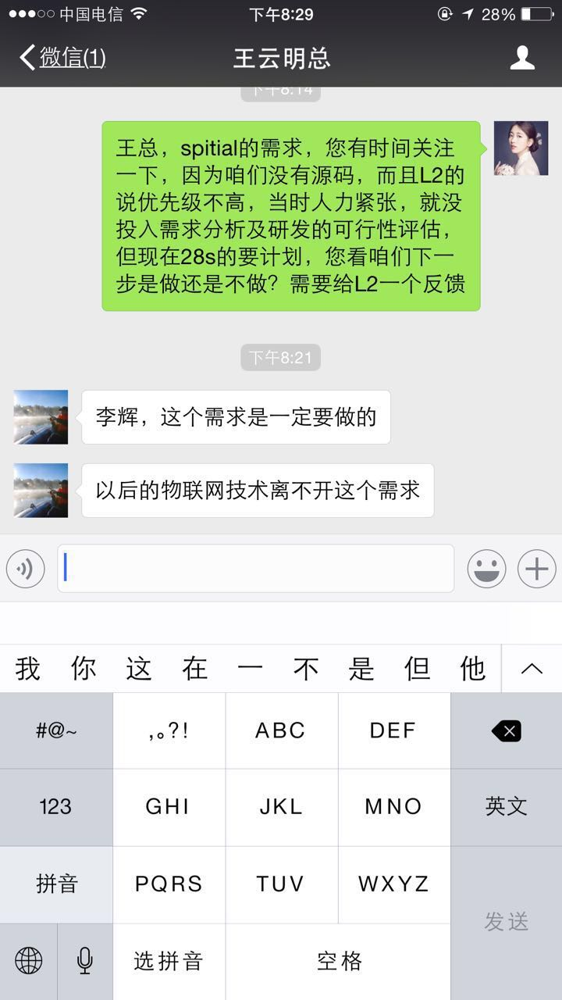
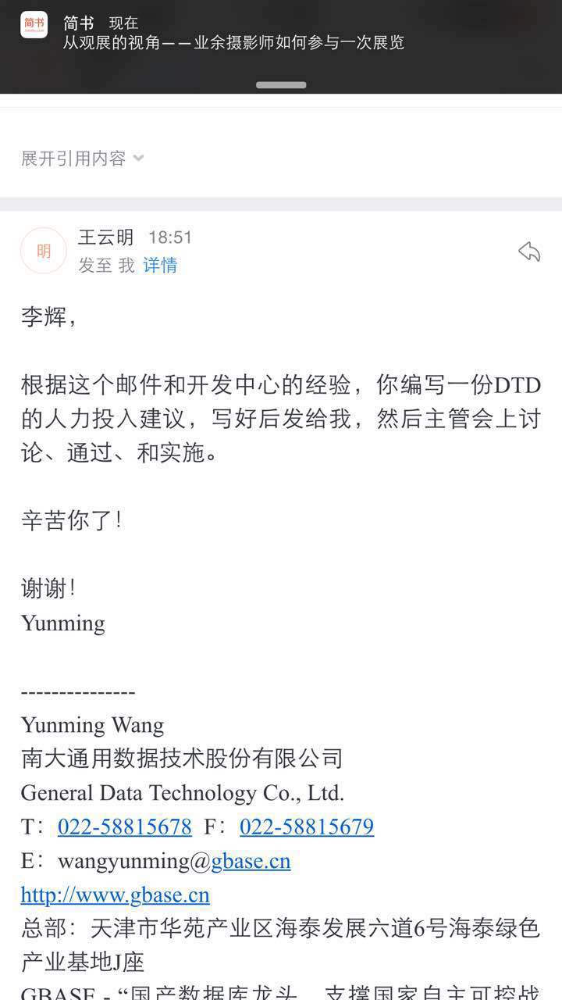
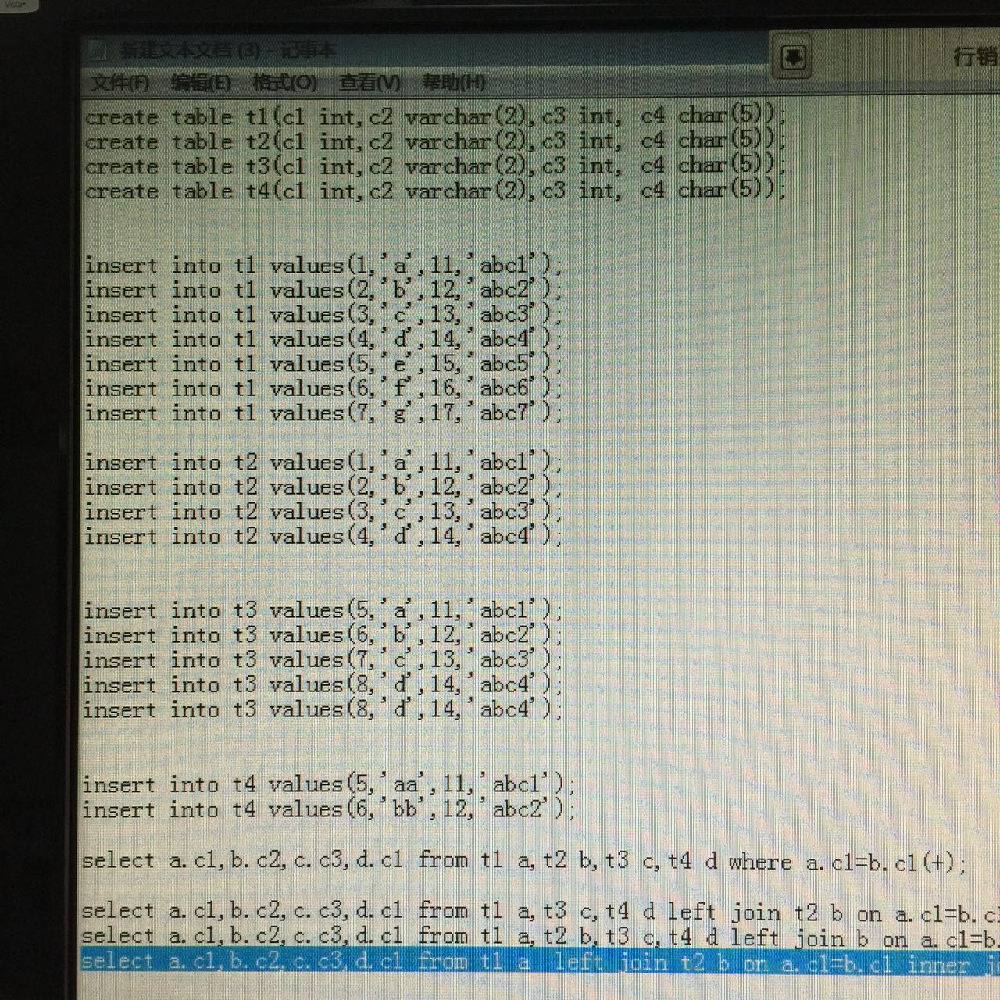
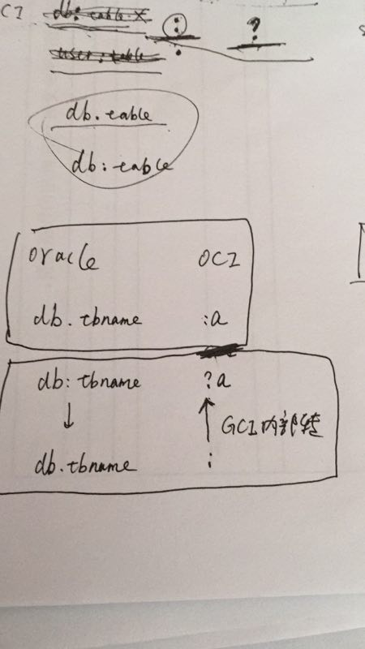
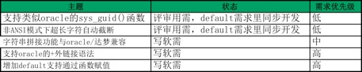
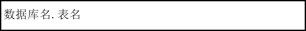
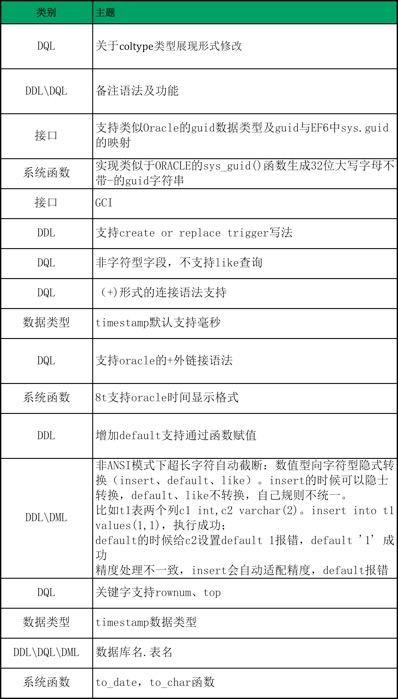

2017-04¶
2017-04-01¶
2017-04-04¶
| 2017-04-04 16:16:00 | 你 | 你回天津了吗？我现在北京南站，人超级多 |
| 2017-04-04 16:16:24 | 我 | 刚到天津 |
| 2017-04-04 16:16:51 | 你 | 哦哦，我也回 |
| 2017-04-04 16:16:54 | 我 | 就你一个人吗 |
| 2017-04-04 16:17:01 | 你 | 是 |
| 2017-04-04 16:17:08 | 你 | 东东回张家口了 |
| 2017-04-04 16:17:16 | 你 | 他明天才回来 |
| 2017-04-04 16:17:24 | 我 | 嗯 |
| 2017-04-04 16:17:34 | 你 | 这人多的啊，我的天 |
| 2017-04-04 16:17:48 | 我 | 今天都回去 |
| 2017-04-04 16:17:58 | 你 | 北京南站一楼也开检票口了，乱的啊 |
| 2017-04-04 16:17:59 | 我 | 注意安全 |
| 2017-04-04 16:18:03 | 你 | 没事， |
| 2017-04-04 16:18:13 | 你 | 幸好我出来的早 |
| 2017-04-04 16:18:23 | 我 | 买票了吗 |
| 2017-04-04 16:18:30 | 你 | 以前南站一楼没有检票口 |
| 2017-04-04 16:18:40 | 你 | 买了，取出来了都 |
| 2017-04-04 16:18:45 | 我 | 好的 |
| 2017-04-04 16:18:59 | 你 | 人山人海 |
| 2017-04-04 16:19:03 | 你 | 天啊 |
| 2017-04-04 16:19:27 | 我 | 几点的车 |
| 2017-04-04 16:19:35 | 你 | 4:41 |
| 2017-04-04 16:19:45 | 你 | 我已经在候车室了 |
| 2017-04-04 16:20:02 | 我 | 嗯嗯 |
| 2017-04-04 16:21:52 | 我 | 快检票了吧 |
| 2017-04-04 16:25:10 | 你 | 上车了 |
| 2017-04-04 16:25:48 | 我 | 嗯 歇会吧 |
| 2017-04-04 16:25:56 | 你 | 还行，不累 |
| 2017-04-04 16:26:21 | 你 | 咱们聊天吧，你有空吗 |
| 2017-04-04 16:26:32 | 我 | 有 |
| 2017-04-04 16:27:05 | 你 | 恩 |
| 2017-04-04 16:27:24 | 你 | 你跟宋文彬聊的怎么样了 |
| 2017-04-04 16:27:37 | 你 | 他怎么这么爱放弃啊 |
| 2017-04-04 16:27:55 | 我 | 没事了，他不走了 |
| 2017-04-04 16:28:02 | 你 | 哦，那就好 |
| 2017-04-04 16:28:22 | 我 | 就是承受不住压力 |
| 2017-04-04 16:28:47 | 你 | 我就是问问你留下他了吗， |
| 2017-04-04 16:29:02 | 我 | 嗯嗯 |
| 2017-04-04 16:29:24 | 我 | 李杰怎么样 |
| 2017-04-04 16:29:28 | 你 | 你还记得周六那天我跟王胜利在群里说的话吗？ |
| 2017-04-04 16:29:37 | 我 | 记得 |
| 2017-04-04 16:29:38 | 你 | 她还好，心态还不错 |
| 2017-04-04 16:29:42 | 你 | 挺开心的 |
| 2017-04-04 16:29:46 | 我 | 嗯 |
| 2017-04-04 16:29:52 | 我 | 那就好 |
| 2017-04-04 16:29:57 | 你 | 你说他是不是没听懂我说话啊 |
| 2017-04-04 16:30:10 | 你 | 怎么跟他说话那么费劲呢[微笑] |
| 2017-04-04 16:30:22 | 我 | 他就那样 |
| 2017-04-04 16:30:38 | 你 | 嗯嗯，没事 |
| 2017-04-04 16:30:45 | 我 | [链接] PBC讨论的聊天记录 |
| 2017-04-04 16:30:50 | 你 | 明天又上班了 |
| 2017-04-04 16:32:07 | 你 | 哦哦 |
| 2017-04-04 16:32:18 | 你 | 交给高杰？ |
| 2017-04-04 16:32:22 | 你 | 是怎么回事 |
| 2017-04-04 16:32:34 | 我 | 团建 |
| 2017-04-04 16:32:51 | 我 | 先说pbc |
| 2017-04-04 16:33:13 | 我 | 后来说团建 |
| 2017-04-04 16:33:26 | 你 | 团建交给高杰啊 |
| 2017-04-04 16:33:27 | 你 | 我说呢 |
| 2017-04-04 16:33:49 | 你 | 感觉没什么信息啊 |
| 2017-04-04 16:34:01 | 我 | 这次给你b |
| 2017-04-04 16:34:05 | 你 | 王胜利发牢骚 |
| 2017-04-04 16:34:13 | 你 | 行啊 |
| 2017-04-04 16:34:24 | 你 | 我应该说，这么好啊 |
| 2017-04-04 16:34:30 | 我 | 是，他嫌弃上次没给他 |
| 2017-04-04 16:34:32 | 你 | 你看着给吧 |
| 2017-04-04 16:34:45 | 你 | 我都行，我相信你啊 |
| 2017-04-04 16:34:48 | 我 | 没办法，我手里没有a |
| 2017-04-04 16:35:07 | 你 | B已经很不错了 |
| 2017-04-04 16:35:13 | 你 | 真的 |
| 2017-04-04 16:35:19 | 你 | 超级不错 |
| 2017-04-04 16:35:20 | 你 | 哈哈 |
| 2017-04-04 16:35:42 | 我 | 你应该是a |
| 2017-04-04 16:36:06 | 你 | 你真这么认为啊 |
| 2017-04-04 16:36:55 | 你 | 你这么认为我就很开心啦，哈哈 |
| 2017-04-04 16:36:56 | 你 | 没事的 |
| 2017-04-04 16:36:57 | 你 | B也很不错，我两年就得了一个 |
| 2017-04-04 16:37:36 | 你 | 感觉咱们现在可以在一起说话的机会比以前多太多了 |
| 2017-04-04 16:37:49 | 你 | 面谈还能聊 |
| 2017-04-04 16:38:59 | 我 | 是呀 |
| 2017-04-04 16:39:56 | 你 | 不说话了[难过] |
| 2017-04-04 16:41:32 | 我 | 咋啦 |
| 2017-04-04 16:42:10 | 你 | 你周六跟武总汇报顺利吗 |
| 2017-04-04 16:42:20 | 我 | 非常顺利 |
| 2017-04-04 16:42:30 | 你 | 太好了 |
| 2017-04-04 16:42:35 | 你 | 后续有安排吗 |
| 2017-04-04 16:42:36 | 我 | 后面肯定是要做 |
| 2017-04-04 16:42:44 | 你 | 后面也要做啊 |
| 2017-04-04 16:42:51 | 我 | 我暂时没什么事情了 |
| 2017-04-04 16:43:04 | 你 | 旭明他们回来吗 |
| 2017-04-04 16:43:09 | 我 | 都回来 |
| 2017-04-04 16:43:14 | 你 | 封闭结束了对吧 |
| 2017-04-04 16:43:16 | 你 | 嗯嗯 |
| 2017-04-04 16:43:17 | 我 | 有事再说 |
| 2017-04-04 16:43:21 | 你 | 嗯嗯 |
| 2017-04-04 16:43:23 | 你 | 不错 |
| 2017-04-04 16:44:35 | 我 | 我先把这边做好吧，已经乱的不像话了 |
| 2017-04-04 16:45:01 | 你 | Dtd这边吗 |
| 2017-04-04 16:45:07 | 我 | 对呀 |
| 2017-04-04 16:45:31 | 你 | 恩 |
| 2017-04-04 16:45:34 | 你 | 好吧 |
| 2017-04-04 16:46:44 | 你 | 太好了 |
| 2017-04-04 16:46:45 | 你 | 信号不好 |
| 2017-04-04 16:47:19 | 我 | 没事，咱俩先把需求做好 |
| 2017-04-04 16:47:53 | 我 | 然后我去整流程，你也帮着我一起做，顺便学习一下 |
| 2017-04-04 17:09:15 | 你 | 好 |
| 2017-04-04 17:09:18 | 你 | 我要下车了 |
| 2017-04-04 17:09:26 | 我 | 嗯嗯 |
| 2017-04-04 17:09:41 | 你 | 睡着了 |
| 2017-04-04 17:09:55 | 我 | [动画表情] |
| 2017-04-04 19:55:18 | 你 | 看到晓亮的邮件了吗 |
| 2017-04-04 19:55:28 | 你 | 他已经催过我好几次了 |
| 2017-04-04 19:55:41 | 我 | 他要哪一个 |
| 2017-04-04 19:56:27 | 你 | 上次是ui界面的，但这次连文档的和spitial的都要了 |
| 2017-04-04 19:56:48 | 我 | 文档的计划已经有了 |
| 2017-04-04 19:57:17 | 你 | 恩 |
| 2017-04-04 19:57:19 | 我 | Spitial的最近不作 |
| 2017-04-04 19:57:33 | 你 | 那估计就是ui界面的了 |
| 2017-04-04 19:58:08 | 我 | 没事，正好明天开会催催季业 |
| 2017-04-04 19:58:09 | 你 | 这个计划以前也是需求的反馈吗？ |
| 2017-04-04 19:58:20 | 你 | 该我干这事吗 |
| 2017-04-04 19:58:22 | 我 | 不是，计划都是严丹反馈 |
| 2017-04-04 19:58:27 | 你 | 对啊 |
| 2017-04-04 19:58:33 | 你 | 我转给高杰呢？ |
| 2017-04-04 19:58:36 | 你 | 你说呢 |
| 2017-04-04 19:58:52 | 你 | 我把这个跟完，以后的高杰回复 |
| 2017-04-04 19:58:59 | 我 | 可以，你就让高杰根据计划回复就行 |
| 2017-04-04 19:59:04 | 你 | 以前不也是她回复的吗 |
| 2017-04-04 19:59:12 | 你 | 嗯嗯 |
| 2017-04-04 19:59:22 | 你 | 我才不干这事呢， |
| 2017-04-04 19:59:29 | 我 | 你记着更新redmine就行 |
| 2017-04-04 19:59:33 | 你 | 嗯嗯 |
| 2017-04-04 19:59:48 | 你 | 那让高杰告诉晓亮？ |
| 2017-04-04 20:00:07 | 我 | 是的，让她统一回复 |
| 2017-04-04 20:00:09 | 你 | 以前是严丹吗？还是老田，我没注意过 |
| 2017-04-04 20:00:25 | 你 | 那redmine需要我回复？ |
| 2017-04-04 20:00:28 | 我 | 都有，正事的应该是严丹 |
| 2017-04-04 20:00:41 | 你 | 计划出了我问高杰吗？ |
| 2017-04-04 20:00:42 | 我 | 对，需求现在在你头上 |
| 2017-04-04 20:00:48 | 你 | 嗯嗯 |
| 2017-04-04 20:01:22 | 我 | 唉，我觉得流程这一块你还需要好好补补 |
| 2017-04-04 20:01:33 | 你 | 恩 |
| 2017-04-04 20:01:41 | 你 | 我不知道啊 |
| 2017-04-04 20:01:48 | 你 | 我只知道需求的 |
| 2017-04-04 20:01:56 | 我 | 没事，我教你 |
| 2017-04-04 20:03:27 | 你 | Spitial的要请示下王总吗 |
| 2017-04-04 20:03:43 | 你 | 我在群里跟高杰说行吗 |
| 2017-04-04 20:04:01 | 你 | 让她明天直接给晓亮回邮件，我就不管了 |
| 2017-04-04 20:04:24 | 我 | 可以 |
| 2017-04-04 20:04:55 | 我 | spitial你私信问问王总，我不建议短期内安排这个 |
| 2017-04-04 20:05:01 | 你 | 好 |
| 2017-04-04 20:16:09 | 你 | 王总，spitial的需求，您有时间关注一下，因为咱们没有源码，而且L2的说优先级不高，当时人力紧张，就没投入需求分析及研发的可行性评估，但现在28s的要计划，您看咱们下一步是做还是不做？需要给L2一个反馈 |
| 2017-04-04 20:16:32 | 我 | 可以 |
| 2017-04-04 20:16:35 | 你 | 给王总发的 |
| 2017-04-04 20:16:37 | 你 | 恩 |
| 2017-04-04 20:22:24 | 我 | 忙啥呢 |
| 2017-04-04 20:29:13 | 你 | 刚才跟东东视频 |
| 2017-04-04 20:29:23 | 你 | 再刚才看六人行呢 |
| 2017-04-04 20:29:28 | 你 | 给你语音 |
| 2017-04-04 20:29:38 | 我 | ok |
| 2017-04-04 20:30:04 | 你 |  |
| 2017-04-04 20:30:33 | 我 | 呵呵 |
| 2017-04-04 20:30:39 | 你 | 这家伙怎么回他啊 |
| 2017-04-04 20:30:43 | 你 | 我都无语了 |
| 2017-04-04 20:30:58 | 我 | 你就回一个好的就行 |
| 2017-04-04 20:31:16 | 你 | 人家这完全就是心怀天下 |
| 2017-04-04 20:31:40 | 我 | 无所谓，先放着呗 |
| 2017-04-04 20:32:01 | 你 | 好吧，反正计划我也不管 |
| 2017-04-04 20:32:21 | 我 | 他自己完全不知道我们的生产力 |
| 2017-04-04 20:32:43 | 你 | 就是 |
| 2017-04-04 20:33:10 | 我 | 不行就让张杰去调研 |
| 2017-04-04 20:33:11 | 你 | 等我跟你语音，我先给阿娇打个电话 |
| 2017-04-04 20:33:19 | 我 | 嗯嗯 |
| 2017-04-04 20:36:07 | 你 | [电话] |
| 2017-04-04 20:38:40 | 你 | [电话] |
| 2017-04-04 21:41:17 | 你 | [电话] |
| 2017-04-04 21:41:39 | 我 | 怎么断了 |
| 2017-04-04 21:42:36 | 我 | 我先去洗澡，回来再聊吧 |
| 2017-04-04 21:45:13 | 你 | 去吧，我也洗漱去了 |
| 2017-04-04 22:04:49 | 我 | 回来了 |
2017-04-05¶
| 2017-04-05 08:47:58 | 你 | 我的莲子要死了 |
| 2017-04-05 08:48:17 | 我 | 赶紧换水吧 |
| 2017-04-05 08:48:32 | 我 | 心疼坏了吧 |
| 2017-04-05 08:48:40 | 你 | 是啊 |
| 2017-04-05 08:48:54 | 你 | 没来得及栽土里 |
| 2017-04-05 08:49:03 | 你 | 我中午的时候找点土 |
| 2017-04-05 08:49:14 | 我 | 嗯嗯 |
| 2017-04-05 08:55:23 | 你 | 我今天晨会汇报啥啊 |
| 2017-04-05 08:55:27 | 你 | 我忘了 |
| 2017-04-05 08:55:43 | 你 | |
| 2017-04-05 08:55:52 | 我 | 就是28s的 |
| 2017-04-05 08:55:56 | 你 | 好 |
| 2017-04-05 08:56:03 | 我 | 主要是windows |
| 2017-04-05 08:56:11 | 你 | 要计划 |
| 2017-04-05 08:56:16 | 你 | 嗯嗯 |
| 2017-04-05 09:04:16 | 你 | 4.15的连调版是什么鬼 |
| 2017-04-05 09:04:43 | 我 | 不知道，我没听说过 |
| 2017-04-05 09:46:13 | 我 | 亲，想着问问超图的事情，咱俩好买票 |
| 2017-04-05 09:46:25 | 你 | 我打电话了 没接 |
| 2017-04-05 09:46:29 | 你 | 等回再打一次 |
| 2017-04-05 09:46:32 | 我 | 嗯嗯 |
| 2017-04-05 09:46:33 | 你 | 我记着呢 |
| 2017-04-05 09:46:40 | 我 | 嗯 |
| 2017-04-05 10:53:45 | 你 | 刚才张杰说注释那个功能 Server改了以后 外围工具都得相应的改动 |
| 2017-04-05 10:53:49 | 你 | 比如高可用 |
| 2017-04-05 10:53:58 | 你 | 同步的信息 也要包括注释 |
| 2017-04-05 10:53:59 | 我 | 是的 |
| 2017-04-05 10:55:21 | 你 | 这个事比较麻烦啊 |
| 2017-04-05 10:55:32 | 你 | 这样软需应该定义这些行为的啊 |
| 2017-04-05 10:55:34 | 你 | 你说呢 |
| 2017-04-05 10:55:44 | 我 | 我觉得可以先不用定义 |
| 2017-04-05 10:55:54 | 我 | 这个应该是研发的去定义 |
| 2017-04-05 10:56:03 | 我 | 也就是说用户并不关注这些 |
| 2017-04-05 10:56:15 | 你 | 那肯定的 |
| 2017-04-05 10:56:20 | 你 | 就这样吧 |
| 2017-04-05 10:56:30 | 我 | 建议是由他们列出影响范围 |
| 2017-04-05 10:56:33 | 你 | 这个定义的话 一句话就行 |
| 2017-04-05 10:56:46 | 我 | 其实这些都应该是评估阶段就做的事情 |
| 2017-04-05 10:56:54 | 我 | 不应该等到现在才做 |
| 2017-04-05 10:56:55 | 你 | 那我软需里不体现了 到时候设计评审的时候再加上 |
| 2017-04-05 10:57:00 | 我 | 嗯嗯 |
| 2017-04-05 10:57:07 | 你 | 评估了两个月了已经 |
| 2017-04-05 10:57:10 | 你 | 呵呵 |
| 2017-04-05 10:57:44 | 我 | 所以我现在严重怀疑他们的效率 |
| 2017-04-05 10:57:49 | 我 | 包括测试在内 |
| 2017-04-05 10:58:10 | 我 | 你看重庆地铁，一说着急，一下子就全完成了 |
| 2017-04-05 10:58:19 | 你 | 哈哈 |
| 2017-04-05 10:58:28 | 你 | 那个4.15发版 |
| 2017-04-05 10:58:37 | 我 | 是 |
| 2017-04-05 10:59:12 | 你 | 超图地址：朝阳区酒仙桥北路甲10号电子城it产业园107楼7层 |
| 2017-04-05 10:59:25 | 我 | 👌 |
| 2017-04-05 10:59:36 | 你 | 时间咱们定 |
| 2017-04-05 10:59:39 | 你 | 他都OK |
| 2017-04-05 11:01:38 | 你 | 咱们14号地铁 望京南下车 然后打车过去得了 |
| 2017-04-05 11:01:48 | 我 | 可以 |
| 2017-04-05 11:02:16 | 你 | 总车程：1.5小时，咱们10点开会行吗？ |
| 2017-04-05 11:02:20 | 你 | 还是等下午 |
| 2017-04-05 11:02:27 | 我 | 就10点吧 |
| 2017-04-05 11:02:30 | 你 | OK |
| 2017-04-05 11:02:34 | 我 | 应该用不了多久 |
| 2017-04-05 11:02:44 | 你 | OK |
| 2017-04-05 11:08:34 | 我 | 咱们买几点的火车票 |
| 2017-04-05 11:08:52 | 你 | 等会 我看看啊 |
| 2017-04-05 11:13:08 | 你 | G9004 |
| 2017-04-05 11:13:11 | 你 | 7：47 |
| 2017-04-05 11:13:23 | 我 | 👌 |
| 2017-04-05 11:13:24 | 你 | OK吗 |
| 2017-04-05 11:18:49 | 你 | 我买了 |
| 2017-04-05 11:18:54 | 你 | 12车 16B |
| 2017-04-05 11:19:03 | 我 | 我还没有进去 |
| 2017-04-05 11:27:25 | 我 | 11车02A |
| 2017-04-05 11:27:36 | 你 | 嗯嗯 |
| 2017-04-05 11:27:38 | 你 | 好 |
| 2017-04-05 12:34:16 | 我 | 你下午是不是没事了 |
| 2017-04-05 12:37:51 | 你 | 软需我就改完一份了 |
| 2017-04-05 12:38:08 | 你 | 晓亮说5月15号的版本可以先不做授权的 |
| 2017-04-05 12:38:18 | 我 | ok |
| 2017-04-05 12:39:33 | 你 | 我快被王总气死了 |
| 2017-04-05 12:39:46 | 我 | 😄，别生气 |
| 2017-04-05 12:39:57 | 我 | 和他生气没有用 |
| 2017-04-05 12:40:24 | 我 | 咱们应该借势而为 |
| 2017-04-05 12:40:50 | 我 | 他不是什么都答应吗，你就顺着他，然后去压研发的 |
| 2017-04-05 12:40:59 | 我 | 时间长了自然有结果 |
| 2017-04-05 12:41:03 | 你 | 嗯嗯 |
| 2017-04-05 12:41:04 | 你 | 好 |
| 2017-04-05 12:42:03 | 我 | 你知道吗，当初我就是因为怕出现这样的领导，我才非常强势，非常护着研发 |
| 2017-04-05 12:42:20 | 你 | 哦 |
| 2017-04-05 12:43:12 | 我 | 老田有一阵子就是这样，使劲压研发，而且是绕过我直接找旭明。让我闹了几次他就不敢了 |
| 2017-04-05 12:43:43 | 我 | 现在研发的头是王总，那就让他去折腾。反正都是他自己的人 |
| 2017-04-05 12:43:56 | 我 | 等折腾多了，他就该知道是怎么回事了 |
| 2017-04-05 12:44:16 | 你 | 是 |
| 2017-04-05 12:44:21 | 你 | 行吧 |
| 2017-04-05 12:44:55 | 你 | 主要这样的话 需求这边的信息不公开（没有过rd） |
| 2017-04-05 12:47:32 | 我 | 我知道。现在的问题在于像这样联调、poc、适配之类的都是没有正事项目的。所以也没有办法入rd。你先把这些东西都记下来，回来等Q2做一个统计，看看咱们有多少是不经过流程进来的需求 |
| 2017-04-05 12:48:36 | 你 | 恩 知道了 |
| 2017-04-05 12:49:08 | 你 | 回他了 |
| 2017-04-05 12:49:42 | 你 | 但是8t 联调、poc、适配这类的项目 比正式上线还要多 |
| 2017-04-05 12:49:46 | 你 | 国网就是 |
| 2017-04-05 12:50:06 | 我 | 对，没错，现在最大的问题就是这个 |
| 2017-04-05 12:50:36 | 我 | 现在也不知道公司对这种状态时什么态度 |
| 2017-04-05 12:51:13 | 我 | 目前看，之前老陈对这种项目是非常抵触的 |
| 2017-04-05 12:51:57 | 我 | 王总现在可能是因为刚来，希望能做出政绩，所以这类项目就不停的答应 |
| 2017-04-05 12:52:34 | 我 | 我觉得至少今年一年是没有办法做到像开发中心那样有规律的研发 |
| 2017-04-05 12:54:03 | 你 | 唉 |
| 2017-04-05 12:54:07 | 你 | 不知道 |
| 2017-04-05 12:55:28 | 我 | 你今天晚上怎么回家 |
| 2017-04-05 12:55:37 | 你 | 东东来接我 |
| 2017-04-05 12:55:50 | 我 | 嗯，他到天津了？ |
| 2017-04-05 12:56:05 | 你 | 晚上的时候能到 |
| 2017-04-05 12:56:32 | 我 | 嗯嗯 |
| 2017-04-05 13:11:45 | 你 | 金航数码这需求跟国网一个德性 连技术支持都是一波人 |
| 2017-04-05 13:11:56 | 我 | 呵呵 |
| 2017-04-05 13:12:17 | 你 | 赵益又把需求列成了7点： 目前联调中遇到的问题主要包括： 1.大对象问题：（待金航数码给出代码样例），需要我们支持样例中的语法。 2.迁移工具问题：考虑到今后项目部署的需要，成熟的迁移工具可以降低工作量。 3.表名大小写问题：Oracle采用默认大写，需要8t也支持默认大写。 4.Hibernate方言包问题：已解决。 5.修改连接字符串问题：已解决。 6.时间日期问题：需要支持Oracle的日期格式完全支持，如 mm-dd-yyyy hh24:mi:ss等。 7.字段名大小写问题：Oracle采用默认大写，需要8t也支持默认大写。 |
| 2017-04-05 13:12:29 | 你 | 这7点有的是需求 有的是问题 |
| 2017-04-05 13:12:39 | 你 | 这就该走流程 |
| 2017-04-05 13:12:55 | 我 | 让他先列出来兼容性测试必须的 |
| 2017-04-05 13:13:00 | 你 | 对啊 |
| 2017-04-05 13:13:20 | 你 | 先列出来必须的 而且这个就是我收录的那4个需求 |
| 2017-04-05 13:13:30 | 你 | 但是你详细看看 这些需求都特别大 |
| 2017-04-05 13:13:36 | 我 | 是的 |
| 2017-04-05 13:14:03 | 你 | 大对象问题：（待金航数码给出代码样例），需要我们支持样例中的语法。 迁移工具问题：考虑到今后项目部署的需要，成熟的迁移工具可以降低工作量。 表名大小写问题：Oracle采用默认大写，需要8t也支持默认大写。 时间日期问题：需要支持Oracle的日期格式完全支持，如 mm-dd-yyyy hh24:mi:ss等。 |
| 2017-04-05 13:14:12 | 我 | 主要还是大对象和大小写问题 |
| 2017-04-05 13:14:13 | 你 | 就这四个 |
| 2017-04-05 13:14:28 | 我 | 迁移工具是老田他们的 |
| 2017-04-05 13:15:00 | 我 | 时间格式国网有没有 |
| 2017-04-05 13:19:13 | 你 | 应该是有 |
| 2017-04-05 13:19:19 | 你 | 这个需要详细问问 |
| 2017-04-05 13:19:26 | 你 | 大对象的没有 |
| 2017-04-05 13:19:32 | 我 | 是 |
| 2017-04-05 13:19:42 | 我 | 先收集一下大对象的 |
| 2017-04-05 13:19:45 | 你 | 大小写的就按照国网的做了 让改也不会改的 |
| 2017-04-05 13:19:54 | 我 | 其他几个看看是不是和国网一样 |
| 2017-04-05 13:20:05 | 我 | 如果一样就先不用写需求了 |
| 2017-04-05 13:20:13 | 你 | 是的 |
| 2017-04-05 13:20:26 | 你 | 是的王总，刚才跟赵益打电话他关机了，我再联系他，把需求1和4的具体场景要过来，我看销售提的deadline是4月30号，这个需要跟一线的确认，deadline之前必须要实现的需求是什么。 另：要不让L2提需求单子过来，并且把迁移工具（需求点二）直接提给田志敏组。 |
| 2017-04-05 13:20:31 | 你 | 这是我回的邮件 |
| 2017-04-05 13:20:58 | 你 | 估计都差不多 |
| 2017-04-05 13:21:03 | 你 | 都是跟Oracle适配的 |
| 2017-04-05 13:21:07 | 我 | 是的 |
| 2017-04-05 13:21:25 | 你 | 王总回复了一个字 好 |
| 2017-04-05 13:21:36 | 我 | 唉 |
| 2017-04-05 13:21:56 | 我 | 那就让L2提单子吧 |
| 2017-04-05 13:21:57 | 你 | 他这个字模棱两可 我都不知道该怎么整了 |
| 2017-04-05 13:22:02 | 你 | 待会我给赵益打电话 |
| 2017-04-05 13:22:09 | 我 | 就当他同意的提议 |
| 2017-04-05 13:22:10 | 你 | 让他找L2的提单子 |
| 2017-04-05 13:22:15 | 我 | 嗯嗯 |
| 2017-04-05 13:22:30 | 你 | 王总肯定是不太乐意 |
| 2017-04-05 13:22:40 | 我 | 不乐意什么？ |
| 2017-04-05 13:22:50 | 你 | 不乐意找L2的提单子啊 |
| 2017-04-05 13:23:04 | 你 | 这件事都是我逼着他干的 |
| 2017-04-05 13:23:14 | 我 | 不管他乐意不乐意 |
| 2017-04-05 13:23:24 | 你 | 我才不管呢 |
| 2017-04-05 13:23:34 | 你 | 我就要单子 |
| 2017-04-05 13:23:49 | 我 | 没错 |
| 2017-04-05 13:30:03 | 你 | 我要疯了 亲爱的 |
| 2017-04-05 13:30:11 | 我 | 嗯嗯 |
| 2017-04-05 13:30:13 | 我 | 我知道 |
| 2017-04-05 13:30:21 | 你 | 刘辉提了一个Windows12版本的需求 |
| 2017-04-05 13:30:28 | 你 | 节前提的 |
| 2017-04-05 13:30:52 | 我 | 我知道，我正在推进，你先不用管这个 |
| 2017-04-05 13:31:02 | 你 | 好吧 |
| 2017-04-05 13:31:17 | 我 | 这个可以转成问题 |
| 2017-04-05 13:31:25 | 你 | 王志转给我的 |
| 2017-04-05 13:31:28 | 我 | 老毛已经发现一些线索了 |
| 2017-04-05 13:31:34 | 你 | 好的 |
| 2017-04-05 13:31:58 | 我 | 不用管王志，过几天他就去北京开发了 |
| 2017-04-05 13:32:10 | 你 | 哦哦 |
| 2017-04-05 14:09:59 | 你 | 刚才我找张杰的时候 张杰正在开电话会议 |
| 2017-04-05 14:10:06 | 你 | 28s项目的 |
| 2017-04-05 14:10:38 | 我 | 呵呵，这样正好 |
| 2017-04-05 14:10:49 | 我 | 细节就让他们自己去定吧 |
| 2017-04-05 14:10:54 | 你 | 中午吃饭的时候 张杰问我 下午那会没有你是吧 |
| 2017-04-05 14:10:59 | 你 | 我说没收到通知啊 |
| 2017-04-05 14:11:05 | 你 | 我想也是 |
| 2017-04-05 14:11:14 | 你 | 他要是什么都不让我管才好呢 |
| 2017-04-05 14:11:29 | 你 | 以后都让研发做去 我落个清闲 |
| 2017-04-05 14:11:36 | 我 | 😄，没错 |
| 2017-04-05 14:11:54 | 你 | 我只是不知道这个会议是谁组织的 |
| 2017-04-05 14:11:57 | 我 | 想管就管，不想管就不管 |
| 2017-04-05 14:12:02 | 你 | 张杰肯定是被通知的 |
| 2017-04-05 14:12:08 | 你 | 对滴对滴 |
| 2017-04-05 14:12:14 | 你 | 正和我意 |
| 2017-04-05 14:12:41 | 我 | 而且没有经过你的需求，你就当作不知道 |
| 2017-04-05 14:12:52 | 我 | 等有人提起来的时候，你就嚷嚷 |
| 2017-04-05 14:12:56 | 你 | 我肯定是当做不知道 |
| 2017-04-05 14:12:58 | 你 | 我知道 |
| 2017-04-05 14:13:17 | 你 | 就跟今早上高杰杜撰什么4.15联调版一样 |
| 2017-04-05 14:13:25 | 我 | 没错 |
| 2017-04-05 14:13:34 | 你 | 你说我是不是该问 |
| 2017-04-05 14:13:37 | 你 | 哈哈 |
| 2017-04-05 14:13:57 | 我 | 当然该问啦 |
| 2017-04-05 15:03:24 | 我 | 亲，干啥呢 |
| 2017-04-05 15:04:03 | 你 | 王胜利给我回邮件了 |
| 2017-04-05 15:04:09 | 我 | 看见了 |
| 2017-04-05 15:06:26 | 你 | 审阅方式是什么方式 |
| 2017-04-05 15:06:42 | 我 | 就是修订 |
| 2017-04-05 15:07:00 | 我 | 你打开修订，他们就可以看见是哪里改了 |
| 2017-04-05 15:07:19 | 你 | 好 |
| 2017-04-05 15:07:39 | 你 | 我靠 气死我了 |
| 2017-04-05 15:07:50 | 你 | 我让刘畅给我贴个正文他都不乐意 |
| 2017-04-05 15:08:00 | 你 | 现在还要求我 |
| 2017-04-05 15:08:45 | 我 | 别理他们 |
| 2017-04-05 15:14:00 | 我 | 2012的需求我让老毛改成问题了，指给季业 |
| 2017-04-05 15:14:17 | 你 | 好 |
| 2017-04-05 15:23:17 | 我 | 我回邮件了 |
| 2017-04-05 15:23:45 | 你 | 看见了 |
| 2017-04-05 15:24:00 | 你 | 用我回复一个不 |
| 2017-04-05 15:24:06 | 我 | 不用 |
| 2017-04-05 15:35:09 | 你 | null的我把用需写完了 |
| 2017-04-05 15:35:13 | 你 | 发给你看看 |
| 2017-04-05 15:35:23 | 我 | 好的 |
| 2017-04-05 15:37:28 | 你 | 给你邮件贴正文行吗 |
| 2017-04-05 15:37:37 | 我 | 可以 |
| 2017-04-05 15:41:43 | 我 | 你的例子里面没有nvl函数呀 |
| 2017-04-05 15:42:05 | 你 | 我补上去 |
| 2017-04-05 15:42:09 | 我 | 分析结果里面应该是对2.1进行评估吧 |
| 2017-04-05 15:42:27 | 你 | 3.1啊 用户需求 |
| 2017-04-05 15:42:55 | 我 | 你给我发的邮件里面是2.1 |
| 2017-04-05 15:43:27 | 你 | o o 可能贴的正文 标题号乱了 |
| 2017-04-05 15:43:28 | 你 | 没事 |
| 2017-04-05 15:44:10 | 你 | 例如： > create table t1 (id int,data1 varchar(64),data2 varchar(64),data3 varchar(64)); > insert into t1 values (1,’abc’,null,’xy)z’); > select nvl(data1||data2||data3,’xxx’) d123 from t1 where id=1; GBase 8s执行结果为xxx。Oracle 和 DM 的执行结果均为 abcxyz 。 |
| 2017-04-05 15:44:19 | 你 | 例子改成这个 |
| 2017-04-05 15:44:29 | 我 | 👌 |
| 2017-04-05 15:44:43 | 你 | oracle有nvl2函数 是nvl的扩展版 但是我测试的结果是8t不支持 |
| 2017-04-05 15:44:49 | 你 | 所以用需里也没写 |
| 2017-04-05 15:44:56 | 我 | 嗯嗯 |
| 2017-04-05 15:45:00 | 我 | 先做这个 |
| 2017-04-05 15:45:06 | 你 | 好 |
| 2017-04-05 16:13:45 | 我 | [链接] 王雪松和Yunming的聊天记录 |
| 2017-04-05 16:30:28 | 我 | [链接] 王雪松和Yunming的聊天记录 |
| 2017-04-05 16:30:29 | 我 | 王总还没回 |
| 2017-04-05 16:46:59 | 我 | 王总还是坚持让王志去 |
| 2017-04-05 16:47:11 | 你 | 那就去呗 |
| 2017-04-05 16:47:16 | 你 | 去吧 |
| 2017-04-05 16:47:35 | 你 | 没办法 |
| 2017-04-05 16:47:42 | 我 | 唉，带这么一个讨厌的大灯泡 |
| 2017-04-05 16:48:05 | 你 | 恩 是呗 |
| 2017-04-05 16:48:11 | 你 | 那也没办法啊 |
| 2017-04-05 16:49:53 | 我 | 你有超图的项目编号吗 |
| 2017-04-05 16:49:55 | 你 | 他不会是不放心我吧 |
| 2017-04-05 16:49:58 | 你 | 有 |
| 2017-04-05 16:50:09 | 我 | 发给我，还有项目名称 |
| 2017-04-05 16:50:41 | 你 | SAL20164318 |
| 2017-04-05 16:50:54 | 你 | 项目名称没有啊 |
| 2017-04-05 16:51:01 | 你 | 可能就是超图项目吧 |
| 2017-04-05 16:51:20 | 我 | 出差需要有项目名称 |
| 2017-04-05 16:51:32 | 你 | 超图项目 |
| 2017-04-05 16:51:58 | 我 | 服务类型知道是什么吗 |
| 2017-04-05 16:52:03 | 你 | 不行我打电话问问 |
| 2017-04-05 16:52:10 | 你 | 你在填什么啊 |
| 2017-04-05 16:52:31 | 我 | 出差申请呀 |
| 2017-04-05 16:52:58 | 你 | 这个东西你写过？ |
| 2017-04-05 16:53:26 | 我 | 上次去珠海的时候填过 |
| 2017-04-05 16:53:56 | 你 | 哦 |
| 2017-04-05 16:54:01 | 你 | 写这个发给谁啊 |
| 2017-04-05 16:54:29 | 我 | 考勤 |
| 2017-04-05 16:54:43 | 你 | 那个中油瑞飞的 需要我怎么提醒王总啊 |
| 2017-04-05 16:54:59 | 你 | 不需要写软需文档的对吧 |
| 2017-04-05 16:55:04 | 我 | EF6？ |
| 2017-04-05 16:55:27 | 你 | 考勤 我就发出差去哪 时间 怎么还要发出差申请？ |
| 2017-04-05 16:55:33 | 你 | 对 |
| 2017-04-05 16:56:14 | 我 | 你别管了，我统一发邮件吧 |
| 2017-04-05 16:56:27 | 你 | 哦 |
| 2017-04-05 17:01:18 | 你 | 我都不知道你离东站近 |
| 2017-04-05 17:01:22 | 你 | 我都忘了 |
| 2017-04-05 17:01:23 | 你 | 呜呜 |
| 2017-04-05 17:01:29 | 我 | 😄，没事的 |
| 2017-04-05 17:01:49 | 我 | 这样正好甩了这个大灯泡 |
| 2017-04-05 17:01:57 | 你 | 我每次在南站都找不着 |
| 2017-04-05 17:02:01 | 你 | 每次 |
| 2017-04-05 17:02:13 | 我 | 没事的，你跟着我，丢不了 |
| 2017-04-05 17:05:27 | 你 | 我现在没事了 |
| 2017-04-05 17:05:30 | 你 | 一直忙一直忙 |
| 2017-04-05 17:05:39 | 我 | 嗯嗯 |
| 2017-04-05 17:06:09 | 我 | 我也没事了，刚才发了出差报备 |
| 2017-04-05 18:13:32 | 你 | 明天咱们不在 高杰确定工位 |
| 2017-04-05 18:13:37 | 你 | 你说他是不是故意的 |
2017-04-06¶
| 2017-04-06 07:19:51 | 你 | 东东跟我在一块 |
| 2017-04-06 07:19:56 | 你 | 别跟我打招呼 |
| 2017-04-06 07:20:08 | 你 | 我还在进站口呢 |
| 2017-04-06 07:20:12 | 你 | 别回了 |
| 2017-04-06 09:40:55 | 我 | 累了吗 |
| 2017-04-06 09:41:17 | 你 | 还行，不累 |
| 2017-04-06 09:41:24 | 你 | 这个车不太好 |
| 2017-04-06 09:41:27 | 你 | 有味 |
| 2017-04-06 09:41:30 | 我 | 是 |
| 2017-04-06 09:41:36 | 你 | 我挺兴奋的还 |
| 2017-04-06 09:41:43 | 我 | 那就好 |
| 2017-04-06 09:41:45 | 你 | 挺开心，开完会就回家 |
| 2017-04-06 09:41:47 | 你 | 哈哈 |
| 2017-04-06 09:41:53 | 我 | 嗯嗯 |
| 2017-04-06 09:42:19 | 你 | 一会我付钱啊，你别跟我抢 |
| 2017-04-06 09:42:32 | 我 | 啊，为啥呀 |
| 2017-04-06 09:42:46 | 我 | 我是领导应该我付钱 |
| 2017-04-06 09:42:50 | 你 | 没事啊，我闲墨迹 |
| 2017-04-06 09:42:54 | 你 | 不用不用 |
| 2017-04-06 09:43:11 | 你 | 你就别吱声了 |
| 2017-04-06 09:43:19 | 我 | 好吧 |
| 2017-04-06 09:43:32 | 我 | 中午饭我请 |
| 2017-04-06 09:43:33 | 你 | 嗯 |
| 2017-04-06 09:43:40 | 你 | 再说吧 |
| 2017-04-06 11:04:41 | 你 | 我困死了 |
| 2017-04-06 11:43:53 | 你 | 还有代码归属谁的问题吗 |
| 2017-04-06 14:12:53 | 你 | [链接] 微信红包 |
2017-04-07¶
| 2017-04-07 08:21:40 | 我 | 早 |
| 2017-04-07 08:21:46 | 你 | 早 |
| 2017-04-07 08:22:09 | 你 | 我今天特别忙 欠你好几个东西 |
| 2017-04-07 08:22:30 | 我 | 什么东西 |
| 2017-04-07 08:22:54 | 你 | 需求列表 还有会议纪要 |
| 2017-04-07 08:23:02 | 你 | 等我弄好给你 |
| 2017-04-07 08:23:06 | 你 | 来了好几个需求 |
| 2017-04-07 08:23:11 | 你 | 昨天我爸妈打架了 |
| 2017-04-07 08:23:15 | 我 | 啊 |
| 2017-04-07 08:23:18 | 你 | 我哭了半宿 |
| 2017-04-07 08:23:27 | 我 | 唉 |
| 2017-04-07 08:23:44 | 我 | 为啥呀 |
| 2017-04-07 08:23:53 | 你 | 我不想说了 你别问了 |
| 2017-04-07 08:23:59 | 我 | 嗯 |
| 2017-04-07 09:00:13 | 我 | 看你的样子心疼死了 |
| 2017-04-07 09:00:23 | 你 | 咋了 |
| 2017-04-07 09:00:27 | 你 | 是不是很憔悴 |
| 2017-04-07 09:00:32 | 我 | 是的 |
| 2017-04-07 09:00:56 | 我 | 眼睛有点肿 |
| 2017-04-07 09:01:04 | 我 | 人看上去很累 |
| 2017-04-07 09:02:13 | 你 | 嗯嗯 眼睛肿了 |
| 2017-04-07 11:53:00 | 你 | 我今天心情不好 不好意思啊 |
| 2017-04-07 11:55:48 | 我 | 我知道，所以很担心你 |
| 2017-04-07 11:56:30 | 我 | 有啥话可以和我说说，说出来就好了 |
| 2017-04-07 11:56:42 | 你 | 没事了 |
| 2017-04-07 11:56:49 | 你 | 我一会就好 |
| 2017-04-07 11:57:49 | 我 | 嗯 |
| 2017-04-07 12:19:53 | 我 | 吃饭了吗 |
| 2017-04-07 12:22:31 | 我 | 你还是去吃点吧，下午两点还要开会呢 |
| 2017-04-07 12:53:55 | 你 | 干嘛换这小桌 |
| 2017-04-07 12:53:58 | 你 | 真烦人 |
| 2017-04-07 12:54:19 | 我 | 唉，高杰巴结领导 |
| 2017-04-07 12:55:08 | 我 | 王总想要一个独立的屋子，高杰把靠墙这半拉子都给王总了 |
| 2017-04-07 12:55:51 | 我 | 你没看见刚才高杰那种献媚的样子，恶心死我了 |
| 2017-04-07 12:55:52 | 你 | 搞得大家这么拥挤 |
| 2017-04-07 12:56:12 | 你 | 拿得多挤啊 |
| 2017-04-07 12:56:17 | 我 | 这就是拿大家的利益去邀宠 |
| 2017-04-07 12:56:58 | 你 | 王总二楼那屋子还在吗 |
| 2017-04-07 12:57:05 | 你 | 干嘛搞这个 |
| 2017-04-07 12:57:08 | 你 | 真烦人 |
| 2017-04-07 12:57:23 | 你 | 太挤了 |
| 2017-04-07 12:57:29 | 我 | 是 |
| 2017-04-07 12:57:56 | 我 | 特别挤，早上她问我的时候我说不同意，她拿王总压我 |
| 2017-04-07 12:58:31 | 你 | 你看那么个小屋，装多少人啊 |
| 2017-04-07 12:58:36 | 你 | 靠 |
| 2017-04-07 12:59:31 | 我 | 王总还觉得不错 |
| 2017-04-07 13:00:03 | 你 | 人没进去呢，肯定是看不出来 |
| 2017-04-07 13:00:18 | 我 | 我看王总平时关心下属的那些话都是虚伪的 |
| 2017-04-07 13:00:19 | 你 | 人一进去就看出来了 |
| 2017-04-07 13:00:40 | 你 | 肯定是，假死了 |
| 2017-04-07 13:00:41 | 我 | 等进去就晚了 |
| 2017-04-07 13:01:01 | 你 | 你看那窄的 |
| 2017-04-07 13:01:16 | 我 | 是 |
| 2017-04-07 13:02:25 | 你 | 夏天再不通风，臭死了 |
| 2017-04-07 13:04:02 | 我 | 是 |
| 2017-04-07 13:04:40 | 你 | 我看洪越这个 |
| 2017-04-07 13:04:51 | 你 | 窄的根本什么都放不下 |
| 2017-04-07 13:06:14 | 我 | 是呀，我在想不行就不放台式机 |
| 2017-04-07 13:06:22 | 我 | 就带本过去 |
| 2017-04-07 13:51:19 | 你 | 那个会议纪要 我要从新写了 |
| 2017-04-07 13:51:28 | 我 | 没事 |
| 2017-04-07 13:51:30 | 我 | 不急 |
| 2017-04-07 13:51:36 | 你 | 这次写多一些 交待一下背景 |
| 2017-04-07 13:51:41 | 你 | 还有前景 |
| 2017-04-07 13:51:47 | 我 | 👌 |
| 2017-04-07 13:51:57 | 我 | 该去开会了 |
| 2017-04-07 13:52:11 | 你 | 恩 |
| 2017-04-07 13:52:20 | 你 | 我也去对吧 |
| 2017-04-07 13:52:32 | 我 | 对呀，应该是部门周会 |
| 2017-04-07 15:07:52 | 你 | 每次听到胜利说话，我都想笑 |
| 2017-04-07 15:09:07 | 我 | 嗯嗯 |
| 2017-04-07 15:40:19 | 你 | 你快挤死我了，左移 |
| 2017-04-07 15:41:04 | 我 | 我离你近点不好吗 |
| 2017-04-07 17:59:30 | 你 | 这个还提spatial的事吗 |
| 2017-04-07 17:59:40 | 我 | 先不提了 |
| 2017-04-07 17:59:45 | 你 | 好 |
2017-04-08¶
| 2017-04-08 10:55:45 | 你 |
|
| 2017-04-08 10:56:07 | 你 | 老田在rd上回复的 |
| 2017-04-08 10:56:17 | 你 | 我已经告诉王总了 |
| 2017-04-08 10:56:55 | 我 | 你能给我打电话吗 |
| 2017-04-08 10:57:03 | 你 | 不能 |
| 2017-04-08 10:57:11 | 你 | 你直接微信告诉我吧 |
| 2017-04-08 10:57:26 | 我 | 首先确认是要求输出sql吗 |
| 2017-04-08 10:57:29 | 你 | 还有 晓亮把邮件发给我了 |
| 2017-04-08 10:57:39 | 你 | rd上说了 确认 |
| 2017-04-08 10:57:53 | 我 | 那我回复邮件吧 |
| 2017-04-08 10:57:58 | 你 | 好 |
| 2017-04-08 10:58:28 | 你 | 我给王总发的微信 他没回呢 |
| 2017-04-08 10:58:37 | 我 | 没事 |
| 2017-04-08 10:58:46 | 你 | 好 |
| 2017-04-08 10:58:56 | 我 | 他不明白情况，没准又让咱们自己做 |
| 2017-04-08 10:59:55 | 你 | 嗯嗯 |
| 2017-04-08 10:59:57 | 你 | 好 |
| 2017-04-08 11:00:05 | 你 | 老田是没事找事吗 |
| 2017-04-08 11:00:07 | 你 | 你说 |
| 2017-04-08 11:00:12 | 我 | 是的 |
| 2017-04-08 11:00:44 | 你 | 本来他们都实现了 |
| 2017-04-08 11:01:00 | 你 | 他就是想往上整 好让别人知道他干活呢 |
| 2017-04-08 11:01:25 | 你 | 我指给他 他肯定是不乐意 |
| 2017-04-08 11:01:35 | 我 | 不光如此，还不想干活。该他们干的都不干 |
| 2017-04-08 11:01:52 | 你 | 大不了往上推呗 |
| 2017-04-08 11:01:57 | 你 | 到武总那才好呢 |
| 2017-04-08 11:02:08 | 你 | 他们都实现了 现在还不干 |
| 2017-04-08 11:03:10 | 我 | 是的 |
| 2017-04-08 11:06:58 | 我 | 回邮件了，还加上老田和洪越了 |
| 2017-04-08 11:07:23 | 我 | 只要确认需求要的是sql就没有问题 |
| 2017-04-08 16:55:02 | 你 | 方案讨论用得着我参与么 |
| 2017-04-08 16:55:38 | 我 | 你作为需求人员参加，肯定少不了你 |
| 2017-04-08 16:56:34 | 你 | 那他们不让他们的需求介入吗 |
| 2017-04-08 16:57:38 | 我 | 人家部门的人咱们不能安排，不能像黄军雷那么没有教养 |
| 2017-04-08 16:57:58 | 你 | 好吧 |
| 2017-04-08 16:58:02 | 我 | 他们爱去不去，谁做谁收集需求 |
| 2017-04-08 16:58:18 | 你 | 既然是方案讨论就参加下吧 |
| 2017-04-08 16:58:27 | 你 | 反正咱们只是需求去 |
| 2017-04-08 16:58:34 | 我 | 如果要咱们收集需求，那么就把人派过来 |
| 2017-04-08 16:59:46 | 你 | 嗯嗯，好 |
| 2017-04-08 16:59:48 | 我 | 我们只是说一下咱们和孙晓亮交流的结果，因为涉及到输出SQL，超出了我们现在的能力，所以需求我们也没有继续挖掘。 |
| 2017-04-08 17:00:05 | 我 | 如果他们做，那就需要他们去挖掘需求去 |
| 2017-04-08 17:00:56 | 你 | 是 |
| 2017-04-08 17:01:01 | 你 | 好的 |
| 2017-04-08 17:02:09 | 你 | 不聊了 |
| 2017-04-08 17:02:17 | 你 | 不用回 |
2017-04-10¶
| 2017-04-10 08:40:59 | 你 | 周末真是太刺激了 |
| 2017-04-10 08:41:12 | 我 | 😄 |
| 2017-04-10 08:41:22 | 我 | 东东没事吧 |
| 2017-04-10 08:41:26 | 你 | 没事 |
| 2017-04-10 08:41:32 | 我 | 嗯嗯 |
| 2017-04-10 08:41:44 | 你 | 我在家一直打电话 晓亮的 杨总的 王总的 你的 |
| 2017-04-10 08:41:50 | 你 | 他肯定认为是工作 |
| 2017-04-10 08:42:05 | 我 | 嗯 |
| 2017-04-10 08:42:56 | 我 | 不过今天还得和老田打一仗，他们是不会轻易接过去的 |
| 2017-04-10 08:47:37 | 我 | 亲，去哪了 |
| 2017-04-10 09:14:14 | 你 | 用写软需吗？国网的 |
| 2017-04-10 09:14:39 | 我 | 再说 |
| 2017-04-10 10:18:10 | 你 | 实在不行找晓亮 |
| 2017-04-10 10:18:21 | 你 | 晓亮肯定要sql |
| 2017-04-10 10:18:29 | 我 | 嗯 |
| 2017-04-10 12:09:20 | 我 | 刚才高杰找我，让我看老田改的会议纪要 |
| 2017-04-10 12:09:34 | 我 | 把所有的事情都推到咱们这边 |
| 2017-04-10 12:40:21 | 你 | 感觉我要精神分裂了 |
| 2017-04-10 12:40:47 | 我 | 啊 |
| 2017-04-10 12:40:52 | 我 | 咋啦 亲 |
| 2017-04-10 12:43:52 | 你 | Ui界面那事还得讨论一下 |
| 2017-04-10 12:44:21 | 我 | 哦 |
| 2017-04-10 12:44:28 | 你 | 如果是你说的那个样子，还不如直接把300M那的逻辑直接改了呢 |
| 2017-04-10 12:44:58 | 你 | 唉疯了，我还有很多活要干呢 |
| 2017-04-10 12:45:27 | 我 | 是，我这也是 |
| 2017-04-10 12:45:40 | 我 | 下午还有两个会 |
| 2017-04-10 12:46:12 | 我 | 明天季度会，ppt还没改呢 |
| 2017-04-10 12:46:23 | 我 | 上午的会议纪要还没写 |
| 2017-04-10 12:46:35 | 你 | 上午的会议纪要你写啊 |
| 2017-04-10 12:46:39 | 我 | ef6的代码还没去要 |
| 2017-04-10 12:46:44 | 你 | 唉 |
| 2017-04-10 12:46:47 | 你 | 烦死了 |
| 2017-04-10 12:46:49 | 我 | 别提了 |
| 2017-04-10 12:47:15 | 你 | 现在需求研发都不给力，流程推的特别难 |
| 2017-04-10 12:47:44 | 你 | 我今天晚上加班 |
| 2017-04-10 12:48:10 | 你 | 把国网的软需赶紧写出来 |
| 2017-04-10 12:48:22 | 你 | 这个对推咱们的流程意义很大 |
| 2017-04-10 12:48:30 | 我 | 嗯嗯 |
| 2017-04-10 14:26:11 | 你 | 看到老田的邮件了吗 |
| 2017-04-10 14:26:45 | 你 | 他这句话『方案2这种基于现有的CDC接口，解析二进制再转换为SQL语句这种方式的API方式，从产品角度并非最佳方案，无论是产品完整性和性能以及稳定性都不完备』的依据是什么 |
| 2017-04-10 14:27:03 | 我 | 没有呀 |
| 2017-04-10 14:27:47 | 你 | 这句话『是否是应该完善CDC接口，而不是绕这么一大圈，牺牲性能，稳定性』怎么绕圈了 |
| 2017-04-10 14:27:57 | 你 | 真是睁着眼说瞎话 |
| 2017-04-10 14:27:59 | 你 | 真恶心 |
| 2017-04-10 14:28:05 | 我 | 没事，待会我回他 |
| 2017-04-10 14:28:16 | 你 | 我们CDC接口 很完善啊 |
| 2017-04-10 14:28:29 | 你 | 擅自动8tServer 这可不是小事啊 |
| 2017-04-10 14:28:38 | 我 | 是的 |
| 2017-04-10 14:28:39 | 你 | 真恶心真恶心 |
| 2017-04-10 14:28:49 | 你 | 恶心死我了 |
| 2017-04-10 14:29:34 | 你 | 补充的方案三不就是方案二吗 |
| 2017-04-10 14:29:44 | 我 | 你还真别说，这没准是老杨教他的，语气很像老杨，就是没有老杨说的圆 |
| 2017-04-10 14:30:00 | 你 | 不管谁教的 |
| 2017-04-10 14:30:04 | 你 | 肯定通气了 |
| 2017-04-10 14:30:06 | 你 | 真恶心 |
| 2017-04-10 14:30:08 | 我 | 是 |
| 2017-04-10 14:30:40 | 你 | 他这个方案三 就是方案二 做不过你说的让武总定谁干 他说的他出人咱们干 |
| 2017-04-10 14:30:42 | 你 | 对不 |
| 2017-04-10 14:30:45 | 你 | 神经病 |
| 2017-04-10 14:30:54 | 我 | 是的 |
| 2017-04-10 15:53:09 | 你 | 我是不是特给你们扫兴 |
| 2017-04-10 15:53:22 | 我 | 嗯 |
| 2017-04-10 15:53:31 | 我 | 你今天怎么啦 |
| 2017-04-10 15:53:46 | 你 | 我就是不想搬 想下班的时候搬 |
| 2017-04-10 15:54:19 | 你 | 扫兴就扫兴吧 |
| 2017-04-10 15:54:28 | 我 | 我觉得你今天好像有气 |
| 2017-04-10 15:54:35 | 你 | 你们愿意搬就搬 |
| 2017-04-10 15:54:47 | 你 | 我没气 就是想干活 不想加班 |
| 2017-04-10 15:56:46 | 我 | 哦，那你就干活吧，没事，我们也是下班才搬家 |
| 2017-04-10 15:57:39 | 你 | 国网的需求 那些小点并不多 但是不是字符集的 就是高可用的 我都得至少要操作一遍 |
| 2017-04-10 15:57:48 | 你 | 我一直惦记写这个的软需 |
| 2017-04-10 15:58:05 | 我 | 好的 |
| 2017-04-10 15:58:29 | 你 | 不是我不想写 相反 我是非常想写 因为这个对推流程有帮助 我也不知道你什么态度 |
| 2017-04-10 16:01:35 | 你 | 无所谓了 |
| 2017-04-10 16:01:37 | 你 | 就这样吧 |
| 2017-04-10 16:01:48 | 你 | 我今天没生气 就是想干活 你们太吵了 |
| 2017-04-10 16:01:51 | 我 | 我也赞成你写，就是怕这些需求太碎了，你不好写 |
| 2017-04-10 16:02:05 | 你 | 不好写也得写啊 |
| 2017-04-10 16:02:11 | 你 | 所以要时间 |
| 2017-04-10 16:02:20 | 我 | 担心你压力太多 |
| 2017-04-10 16:02:27 | 你 | 我周末本来想写的 可是在家写不了 |
| 2017-04-10 16:02:29 | 你 | 得测试 |
| 2017-04-10 16:02:35 | 你 | 对了 我的PBC都发给你了 |
| 2017-04-10 16:02:43 | 你 | 你看没什么问题 我打印了 |
| 2017-04-10 16:02:57 | 我 | 我的意思你是你慢慢写，别给自己这么大压力 |
| 2017-04-10 16:03:06 | 我 | 我看着你都觉得压力大 |
| 2017-04-10 16:03:13 | 你 | 可是国网这个现在都卡我这了 |
| 2017-04-10 16:03:31 | 你 | 我能不着急嘛 我要是不加班 到时候 需求的招人 怎么好意思跟领导说 |
| 2017-04-10 16:03:55 | 我 | 唉 |
| 2017-04-10 16:04:08 | 我 | 真不希望你有这么大压力 |
| 2017-04-10 16:04:18 | 我 | 不行你就分开写 |
| 2017-04-10 16:04:29 | 我 | 先让他们研发有活干就得了 |
| 2017-04-10 16:04:31 | 你 | 现在就是测试特别费时间 |
| 2017-04-10 16:04:46 | 你 | 我受不了自己成为瓶颈 |
| 2017-04-10 16:04:57 | 你 | 我可没觉得你觉得我有压力 |
| 2017-04-10 16:05:14 | 我 | 怎么会呢 |
| 2017-04-10 16:05:20 | 我 | 我一直说没事的 |
| 2017-04-10 16:05:28 | 我 | 就是不想给你压力 |
| 2017-04-10 16:06:49 | 你 | 需求现在做的不好 我也知道 我也想做好啊 |
| 2017-04-10 16:06:57 | 你 | 可是能力不行 只能这样了 |
| 2017-04-10 16:07:06 | 我 | 需求没有做的不好呀 |
| 2017-04-10 16:07:20 | 我 | 你怎么这么认为 |
| 2017-04-10 16:07:32 | 你 | 我自己知道 不用你说 |
| 2017-04-10 16:07:37 | 你 | 我也知道为什么 |
| 2017-04-10 16:07:56 | 我 | 不行，现在需求是所有环节中最好的 |
| 2017-04-10 16:08:05 | 我 | 我只是心疼你有压力 |
| 2017-04-10 16:08:11 | 你 | 你不用安慰我 真的 |
| 2017-04-10 16:08:19 | 你 | 我自己做的不好 我很清楚 |
| 2017-04-10 16:08:20 | 我 | 我没有安慰你 |
| 2017-04-10 16:08:47 | 我 | 现在的问题不在于你，在于研发 |
| 2017-04-10 16:09:11 | 我 | 你想想以前开发中心，研发对需求哪有那么多不确定的 |
| 2017-04-10 16:09:29 | 我 | 什么时候我带的人会像现在这么依赖需求 |
| 2017-04-10 16:09:40 | 我 | 现在都快离了需求就没法活了 |
| 2017-04-10 16:09:41 | 你 | 我知道啊 |
| 2017-04-10 16:09:55 | 我 | 所以真正的问题是研发自身 |
| 2017-04-10 16:10:01 | 你 | 但是 现在研发就这样 我要是不做功课 就显得我走风漏气了 |
| 2017-04-10 16:10:11 | 我 | 你没感觉出来吗，现在的研发和番薯他们一样了 |
| 2017-04-10 16:10:12 | 你 | 所以我得考虑的更多 |
| 2017-04-10 16:10:34 | 你 | 我现在需求做这么费劲 跟研发有直接关系 |
| 2017-04-10 16:10:41 | 我 | 但是你现在做的越好，我就越没有机会去说研发 |
| 2017-04-10 16:10:45 | 你 | 但是没办法 我不能指着他们 |
| 2017-04-10 16:10:51 | 我 | 他们就当成理所应当了 |
| 2017-04-10 16:11:14 | 我 | 中午我去对面找你们就是因为我觉得研发太不像话了 |
| 2017-04-10 16:11:27 | 我 | 这些东西应该是他们自己定的 |
| 2017-04-10 16:11:36 | 我 | 所以这不是你的事情 |
| 2017-04-10 16:11:47 | 我 | 我其实都不主张重新评审需求 |
| 2017-04-10 16:11:55 | 我 | 因为我们的需求其实说的已经非常清楚了 |
| 2017-04-10 16:12:09 | 我 | 季业他们完全是在胡搅蛮缠 |
| 2017-04-10 16:12:12 | 你 | 唉 |
| 2017-04-10 16:12:31 | 你 | 你这么说也是 |
| 2017-04-10 16:12:33 | 我 | 说实话连张杰都听出来是怎么回事了 |
| 2017-04-10 16:12:42 | 我 | 他们两个就不明白 |
| 2017-04-10 16:12:53 | 我 | 你现在答应他们改需求，我就不好说什么 |
| 2017-04-10 16:12:58 | 你 | 我只是想做的好点 可能就没这么多事了 |
| 2017-04-10 16:13:02 | 你 | 反正很别扭 |
| 2017-04-10 16:13:04 | 我 | 不对 |
| 2017-04-10 16:13:19 | 我 | 这么做你永远没有头 |
| 2017-04-10 16:13:46 | 我 | 都最后你得非常熟悉代码才能写需求，这样对吗 |
| 2017-04-10 16:13:48 | 你 | 可是我自己反应不过来 |
| 2017-04-10 16:13:56 | 我 | 就像这次的比例关系 |
| 2017-04-10 16:13:58 | 你 | 当然不对了 |
| 2017-04-10 16:14:14 | 你 | 其实需求说的已经很明确了 |
| 2017-04-10 16:14:18 | 我 | 对呀 |
| 2017-04-10 16:14:27 | 我 | 你是被他们带跑了 |
| 2017-04-10 16:14:28 | 你 | 就是设置就生效 |
| 2017-04-10 16:14:31 | 你 | 是呢 |
| 2017-04-10 16:14:34 | 你 | 我看也是 |
| 2017-04-10 16:14:43 | 你 | 我想的是怎么让研发省事了 |
| 2017-04-10 16:14:49 | 我 | 你老是和他们纠结这些细节 |
| 2017-04-10 16:15:29 | 你 | 是 |
| 2017-04-10 16:15:33 | 我 | 你这么做其实是在替研发干活 |
| 2017-04-10 16:15:40 | 你 | 是 |
| 2017-04-10 16:15:49 | 我 | 所以你会非常累 |
| 2017-04-10 16:15:59 | 我 | 老是感觉干不完的活 |
| 2017-04-10 16:16:14 | 你 | 是 |
| 2017-04-10 16:16:15 | 我 | 老是觉得自己做的不够好 |
| 2017-04-10 16:16:20 | 你 | 是 |
| 2017-04-10 16:16:26 | 我 | 他们再不停的暗示你 |
| 2017-04-10 16:16:34 | 你 | 恩 |
| 2017-04-10 16:16:41 | 我 | 你就掉到他们的坑里面了 |
| 2017-04-10 16:16:52 | 你 | 你说的对 |
| 2017-04-10 16:17:00 | 你 | 我真是太笨了 |
| 2017-04-10 16:17:12 | 你 | 我竟然都没想到 |
| 2017-04-10 16:17:27 | 你 | 这到底是因为什么啊 |
| 2017-04-10 16:17:29 | 我 | 是你太善良了 |
| 2017-04-10 16:17:42 | 你 | 是我还不知道自己该干什么吗 |
| 2017-04-10 16:17:55 | 我 | 还有就是对研发和需求的边界掌握不好 |
| 2017-04-10 16:18:26 | 你 | 是 |
| 2017-04-10 16:18:27 | 你 | 使得 |
| 2017-04-10 16:18:30 | 你 | 是的 |
| 2017-04-10 16:18:48 | 你 | 一涉及软需 就分不清楚了 |
| 2017-04-10 16:18:54 | 你 | 嗯嗯 你说的很对 |
| 2017-04-10 16:19:07 | 我 | 所以我说现在的需求是最好的 |
| 2017-04-10 16:19:13 | 我 | 你做的已经很好了 |
| 2017-04-10 16:19:34 | 我 | 我现在就是在找机会训研发 |
| 2017-04-10 16:19:45 | 你 | 哦 |
| 2017-04-10 16:19:49 | 你 | 好吧 |
| 2017-04-10 16:19:51 | 我 | 最近事情实在是太多了，我一直管不过来 |
| 2017-04-10 16:20:03 | 你 | 是啊 我也是看你事情太多 |
| 2017-04-10 16:23:09 | 你 | cdc那个事 要不等晓亮反馈结果后 你再回邮件 |
| 2017-04-10 16:24:10 | 我 | 我会对着老田回邮件，不用等晓亮了 |
| 2017-04-10 16:49:39 | 我 | 我发邮件了 |
| 2017-04-10 16:50:33 | 你 | wokankan |
2017-04-11¶
| 2017-04-11 08:44:26 | 我 | 你今天到的真早 |
| 2017-04-11 08:50:15 | 我 | 有人来了吗 |
| 2017-04-11 09:02:36 | 你 | 早上插线板冒火了 |
| 2017-04-11 09:02:41 | 你 | 吓死我了 |
| 2017-04-11 09:02:50 | 我 | 啊 |
| 2017-04-11 09:02:58 | 我 | 没事吧 |
| 2017-04-11 09:03:14 | 你 | 没事，跳闸了 |
| 2017-04-11 09:03:20 | 你 | 开晨会 |
| 2017-04-11 09:03:25 | 我 | 嗯嗯 |
| 2017-04-11 09:03:33 | 你 | 说研发发起需求变更了 |
| 2017-04-11 09:04:00 | 我 | 哦 |
| 2017-04-11 09:17:30 | 你 | 你们开始了么 |
| 2017-04-11 09:17:35 | 你 | 咱们部门就你自己 |
| 2017-04-11 09:17:49 | 你 | 果然没后台 |
| 2017-04-11 09:17:50 | 我 | 是的 |
| 2017-04-11 09:17:55 | 我 | 就我自己一个人 |
| 2017-04-11 09:18:12 | 你 | 没事的 |
| 2017-04-11 09:18:16 | 你 | 我陪你 |
| 2017-04-11 09:18:25 | 我 | 嗯嗯😊 |
| 2017-04-11 09:18:32 | 你 | 低调 |
| 2017-04-11 09:18:44 | 我 | 哈哈 |
| 2017-04-11 09:18:45 | 你 | Cdc那事别冲动 |
| 2017-04-11 09:19:16 | 我 | 嗯嗯，我不理他们，反正现场还没有反馈呢 |
| 2017-04-11 09:19:54 | 你 | 是 |
| 2017-04-11 09:19:56 | 你 | 对的 |
| 2017-04-11 09:21:10 | 我 | 今天赵总也来了 |
| 2017-04-11 09:21:19 | 你 | 嗯嗯 |
| 2017-04-11 09:21:32 | 你 | 早上我八点半到的，赵总都来了 |
| 2017-04-11 09:21:56 | 你 | 再说老杨也在啊 |
| 2017-04-11 09:22:13 | 你 | 老陈在吗？ |
| 2017-04-11 09:22:16 | 我 | 我没看见老杨，洪越来了 |
| 2017-04-11 09:22:22 | 你 | 啊？ |
| 2017-04-11 09:22:27 | 你 | 真晕 |
| 2017-04-11 09:22:31 | 我 | 老陈今天请假了，张道山在 |
| 2017-04-11 09:22:35 | 你 | 洪越来了也行 |
| 2017-04-11 09:22:43 | 你 | 他恨跟你没事 |
| 2017-04-11 09:22:49 | 你 | 还有人陪你抽烟 |
| 2017-04-11 09:22:53 | 我 | 是 |
| 2017-04-11 09:26:29 | 我 | 今天晨会有事吗 |
| 2017-04-11 09:26:40 | 你 | 没事 |
| 2017-04-11 09:27:47 | 我 | 需求变更他们怎么说的，要不要走流程 |
| 2017-04-11 09:28:02 | 你 | 走流程，研发的发起 |
| 2017-04-11 09:28:15 | 我 | 好的 |
| 2017-04-11 09:38:33 | 你 | 我说了下28所要飞腾平台的，炸锅了 |
| 2017-04-11 09:38:46 | 我 | 咋了，他们不知道吗 |
| 2017-04-11 09:39:01 | 你 | 不知道 |
| 2017-04-11 09:39:06 | 我 | 我记得发版计划里面早就提过了 |
| 2017-04-11 09:39:18 | 你 | 上次周会的时候我记得你说这个不重要 |
| 2017-04-11 09:39:33 | 你 | 还以为你有什么大招 |
| 2017-04-11 09:40:08 | 我 | 和国华他们一样就完了，不用特别测试 |
| 2017-04-11 09:40:20 | 我 | 就是跑一下回归 |
| 2017-04-11 09:44:43 | 我 | 还有什么事情吗 |
| 2017-04-11 09:45:35 | 你 | 别的没了 |
| 2017-04-11 09:46:05 | 我 | 嗯嗯，你今天忙吗 |
| 2017-04-11 09:46:25 | 你 | 忙 |
| 2017-04-11 09:46:31 | 你 | 接着写需求 |
| 2017-04-11 09:46:38 | 我 | 好吧，你写吧 |
| 2017-04-11 09:48:48 | 你 | 我刚收拾的差不多 |
| 2017-04-11 09:48:54 | 你 | 这个不急 我可以陪你聊天 |
| 2017-04-11 09:49:10 | 我 | 嗯嗯 |
| 2017-04-11 09:54:17 | 你 | 我跟大伙说把原来8a这边需求变更的模板和来往邮件 发个实例给他们 你同意吗 |
| 2017-04-11 09:54:43 | 我 | 同意，没问题 |
| 2017-04-11 09:54:54 | 你 | OK |
| 2017-04-11 09:55:04 | 你 | 我先发给你 你看看 没问题 我就发给大家 |
| 2017-04-11 09:55:15 | 我 | 👌 |
| 2017-04-11 09:55:25 | 你 | 就是上海电信的那次变更 |
| 2017-04-11 09:55:34 | 我 | 嗯 |
| 2017-04-11 09:55:35 | 你 | 你表现的很严谨的那次 |
| 2017-04-11 09:59:05 | 我 | 你先发这个吧，他们肯定看不懂，等明天我回去再给他们培训吧 |
| 2017-04-11 09:59:18 | 你 | 好 |
| 2017-04-11 09:59:38 | 你 | 把附件也给他们了啊 |
| 2017-04-11 09:59:46 | 你 | 我发邮件的时候 会提醒你 |
| 2017-04-11 09:59:55 | 我 | 发吧，带着刘畅 |
| 2017-04-11 10:00:11 | 你 | 我主要发给刘畅 |
| 2017-04-11 10:00:21 | 我 | 嗯嗯 |
| 2017-04-11 10:03:22 | 我 | 张绍勇把开发中心给黑了 |
| 2017-04-11 10:03:33 | 你 | 咋了 |
| 2017-04-11 10:03:37 | 你 | 老杨在吗 |
| 2017-04-11 10:03:45 | 我 | 说咱们把代码给他们以后，问题修复时间大大提升 |
| 2017-04-11 10:03:48 | 我 | 不在 |
| 2017-04-11 10:05:00 | 你 | 哈哈 |
| 2017-04-11 10:05:11 | 你 | 没事 反正开发中心也不是你当家 |
| 2017-04-11 10:05:31 | 我 | 对呀，反正也不是我管的 |
| 2017-04-11 10:06:41 | 我 | DMD 把 OGG 通过 kafka 的数据同步给做了 |
| 2017-04-11 10:08:18 | 你 | 哈哈 |
| 2017-04-11 10:10:31 | 我 | 老杨来了 |
| 2017-04-11 10:10:49 | 你 | 恩 |
| 2017-04-11 10:11:08 | 你 | 他就是个操心的命 |
| 2017-04-11 10:11:17 | 我 | 嗯嗯 |
| 2017-04-11 10:17:29 | 我 | CDC 回复邮件了 |
| 2017-04-11 10:17:38 | 你 | 看到了 |
| 2017-04-11 10:17:40 | 你 | 正在看 |
| 2017-04-11 10:17:57 | 我 | 下一步就看怎么上报武总，让武总去批准了 |
| 2017-04-11 10:18:05 | 你 | 是 |
| 2017-04-11 10:18:17 | 你 | 方案2要用到RTSync，但它需要收费，而客户项 |
| 2017-04-11 10:18:21 | 你 | 这个是什么意思 |
| 2017-04-11 10:18:31 | 你 | 方案2 不需要用到RTSync啊 |
| 2017-04-11 10:18:53 | 我 | 说实话我没搞明白，但是我不能掺和了 |
| 2017-04-11 10:19:05 | 你 | 我问问晓亮 |
| 2017-04-11 10:19:13 | 你 | 打电话 |
| 2017-04-11 10:19:16 | 你 | 你别参合了 |
| 2017-04-11 10:19:23 | 我 | 嗯嗯 |
| 2017-04-11 10:19:26 | 你 | 张旭明真是太吵了 |
| 2017-04-11 10:19:44 | 我 | 今天我不在，他兴奋了 |
| 2017-04-11 10:19:58 | 我 | 他现在干啥呢 |
| 2017-04-11 10:21:39 | 你 | 就是收拾 一直嘚啵 |
| 2017-04-11 10:21:41 | 你 | 不消停 |
| 2017-04-11 10:21:50 | 你 | 幸好我将来不跟他做一屋 |
| 2017-04-11 10:22:01 | 我 | 嗯嗯，我让他去干活了 |
| 2017-04-11 10:29:41 | 你 | 我问晓亮了 |
| 2017-04-11 10:29:49 | 你 | 现在28s不要SQL了 |
| 2017-04-11 10:30:07 | 你 | 他不要SQL的主要原因是不需要kafka那个玩意 |
| 2017-04-11 10:30:11 | 你 | 真晕 |
| 2017-04-11 10:30:21 | 我 | 这个正常 |
| 2017-04-11 10:30:28 | 我 | 在我预料中 |
| 2017-04-11 10:30:44 | 我 | 那么他们用什么？ |
| 2017-04-11 10:30:53 | 我 | 现在的 CDC 接口吗？ |
| 2017-04-11 10:30:57 | 你 | 是 |
| 2017-04-11 10:31:05 | 我 | 就是需要我们提供二进制的格式？ |
| 2017-04-11 10:31:09 | 你 | 就是CDC吐出来的东西 转成他们能用的 |
| 2017-04-11 10:31:11 | 你 | 是 |
| 2017-04-11 10:31:28 | 我 | 谁去转这个东西？是客户还是咱们？ |
| 2017-04-11 10:31:35 | 你 | 咱们啊 |
| 2017-04-11 10:31:46 | 你 | 现场沟通确认用方案2，关于二进制文件格式，客户正在整理，今天中午前给到我们。 |
| 2017-04-11 10:31:53 | 我 | 转成什么样？ |
| 2017-04-11 10:31:59 | 你 | 这个客户整理的文件格式 就是我说的 |
| 2017-04-11 10:32:04 | 我 | 靠 |
| 2017-04-11 10:32:15 | 我 | 这下变成咱们的活了 |
| 2017-04-11 10:32:23 | 你 | 等会 |
| 2017-04-11 10:32:36 | 你 | 是呗 |
| 2017-04-11 10:32:53 | 你 | 之所以不要sql有原因的 |
| 2017-04-11 10:33:00 | 你 | 我得问问这个原因 |
| 2017-04-11 10:33:27 | 我 | 也行，不过得等 |
| 2017-04-11 10:33:30 | 你 | 如果只是因为客户不要kafka 才不要sql 咱们还得说服他要啊 |
| 2017-04-11 10:33:56 | 你 | 反正这事究竟谁做 你也别纠结了 做啥都是做 |
| 2017-04-11 10:34:00 | 我 | 你和晓亮交流一下吧 |
| 2017-04-11 10:34:02 | 你 | 关键是看清楚这群人 |
| 2017-04-11 10:34:05 | 你 | 嗯嗯 |
| 2017-04-11 10:34:07 | 我 | 不对呀，时间呀 |
| 2017-04-11 10:34:13 | 你 | 我问问 |
| 2017-04-11 10:34:20 | 我 | 给不出来就是咱们的事情 |
| 2017-04-11 10:34:31 | 你 | 要不得了解下需求呢 |
| 2017-04-11 10:34:36 | 你 | 到底要什么啊 |
| 2017-04-11 10:34:38 | 我 | 我之所以推给老田就是不想咱们负责任 |
| 2017-04-11 10:34:57 | 你 | 该做的不是都做了么 |
| 2017-04-11 10:36:01 | 我 | 这样，你就告诉他们，如果是转成客户的二进制，比咱们输出 SQL 需要的研发时间更长 |
| 2017-04-11 10:36:28 | 我 | 最快的方法还是让他们自己去解析 |
| 2017-04-11 10:37:31 | 你 | 那样的话我们得提供协议对吧 |
| 2017-04-11 10:37:40 | 我 | 对 |
| 2017-04-11 10:37:43 | 你 | 上次陈总说这个协议不重要 |
| 2017-04-11 10:37:57 | 我 | 还有他们是不是要的是 java 接口 |
| 2017-04-11 10:38:07 | 你 | 肯定是JAVA的 |
| 2017-04-11 10:38:16 | 我 | 老陈说的吗？但是咱们现在也没有呀 |
| 2017-04-11 10:38:24 | 我 | 还得找番薯他们要 |
| 2017-04-11 10:38:37 | 你 | 当初我听到的 老陈跟唐骞说的 |
| 2017-04-11 10:38:52 | 我 | 这样也行，基于 java 的定制接口的开发我们更没有这个能力了 |
| 2017-04-11 10:38:54 | 你 | 团建的时候 |
| 2017-04-11 10:39:07 | 我 | 嗯嗯 |
| 2017-04-11 10:40:51 | 我 | 有一种可能性，他们通过 jdbc 去访问 CDC，要求 CDC 输出他们的二进制格式，如果是这样，就得是咱们的工作 |
| 2017-04-11 10:41:44 | 我 | 还有另一个方案，就是用 java 把 CDC 输出的数据转换成客户的二进制格式，这个方案是要老田他们去做 |
| 2017-04-11 10:42:17 | 我 | 如果是第一种，我们需要评估一下，风险会比较高 |
| 2017-04-11 10:50:51 | 你 | 嗯嗯 |
| 2017-04-11 11:00:10 | 我 | 有结果了吗 |
| 2017-04-11 11:01:57 | 你 | 刚挂电话 |
| 2017-04-11 11:02:01 | 你 | 那边也不知道 |
| 2017-04-11 11:02:11 | 你 | 我跟他说了这几种情况 让他去问客户 |
| 2017-04-11 11:02:19 | 我 | 好的 |
| 2017-04-11 11:02:23 | 你 | 第一种是 我们提供协议 他们自己解 |
| 2017-04-11 11:02:24 | 我 | 辛苦 |
| 2017-04-11 11:02:49 | 你 | 第二种是 让他们要包了API的sql |
| 2017-04-11 11:03:53 | 你 | 第三种是我们适配他们的二进制格式 这种的话 看他们是jdbc连 还是只要包了java接口的他们格式的二进制文件 jdbc连的方式风险很大 |
| 2017-04-11 11:04:13 | 我 | 嗯嗯 |
| 2017-04-11 11:04:29 | 你 | 我说尽量说服用户用方案一 |
| 2017-04-11 11:04:34 | 你 | 其次是方案二 |
| 2017-04-11 11:04:45 | 你 | 再次是方案三的java包接口的 |
| 2017-04-11 11:04:56 | 你 | 最后实在不行就是jdbc连 |
| 2017-04-11 11:04:57 | 我 | 嗯嗯 |
| 2017-04-11 11:05:25 | 你 | 但是jdbc连这种方式 风险很大 deadline绝对保不住 |
| 2017-04-11 11:05:36 | 你 | 他说会把结果尽快反馈给我 |
| 2017-04-11 11:06:01 | 我 | 干得不错 |
| 2017-04-11 11:06:20 | 你 | 主要这个我清楚 |
| 2017-04-11 11:12:30 | 你 | 用户说了 要SQL |
| 2017-04-11 11:12:43 | 你 | 但是需要一些别的东西 中午提供列表 |
| 2017-04-11 11:12:57 | 我 | 越来越复杂 |
| 2017-04-11 11:12:58 | 你 | 这个别的东西 估计就是lsn号啥的 |
| 2017-04-11 11:13:14 | 我 | 我觉得这个需求还是咱们自己控制比较好 |
| 2017-04-11 11:13:19 | 你 | 方案一肯定是不行 用户不接受 |
| 2017-04-11 11:13:27 | 我 | 明白 |
| 2017-04-11 11:13:42 | 你 | 要sql的话 这个要细化需求在正常范围内 |
| 2017-04-11 11:13:48 | 我 | 不行的话就得去一趟现场和客户直接谈了 |
| 2017-04-11 11:13:54 | 你 | 他肯定会做断点续传啥的东西 |
| 2017-04-11 11:14:16 | 我 | 现在看销售没有能力去 cover 这些技术了 |
| 2017-04-11 11:14:25 | 你 | 这样 再沟通下去 估计咱们同步工具的东西 就都得给人家了 |
| 2017-04-11 11:14:27 | 你 | 哈哈 |
| 2017-04-11 11:14:29 | 你 | 你说呢 |
| 2017-04-11 11:14:30 | 你 | 哈哈 |
| 2017-04-11 11:14:34 | 我 | 是呀 |
| 2017-04-11 11:14:41 | 你 | 销售回邮件 |
| 2017-04-11 11:15:22 | 我 | 看见了 |
| 2017-04-11 11:15:23 | 你 | 但是要SQL的话 总比我们适配他的二进制格式简单吧 |
| 2017-04-11 11:15:26 | 你 | 你说呢 |
| 2017-04-11 11:15:35 | 我 | 对呀，至少我们现在有 |
| 2017-04-11 11:15:39 | 你 | 就是 |
| 2017-04-11 11:15:49 | 你 | 那就没白浪费时间 |
| 2017-04-11 11:16:06 | 我 | 嗯 |
| 2017-04-11 11:17:42 | 你 | 这个不行真得出差跟用户沟通了 |
| 2017-04-11 11:17:53 | 你 | 细节太多 L2的明显cover不住 |
| 2017-04-11 11:18:12 | 我 | 是的 |
| 2017-04-11 11:18:14 | 你 | 销售更别说了 销售啥也不懂 |
| 2017-04-11 11:18:20 | 我 | 还是咱俩吧 |
| 2017-04-11 11:21:22 | 你 | 那就看你了 |
| 2017-04-11 11:21:27 | 你 | 我肯定是得去 |
| 2017-04-11 11:21:42 | 你 | 一般都是我跟研发的 要是有你的话 就不需要研发的了 哈哈 |
| 2017-04-11 11:21:48 | 你 | 开心 |
| 2017-04-11 11:21:51 | 我 | 我也得去，这边没人清楚同步工具的事情 |
| 2017-04-11 11:21:58 | 你 | 同步工具还是没白干 |
| 2017-04-11 11:22:00 | 你 | 开心死了 |
| 2017-04-11 11:22:07 | 我 | 😁 |
| 2017-04-11 11:22:11 | 你 | 工具组最核心的东西 咱们都知道 |
| 2017-04-11 11:22:16 | 你 | 他们还怎么玩 |
| 2017-04-11 11:22:21 | 我 | 是呗 |
| 2017-04-11 11:40:22 | 你 | 吃饭来了 |
| 2017-04-11 11:40:43 | 我 | 嗯嗯，我们还没结束呢 |
| 2017-04-11 11:40:49 | 你 | 恩 |
| 2017-04-11 11:41:04 | 你 | 伱汇报完了吗 |
| 2017-04-11 11:41:16 | 我 | 我是下午3点 |
| 2017-04-11 11:41:26 | 你 | 恩 |
| 2017-04-11 12:16:17 | 我 | 吃饭了 |
| 2017-04-11 13:31:48 | 我 | 开始了 |
| 2017-04-11 13:45:03 | 你 | 嗯嗯 |
| 2017-04-11 13:45:08 | 你 | 我现在事太多了 |
| 2017-04-11 13:45:12 | 你 | 千头万绪的 |
| 2017-04-11 13:45:22 | 我 | 啊，说说吧 |
| 2017-04-11 13:46:17 | 你 | 还是国网的需求 |
| 2017-04-11 13:46:24 | 你 | 软需发现很多问题 |
| 2017-04-11 13:46:36 | 我 | 唉 |
| 2017-04-11 13:46:46 | 我 | 不行就分成几个写 |
| 2017-04-11 13:46:52 | 你 | 金航数码项目的需求单提过来了 |
| 2017-04-11 13:46:59 | 你 | 做兼容性需求真的很难 |
| 2017-04-11 13:47:05 | 我 | 是的 |
| 2017-04-11 13:47:07 | 你 | 我看不行就加开关吧 |
| 2017-04-11 13:47:18 | 我 | 嗯嗯 |
| 2017-04-11 13:47:21 | 你 | 开了8t就变Oracle |
| 2017-04-11 13:47:25 | 你 | 不开就是8t |
| 2017-04-11 13:47:44 | 你 | 兼容Oracle的时间日期函数 跟国网的需求一样 |
| 2017-04-11 13:47:45 | 我 | 我觉得可以 |
| 2017-04-11 13:47:52 | 你 | 但是你知道咱们国网的怎么做的吗 |
| 2017-04-11 13:48:03 | 你 | 本来8t有这个函数 名字都一样 |
| 2017-04-11 13:48:17 | 你 | 但是国网的给改行为了 |
| 2017-04-11 13:48:25 | 你 | 改成Oracle的了 |
| 2017-04-11 13:48:36 | 我 | 呵呵 |
| 2017-04-11 13:49:02 | 你 | 所以国网的这个时间日期函数 不能随便往主分支里合 |
| 2017-04-11 13:49:08 | 你 | 因为向下不兼容 |
| 2017-04-11 13:49:22 | 我 | 没错，除非有开关 |
| 2017-04-11 13:49:36 | 你 | 而且 跟Oracle的还不全一样 |
| 2017-04-11 13:50:12 | 我 | 主要还是需求他们不理解，特别是王胜利 |
| 2017-04-11 13:50:30 | 你 | 是呢 |
| 2017-04-11 13:50:32 | 你 | 不知道 |
| 2017-04-11 13:50:36 | 你 | 唉 问题很多啊 |
| 2017-04-11 13:51:02 | 我 | 唉，没有人从全局去掌控 |
| 2017-04-11 13:51:04 | 你 | 还有create or replace的 涉及到跨库操作 |
| 2017-04-11 13:51:36 | 你 | 早上我提出问题来 人家张杰 咱们不需要做成一模一样的啊 是不需要一模一样 但做成啥样我也得知道啊 |
| 2017-04-11 13:52:01 | 我 | 唉，太不给力了 |
| 2017-04-11 14:02:02 | 你 | 算了 靠自己吧 |
| 2017-04-11 14:02:45 | 我 | 等我回去咱们需要讨论一下，这种情况需要想办法解决 |
| 2017-04-11 14:03:32 | 你 | 嗯嗯 |
| 2017-04-11 14:03:33 | 你 | 好 |
| 2017-04-11 14:03:50 | 你 | Oracle 兼容性 要从很高的层次考虑一下 |
| 2017-04-11 14:04:03 | 我 | 是的 |
| 2017-04-11 15:46:20 | 我 | 讲完了，武总表扬 DTD 了 |
| 2017-04-11 15:50:22 | 你 | 太好了 |
| 2017-04-11 15:50:35 | 你 | 很棒 |
| 2017-04-11 15:50:50 | 我 | 嗯嗯 |
| 2017-04-11 15:55:06 | 我 | 终于讲完了，还好问的不多 |
| 2017-04-11 15:55:46 | 你 | 嗯嗯 |
| 2017-04-11 15:55:52 | 你 | 时间不短啊 |
| 2017-04-11 15:55:56 | 你 | 得奖了吗 |
| 2017-04-11 15:56:15 | 我 | 还没有到发奖的阶段 |
| 2017-04-11 15:56:29 | 我 | 肯定有奖 |
| 2017-04-11 15:56:41 | 你 | 嗯嗯 |
| 2017-04-11 15:58:05 | 我 | 下午你忙吗 |
| 2017-04-11 15:59:31 | 你 | 我快忙死了亲 |
| 2017-04-11 15:59:33 | 你 | 不好意思 |
| 2017-04-11 15:59:36 | 你 | 没有陪你 |
| 2017-04-11 15:59:42 | 我 | 没事的 |
| 2017-04-11 15:59:50 | 我 | 别忙坏了 |
| 2017-04-11 16:03:25 | 我 | EF6 DSD 基本上做完了，咱们可能没有机会了 |
| 2017-04-11 16:24:23 | 你 | 是啊 |
| 2017-04-11 16:24:27 | 你 | 那更好 不做了 |
| 2017-04-11 16:24:35 | 你 | 我现在简直太厉害了 |
| 2017-04-11 16:24:44 | 你 | 把研发的可行性评估都做了 |
| 2017-04-11 16:24:45 | 你 | 哈哈 |
| 2017-04-11 16:24:46 | 我 | 赶紧说说 |
| 2017-04-11 16:24:52 | 我 | 👍 |
| 2017-04-11 16:25:10 | 你 | 这个必须当面说 |
| 2017-04-11 16:25:14 | 你 | 哈哈 |
| 2017-04-11 16:25:17 | 我 | 嗯嗯 |
| 2017-04-11 16:25:23 | 你 | 我先自己美会 |
| 2017-04-11 16:25:27 | 我 | 嗯嗯 |
| 2017-04-11 16:26:37 | 你 | 亲 你要不回来吧 |
| 2017-04-11 16:26:44 | 你 | 你们大概几点结束啊 |
| 2017-04-11 16:26:57 | 我 | 估计得6点了 |
| 2017-04-11 16:27:08 | 你 | 那你回家吧 |
| 2017-04-11 16:27:11 | 我 | 开始开奖了 |
| 2017-04-11 16:27:16 | 你 | 哇哇 |
| 2017-04-11 16:27:20 | 你 | 其实没我啥事 |
| 2017-04-11 16:27:24 | 你 | 看看的不得奖 |
| 2017-04-11 16:29:26 | 你 | 太棒了 |
| 2017-04-11 16:29:31 | 我 | 都得奖了 |
| 2017-04-11 16:34:10 | 我 | 没准我们5点就结束了 |
| 2017-04-11 16:35:46 | 你 | 哈哈 |
| 2017-04-11 16:35:51 | 你 | 这么多奖 |
| 2017-04-11 16:36:38 | 我 | 应该是报了的都有了 |
| 2017-04-11 16:36:56 | 你 | 国网测试的还有一个 |
| 2017-04-11 16:37:00 | 你 | 报了5个 |
| 2017-04-11 16:37:41 | 我 | 再等等，还没完 |
| 2017-04-11 16:38:17 | 你 | 哈哈 |
| 2017-04-11 16:38:25 | 你 | 跟过年看烟花一样 |
| 2017-04-11 16:38:36 | 我 | 😁 |
| 2017-04-11 16:41:16 | 我 | 没了 |
| 2017-04-11 16:42:31 | 你 | 哈哈 |
| 2017-04-11 16:42:35 | 你 | 你回来吗 |
| 2017-04-11 16:42:52 | 你 | create or replace的需求完事了 |
| 2017-04-11 16:43:16 | 我 | 我回去吧 |
| 2017-04-11 16:44:34 | 你 | 嗯嗯 |
| 2017-04-11 16:44:43 | 你 | 没事了吧 |
| 2017-04-11 16:44:48 | 你 | 工具组拿奖了吗 |
| 2017-04-11 16:44:56 | 我 | 没有 |
| 2017-04-11 16:45:04 | 你 | 好耶！！！ |
| 2017-04-11 16:45:13 | 你 | 不过这次拿这么多 跟王总也有关系 |
| 2017-04-11 16:46:30 | 我 | 是，可惜王总不在 |
| 2017-04-11 16:48:08 | 你 | 你回来吗 |
| 2017-04-11 16:48:43 | 我 | 回去吧 |
| 2017-04-11 16:49:32 | 你 | 带孩子？？？ |
| 2017-04-11 16:52:09 | 我 | 团建的事情吧 |
| 2017-04-11 16:52:16 | 你 | 是 |
| 2017-04-11 16:52:18 | 你 | 你回来吗 |
| 2017-04-11 16:54:02 | 我 | 我回去吧 |
| 2017-04-11 16:54:18 | 我 | 我也想看看你 |
| 2017-04-11 16:54:53 | 你 | 好啊好啊 |
| 2017-04-11 16:55:53 | 我 | 我找好车了，待会回公司 |
| 2017-04-11 16:56:11 | 你 | 你没做老田老杨的车吗 |
| 2017-04-11 16:56:18 | 你 | 你坐谁的车 |
| 2017-04-11 16:56:56 | 我 | 我早上直接来的 |
| 2017-04-11 16:57:07 | 我 | 回去做刘辉的车 |
| 2017-04-11 16:57:11 | 你 | 好 |
| 2017-04-11 17:19:40 | 我 | 回来了 |
| 2017-04-11 17:19:45 | 你 | 嗯嗯 |
| 2017-04-11 17:56:09 | 我 | 你笑啥呢 |
| 2017-04-11 17:56:21 | 你 | 不告诉你 |
| 2017-04-11 17:56:40 | 你 | 跟你没关系 |
| 2017-04-11 18:01:15 | 我 | 好吧 |
| 2017-04-11 18:49:47 | 我 | 不是怪你，吃一堑长一智 |
| 2017-04-11 18:50:03 | 你 | 这跟我有什么关系 |
| 2017-04-11 18:50:15 | 我 | 和你没关系 |
| 2017-04-11 18:50:17 | 你 | 有关系也是定公司什么一线二线流程的错 |
| 2017-04-11 18:50:30 | 我 | 只是咱们以后要长个心眼 |
| 2017-04-11 18:50:53 | 我 | 晓亮不能全信他 |
| 2017-04-11 18:51:14 | 你 | 又变了 |
| 2017-04-11 18:51:47 | 我 | 怎么变了 |
| 2017-04-11 19:10:39 | 你 | 我不生你气了，生气显得多生分，别回了 |
2017-04-12¶
| 2017-04-12 14:43:46 | 我 | 刘畅真难搞定 |
| 2017-04-12 14:43:55 | 你 | 怎么了 |
| 2017-04-12 14:44:25 | 我 | 和我倒苦水呢 |
| 2017-04-12 14:45:07 | 你 | 倒谁的啊 |
| 2017-04-12 14:45:12 | 你 | 他还有苦水 |
| 2017-04-12 14:45:16 | 你 | 该管的不管 |
| 2017-04-12 15:24:10 | 你 | 你别聊了 还有好多事呢 |
| 2017-04-12 15:24:14 | 你 | 我找你有事 |
| 2017-04-12 15:25:52 | 我 | 稍等一下 |
| 2017-04-12 16:00:20 | 我 | 你都不看我一下 |
| 2017-04-12 16:01:41 | 你 | 看你忙着呢 |
| 2017-04-12 16:04:49 | 我 | 那也可以看一眼呀 |
| 2017-04-12 16:07:16 | 你 | 评审刘畅不来能开始吗 |
| 2017-04-12 16:07:20 | 你 | 真晕 |
2017-04-13¶
2017-04-14¶
| 2017-04-14 08:38:56 | 我 | 你今天起得好早 |
| 2017-04-14 08:39:17 | 你 | 恩 |
| 2017-04-14 08:39:36 | 我 | 累吗 |
| 2017-04-14 08:39:58 | 你 | 不累 |
| 2017-04-14 08:40:14 | 我 | 最近把你忙坏了 |
| 2017-04-14 08:41:02 | 你 | 还好 |
| 2017-04-14 08:41:15 | 你 | 周三那天很忙，你不也很忙吗 |
| 2017-04-14 08:41:30 | 你 | 事多人少不忙不行啊 |
| 2017-04-14 08:41:41 | 我 | 我以前这么忙过，你之前没有过这么忙 |
| 2017-04-14 08:41:50 | 你 | 是 |
| 2017-04-14 08:41:57 | 你 | 我还好，没事 |
| 2017-04-14 08:42:06 | 你 | 至少还没发脾气 |
| 2017-04-14 08:42:08 | 你 | 哈哈 |
| 2017-04-14 08:42:12 | 我 | 😄 |
| 2017-04-14 08:42:38 | 我 | 是得考虑再招聘一个需求了 |
| 2017-04-14 08:42:48 | 我 | 不然就忙死你了 |
| 2017-04-14 08:42:58 | 你 | 哦 |
| 2017-04-14 08:43:02 | 我 | 我想最近软需先别写了 |
| 2017-04-14 08:43:17 | 你 | 嗯嗯，看吧，不行加班写 |
| 2017-04-14 08:43:32 | 你 | 现在需求不是瓶颈，研发才是 |
| 2017-04-14 08:43:47 | 你 | 文档我准备加班写了 |
| 2017-04-14 08:43:53 | 我 | 现在主要是要做需求确认 |
| 2017-04-14 08:43:57 | 你 | 白天就搞明白事情 |
| 2017-04-14 08:44:01 | 你 | 是 |
| 2017-04-14 08:44:14 | 你 | 事情搞明白了，写文档也快 |
| 2017-04-14 08:44:36 | 我 | 就你一个人，太累了 |
| 2017-04-14 08:44:45 | 你 | 招个人来也麻烦 |
| 2017-04-14 08:44:55 | 你 | 我还得跟他处 |
| 2017-04-14 08:45:02 | 我 | 迟早的事 |
| 2017-04-14 08:45:04 | 你 | 再等等吧 |
| 2017-04-14 08:45:07 | 你 | 嗯嗯 |
| 2017-04-14 08:45:11 | 我 | 嗯嗯 |
| 2017-04-14 08:45:19 | 你 | 我想先再锻炼锻炼 |
| 2017-04-14 08:45:30 | 你 | 把8t也熟悉熟悉 |
| 2017-04-14 08:45:43 | 我 | 是，我也不想现在就招人 |
| 2017-04-14 08:45:56 | 我 | 就是怕累着你 |
| 2017-04-14 08:46:12 | 你 | 最好是来了就是替我写文档的 |
| 2017-04-14 08:46:24 | 你 | 但是显然现在还不是时候 |
| 2017-04-14 08:46:27 | 你 | 我没事 |
| 2017-04-14 08:46:33 | 我 | 嗯嗯 |
| 2017-04-14 08:46:41 | 你 | 最好是等我有宝宝了 |
| 2017-04-14 08:46:45 | 你 | 再招 |
| 2017-04-14 08:46:57 | 我 | 那就来不及了 |
| 2017-04-14 08:47:13 | 我 | 到时候还得让你带人 |
| 2017-04-14 08:47:19 | 你 | 这样理由充分，而且我还能把体力活撇出去 |
| 2017-04-14 08:47:34 | 你 | 好吧 |
| 2017-04-14 08:47:54 | 你 | 我没事，放心吧 |
| 2017-04-14 08:48:00 | 我 | 嗯嗯 |
| 2017-04-14 08:48:17 | 你 | 离我的极限还远着呢 |
| 2017-04-14 08:48:29 | 你 | 我喜欢强度高的工作 |
| 2017-04-14 08:48:30 | 我 | 嗯 |
| 2017-04-14 08:48:50 | 你 | 但是不能一直高强度啊 |
| 2017-04-14 08:48:51 | 你 | 哈哈 |
| 2017-04-14 08:49:11 | 我 | 当然不会啦，我还舍不得呢 |
| 2017-04-14 08:49:20 | 你 | 你看我发脾气了，就说明我的弦绷得太紧了 |
| 2017-04-14 08:49:28 | 你 | 你就得提醒我 |
| 2017-04-14 08:49:29 | 我 | 嗯嗯 |
| 2017-04-14 08:49:36 | 你 | 我要是没发脾气就没事 |
| 2017-04-14 08:49:49 | 我 | 👌 |
| 2017-04-14 08:49:50 | 你 | 一般我憋不住 |
| 2017-04-14 08:50:24 | 你 | 事多到我处理不过来的时候，我就没耐心了，一没耐心就到处发脾气 |
| 2017-04-14 08:50:35 | 你 | 哈哈，大家都是哈 |
| 2017-04-14 08:50:38 | 我 | 嗯嗯 |
| 2017-04-14 08:50:40 | 你 | 不过我比较明显 |
| 2017-04-14 08:50:58 | 我 | 没事，我会护着你的 |
| 2017-04-14 08:51:05 | 你 | 恩恩 |
| 2017-04-14 08:51:10 | 你 | 好 |
| 2017-04-14 08:51:36 | 你 | 不行28所，我跟张杰去吧 |
| 2017-04-14 08:51:39 | 你 | 你别去了 |
| 2017-04-14 08:51:54 | 我 | 我再想想 |
| 2017-04-14 08:52:05 | 我 | 我好想和你一起去 |
| 2017-04-14 08:52:06 | 你 | 28所连来再去怎么也得两天 |
| 2017-04-14 08:52:21 | 你 | 我知道，我当然也想跟你去啦 |
| 2017-04-14 08:52:32 | 我 | 是，最近我还要去一趟兴业银行，还不知道哪天去呢 |
| 2017-04-14 08:52:42 | 你 | 但是你再走了， |
| 2017-04-14 08:52:43 | 我 | 昨天晚上武总给我转的邮件 |
| 2017-04-14 08:52:46 | 你 | 啊 |
| 2017-04-14 08:52:55 | 你 | Mpp的事吗 |
| 2017-04-14 08:52:58 | 我 | 对 |
| 2017-04-14 08:53:24 | 你 | 对了，以后你去哪这些事都告诉我，这样别人找你的时候，我来告诉他们 |
| 2017-04-14 08:53:25 | 我 | 等咱们搬到608，你也了解一些mpp的东西吧 |
| 2017-04-14 08:53:32 | 你 | 好 |
| 2017-04-14 08:53:34 | 我 | 嗯嗯 |
| 2017-04-14 08:53:48 | 你 | 慢慢他们就知道问我了 |
| 2017-04-14 08:54:01 | 我 | 对，这样最好 |
| 2017-04-14 08:54:10 | 你 | 你看高杰给写ppt你都不好意思催她 |
| 2017-04-14 08:54:22 | 你 | 还得找自己人 |
| 2017-04-14 08:54:38 | 我 | 是呗 |
| 2017-04-14 08:54:54 | 你 | 而且季度会没准以后都得你汇报 |
| 2017-04-14 08:55:36 | 你 | 不过现在看来，王总对你比以前好多了 |
| 2017-04-14 08:55:38 | 你 | 你说呢 |
| 2017-04-14 08:55:44 | 你 | 还得磨合 |
| 2017-04-14 08:55:46 | 我 | 是 |
| 2017-04-14 08:56:09 | 你 | 再观察观察，也不能太快下结论 |
| 2017-04-14 08:56:27 | 我 | 现在他是无能为力 |
| 2017-04-14 08:57:22 | 你 | 你分析国网做成那样，除了需求没到位，研发也有推卸不了的责任 |
| 2017-04-14 08:57:26 | 你 | 你说呢 |
| 2017-04-14 08:57:45 | 我 | 是的 |
| 2017-04-14 08:57:51 | 你 | 大小写的是需求的问题，研发同样也没做好可行性评估啊 |
| 2017-04-14 08:57:58 | 你 | 方向就错了 |
| 2017-04-14 08:58:00 | 我 | 现在28s也一样 |
| 2017-04-14 08:58:11 | 你 | 所以一定得留意研发 |
| 2017-04-14 08:58:23 | 你 | 别让研发的坑了 |
| 2017-04-14 08:58:27 | 我 | 嗯嗯 |
| 2017-04-14 13:41:26 | 你 | 真不知道高杰怎么想的 |
| 2017-04-14 13:41:31 | 你 | 33个人的群 每人汇报 |
| 2017-04-14 13:41:38 | 你 | 还不乱死 |
| 2017-04-14 13:41:45 | 你 | 他可真够扁平的 |
| 2017-04-14 13:41:49 | 我 | 你知道吗，他们汇报工时的群没有我 |
| 2017-04-14 13:42:04 | 你 | 那个群是什么群啊 |
| 2017-04-14 13:42:05 | 我 | 这就是高杰在揽权 |
| 2017-04-14 13:42:09 | 你 | 有旭明吗 |
| 2017-04-14 13:42:12 | 我 | 不知道 |
| 2017-04-14 13:42:17 | 你 | 你写OA吗 |
| 2017-04-14 13:42:19 | 我 | 估计是有王总 |
| 2017-04-14 13:42:26 | 你 | 肯定有王总 |
| 2017-04-14 13:42:31 | 我 | 可能是国网的群 |
| 2017-04-14 13:42:37 | 你 | 不是 |
| 2017-04-14 13:42:40 | 我 | 我现在不写OA |
| 2017-04-14 13:42:52 | 你 | 国网的群的话应该会加我吧 |
| 2017-04-14 13:43:04 | 你 | 以前有支持的那个群 我也在里边 |
| 2017-04-14 13:43:06 | 你 | 无所谓啦 |
| 2017-04-14 13:43:09 | 我 | 没准是国网研发群 |
| 2017-04-14 13:43:12 | 你 | 都是群小鬼 |
| 2017-04-14 13:43:24 | 我 | 谁知道呢，反正王总也喜欢拉群 |
| 2017-04-14 13:43:29 | 你 | 是 |
| 2017-04-14 13:43:36 | 你 | 要一个项目拉一个群 |
| 2017-04-14 13:43:49 | 你 | 你说要每个人都汇报 还要什么leader啊 |
| 2017-04-14 13:43:50 | 我 | 而且高杰的邮件居然没有你 |
| 2017-04-14 13:44:11 | 你 | 哪个邮件啊 |
| 2017-04-14 13:44:20 | 我 | 就是会议纪要呀 |
| 2017-04-14 13:44:28 | 你 | 是呢 |
| 2017-04-14 13:44:30 | 你 | 怎么回事 |
| 2017-04-14 13:44:34 | 我 | 不知道 |
| 2017-04-14 13:44:41 | 你 | 我还说呢 怎么总也不写会议纪要 |
| 2017-04-14 13:44:45 | 我 | 谁知道她怎么想的 |
| 2017-04-14 13:45:12 | 我 | 现在部门这么乱，我不能再让她这么胡搞下去了 |
| 2017-04-14 13:45:37 | 你 | 我晕 这个纪要原来每天都发啊 |
| 2017-04-14 13:45:45 | 你 | 他怎么这么针对我 |
| 2017-04-14 13:45:48 | 我 | 不一定 |
| 2017-04-14 13:45:57 | 我 | 我也不是每天都收到 |
| 2017-04-14 15:18:19 | 你 | 你跟宋文斌怎么样 |
| 2017-04-14 15:18:45 | 我 | 还行吧，他现在有点躲着我 |
| 2017-04-14 15:18:55 | 你 | 我感觉出来了 |
| 2017-04-14 15:19:00 | 你 | 可能觉得不好意思 |
| 2017-04-14 15:19:03 | 你 | 没事的 |
| 2017-04-14 15:20:07 | 我 | 嗯嗯 |
| 2017-04-14 17:27:23 | 你 | 王总怎么这么擅长和稀泥啊 |
| 2017-04-14 17:27:26 | 你 | 真是绝了 |
| 2017-04-14 17:27:32 | 你 | 这么点小事都这样 |
| 2017-04-14 17:35:19 | 我 | 是 |
| 2017-04-14 17:49:37 | 我 | 今天都没空和你聊天 |
| 2017-04-14 17:49:44 | 我 | 他们太垃圾了 |
| 2017-04-14 17:49:52 | 你 | 嗯嗯 |
| 2017-04-14 17:50:36 | 你 | 聊会天吧 |
| 2017-04-14 17:50:48 | 你 | 我把骑象人第二章看完了 |
| 2017-04-14 17:50:59 | 我 | 好呀 |
| 2017-04-14 17:51:09 | 我 | 讲讲吧 |
| 2017-04-14 17:51:56 | 你 | 现在不想讲 |
| 2017-04-14 17:52:15 | 你 | 我一会也下班 |
| 2017-04-14 17:52:18 | 你 | 我要去华苑 |
| 2017-04-14 17:52:27 | 你 | 还得走到地铁站去 |
| 2017-04-14 17:52:38 | 我 | 那你就该和我一起走 |
| 2017-04-14 17:52:48 | 你 | 我想太招摇了 |
| 2017-04-14 17:52:55 | 你 | 说早退就早退 |
| 2017-04-14 17:53:28 | 我 | 😀，没事的 |
| 2017-04-14 17:53:29 | 你 | 主要咱们现在离的太近 发微信聊天感觉太浪费了 |
| 2017-04-14 17:53:41 | 你 | 面对面说 时间又太长 |
| 2017-04-14 17:53:45 | 我 | 是 |
| 2017-04-14 17:53:48 | 你 | 还得适应一段时间 |
| 2017-04-14 17:53:55 | 你 | 我上周已经看完了 |
| 2017-04-14 17:53:57 | 你 | 跟你说下 |
| 2017-04-14 17:54:16 | 你 | 第二章主要讲了三个方法好像 我做笔记了 |
| 2017-04-14 17:54:43 | 你 | 算了 这么点时间 我跟你说说最近的处境吧 |
| 2017-04-14 17:54:57 | 你 | 我最近有没有惹到你啊 |
| 2017-04-14 17:55:04 | 我 | 没有呀 |
| 2017-04-14 17:56:27 | 你 | 我昨天把28s的事给捅出去了 |
| 2017-04-14 17:56:33 | 你 | 现在想也不知道对不对 |
| 2017-04-14 17:56:39 | 你 | 我一天都在纠结这事 |
| 2017-04-14 17:56:48 | 你 | 也算不上纠结吧 |
| 2017-04-14 17:56:54 | 我 | 怎么了 |
| 2017-04-14 17:56:55 | 你 | 就是想了一会 |
| 2017-04-14 17:57:03 | 你 | 没事 |
| 2017-04-14 17:57:11 | 你 | 就是给你和王总发的邮件 |
| 2017-04-14 17:57:23 | 我 | 哦，没啥事情 |
| 2017-04-14 17:57:46 | 你 | 还让你提出28s按项目开发的方法了 |
| 2017-04-14 17:57:57 | 我 | 主要还是因为王总不管事 |
| 2017-04-14 17:57:58 | 你 | 我知道你是很反对这么做的 |
| 2017-04-14 17:58:28 | 你 | 他真够不管事的 |
| 2017-04-14 17:58:52 | 我 | 现在这么乱，我要是再不管就真的完了 |
| 2017-04-14 17:59:02 | 你 | 事也管不到点上 |
| 2017-04-14 17:59:10 | 你 | 唉 |
| 2017-04-14 18:00:09 | 我 | 你看见王总回的邮件了吗？ |
| 2017-04-14 18:00:40 | 我 | 没准高杰又在后面说我坏话呢 |
| 2017-04-14 18:05:53 | 你 | 说去呗 |
| 2017-04-14 18:06:07 | 你 | 王胜利刚才按照我的测试用例测得结果按拼音排序了 |
| 2017-04-14 18:08:39 | 我 | 那不就没事了吗 |
| 2017-04-14 18:10:21 | 你 | 但是我这测试的结果不是 |
| 2017-04-14 18:10:45 | 我 | 是不是版本不一样 |
| 2017-04-14 18:10:46 | 你 | 我再看看 |
| 2017-04-14 18:10:47 | 你 | 要在微信群里汇报任务了吗 |
| 2017-04-14 18:10:48 | 你 | 是每个组的群还是什么 |
| 2017-04-14 18:10:49 | 你 | 我怎么不知道 |
| 2017-04-14 18:11:02 | 你 | 说跟版本没关系 |
| 2017-04-14 18:11:07 | 你 | 我这个是国网版本 |
| 2017-04-14 18:11:10 | 我 | 谁告诉你要汇报的 |
| 2017-04-14 18:12:32 | 你 | 他们都在讨论这个事呢 |
| 2017-04-14 18:13:52 | 我 | 不就是高杰惹的吗 |
| 2017-04-14 18:14:11 | 你 | 那那个群有你吗 |
| 2017-04-14 18:14:16 | 我 | 王总不也是回邮件了吗 |
| 2017-04-14 18:14:21 | 我 | 没有呀 |
| 2017-04-14 18:14:27 | 你 | 这样的话 单独给她汇报 |
| 2017-04-14 18:14:29 | 你 | ？ |
| 2017-04-14 18:14:32 | 我 | 对 |
| 2017-04-14 18:14:39 | 你 | 这个bitch |
| 2017-04-14 18:14:47 | 我 | 知道她的小心眼了吧 |
| 2017-04-14 18:14:59 | 我 | 我原来以为就是国网的呢 |
| 2017-04-14 18:15:10 | 我 | 现在想升级到整个部门 |
| 2017-04-14 18:15:48 | 你 | 是 |
| 2017-04-14 18:21:10 | 你 | 赵益， 你试试， zh_cn.utf8 字符集情况下下，使用普通 char， vchar, lvarchar 等类型建表。查询时吧 order by 字符字段，变为 order by 字符字段::nchar(100) 即可实现中文拼音排序，不需要修改表结构。 但是性能会略有下降，请你试用后，跟用户沟通，看是否可行。 如果可行，我们把对GLS字符集支持的任务优先级降低，等项目不忙的时候，尝试修复GLS 支持 GB18030 字符集不全的问题。 |
| 2017-04-14 18:21:17 | 你 | 看王胜利这孙子 |
| 2017-04-14 18:21:38 | 我 | 嗯嗯 |
| 2017-04-14 18:21:39 | 你 | 做不了 得罪人的事 都是我做 这下好事 他也会写邮件了 |
| 2017-04-14 18:21:51 | 你 | 靠 以后国网的事 我还不给他管了 |
| 2017-04-14 18:21:52 | 我 | 没错 |
| 2017-04-14 18:21:55 | 你 | 真是小人 |
| 2017-04-14 18:22:10 | 我 | 让他自己去弄去 |
| 2017-04-14 18:22:13 | 你 | 测试也要我测 说我不熟悉 不了解 |
| 2017-04-14 18:22:20 | 你 | 这样的神经病 |
| 2017-04-14 18:22:43 | 你 | 以后把职责明确 睡干啥就干啥 |
| 2017-04-14 18:22:56 | 你 | 我才不干这蠢事了呢 |
| 2017-04-14 18:22:56 | 我 | 就是 |
| 2017-04-14 18:23:02 | 你 | 以后邮件也别加我 |
| 2017-04-14 18:23:17 | 你 | 研发的不老实做技术 这么多心眼 |
| 2017-04-14 18:24:02 | 你 | 到时候赵益测不出来 我没空给他们传话 |
| 2017-04-14 18:24:05 | 你 | 自己联系去 |
| 2017-04-14 18:24:12 | 我 | 对 |
| 2017-04-14 18:24:37 | 你 | 气氛太不好了 |
| 2017-04-14 18:24:48 | 你 | 我今天7点走 |
| 2017-04-14 18:24:51 | 你 | 可以陪你了 |
| 2017-04-14 18:28:25 | 我 | 好呀 |
| 2017-04-14 18:29:41 | 你 | 恩 |
| 2017-04-14 18:29:48 | 我 | 我回日志的邮件了 |
| 2017-04-14 18:29:52 | 你 | 看见了 |
| 2017-04-14 18:29:55 | 你 | 这样最好 |
| 2017-04-14 18:30:00 | 你 | 正好那个群里也没你 |
| 2017-04-14 18:30:06 | 我 | 当时还想写你天天写日志呢 |
| 2017-04-14 18:30:43 | 你 | 是啊 |
| 2017-04-14 18:30:50 | 你 | 现在也不写了 |
| 2017-04-14 18:31:18 | 你 | 原来开发中心 严丹还发周报呢 |
| 2017-04-14 18:31:28 | 你 | 也让高杰写 |
| 2017-04-14 18:31:29 | 我 | 后来想想算了，不想把你扯进来 |
| 2017-04-14 18:31:47 | 我 | 对呀，我觉得也应该让她写 |
| 2017-04-14 18:32:00 | 你 | 以前就是严丹写的啊 |
| 2017-04-14 18:32:07 | 你 | 这样我们就知道大家在干啥了 |
| 2017-04-14 18:32:24 | 你 | 现在王总知道我在干啥吗 |
| 2017-04-14 18:32:27 | 你 | 他肯定不知道 |
| 2017-04-14 18:32:33 | 你 | 你知道研发的干啥吗 你也不知道 |
| 2017-04-14 18:32:34 | 我 | 对呀 |
| 2017-04-14 18:32:56 | 你 | 所以啊 没有汇报机智 大家就刷脸 |
| 2017-04-14 18:33:04 | 你 | 抢功啊 |
| 2017-04-14 18:33:23 | 你 | 高杰这样的项管也是醉了 |
| 2017-04-14 18:33:32 | 你 | 不好好干自己该干的 |
| 2017-04-14 18:33:35 | 我 | 你看看王总用的这帮人都是心机婊 |
| 2017-04-14 18:33:42 | 你 | 就是呗 |
| 2017-04-14 18:33:46 | 你 | 刘畅 高杰 |
| 2017-04-14 18:33:56 | 我 | 还有王胜利 |
| 2017-04-14 18:33:57 | 你 | 你就看他那个和稀泥的劲 |
| 2017-04-14 18:34:00 | 你 | 是 |
| 2017-04-14 18:34:07 | 你 | 你跟他说个话 难得不行 |
| 2017-04-14 18:34:49 | 我 | 唉 |
| 2017-04-14 18:35:50 | 你 | 别想那些不开心的了 |
| 2017-04-14 18:36:01 | 你 | 反正看清楚这些小鬼了 |
| 2017-04-14 18:36:02 | 我 | 嗯嗯 |
| 2017-04-14 18:36:06 | 你 | 刘畅跟你抱怨啥了 |
| 2017-04-14 18:36:22 | 我 | 我下周四出差 |
| 2017-04-14 18:36:33 | 你 | 看张杰老实的话 把张杰拉拢过来 |
| 2017-04-14 18:36:39 | 你 | 好 |
| 2017-04-14 18:36:40 | 我 | 抱怨她干了太多杂事 |
| 2017-04-14 18:36:51 | 我 | 没空钻研业务 |
| 2017-04-14 18:37:09 | 我 | 我现在就是在争取张杰 |
| 2017-04-14 18:37:43 | 你 | 她自己愿意干的 |
| 2017-04-14 18:37:55 | 你 | 对的 |
| 2017-04-14 18:38:03 | 你 | 我也会争取张杰的 |
| 2017-04-14 18:38:19 | 你 | 咱们先把张杰争取过来 用张杰把王胜利踩下去 |
| 2017-04-14 18:38:27 | 我 | 嗯嗯 |
| 2017-04-14 18:38:30 | 你 | 情况又有变化 |
| 2017-04-14 18:38:37 | 我 | ？ |
| 2017-04-14 18:38:39 | 你 | 我得走了 路上给你发微信 |
| 2017-04-14 18:38:46 | 我 | 嗯嗯 |
| 2017-04-14 18:41:16 | 你 | 周四走什么时候回来 |
| 2017-04-14 18:41:23 | 你 | 出差 |
| 2017-04-14 18:41:35 | 我 | 周四见客户 |
| 2017-04-14 18:41:43 | 我 | 估计周五回来 |
| 2017-04-14 18:41:54 | 你 | 恩，好 |
| 2017-04-14 18:56:51 | 你 | 不聊了，我坐地铁 |
| 2017-04-14 22:24:20 | 你 | 看来高杰确实是在背后搞鬼了 |
| 2017-04-14 22:24:32 | 你 | 别回我啊 |
| 2017-04-14 22:35:37 | 你 | [链接] 李辉和Yunming的聊天记录 |
| 2017-04-14 23:07:11 | 你 | [链接] 李辉和Yunming的聊天记录 |
| 2017-04-14 23:45:22 | 你 | [链接] 李辉和Yunming的聊天记录 |
| 2017-04-14 23:45:33 | 你 | 都在这了 |
| 2017-04-14 23:45:40 | 你 | 别回，晚安 |
2017-04-15¶
| 2017-04-15 11:22:51 | 你 | 嗨， |
| 2017-04-15 11:23:15 | 你 | 你知道昨天王总说的什么逐级上报到底是啥意思了吗 |
| 2017-04-15 11:23:27 | 你 | 反正我是没懂 |
| 2017-04-15 11:23:46 | 我 | 就是我说的组长汇报 |
| 2017-04-15 11:23:57 | 我 | 咱们没有那么多级别 |
| 2017-04-15 11:24:08 | 我 | ibm就是这样的 |
| 2017-04-15 11:24:17 | 你 | 他什么时候表扬过测试啊 |
| 2017-04-15 11:24:23 | 我 | 不知道 |
| 2017-04-15 11:24:44 | 你 | 测试九个人，2主管 |
| 2017-04-15 11:25:00 | 你 | 那不就是现在晨会这个意思么 |
| 2017-04-15 11:25:06 | 我 | 没准是在哪个群里面 |
| 2017-04-15 11:25:13 | 我 | 对呀 |
| 2017-04-15 11:25:15 | 你 | 高杰就是没事找事 |
| 2017-04-15 11:25:25 | 我 | 我认为就是高杰 |
| 2017-04-15 11:25:43 | 我 | 就是她想要权力 |
| 2017-04-15 11:26:13 | 我 | 王总说是让她知道项目进展情况 |
| 2017-04-15 11:26:27 | 我 | 肯定是她和王总抱怨的 |
| 2017-04-15 11:26:30 | 你 | 没准高杰每天都给王总汇报呢 |
| 2017-04-15 11:26:37 | 我 | 肯定的 |
| 2017-04-15 11:26:45 | 你 | 所以王总才让都告诉高杰的 |
| 2017-04-15 11:27:07 | 你 | 反正我不用向她汇报 |
| 2017-04-15 11:27:22 | 我 | 我觉得你可以把咱们以前的人力分解和周报发给王总 |
| 2017-04-15 11:27:30 | 你 | 以后需求的重要的事在晨会上少说，单独告诉你 |
| 2017-04-15 11:27:35 | 我 | 让他看看咱们是怎么干的 |
| 2017-04-15 11:27:37 | 你 | 嗯嗯 |
| 2017-04-15 11:27:39 | 我 | 嗯嗯 |
| 2017-04-15 11:27:43 | 你 | 我下午整理一份 |
| 2017-04-15 11:27:53 | 你 | 我昨天晚上也是这个意思 |
| 2017-04-15 11:28:05 | 你 | 想让王总知道咱们以前的模式 |
| 2017-04-15 11:28:11 | 我 | 咱们就是要不停的向王总灌输开发中心的理念 |
| 2017-04-15 11:28:14 | 你 | 他用不用是他的事 |
| 2017-04-15 11:28:31 | 我 | 通过这个把高杰挤出去 |
| 2017-04-15 11:28:34 | 你 | 而且我想他也想不出什么更好的 |
| 2017-04-15 11:28:36 | 你 | 嗯嗯 |
| 2017-04-15 11:28:47 | 你 | 我昨天故意提了张杰，没说你 |
| 2017-04-15 11:28:54 | 我 | 要不高杰认可咱们的做法，要不就边缘化 |
| 2017-04-15 11:28:55 | 你 | 我怕他忌讳你 |
| 2017-04-15 11:29:00 | 我 | 嗯嗯 |
| 2017-04-15 11:29:01 | 你 | 是 |
| 2017-04-15 11:29:20 | 你 | 你看他还是希望抓住所有细节 |
| 2017-04-15 11:29:29 | 你 | 其实他根本就没必要 |
| 2017-04-15 11:29:37 | 我 | 是 |
| 2017-04-15 11:29:55 | 你 | 该他做决策的时候，反倒总是拖拖拉拉 |
| 2017-04-15 11:30:07 | 你 | 不然就和泥 |
| 2017-04-15 11:30:19 | 你 | 我下午整理一份发给他 |
| 2017-04-15 11:30:39 | 你 | 我没说我以前干过，怕他让我干 |
| 2017-04-15 11:30:49 | 你 | 或者他以为我想干 |
| 2017-04-15 11:31:09 | 我 | 没事 |
| 2017-04-15 11:31:30 | 我 | 你就说以前需求没现在忙 |
| 2017-04-15 11:31:36 | 你 | 恩 |
| 2017-04-15 11:31:47 | 你 | 反正有高杰呢 |
| 2017-04-15 11:31:54 | 我 | 或者你给他的时候就别说是你写的 |
| 2017-04-15 11:32:01 | 你 | 没事 |
| 2017-04-15 11:32:03 | 我 | 你就说是严丹写的 |
| 2017-04-15 11:32:24 | 你 | 说我写的可靠性更高 |
| 2017-04-15 11:32:28 | 我 | 对应到咱们就是应该高杰写 |
| 2017-04-15 11:32:33 | 你 | 是 |
| 2017-04-15 11:32:58 | 你 | 王总挺喜欢杨总的，拿他俩映射他比较不排斥 |
| 2017-04-15 11:33:09 | 我 | 是 |
| 2017-04-15 11:33:23 | 你 | 我也不敢老是提你 |
| 2017-04-15 11:33:43 | 你 | 他要是不放手细节，老提你也不好 |
| 2017-04-15 11:34:06 | 我 | 没错 |
| 2017-04-15 11:34:09 | 你 | 反正没事我就给他灌，对于我他也没办法 |
| 2017-04-15 11:34:17 | 你 | 我也不怕得罪他 |
| 2017-04-15 11:34:22 | 我 | 嗯嗯 |
| 2017-04-15 11:34:48 | 你 | 他真可怜[调皮] |
| 2017-04-15 11:35:00 | 你 | |
| 2017-04-15 11:36:08 | 我 | 😀 |
| 2017-04-15 11:37:32 | 你 | 待会我发你个邮件，给他发的，你帮我看看 |
| 2017-04-15 11:37:37 | 你 | 不说了别回了 |
| 2017-04-15 11:58:49 | 你 | 你那有咱们月会PPT工时表彰的最后一页吗 |
| 2017-04-15 11:58:55 | 你 | 邮件发给我 |
| 2017-04-15 11:58:59 | 你 | 别回复了 |
| 2017-04-15 19:45:51 | 你 |  |
| 2017-04-15 19:46:05 | 你 | 不用回复 |
2017-04-17¶
| 2017-04-17 10:02:31 | 你 | 你现在最在乎的是什么啊 |
| 2017-04-17 10:02:47 | 我 | 在乎你呀 |
| 2017-04-17 10:02:48 | 你 | 你应该不在乎这个部门会怎么样吧 |
| 2017-04-17 10:02:59 | 你 | 我很矛盾 |
| 2017-04-17 10:03:02 | 我 | 也在乎 |
| 2017-04-17 10:03:15 | 我 | 因为我想当部门经理 |
| 2017-04-17 10:03:22 | 你 | 其实我做这件事的最初衷肯定是因为你 |
| 2017-04-17 10:03:27 | 我 | 我知道 |
| 2017-04-17 10:03:29 | 你 | 但是不知道对你有没有帮助 |
| 2017-04-17 10:03:37 | 我 | 肯定有呀 |
| 2017-04-17 10:03:52 | 你 | 你要当部门经理的话 需要什么呢 |
| 2017-04-17 10:04:02 | 我 | 需要成绩 |
| 2017-04-17 10:04:07 | 你 | 要是王总走了 这个部门估计就交给你了 |
| 2017-04-17 10:04:20 | 我 | 需要让其他领导知道我的能力 |
| 2017-04-17 10:04:24 | 你 | 有了成绩还得有机会 |
| 2017-04-17 10:04:28 | 我 | 对 |
| 2017-04-17 10:04:39 | 你 | 现在王总在这挡着 肯定是不想 |
| 2017-04-17 10:04:41 | 你 | 不行 |
| 2017-04-17 10:04:49 | 我 | 是 |
| 2017-04-17 10:05:29 | 我 | 之前我一直干研发，就显得能力不全 |
| 2017-04-17 10:05:34 | 你 | 可是王总又担心你做出成绩 |
| 2017-04-17 10:05:46 | 我 | 肯定的 |
| 2017-04-17 10:05:55 | 我 | 现在他比我矛盾 |
| 2017-04-17 10:06:12 | 我 | 想用我又怕我 |
| 2017-04-17 10:06:26 | 你 | 是呢 |
| 2017-04-17 10:06:28 | 你 | 唉 |
| 2017-04-17 10:06:32 | 我 | 我现在也是故意做出这么一个姿态 |
| 2017-04-17 10:06:43 | 你 | 是 |
| 2017-04-17 10:06:51 | 我 | 这样至少让赵总他们知道我不是王总的人 |
| 2017-04-17 10:07:05 | 你 | 是 |
| 2017-04-17 10:07:11 | 你 | 赵总比他可靠谱多了 |
| 2017-04-17 10:07:14 | 我 | 我现在分析武总和赵总都不看好王总 |
| 2017-04-17 10:07:30 | 你 | 是吧 |
| 2017-04-17 10:07:56 | 你 | 你说 CDC你跟田打架那事 |
| 2017-04-17 10:08:01 | 你 | 武总 赵总不表态 |
| 2017-04-17 10:08:14 | 你 | 是不是有什么考虑啊 |
| 2017-04-17 10:08:18 | 我 | 不是的 |
| 2017-04-17 10:08:24 | 我 | 这是正常的 |
| 2017-04-17 10:08:25 | 你 | 真是太累了 |
| 2017-04-17 10:08:41 | 你 | 哦 |
| 2017-04-17 10:08:50 | 我 | 这种小兵之间的打架，大boss都不会表态的 |
| 2017-04-17 10:09:06 | 我 | 你看连老杨都不直接表态 |
| 2017-04-17 10:09:18 | 我 | 而是通过邮件旁敲侧击的说 |
| 2017-04-17 10:09:37 | 你 | 恩 |
| 2017-04-17 10:09:44 | 我 | 但是武总和赵总心里有把尺子 |
| 2017-04-17 10:09:47 | 你 | 再看看 |
| 2017-04-17 10:09:51 | 你 | 我知道 |
| 2017-04-17 10:09:59 | 你 | 再看看武总和赵总的态度 |
| 2017-04-17 10:10:03 | 我 | 是的 |
| 2017-04-17 10:10:15 | 我 | 教你一招 |
| 2017-04-17 10:10:19 | 你 | 但是跟赵总总比跟他强 |
| 2017-04-17 10:10:48 | 我 | 要想管好人，就不能让下面人琢磨出自己的想法 |
| 2017-04-17 10:11:05 | 你 | 那是 |
| 2017-04-17 10:11:10 | 我 | 大boss保持沉默就是这个原因 |
| 2017-04-17 10:11:19 | 你 | 恩 |
| 2017-04-17 14:08:54 | 我 | 28s要派人去现场 |
| 2017-04-17 14:09:39 | 你 | 为啥，谁说的 |
| 2017-04-17 14:09:52 | 你 | 是Gci吗 |
| 2017-04-17 14:11:32 | 我 | 是和GIS适配，要求拍一个懂C的人去 |
| 2017-04-17 14:12:15 | 你 | 哦 |
| 2017-04-17 14:12:22 | 你 | 那是十二部的 |
| 2017-04-17 14:12:40 | 我 | 是 |
| 2017-04-17 14:13:29 | 你 | 派吧，没事 |
| 2017-04-17 14:17:47 | 我 | 老杨说：redmine上问题5天，需求12天没有变化则汇报到武总 |
| 2017-04-17 14:18:03 | 我 | 这是压研发呢 |
| 2017-04-17 14:18:08 | 你 | 报呗 |
| 2017-04-17 14:18:29 | 你 | 以前开发中心不也是么 |
| 2017-04-17 14:18:34 | 你 | 比这个时间长吧 |
| 2017-04-17 14:18:40 | 你 | 短吧 |
| 2017-04-17 14:18:48 | 我 | 才不是呢 |
| 2017-04-17 14:18:55 | 你 | 老田参加这个会吗 |
| 2017-04-17 14:19:03 | 我 | 刚喊过来 |
| 2017-04-17 14:19:27 | 我 | 这个要求只针对8t |
| 2017-04-17 14:19:33 | 你 | 哦 |
| 2017-04-17 14:19:51 | 我 | 老杨让严丹记下来的，只是8t的 |
| 2017-04-17 14:19:55 | 你 | 那要求一线反馈时间和质量 |
| 2017-04-17 14:20:05 | 你 | 记呗 |
| 2017-04-17 14:21:49 | 你 | 压研发的话 你也别死气白咧的说 |
| 2017-04-17 14:21:55 | 你 | 反正研发不归你管 |
| 2017-04-17 14:22:02 | 你 | 让王总跟他打去 |
| 2017-04-17 14:22:03 | 我 | 是 |
| 2017-04-17 14:22:13 | 你 | 别太出头 |
| 2017-04-17 14:22:29 | 我 | 嗯嗯 |
| 2017-04-17 14:24:38 | 你 | 让高杰记下来 反馈给王总 |
| 2017-04-17 14:24:49 | 你 | 他不是想什么都管吗 让他管去 |
| 2017-04-17 14:25:00 | 我 | 嗯嗯 |
| 2017-04-17 14:39:55 | 你 | 怎么样啊 |
| 2017-04-17 14:40:02 | 你 | 产品线有事吗 |
| 2017-04-17 14:40:13 | 我 | 没啥事 |
| 2017-04-17 14:42:16 | 我 | 办公居然还算一件事 |
| 2017-04-17 14:42:23 | 你 | 哈哈 |
| 2017-04-17 14:42:33 | 你 | 这算是最大的事 |
| 2017-04-17 14:42:59 | 我 | 😄 |
| 2017-04-17 14:57:25 | 我 | 看啥呢，笑的那么甜 |
| 2017-04-17 15:32:49 | 你 | Export的怎么整的 |
| 2017-04-17 15:33:10 | 我 | 不知道 |
| 2017-04-17 15:33:22 | 你 | 哈哈 |
| 2017-04-17 17:04:11 | 你 | 还没好呢啊 |
| 2017-04-17 17:04:22 | 你 | 今天没怎么抽烟啊 |
| 2017-04-17 17:04:27 | 我 | 没事，就是嗓子痒 |
| 2017-04-17 17:04:48 | 我 | 今天不让在楼上抽烟了，我就顺便戒烟了 |
| 2017-04-17 18:12:37 | 你 | 我下班了啊 |
| 2017-04-17 18:12:46 | 我 | 嗯嗯 |
| 2017-04-17 18:12:47 | 你 | 你今天没人送了吧 |
| 2017-04-17 18:12:52 | 你 | 自己走走也不错 |
| 2017-04-17 18:12:55 | 我 | 是的 |
| 2017-04-17 18:13:09 | 你 | 主要没有美女陪着 |
| 2017-04-17 18:13:24 | 你 | 要是杨丽颖来就好了 |
| 2017-04-17 18:13:26 | 我 | 你又不陪我 |
| 2017-04-17 18:13:39 | 你 | 我肯定陪不了你 |
| 2017-04-17 18:13:45 | 我 | 来不来都一样 |
2017-04-18¶

{kind=link}
{kind=link}
{kind=link}
{kind=link}
{kind=link}
{kind=link}
{kind=link}
{kind=link}
2017-04-19¶
| 2017-04-19 13:43:13 | 我 | 你笑啥呢 |
| 2017-04-19 13:43:23 | 我 | 是不是和李杰聊天呢 |
| 2017-04-19 13:43:41 | 你 | 没啥 跟杨总聊天 觉得他特二 |
| 2017-04-19 13:43:48 | 我 | 哦 |
| 2017-04-19 13:43:59 | 我 | 只有你这么感觉 |
| 2017-04-19 16:44:05 | 你 | [链接] 李辉和孙晓亮的聊天记录 |
| 2017-04-19 16:44:53 | 我 | 呵呵 |
| 2017-04-19 16:45:15 | 我 | 不管他，反正现在我还有mpp |
| 2017-04-19 16:45:24 | 你 | 不知道可不可信 |
| 2017-04-19 16:45:51 | 我 | 不排除，这次王总回去就有可能是去挖人 |
| 2017-04-19 16:46:20 | 你 | 你上句话回得我真伤心 |
| 2017-04-19 16:46:28 | 我 | 怎么啦 |
| 2017-04-19 16:47:26 | 我 | 你是说mpp吗？ |
| 2017-04-19 16:48:10 | 我 | 我的意思是不管谁来，mpp这个肯定是我们自己的 |
| 2017-04-19 16:48:37 | 你 | 是你们自己的 |
| 2017-04-19 16:48:45 | 你 | 跟我可没关系 |
| 2017-04-19 16:48:51 | 我 | 将来咱俩无论是留在dtd，还是回老杨那都必须有自己的东西 |
| 2017-04-19 16:49:16 | 你 | 哦 |
| 2017-04-19 16:49:51 | 我 | 现在你没有进来是因为现在没有特别明确的需求 |
| 2017-04-19 16:50:10 | 你 | 我只是随便说说 |
| 2017-04-19 16:50:17 | 我 | 主要还是技术攻关，你进来反而显出你的不足了 |
| 2017-04-19 16:50:39 | 你 | 我没说要进去啊 |
| 2017-04-19 16:50:50 | 我 | 还记得之前我和你说过想让你替我写PPT吗 |
| 2017-04-19 16:51:06 | 我 | 我就是想让你逐渐进来 |
| 2017-04-19 16:51:07 | 你 | 我可写不了 |
| 2017-04-19 16:51:11 | 你 | 你找别人吧 |
| 2017-04-19 16:51:44 | 我 | 你呀，又在说气话了 |
| 2017-04-19 16:52:19 | 你 | 唉 |
| 2017-04-19 16:52:26 | 我 | 你不是想一直跟着我吗 |
| 2017-04-19 16:52:42 | 我 | 我当然要想办法在我身边给你找一个位置了 |
| 2017-04-19 16:53:19 | 我 | 现在8t的需求做到最后都是王总的，除非我能当部门经理 |
| 2017-04-19 16:54:27 | 我 | 如果真的王总再找一个人来，我就需要找一个支撑点 |
| 2017-04-19 16:54:39 | 我 | 这个支撑点可以保证我不被边缘化 |
| 2017-04-19 16:56:00 | 你 | 恩、 |
| 2017-04-19 16:56:07 | 我 | 一旦我被边缘化了，你的位置就会很尴尬了 |
| 2017-04-19 16:56:52 | 我 | 我现在之所以要插手研发，就是要表现出来我自己是可以胜任部门经理的 |
| 2017-04-19 16:58:27 | 你 | 反正有没有我都无所谓 |
| 2017-04-19 16:59:29 | 我 | 又说气话 |
| 2017-04-19 16:59:36 | 我 | 是不是还生我的气呢 |
| 2017-04-19 17:00:18 | 你 | 我没生气 只是觉得不开心 不幸福 |
| 2017-04-19 17:00:41 | 我 | 是因为我不关心你吗 |
| 2017-04-19 17:00:51 | 我 | 是因为昨天和你谈心的事情吗 |
| 2017-04-19 17:01:28 | 你 | 其实没啥关心 |
| 2017-04-19 17:01:37 | 你 | 关系 |
| 2017-04-19 17:02:11 | 你 | 我知道王胜利肯定赢不了 即使有个万一赢了 我可以不可能写那个东西 |
| 2017-04-19 17:02:17 | 你 | 所以对我没啥影响 |
| 2017-04-19 17:02:30 | 我 | 那为啥不开心呀 |
| 2017-04-19 17:02:44 | 我 | 是不是我哪里又没有做好 |
| 2017-04-19 17:09:23 | 我 | 怎么不理我了 |
| 2017-04-19 17:10:01 | 你 | 我在想两个问题 |
| 2017-04-19 17:10:07 | 你 | 想了几天了 |
| 2017-04-19 17:10:17 | 你 | 我在想你是不是真的在乎我 |
| 2017-04-19 17:10:52 | 我 | 另一个问题呢 |
| 2017-04-19 17:11:07 | 你 | 还有就是我是不是缺乏安全感，有点找不到自我了 |
| 2017-04-19 17:11:37 | 我 | 第一个问题你不用想了，我是真的在乎你 |
| 2017-04-19 17:12:02 | 我 | 最近咱俩一直没空和你长聊 |
| 2017-04-19 17:12:24 | 我 | 我想告诉你的就是我现在对你也有依赖了 |
| 2017-04-19 17:14:13 | 你 | 比如 |
| 2017-04-19 17:14:17 | 你 | 我可没看出来啊 |
| 2017-04-19 17:14:55 | 我 | 你是看不出来，我都藏起来了 |
| 2017-04-19 17:15:08 | 你 | 那也许是没有呢 |
| 2017-04-19 17:15:14 | 你 | 没事 你藏着吧 |
| 2017-04-19 17:15:27 | 我 | 你看你那天说你看了第二章，我就立刻又把第二章全看了一遍 |
| 2017-04-19 17:16:11 | 你 | 你看如果我一想到你会骗我 我就特别难过 |
| 2017-04-19 17:16:14 | 你 | 特别难过 |
| 2017-04-19 17:16:25 | 我 | 我知道，所以我绝不会骗你 |
| 2017-04-19 17:16:45 | 你 | 你知道我最讨厌别人骗我对吗 |
| 2017-04-19 17:16:58 | 我 | 对呀 |
| 2017-04-19 17:16:59 | 我 | 我知道 |
| 2017-04-19 17:17:07 | 我 | 我一直很清楚 |
| 2017-04-19 17:17:39 | 我 | 所以你有时候我觉得你做错了，我也会告诉你，而不是骗你说你没错 |
| 2017-04-19 17:18:30 | 你 | 这不一样 |
| 2017-04-19 17:18:46 | 你 | 我做错事跟你在不在乎我这不是一件事 |
| 2017-04-19 17:19:15 | 我 | 我是说我不骗你，哪怕是说你的时候我自己心里会特别难受 |
| 2017-04-19 17:19:20 | 你 | 我在想 如果我离职了 或者去杨总那边 我可能都会有很长的一段适应过程 |
| 2017-04-19 17:19:34 | 你 | 因为我处的其实不是真正的职场环境 |
| 2017-04-19 17:19:59 | 我 | 不是真正的职场环境 什么意思？ |
| 2017-04-19 17:20:11 | 我 | 是说我保护你太多了？ |
| 2017-04-19 17:20:38 | 你 | 因为我不能保证下一个领导会像你这样对我啊 |
| 2017-04-19 17:20:44 | 你 | 杨总也不可能啊 |
| 2017-04-19 17:20:57 | 我 | 嗯 |
| 2017-04-19 17:21:07 | 你 | 也许我该学点能让自己生存的事情了 |
| 2017-04-19 17:21:55 | 我 | 亲呀，你这个想法不会是因为你思考的那两个问题导致的吧 |
| 2017-04-19 17:22:19 | 你 | 是啊 |
| 2017-04-19 17:22:28 | 你 | 我在想如果有一天 你背叛我了 |
| 2017-04-19 17:22:32 | 你 | 我该怎么办啊 |
| 2017-04-19 17:22:34 | 我 | 其实昨天我和你谈心主要就是想和你谈这个所谓的生存的事情 |
| 2017-04-19 17:22:47 | 我 | 但是如果是这个原因就让我太伤心了 |
| 2017-04-19 17:22:52 | 我 | [流泪] |
| 2017-04-19 17:23:00 | 你 | 为啥 |
| 2017-04-19 17:23:23 | 我 | 我一直是教给你方法 |
| 2017-04-19 17:23:30 | 我 | 教给你自立的方法 |
| 2017-04-19 17:23:49 | 我 | 从一开始我就知道你未来会自己去独立闯荡世界 |
| 2017-04-19 17:24:09 | 我 | 我就想在这之前教给你所有必要的东西 |
| 2017-04-19 17:24:42 | 我 | 我不敢想象你没有准备好时，闯荡世界会受到的苦 |
| 2017-04-19 17:25:02 | 我 | 我一想到这个我就非常揪心 |
| 2017-04-19 17:25:06 | 我 | 非常难受 |
| 2017-04-19 17:25:12 | 你 | 恩 |
| 2017-04-19 17:25:15 | 你 | 这个我知道 |
| 2017-04-19 17:25:31 | 我 | 所以像昨天那样，我和你说的时候，自己也是非常纠结的 |
| 2017-04-19 17:25:39 | 你 | 可是这完全是两个感觉 |
| 2017-04-19 17:26:03 | 我 | 我不想和你说这些事情，但是不说，我又担心你以后会吃亏，会受苦 |
| 2017-04-19 17:26:12 | 你 | 一个是 我信任你 我把你当成知己 跟你学习生存的本领 |
| 2017-04-19 17:26:57 | 你 | 一个是我担心你离开我或者你感觉你会离开而开始思考自己要学习生存的本领 |
| 2017-04-19 17:27:17 | 你 | 虽然都是学习生存的本领 但是后者会让我特别特别痛苦 |
| 2017-04-19 17:27:23 | 你 | 觉得自己好可怜 |
| 2017-04-19 17:27:25 | 我 | 嗯嗯，我可以体会的到 |
| 2017-04-19 17:27:33 | 我 | 你说的情况绝不会出现的 |
| 2017-04-19 17:27:45 | 我 | 我才不会离开你的 |
| 2017-04-19 17:28:05 | 我 | 为了你我已经付出了这么多努力，怎么可能让这些付诸东流呢 |
| 2017-04-19 17:28:18 | 你 | 可是就像你说的 你觉得不会离开 不代表我认为你不会离开 |
| 2017-04-19 17:28:32 | 你 | 注意你的措辞啊 |
| 2017-04-19 17:30:20 | 我 | 一个悲惨的消息，我周一去福州 |
| 2017-04-19 17:30:43 | 你 | 哦 那你得快点写PPT了 |
| 2017-04-19 17:31:01 | 我 | 没心思，我现在心思都在你身上了 |
| 2017-04-19 17:31:11 | 你 | 我没事 你写吧 |
| 2017-04-19 17:31:27 | 你 | 我觉得刚开始你带我的时候 那段日子真是太美好了 |
| 2017-04-19 17:31:28 | 我 | 你的感觉我都可以体会 |
| 2017-04-19 17:31:35 | 你 | 当时也没觉得那么美好 |
| 2017-04-19 17:32:05 | 我 | 其实现在也一样很美好 |
| 2017-04-19 17:32:24 | 我 | 只是你现在的心情不好 |
| 2017-04-19 17:32:44 | 我 | 现在咱俩可以在一起工作 |
| 2017-04-19 17:32:51 | 我 | 可以一起讨论问题 |
| 2017-04-19 17:32:59 | 我 | 我又可以一直带你 |
| 2017-04-19 17:33:00 | 你 | 是吗 |
| 2017-04-19 17:33:03 | 你 | 我没觉得啊 |
| 2017-04-19 17:33:42 | 我 | 还有就是你已经有了很大的进步，咱们现在已经可以聊很多话题了 |
| 2017-04-19 17:34:54 | 我 | 现在的问题是咱们的时间很少了 |
| 2017-04-19 17:35:38 | 我 | 你现在担心我不在乎你，其实我比以前任何时候都在乎你 |
| 2017-04-19 17:36:12 | 你 | 好吧 |
| 2017-04-19 17:37:14 | 我 | 我不会骗你的 |
| 2017-04-19 17:40:49 | 我 | 你是不是因为我昨天和你谈，让你觉得我不在乎你了 |
| 2017-04-19 17:41:04 | 你 | 没有 |
| 2017-04-19 17:41:33 | 我 | 你说你已经想了好几天了，那么是为什么要想呢 |
| 2017-04-19 17:41:41 | 我 | 是什么时候的事情了 |
| 2017-04-19 17:41:50 | 你 | 不开心的时候就会想 |
| 2017-04-19 17:42:04 | 我 | 那么是什么时候不开心了？ |
| 2017-04-19 17:42:12 | 你 | 说点别的 |
| 2017-04-19 17:42:54 | 你 | 我看你想干什么 高杰阻止你啥的 尤其是王总不同意 我就特别担心你 |
| 2017-04-19 17:43:05 | 你 | 然后就想办法帮你 |
| 2017-04-19 17:43:17 | 你 | 虽然我能力有限 而且经常帮倒忙 |
| 2017-04-19 17:43:26 | 你 | 可是我真的真的是很担心你的 |
| 2017-04-19 17:43:29 | 我 | 我知道 |
| 2017-04-19 17:43:40 | 你 | 我有的时候想到你对我不好了 就特别难过 |
| 2017-04-19 17:44:08 | 我 | 你说说我怎么对你不好了 |
| 2017-04-19 17:44:09 | 你 | 想着 是自己太扑着你 没自我了 |
| 2017-04-19 17:44:19 | 我 | 这是我最关心的 |
| 2017-04-19 17:44:30 | 我 | 我知道你一直都担心我 |
| 2017-04-19 17:44:38 | 我 | 我也知道你一直想帮我 |
| 2017-04-19 17:44:54 | 我 | 这些我都非常清楚 |
| 2017-04-19 17:45:01 | 你 | 如果这些事放到我身上 我反倒没这么在意 |
| 2017-04-19 17:45:13 | 你 | 所以我说我有点过了 |
| 2017-04-19 17:45:18 | 我 | 我现在就是特别担心我对你不好我自己不知道 |
| 2017-04-19 17:45:57 | 我 | 我也明白我自己有时候会伤到你 |
| 2017-04-19 17:46:22 | 我 | 请你一定要告诉我 |
| 2017-04-19 17:47:32 | 你 | 绕来绕去 这才是重点 |
| 2017-04-19 17:47:43 | 你 | 我问你个问题 |
| 2017-04-19 17:47:47 | 我 | 嗯 |
| 2017-04-19 17:48:55 | 你 | 那天你回家我说你得自己走回去 没有美女陪着 后来又说 要是丽影没请假就好了 你说来不来都一样 我在想 如果相同的事 换她问你 说的是我 你会不会也相同的回答她 |
| 2017-04-19 17:49:17 | 我 | 当然不是啦 |
| 2017-04-19 17:50:12 | 我 | 现在我已经完全放下她了，而且我不会骗你，所以你说她没请假就好，我当时的感觉就是来不来都一样。 |
| 2017-04-19 17:50:24 | 我 | 我想的是能和你多待一会 |
| 2017-04-19 17:50:41 | 我 | 你和她绝对不一样 |
| 2017-04-19 17:51:59 | 你 | 你对我说的关于她的话，也会对她那么说我 |
| 2017-04-19 17:52:05 | 你 | 我就特别特别难受 |
| 2017-04-19 17:52:09 | 我 | 绝不会 |
| 2017-04-19 17:52:43 | 你 | 关键是这件事我自己老是看不明白 |
| 2017-04-19 17:52:44 | 我 | 我没想到你会这么想 |
| 2017-04-19 17:52:51 | 你 | 老是会这么想 |
| 2017-04-19 17:52:56 | 我 | 我明白 |
| 2017-04-19 17:53:03 | 我 | 说明你其实是很在乎我的 |
| 2017-04-19 17:53:15 | 你 | 是？ |
| 2017-04-19 17:53:17 | 我 | 不然你也不会老是这么想 |
| 2017-04-19 17:53:27 | 你 | 好吧 |
| 2017-04-19 17:53:38 | 你 | 我以为是我不信任你呢 |
| 2017-04-19 17:53:49 | 我 | 不是，是你担心 |
| 2017-04-19 17:53:50 | 你 | 说白了，还是你伤我心了 |
| 2017-04-19 17:53:58 | 我 | 是的，是我伤了你 |
| 2017-04-19 17:54:06 | 我 | 是我自己粗心大意 |
| 2017-04-19 17:54:28 | 你 | 我知道我自己问题很大 |
| 2017-04-19 17:54:47 | 我 | 不是的 |
| 2017-04-19 17:54:59 | 我 | 这个一言难尽 |
| 2017-04-19 17:55:17 | 我 | 还是因为我自己粗心 |
| 2017-04-19 17:55:31 | 你 | 是？ |
| 2017-04-19 17:56:19 | 我 | 你的这种情况已经不是第一次了，我自己也很清楚你是因为什么 |
| 2017-04-19 17:56:32 | 你 | 是？ |
| 2017-04-19 17:56:47 | 我 | 我自己就应该能想到你会有这种反应，可是我自己太粗心了 |
| 2017-04-19 17:56:53 | 我 | 完全没有去想 |
| 2017-04-19 17:57:34 | 我 | 好吧，我最近不是一直在和你谈一些心理上的事情，还有就是推荐你看那本书 |
| 2017-04-19 17:57:35 | 你 | 你真的这么想 |
| 2017-04-19 17:57:45 | 你 | 是 |
| 2017-04-19 17:57:46 | 我 | 其实就是针对你这种情况 |
| 2017-04-19 17:58:41 | 你 | 啊 |
| 2017-04-19 17:58:45 | 你 | 有关系 |
| 2017-04-19 17:59:04 | 我 | 我说不出来是具体是是什么 |
| 2017-04-19 17:59:33 | 你 | 你上次给我的任务 调研现有8t的to_char函数与Oracle是否重叠的事 估计得推迟两天了 |
| 2017-04-19 17:59:34 | 我 | 但是我知道该怎么去做 |
| 2017-04-19 17:59:39 | 我 | 没事的 |
| 2017-04-19 17:59:44 | 我 | 先不说工作 |
| 2017-04-19 17:59:51 | 我 | 先说咱俩的事情 |
| 2017-04-19 18:00:00 | 我 | 我要和你说清楚 |
| 2017-04-19 18:00:14 | 我 | 你还记得我和你提过的安全屋吧 |
| 2017-04-19 18:00:47 | 我 | 我不知道你自己发觉没有，我发现你和我在车里的时候和平时在一起的时候心态是不一样的 |
| 2017-04-19 18:01:02 | 我 | 在车里的时候你更能敞开心扉 |
| 2017-04-19 18:01:18 | 你 | 应该是吧 |
| 2017-04-19 18:01:24 | 我 | 哪怕上次咱俩一起坐火车回来的时候，你也不如在车里 |
| 2017-04-19 18:01:26 | 你 | 因为那里就我们两个 |
| 2017-04-19 18:01:41 | 你 | 但是在火车上跟你聊天那次 我就特别开心 |
| 2017-04-19 18:01:46 | 你 | 特别特别开心 |
| 2017-04-19 18:01:49 | 我 | 我知道 |
| 2017-04-19 18:01:53 | 你 | 感觉特别美好 |
| 2017-04-19 18:02:07 | 你 | 在车里也一样 但是我还是会担心东东发现啥的 |
| 2017-04-19 18:02:38 | 我 | 我用我自己的内心去感知你的感觉，我可以感知到你的一些感觉 |
| 2017-04-19 18:02:47 | 我 | 就是你常说的同理心 |
| 2017-04-19 18:02:55 | 你 | 恩 |
| 2017-04-19 18:03:05 | 我 | 我能感觉到你自己内心的那种不安全感 |
| 2017-04-19 18:03:36 | 我 | 所以我想通过带你看书，慢慢帮你解决这个问题 |
| 2017-04-19 18:03:49 | 你 | 哦 |
| 2017-04-19 18:03:53 | 我 | 就是带着你走出心理上的阴影 |
| 2017-04-19 18:03:57 | 你 | 那这次也是吗 |
| 2017-04-19 18:04:04 | 你 | 有可能 |
| 2017-04-19 18:04:14 | 我 | 你是说你不开心吗 |
| 2017-04-19 18:04:29 | 我 | 不是的，这次是我自己粗心了 |
| 2017-04-19 18:04:54 | 我 | 本来应该能想到你会对这个敏感，我自己太随意了 |
| 2017-04-19 18:05:29 | 你 | 好吧 |
| 2017-04-19 18:05:48 | 你 | 不过这句话确实是我不开心的一个重要原因 |
| 2017-04-19 18:05:54 | 我 | 嗯嗯 |
| 2017-04-19 18:05:57 | 你 | 昨天的事 我反倒不在意 |
| 2017-04-19 18:06:43 | 我 | 所以你不开心一定要告诉我，我也不是每次都能猜得到，我也会犯错 |
| 2017-04-19 18:06:52 | 我 | 你告诉我，我就知道自己错哪了 |
| 2017-04-19 18:07:03 | 你 | 可是我不愿意告诉你 |
| 2017-04-19 18:07:21 | 你 | 先自己生闷气， |
| 2017-04-19 18:07:31 | 我 | 嗯嗯，这个我可以理解 |
| 2017-04-19 18:07:39 | 我 | 有时候我也一样 |
| 2017-04-19 18:07:40 | 你 | 要不就阴阳怪气的 |
| 2017-04-19 18:07:49 | 你 | 跟我老公我也这样 |
| 2017-04-19 18:07:55 | 我 | 嗯嗯 |
| 2017-04-19 18:08:36 | 你 | 还有就是国网那需求做的有点烂，有点羞愧 |
| 2017-04-19 18:08:47 | 我 | 这个都没事 |
| 2017-04-19 18:08:51 | 你 | 我觉得我还是离不开你， |
| 2017-04-19 18:09:01 | 你 | 我自己想的有时候不对 |
| 2017-04-19 18:09:04 | 我 | 我也不想你离开 |
| 2017-04-19 18:09:14 | 你 | 非得跟你讨论才行 |
| 2017-04-19 18:09:33 | 我 | 其实现在工作上我已经不关心了，我相信你能做好 |
| 2017-04-19 18:09:55 | 我 | 我现在特别着急的就是带着你去体验心理 |
| 2017-04-19 18:10:11 | 我 | 但是我也知道这事急不得 |
| 2017-04-19 18:11:34 | 你 | 嗯嗯 |
| 2017-04-19 18:11:38 | 你 | 是 |
| 2017-04-19 18:11:49 | 你 | 工作的事 现在都不会生真气了 |
| 2017-04-19 18:11:53 | 你 | 反正就是吵呗 |
| 2017-04-19 18:12:01 | 你 | 不行就不说话 不表态 |
| 2017-04-19 18:12:11 | 我 | 是 |
| 2017-04-19 18:12:15 | 你 | 反倒是这些事 一上来会特别特别难受 |
| 2017-04-19 18:12:25 | 你 | 根本开心不起来 |
| 2017-04-19 18:13:25 | 我 | 是的，所以咱俩才需要多交流 |
| 2017-04-19 18:23:18 | 我 | 你现在是不是心情好点了 |
| 2017-04-19 18:23:49 | 你 | 恩 好多了 |
| 2017-04-19 18:24:01 | 我 | 嗯嗯 |
| 2017-04-19 18:24:17 | 我 | 其实咱俩之间这种情况应该还算正常 |
| 2017-04-19 18:24:46 | 我 | 正是因为咱俩之间的关系越来越好，咱们才越来越在意 |
| 2017-04-19 18:24:55 | 你 | 是？ |
| 2017-04-19 18:25:03 | 你 | 还能更好吗 |
| 2017-04-19 18:25:10 | 你 | 已经很不错了 |
| 2017-04-19 18:25:15 | 我 | 这种在意不仅仅是在意对方，也在意自己在对方心中的位置 |
| 2017-04-19 18:25:20 | 我 | 当然可以更好呀 |
| 2017-04-19 18:25:50 | 你 | 在家的时候 尽量别给我打电话啊 不然我还得跟东东解释 很麻烦 有急事再打 |
| 2017-04-19 18:25:59 | 我 | 嗯嗯，我知道 |
| 2017-04-19 18:26:00 | 你 | 嗯嗯 |
| 2017-04-19 18:26:03 | 你 | 好 |
| 2017-04-19 18:33:28 | 你 | 我下班了 |
| 2017-04-19 18:34:05 | 我 | 嗯嗯 |
2017-04-20¶
| 2017-04-20 07:44:10 | 你 | 该到了吗？ |
| 2017-04-20 07:44:15 | 你 | 进不去了 |
| 2017-04-20 07:50:57 | 我 | 我快到了，别着急 |
| 2017-04-20 07:51:11 | 我 | 对不起，今天起晚了 |
| 2017-04-20 07:51:41 | 你 | 不着急，我坐着呢，没事 |
| 2017-04-20 07:51:45 | 你 | 不用对不起 |
| 2017-04-20 07:57:42 | 我 | 一楼 |
| 2017-04-20 07:58:14 | 你 | 好 |
| 2017-04-20 08:30:44 | 你 | 昨天1点 王总给我回了收到， 关于人力分解周报的事 |
| 2017-04-20 08:31:16 | 我 | 他怎么说 |
| 2017-04-20 08:31:34 | 你 | 就说收到 |
| 2017-04-20 08:31:44 | 我 | 哦 |
| 2017-04-20 08:32:02 | 我 | 看样子他这几天挺忙的 |
| 2017-04-20 08:32:09 | 你 | 谁知道呢 |
| 2017-04-20 08:32:31 | 你 | 这周的需求列表会有更新 |
| 2017-04-20 08:32:35 | 你 | 你到时候看下吧 |
| 2017-04-20 08:32:44 | 我 | 嗯嗯 |
| 2017-04-20 08:38:54 | 我 | 我昨天晚上梦到你了 |
| 2017-04-20 08:39:12 | 你 | 梦到我啥了 |
| 2017-04-20 08:39:30 | 我 | 梦到和你聊天，聊得特别开心 |
| 2017-04-20 08:39:56 | 你 | 哦 |
| 2017-04-20 08:40:11 | 你 | 还以为梦到跟我吵架了呢 |
| 2017-04-20 08:40:58 | 我 | 后来就说到了，昨天说的你不开心，我心里面就特别难受，特别悲伤那种，一下子就哭了，然后就醒了 |
| 2017-04-20 08:41:16 | 我 | 醒了以后心里还是那种特别悲伤的感觉 |
| 2017-04-20 08:41:24 | 我 | 非常非常真实 |
| 2017-04-20 08:41:29 | 你 | 真的啊 |
| 2017-04-20 08:41:40 | 你 | 你哭了？ |
| 2017-04-20 08:42:16 | 我 | 现实里面没有哭，梦里面是那种撕心裂肺的感觉 |
| 2017-04-20 08:42:46 | 你 | 别难过了 |
| 2017-04-20 08:42:55 | 我 | 现在没事了 |
| 2017-04-20 08:43:00 | 你 | 本来是我难过 现在搞得你别我难受 |
| 2017-04-20 08:43:21 | 我 | 我醒了以后就一直在分析自己 |
| 2017-04-20 08:43:31 | 我 | 后来想明白一些事情 |
| 2017-04-20 08:43:36 | 你 | 说说 |
| 2017-04-20 08:44:02 | 我 | 我自己本身是一个感性的人，做梦的时候就是我自己的本性在活动 |
| 2017-04-20 08:44:15 | 我 | 平时我自己用理性去约束自己的感性 |
| 2017-04-20 08:45:03 | 我 | 就好像我惊醒了以后，虽然仍然可以感觉到那种撕心裂肺的感觉，但是已经不会哭了 |
| 2017-04-20 08:45:36 | 我 | 然后我就想到了平时和你交流的时候 |
| 2017-04-20 08:45:47 | 我 | 你昨天说你感觉不到我在乎你 |
| 2017-04-20 08:45:57 | 我 | 其实我自己知道我非常在乎你 |
| 2017-04-20 08:46:09 | 我 | 我就在想你为什么感觉不到 |
| 2017-04-20 08:46:22 | 你 | 嗯嗯 |
| 2017-04-20 08:46:38 | 你 | 嗯嗯 |
| 2017-04-20 08:47:01 | 你 | 很可能是我的问题 |
| 2017-04-20 08:47:36 | 我 | 就是因为平时我自己太理性了，把自己对你感情都压制住了。和你交流的时候几乎总是以理性为主，所以你就无法感觉到我内心的活动 |
| 2017-04-20 08:47:56 | 你 | 我觉得很有可能 |
| 2017-04-20 08:47:59 | 我 | 包括你自己怀疑是不是不信任我也是由于我太理性导致的 |
| 2017-04-20 08:48:14 | 你 | 有可能 |
| 2017-04-20 08:48:24 | 我 | 因为你看不出来我和你关系与和别人的关系有什么不一样 |
| 2017-04-20 08:48:41 | 你 | 其实已经很不一样了 |
| 2017-04-20 08:49:02 | 你 | 我也不想让你为难 |
| 2017-04-20 08:49:09 | 我 | 没有没有 |
| 2017-04-20 08:49:20 | 我 | 我只是和你说我自己的心理分析的结果 |
| 2017-04-20 08:49:21 | 你 | 我发现你们组的人都开始不喜欢我了 |
| 2017-04-20 08:49:25 | 你 | 恩 |
| 2017-04-20 08:49:41 | 我 | 不是他们不喜欢你，是他们不重视你了 |
| 2017-04-20 08:50:03 | 我 | 因为现在组织架构的变化，他们更去在意对他们有利的东西 |
| 2017-04-20 08:50:06 | 你 | 接着刚才那个话题说， |
| 2017-04-20 08:50:17 | 我 | 嗯嗯 |
| 2017-04-20 08:50:26 | 你 | 主要是我还是感性比较重 |
| 2017-04-20 08:50:32 | 我 | 对对对 |
| 2017-04-20 08:50:33 | 你 | 会做不理智的事情 |
| 2017-04-20 08:50:42 | 我 | 我正要说你感性重 |
| 2017-04-20 08:50:57 | 我 | 不是的，不是不理智的事情 |
| 2017-04-20 08:51:00 | 你 | 所以想要得到感情方面的回应 |
| 2017-04-20 08:51:13 | 我 | 对的 |
| 2017-04-20 08:51:28 | 我 | 而我老是给你理性的回应 |
| 2017-04-20 08:51:34 | 我 | 你就会不舒服了 |
| 2017-04-20 08:52:08 | 我 | 而我给你理性回应的大部分原因是因为我把自己放在一个自以为不安全的环境 |
| 2017-04-20 08:52:22 | 我 | 比如说有很多别人的时候，我就会特别理性 |
| 2017-04-20 08:52:29 | 我 | 这个是我自己的问题 |
| 2017-04-20 08:52:47 | 我 | 你看老杨这点上就比我做的好得多 |
| 2017-04-20 08:53:27 | 我 | 以后我会一点点改 |
| 2017-04-20 08:54:41 | 你 | 他也没有 |
| 2017-04-20 08:55:12 | 我 | 你和我私聊的时候，大部分时间是想获得感情的一种交流 |
| 2017-04-20 08:55:25 | 你 | 是吧 |
| 2017-04-20 08:55:27 | 我 | 而我自己却一直以理性的态度对你 |
| 2017-04-20 08:55:31 | 你 | 是 |
| 2017-04-20 08:55:35 | 你 | 真的有关系 |
| 2017-04-20 08:55:42 | 我 | 从某种角度上说，就是我伤害了你 |
| 2017-04-20 08:55:53 | 你 | 我跟老杨都是瞎扯 一般不说啥事 或者说 也是我跟他抱怨 |
| 2017-04-20 08:55:57 | 我 | 因为你不是不理性 |
| 2017-04-20 08:55:58 | 你 | 他哄哄我啥的 |
| 2017-04-20 08:56:20 | 我 | 你和我聊就是想做感性的交流 |
| 2017-04-20 08:56:21 | 你 | 你别这么想啦 也是我自己事多 |
| 2017-04-20 08:56:39 | 我 | 这是你的需求，如果你想做理性的交流你就不会和我私聊了 |
| 2017-04-20 08:56:55 | 你 | 差不多吧 |
| 2017-04-20 08:57:04 | 我 | 所以是我一直没有挖掘到真正的用户需求😁 |
| 2017-04-20 08:57:08 | 你 | 哈哈 |
| 2017-04-20 08:57:10 | 你 | 哈哈 |
| 2017-04-20 08:57:13 | 你 | 有点 |
| 2017-04-20 08:57:19 | 你 | 你给的不是我想要的 |
| 2017-04-20 08:57:22 | 我 | 对呀 |
| 2017-04-20 08:57:32 | 你 | 就像前天你一直说我和王胜利的事 |
| 2017-04-20 08:57:38 | 我 | 所以你对我发脾气是对的 |
| 2017-04-20 09:45:03 | 你 | 张杰， 附件是redmine56http://172.16.3.10:8088/issues/56 28s项目用户需求说明书，请安排技术可行性评估，并将结果以邮件形式反馈。 评估结果：可行或不可行。若可行，请提供实现所需时间（月）。评估超过3个月，请简要说明风险点。若不可行，请提供详细不可行理由，以便反馈给用户。 评估时间：如无特殊情况，评估时间3天！ 可行性评估通过后，将安排用户需求评审并进行用户需求确认。 |
| 2017-04-20 09:45:06 | 你 | 看下 |
| 2017-04-20 09:45:33 | 我 | 可以 |
| 2017-04-20 10:01:56 | 你 | [链接] 李辉和倾心蓝鸟的聊天记录 |
| 2017-04-20 10:02:17 | 你 | 这个姑娘果然脑子简单 |
| 2017-04-20 10:02:28 | 你 | 越来越喜欢她了 |
| 2017-04-20 10:02:49 | 我 | 😁 |
| 2017-04-20 10:08:56 | 你 | 张杰回的邮件你看到了吧 这个必须考虑下兼容性的问题 |
| 2017-04-20 10:09:17 | 你 | 到时候 insert update做了 别的不管 测试的该追着我问了 |
| 2017-04-20 10:10:24 | 我 | 嗯嗯，你写用需的时候想办法把这些都标注出来，或者开评审会的时候提出来，写在会议纪要里面 |
| 2017-04-20 10:21:47 | 你 | 亲 我穿阔腿裤好看吗 |
| 2017-04-20 10:21:52 | 你 | 显老吗 |
| 2017-04-20 10:22:11 | 我 | 不显老，挺好看的 |
| 2017-04-20 10:23:53 | 你 | 咋了 老咳嗽 |
| 2017-04-20 10:24:00 | 你 | 是不是凉着了 |
| 2017-04-20 10:24:10 | 你 | 我前些日子一冷就咳 |
| 2017-04-20 10:24:13 | 我 | 不是，刚才喝水呛到了 |
| 2017-04-20 10:48:02 | 我 | 我去培训 |
| 2017-04-20 11:53:38 | 我 | 完事了 |
| 2017-04-20 11:53:41 | 我 | 去吃饭 |
| 2017-04-20 13:31:02 | 你 | 我电脑微信不能用了 |
| 2017-04-20 13:31:07 | 你 | 你发给我一个吧 |
| 2017-04-20 13:31:09 | 我 | 怎么啦 |
| 2017-04-20 13:31:16 | 我 | 我去看看 |
| 2017-04-20 14:03:47 | 你 | 我不得不说 刘畅果然是上瘾了 |
| 2017-04-20 14:04:47 | 你 | 许慧熙说的是什么 |
| 2017-04-20 14:11:32 | 我 | 我还没看，待会我看一下 |
| 2017-04-20 14:11:44 | 我 | 我正在请机票 |
| 2017-04-20 14:19:22 | 你 | 机票怎么都是请啊 |
| 2017-04-20 14:19:46 | 你 | 你看下rd24，我看不懂 |
| 2017-04-20 14:19:57 | 你 | 应该是有bug |
| 2017-04-20 14:19:59 | 我 | 👌 |
| 2017-04-20 14:21:45 | 我 | 不算bug，就是晓亮说的，有些值需要多一步操作 |
| 2017-04-20 14:21:57 | 我 | 估计是他们自测的时候没有发现 |
| 2017-04-20 14:22:14 | 我 | 你让张杰看一下 |
| 2017-04-20 14:22:18 | 你 | mod 256是什么意思 |
| 2017-04-20 14:22:55 | 我 | 除以256取余数 |
| 2017-04-20 14:23:31 | 你 | 哦 |
| 2017-04-20 14:24:29 | 你 | 跟需求有关系吗 |
| 2017-04-20 14:24:37 | 我 | 没有关系 |
| 2017-04-20 14:24:46 | 你 | 嗯嗯 我看是没啥关系 |
| 2017-04-20 14:24:47 | 我 | 这个是8t内部的规则 |
| 2017-04-20 14:24:56 | 我 | 和测试有点关系 |
| 2017-04-20 14:25:01 | 你 | 这个没测 |
| 2017-04-20 14:25:10 | 我 | 对 |
| 2017-04-20 14:25:32 | 我 | 这个不算什么问题，关键是现在已经送测了 |
| 2017-04-20 14:26:08 | 你 | 没呢 |
| 2017-04-20 14:26:13 | 你 | 21号送测 |
| 2017-04-20 14:26:28 | 我 | 那就没事，让张杰赶紧改一下吧 |
| 2017-04-20 14:26:42 | 你 | 5.15这个计划测试是几轮啊 |
| 2017-04-20 14:26:52 | 我 | 现在都是一轮 |
| 2017-04-20 14:26:54 | 你 | 我跟你说啊 别惯着研发 带病发版啥的 |
| 2017-04-20 14:27:01 | 你 | 到时候都是你负责 |
| 2017-04-20 14:28:20 | 我 | 是的，我知道 |
| 2017-04-20 14:28:46 | 我 | 等王总回来，这些带病发版的事情都让他去说 |
| 2017-04-20 14:28:57 | 你 | 就是 |
| 2017-04-20 14:29:40 | 你 | default的那个用需你看下吧 我发评审的话发那个 |
| 2017-04-20 14:29:46 | 你 | ansi的这个不着急 |
| 2017-04-20 14:29:58 | 你 | 先做default的 和join(+)的 |
| 2017-04-20 14:29:59 | 我 | 嗯嗯，我发完邮件就看 |
| 2017-04-20 14:30:03 | 你 | 好 |
| 2017-04-20 14:30:50 | 你 | 不着急 |
| 2017-04-20 14:36:00 | 你 | 研发的脾气也太大了 |
| 2017-04-20 14:36:03 | 你 | 我真晕 |
| 2017-04-20 14:36:44 | 我 | 咋啦 |
| 2017-04-20 14:40:23 | 我 | 终于还是忘了加附件了😭 |
| 2017-04-20 14:40:38 | 你 | 给谁发的 |
| 2017-04-20 14:40:44 | 你 | 是不是我打扰你了 |
| 2017-04-20 14:41:26 | 我 | 没有，是在自己太小心，光顾的检查邮件正文了，邮件是给武总的，附件是给行政的 |
| 2017-04-20 15:54:15 | 你 | 这种语句怎么改写啊 你帮我看下 |
| 2017-04-20 15:54:17 | 你 | select * from t1 a,t2 b,t3 c,t4 d where a.c1=b.c1(+) and a.c2=c.c2(+) and b.c1(+)=c.c2 ; |
| 2017-04-20 15:54:46 | 你 | 如果这些条件都是a.c1我会写 |
| 2017-04-20 16:14:14 | 我 |
|
| 2017-04-20 16:14:21 | 我 | 最后一个不敢保证对 |
| 2017-04-20 16:14:35 | 我 | 我需要去网上查一下 |
| 2017-04-20 16:14:40 | 你 | 你忙吧 我自己测试下 这个挺难的 |
| 2017-04-20 16:14:41 | 你 | 没事 |
| 2017-04-20 16:29:58 | 我 | 如果都是c1应该是改成什么样子？ |
| 2017-04-20 16:30:31 | 你 | 关键是第4个条件没有a表 |
| 2017-04-20 16:30:46 | 你 | 你写的前边几个都是对的 只有最后一个不对 |
| 2017-04-20 16:31:02 | 你 | 第3个条件 |
| 2017-04-20 16:31:03 | 我 | 没错 |
| 2017-04-20 16:31:12 | 我 | 我现在也发现了 |
| 2017-04-20 16:31:15 | 你 | 还有一种情况 你看下 |
| 2017-04-20 16:31:27 | 你 | select * from t1 a,t2 b,t3 c,t4 d where a.c1=b.c1(+); |
| 2017-04-20 16:31:41 | 你 | 这句话在Oracle是执行成功的 但是不知道怎么改写 |
| 2017-04-20 16:32:25 | 我 | 结果集里面有t3 t4吗 |
| 2017-04-20 16:32:35 | 你 | 有 |
| 2017-04-20 16:32:42 | 你 | 而且结果集超级大 |
| 2017-04-20 16:32:53 | 你 | 70条记录 |
| 2017-04-20 16:33:23 | 你 |  |
| 2017-04-20 16:33:29 | 你 | 就这么四张小表 |
| 2017-04-20 16:33:36 | 你 | 你别管了 我自己折腾下 |
| 2017-04-20 16:34:18 | 我 | 你看看 t3 t4是不是变成了 cross join 了 |
| 2017-04-20 16:34:29 | 你 | 有可能 |
| 2017-04-20 16:34:47 | 你 | 都与a表做cross |
| 2017-04-20 16:35:04 | 我 | 对了，没有条件的 join 应该都是 cross |
| 2017-04-20 16:35:05 | 你 | 怎么改写 我现在改的都错了 |
| 2017-04-20 16:35:15 | 你 | 你帮我改下 |
| 2017-04-20 16:35:18 | 你 | 我执行下 |
| 2017-04-20 16:36:26 | 我 | 好的 |
| 2017-04-20 16:37:09 | 我 |
|
| 2017-04-20 16:38:16 | 你 | 我给你发的是这句select * from t1 a,t2 b,t3 c,t4 d where a.c1=b.c1(+); |
| 2017-04-20 16:39:25 | 你 | 对了 |
| 2017-04-20 18:44:13 | 你 | 你赶紧走啊，我好下班 |
| 2017-04-20 18:44:23 | 我 | 嗯嗯 |
| 2017-04-20 18:44:32 | 你 | 东东在门口呢 |
| 2017-04-20 18:44:35 | 我 | 李杰朋友圈是啥意思 |
| 2017-04-20 18:44:39 | 你 | 我这就下去 |
| 2017-04-20 18:44:43 | 你 | 你赶紧走 |
| 2017-04-20 18:44:52 | 我 | 走啦 |
{kind=link}
2017-04-21¶
| 2017-04-21 08:37:52 | 我 | 亲，我本上的微信也出问题了[偷笑] |
| 2017-04-21 08:38:11 | 你 | 是一样的吗跟我 |
| 2017-04-21 08:38:27 | 我 | 不一样，打不开了 |
| 2017-04-21 08:38:52 | 我 | 不知道最近微信怎么啦 |
| 2017-04-21 08:41:37 | 你 | 恩 |
| 2017-04-21 08:41:41 | 你 | 你再试试 |
| 2017-04-21 08:42:02 | 我 | 重装了，好了 |
| 2017-04-21 08:43:13 | 你 | 恩 |
| 2017-04-21 10:12:28 | 你 | 你把你这次MPP交流录下来呗 |
| 2017-04-21 10:12:38 | 你 | 我有时间听听 |
| 2017-04-21 10:12:52 | 我 | 好的 |
| 2017-04-21 10:12:53 | 你 | 或者你在家讲一遍PPT |
| 2017-04-21 10:12:56 | 你 | 录下来 |
| 2017-04-21 10:13:05 | 我 | 嗯嗯 |
| 2017-04-21 11:34:33 | 你 | 李杰跟我抱怨她婆婆呢 |
| 2017-04-21 11:34:46 | 你 | 抱怨了好几篇了都 |
| 2017-04-21 11:35:18 | 我 | 啊，怎么啦 |
| 2017-04-21 11:36:45 | 你 | 都是鸡毛蒜皮的小事 |
| 2017-04-21 11:36:53 | 你 | 他那个婆婆也真是奇葩 |
| 2017-04-21 11:37:15 | 我 | 唉，这些事情确实很难说清 |
| 2017-04-21 11:37:30 | 你 | 我觉得她也是事多 |
| 2017-04-21 11:37:36 | 我 | 让她抱怨抱怨吧 |
| 2017-04-21 11:37:37 | 你 | 她真的事特多 |
| 2017-04-21 11:37:42 | 你 | 是呗 |
| 2017-04-21 11:37:46 | 我 | 至少心情好一点 |
| 2017-04-21 11:37:47 | 你 | 她婆婆也奇葩 |
| 2017-04-21 11:40:49 | 我 | 是，也不知道多照顾一下李杰 |
| 2017-04-21 11:47:33 | 我 | 发钱了 |
| 2017-04-21 12:06:41 | 你 | 啥钱 |
| 2017-04-21 12:07:24 | 我 | 去年四季度的绩效吧 |
| 2017-04-21 12:07:38 | 你 | 我没收到啊 |
| 2017-04-21 12:07:54 | 我 | 你当时申请了？ |
| 2017-04-21 12:08:17 | 你 | 申请啥啊 |
| 2017-04-21 12:08:40 | 我 | 去年四季度的绩效你收到过吗 |
| 2017-04-21 12:10:44 | 我 | 也没准你的发的晚 |
| 2017-04-21 12:12:22 | 你 | 收到过 |
| 2017-04-21 12:12:29 | 你 | 这个月发的晚了 |
| 2017-04-21 12:12:47 | 我 | 是 |
| 2017-04-21 12:26:28 | 我 | 亲，你不睡吗 |
| 2017-04-21 12:27:16 | 你 | 李杰还没抱怨完呢 |
| 2017-04-21 12:27:24 | 你 | 我受不了的话 你接着啊 |
| 2017-04-21 12:27:28 | 我 | 嗯嗯 |
| 2017-04-21 13:56:18 | 你 | 忙吗 |
| 2017-04-21 13:56:27 | 我 | 不忙 |
| 2017-04-21 13:56:39 | 你 | 把（+）的发给你 你看看 |
| 2017-04-21 13:56:42 | 我 | 嗯嗯 |
| 2017-04-21 13:56:44 | 你 | 规则比较多啊 |
| 2017-04-21 13:56:45 | 我 | 发给我吧 |
| 2017-04-21 13:56:51 | 你 | 但是不难 |
| 2017-04-21 13:57:52 | 你 | 我单独给你发的邮件不加密了啊 |
| 2017-04-21 13:58:00 | 我 | 嗯 |
| 2017-04-21 13:58:01 | 你 | 免得你还得解压缩 |
| 2017-04-21 14:05:39 | 我 | 问个问题，你这些例子是用户现场的还是你自己扩展出来 i ii的 |
| 2017-04-21 14:05:55 | 你 | 我自己写的啊 |
| 2017-04-21 14:06:08 | 你 | 目前现场给了2个 |
| 2017-04-21 14:06:20 | 我 | 有没有可能有些是用户用不到的 |
| 2017-04-21 14:06:33 | 你 | 这个问题我已经问晓亮了 等他的回复 |
| 2017-04-21 14:06:41 | 你 | 到时候把28s的范围标出来 |
| 2017-04-21 14:06:46 | 我 | 👌 |
| 2017-04-21 14:06:58 | 你 | 我刚才打电话就是问得这个 |
| 2017-04-21 14:07:05 | 我 | 嗯嗯 |
| 2017-04-21 14:07:06 | 你 | 现在看很多都有 |
| 2017-04-21 14:07:28 | 你 | 我这个是按照产品写的 |
| 2017-04-21 14:07:33 | 你 | 尽量写全 |
| 2017-04-21 14:07:38 | 我 | 嗯嗯 |
| 2017-04-21 14:07:48 | 你 | 还有Oracle的（+）不支持group by |
| 2017-04-21 14:07:53 | 你 | 但是这个我没写 |
| 2017-04-21 14:07:59 | 你 | 这个属于约束 |
| 2017-04-21 14:08:07 | 你 | 国网版本的那个好像支持 |
| 2017-04-21 14:08:29 | 我 | 好的 |
| 2017-04-21 14:08:38 | 你 | 第8点最重要 |
| 2017-04-21 14:08:57 | 你 | 过滤条件支持的形式与现有系统保持一致。–这句话是个大坑啊 |
| 2017-04-21 14:08:59 | 你 | 哈哈 |
| 2017-04-21 14:09:14 | 你 | 不过我尽量把28s的列全 |
| 2017-04-21 14:09:29 | 你 | 现在咱们where条件句里边啥也不支持 |
| 2017-04-21 14:10:08 | 我 | 嗯嗯 |
| 2017-04-21 14:10:56 | 你 | 你先看 我不给你解释了 |
| 2017-04-21 14:11:00 | 你 | 你的问题别人也有 |
| 2017-04-21 14:30:39 | 我 | 我没有问题了 |
| 2017-04-21 14:31:02 | 你 | 好 |
| 2017-04-21 14:31:29 | 你 | 跟你说个小事 |
| 2017-04-21 14:31:47 | 你 | 前两天阿娇不是跟葛娜一起写GCI的测试程序嘛 |
| 2017-04-21 14:31:59 | 我 | 嗯 |
| 2017-04-21 14:32:00 | 你 | 阿娇跟我说 葛娜写的方案跟测试的问题一点关系没有 |
| 2017-04-21 14:32:16 | 你 | 他照着葛娜的方案写的测试程序 写了2天 都白费了 |
| 2017-04-21 14:32:35 | 我 | 呵呵，阿娇没提呀 |
| 2017-04-21 14:32:47 | 你 | 他跟谁提 |
| 2017-04-21 14:33:01 | 我 | 跟谁提都行呀 |
| 2017-04-21 14:33:02 | 你 | 关键是你看早上汇报任务的时候 葛娜根本不说这事 |
| 2017-04-21 14:33:10 | 我 | 和王胜利提都行 |
| 2017-04-21 14:33:12 | 你 | 阿娇就是跟我抱怨了下 |
| 2017-04-21 14:33:30 | 我 | 她不说我也没办法 |
| 2017-04-21 14:33:31 | 你 | 对他们测试的能力 深表怀疑 |
| 2017-04-21 14:33:43 | 我 | 嗯 |
| 2017-04-21 14:33:47 | 你 | 她没事 就是觉得葛娜挺奇葩的 |
| 2017-04-21 14:33:48 | 你 | 没事 |
| 2017-04-21 14:34:00 | 你 | 这事都过去好几天了 |
| 2017-04-21 14:34:01 | 我 | 😄，这边奇葩的人挺多的 |
| 2017-04-21 14:34:04 | 你 | 现在阿娇干啥呢 |
| 2017-04-21 14:35:24 | 我 | 不知道，胖子也没和我说过 |
| 2017-04-21 14:35:40 | 你 | 没事 我就是随便问问 |
| 2017-04-21 14:35:46 | 我 | 现在除了mpp，其他研发的安排我都不知道了 |
| 2017-04-21 14:35:54 | 我 | 胖子也不和我说 |
| 2017-04-21 14:36:07 | 你 | 不说就不说呗 |
| 2017-04-21 14:36:23 | 你 | 你不是能收到日报嘛 |
| 2017-04-21 14:36:51 | 我 | 日报不全 |
| 2017-04-21 14:36:59 | 我 | 没几个人报 |
| 2017-04-21 14:37:09 | 我 | 特别是胖子他们组 |
| 2017-04-21 14:37:19 | 你 | 不知道 |
| 2017-04-21 14:39:42 | 你 | 封闭的写的这是个啥啊 |
| 2017-04-21 14:40:04 | 我 | 邮件吗，我还没看 |
| 2017-04-21 14:40:20 | 你 | 主管群的截图 |
| 2017-04-21 14:40:23 | 你 | 你快看看 |
| 2017-04-21 14:41:03 | 我 | 就是封闭的目标 |
| 2017-04-21 14:41:10 | 我 | 最后考核用 |
| 2017-04-21 14:41:34 | 你 | 28s的5.15就发版了 |
| 2017-04-21 14:42:08 | 我 | 是 |
| 2017-04-21 14:42:32 | 你 | 就这样吧 |
| 2017-04-21 14:42:59 | 我 | 是，这个就是给武总看的 |
| 2017-04-21 14:43:25 | 你 | 他们就不怕武总知道5.15发版吗 |
| 2017-04-21 14:45:28 | 我 | 所以说高杰脑子不清楚 |
| 2017-04-21 14:45:38 | 我 | 随他们吧 |
| 2017-04-21 14:45:45 | 你 | 我一看就是骗人的 |
| 2017-04-21 14:45:54 | 我 | 是，没错 |
| 2017-04-21 14:46:27 | 你 | 不管 |
| 2017-04-21 14:46:41 | 我 | 你还有事吗 |
| 2017-04-21 14:46:55 | 你 | 没啥重要的事 |
| 2017-04-21 14:47:09 | 我 | 嗯。聊会天吧 |
| 2017-04-21 14:47:15 | 你 | 好啊 好啊 |
| 2017-04-21 14:47:18 | 你 | 聊天 |
| 2017-04-21 14:47:20 | 你 | 开心 |
| 2017-04-21 14:47:33 | 我 | 😄，这么开心呀 |
| 2017-04-21 14:47:52 | 你 | 是啊 |
| 2017-04-21 14:47:55 | 你 | 开心 |
| 2017-04-21 14:48:01 | 你 | 聊吧 |
| 2017-04-21 14:48:09 | 我 | 嗯嗯 |
| 2017-04-21 14:48:10 | 你 | 你周三上班是吧 |
| 2017-04-21 14:48:15 | 我 | 是的 |
| 2017-04-21 14:48:21 | 你 | 那我周一周二6点就下班 |
| 2017-04-21 14:48:26 | 你 | 周二要去打球 |
| 2017-04-21 14:48:27 | 你 | 嘻嘻 |
| 2017-04-21 14:48:46 | 我 | 嗯嗯，我周二下午应该就回来了 |
| 2017-04-21 14:48:57 | 你 | 那你直接回家吧 |
| 2017-04-21 14:49:03 | 你 | 还来单位吗 |
| 2017-04-21 14:49:06 | 我 | 是，能陪你聊会天 |
| 2017-04-21 14:49:12 | 我 | 不上班了 |
| 2017-04-21 14:49:22 | 你 | 今天跟蓓蓓吃饭 说 现在工具组开发的人好少啊 |
| 2017-04-21 14:49:23 | 你 | 哈哈 |
| 2017-04-21 14:49:53 | 我 | 好像贝贝现在也去做开发了 |
| 2017-04-21 14:50:24 | 你 | 没有吧 |
| 2017-04-21 14:50:28 | 你 | meiyou |
| 2017-04-21 14:50:35 | 你 | 她测同步工具呢 |
| 2017-04-21 14:50:48 | 我 | 上次季度会，老田说的 |
| 2017-04-21 14:50:59 | 我 | 让贝贝也去做一部分开发 |
| 2017-04-21 14:51:02 | 你 | 要是MPP能成立一个部门 你来管 |
| 2017-04-21 14:51:04 | 你 | 那多好啊 |
| 2017-04-21 14:51:09 | 我 | 是 |
| 2017-04-21 14:51:24 | 我 | 到时候你也一起 |
| 2017-04-21 14:51:31 | 我 | 那该多快乐呀 |
| 2017-04-21 14:51:38 | 你 | 我现在才明白你当部门经理的重要性了 |
| 2017-04-21 14:51:40 | 你 | 是呗 |
| 2017-04-21 14:51:44 | 我 | 嗯嗯 |
| 2017-04-21 14:51:54 | 你 | 为了这个目标努力啊 |
| 2017-04-21 14:52:15 | 我 | 嗯嗯 |
| 2017-04-21 14:52:19 | 你 | 肯定特别欢乐 |
| 2017-04-21 14:52:46 | 我 | 告诉你个秘密吧 |
| 2017-04-21 14:52:48 | 你 | 你记得把你交流的录音啊 |
| 2017-04-21 14:52:53 | 你 | 我回头听听 |
| 2017-04-21 14:52:58 | 我 | 嗯嗯 |
| 2017-04-21 14:53:04 | 我 | 我明天就录音 |
| 2017-04-21 14:53:08 | 你 | 你跟我还有秘密啊 |
| 2017-04-21 14:53:12 | 你 | 嗯嗯 |
| 2017-04-21 14:53:17 | 你 | 正好练练 |
| 2017-04-21 14:53:44 | 我 | 还记得你以前说过，到晚上快睡觉的时候，你就比较容易感性 |
| 2017-04-21 14:54:00 | 你 | 恩 |
| 2017-04-21 14:54:04 | 你 | 是啊 |
| 2017-04-21 14:54:08 | 我 | 我发现我和你一样 |
| 2017-04-21 14:54:13 | 你 | 夜深人静嘛 |
| 2017-04-21 14:54:56 | 我 | 前天我晚上我自己回想的时候，我就发现自己很感性 |
| 2017-04-21 14:55:13 | 我 | 昨天我特地回想了一下 |
| 2017-04-21 14:55:31 | 你 | 是吗 |
| 2017-04-21 14:55:41 | 我 | 发现我自己确实是这样 |
| 2017-04-21 14:55:42 | 你 | 其实我觉得你在我面前一直都特别理性 |
| 2017-04-21 14:55:48 | 我 | 是的 |
| 2017-04-21 14:55:52 | 你 | 可能很多人都这样 |
| 2017-04-21 14:56:13 | 我 | 今天早上和你说的就咱俩的时候我要以感性来对待你 |
| 2017-04-21 14:56:20 | 我 | 就是我昨天晚上想明白的 |
| 2017-04-21 14:56:41 | 你 | haha |
| 2017-04-21 14:56:43 | 你 | 哈哈 |
| 2017-04-21 14:56:51 | 你 | 主要咱俩机会特别少 |
| 2017-04-21 14:56:52 | 你 | 真的 |
| 2017-04-21 14:56:57 | 我 | 昨天晚上我放开自己，让感性驱动自己，然后去模拟和你交流 |
| 2017-04-21 14:57:00 | 你 | 大部分都是工作上 |
| 2017-04-21 14:57:06 | 我 | 嗯嗯 |
| 2017-04-21 14:57:08 | 你 | 真的吗 |
| 2017-04-21 14:57:13 | 你 | 结果是什么样子的啊 |
| 2017-04-21 14:57:14 | 我 | 真的呀 |
| 2017-04-21 14:57:26 | 我 | 发现是另外一种结果 |
| 2017-04-21 14:57:39 | 我 | 就是会增进咱俩之间的感情 |
| 2017-04-21 14:57:48 | 我 | 而且不会伤害你 |
| 2017-04-21 14:58:04 | 我 | 然后我就分析你不开心的原因 |
| 2017-04-21 14:58:21 | 我 | 发现主要就是在你感性的时候我太理性了 |
| 2017-04-21 14:58:31 | 你 | 是 |
| 2017-04-21 14:58:42 | 我 | 而且是用我自己的理性去压制我自己的感性 |
| 2017-04-21 14:58:53 | 你 | 哈哈 |
| 2017-04-21 14:59:00 | 我 | 在那种情况下，我自己也会觉得不开心 |
| 2017-04-21 14:59:02 | 你 | 那你感性起来是什么样子啊 |
| 2017-04-21 14:59:17 | 你 | 为什么这么重的烟味 |
| 2017-04-21 15:00:00 | 我 | 因为潜意识里面我觉得我已经让自己不感性了，已经付出了很大的努力，结果你还在任性 |
| 2017-04-21 15:00:09 | 我 | 是陈彪吧 |
| 2017-04-21 15:00:21 | 我 | 刚抽烟回来 |
| 2017-04-21 15:00:31 | 你 | 可能 |
| 2017-04-21 15:00:37 | 你 | 我跟你说 |
| 2017-04-21 15:00:54 | 你 | 有的时候 我去找你说话的时候 你会看着我啊 逗逗我啊 |
| 2017-04-21 15:00:59 | 你 | 我挺开心的 |
| 2017-04-21 15:01:08 | 我 | 嗯嗯，我也一样 |
| 2017-04-21 15:01:16 | 你 | 当然我不是说 让你平时也这么对我 |
| 2017-04-21 15:01:21 | 你 | 有人的时候肯定不行 |
| 2017-04-21 15:01:25 | 我 | 是 |
| 2017-04-21 15:01:37 | 你 | 然后 你一般都是一本正经的跟我说blabla的 |
| 2017-04-21 15:01:41 | 你 | 哈哈 |
| 2017-04-21 15:01:52 | 我 | 😄 |
| 2017-04-21 15:01:54 | 你 | 还有我不怎么喜欢两个人特别小声的说话 |
| 2017-04-21 15:02:06 | 你 | 你看昨天你给我弄微信 |
| 2017-04-21 15:02:08 | 你 | 多好玩啊 |
| 2017-04-21 15:02:12 | 我 | 对呀 |
| 2017-04-21 15:02:17 | 你 | 两个人说说笑笑的 |
| 2017-04-21 15:02:19 | 我 | 我也特别喜欢那种感觉 |
| 2017-04-21 15:02:27 | 你 | 就是 我还能欺负欺负你 |
| 2017-04-21 15:02:34 | 你 | 我就喜欢那样式的 |
| 2017-04-21 15:02:37 | 我 | 可能还是我自己太小心了，有心理负担 |
| 2017-04-21 15:02:48 | 我 | 担心我和你太亲近了会对你不好 |
| 2017-04-21 15:02:52 | 你 | 也不需要特殊的 感觉跟你的小情人似的 |
| 2017-04-21 15:03:03 | 我 | 嗯嗯，没错，就是这种感觉 |
| 2017-04-21 15:03:10 | 你 | 就是朋友嘛 |
| 2017-04-21 15:03:30 | 你 | 你看我刚来的时候 你对丽影就特别特殊 我反倒不喜欢那样的 |
| 2017-04-21 15:03:40 | 我 | 嗯 |
| 2017-04-21 15:03:42 | 你 | 她犯错也不说她 |
| 2017-04-21 15:03:49 | 你 | 感觉你很怕她似的 |
| 2017-04-21 15:04:34 | 我 | 😄 |
| 2017-04-21 15:04:37 | 我 | 其实没有 |
| 2017-04-21 15:04:42 | 我 | 是我懒得说她 |
| 2017-04-21 15:04:50 | 你 | 恩 |
| 2017-04-21 15:04:57 | 你 | 我只是说我看到的 |
| 2017-04-21 15:05:02 | 我 | 你知道那时候的我还是很正统的 |
| 2017-04-21 15:05:04 | 我 | 我知道 |
| 2017-04-21 15:05:06 | 你 | 肯定又不够真实的 |
| 2017-04-21 15:05:08 | 我 | 我和你说说我吧 |
| 2017-04-21 15:05:15 | 你 | 好 啊 好啊 |
| 2017-04-21 15:06:03 | 我 | 我当时觉得我是领导，我对谁有期望，我就会要求的比较严格 |
| 2017-04-21 15:06:27 | 我 | 如果我认为有错，我就会说的比较多 |
| 2017-04-21 15:07:07 | 我 | 反倒是没有期望的，我会比较容忍，或者说不太在乎是否犯错了 |
| 2017-04-21 15:07:26 | 我 | 那时候的我比现在的我更加独断 |
| 2017-04-21 15:08:04 | 我 | 我认为我训人是为了他好，我不关心的我才懒得说呢 |
| 2017-04-21 15:08:25 | 我 | 在准备带你之前我一直是这样 |
| 2017-04-21 15:08:26 | 你 | 是 |
| 2017-04-21 15:08:28 | 我 | 包括对你 |
| 2017-04-21 15:08:44 | 你 | 那跟我想的差别还很大 |
| 2017-04-21 15:08:47 | 我 | 那时候你去需求组，你做的不好我也不说 |
| 2017-04-21 15:09:02 | 我 | 因为我觉得和我关系不大 |
| 2017-04-21 15:09:11 | 你 | 哦 |
| 2017-04-21 15:09:26 | 你 | 那你认为就是不用管我了 |
| 2017-04-21 15:09:32 | 你 | 都是洪越的事了呗 |
| 2017-04-21 15:09:35 | 我 | 差不多吧 |
| 2017-04-21 15:09:51 | 我 | 直到我和你谈心 |
| 2017-04-21 15:10:11 | 我 | 发现你是那么敏感 |
| 2017-04-21 15:10:23 | 你 | 恩 是 |
| 2017-04-21 15:10:25 | 我 | 一下子我对你就完全不一样了 |
| 2017-04-21 15:10:47 | 我 | 后来我就开始思考怎么对你是最好的 |
| 2017-04-21 15:10:58 | 我 | 一开始我还说你 |
| 2017-04-21 15:11:04 | 你 | 嗯嗯，你为我付出的真是太多了 |
| 2017-04-21 15:11:07 | 我 | 后来就感觉这样做是不对的 |
| 2017-04-21 15:11:32 | 我 | 因为你很敏感，我要是还像以前那样，可能会适得其反 |
| 2017-04-21 15:11:39 | 我 | 我就慢慢的改变自己 |
| 2017-04-21 15:11:54 | 你 | 真的吗？你竟然为了我改变你自己 |
| 2017-04-21 15:11:57 | 你 | 不对 |
| 2017-04-21 15:12:22 | 我 | 怎么不对啦 |
| 2017-04-21 15:12:40 | 你 | 你为了给我提供最好的方式而改变你自己，那这个过程对你后来有影响吗 |
| 2017-04-21 15:12:50 | 我 | 有影响 |
| 2017-04-21 15:12:55 | 你 | 我想听 |
| 2017-04-21 15:12:58 | 你 | 这部分 |
| 2017-04-21 15:13:19 | 你 | 因为你最开始说的你那时候以为自己是领导要怎样怎样 |
| 2017-04-21 15:13:23 | 我 | 好的，我慢慢和你说，别着急 |
| 2017-04-21 15:13:29 | 你 | 恩 |
| 2017-04-21 15:13:39 | 你 | 可是你对我就跟别人不一样 |
| 2017-04-21 15:13:51 | 我 | 先说对你，我没有把自己当成你的领导 |
| 2017-04-21 15:13:54 | 你 | 至少没有完全按照以前的方式 |
| 2017-04-21 15:13:57 | 你 | 好 |
| 2017-04-21 15:14:23 | 我 | 因为那天我感觉到你的恐惧后，就特别心疼你 |
| 2017-04-21 15:14:37 | 你 | 嗯嗯 |
| 2017-04-21 15:14:49 | 我 | 有那种想揽你入怀，保护你的那种感觉 |
| 2017-04-21 15:15:03 | 你 | 我插一句 你卡虽然这个过程说过很多遍 但是每次说都有新的感受 |
| 2017-04-21 15:15:05 | 你 | 你接着说 |
| 2017-04-21 15:15:14 | 我 | 所以我一直是把你当亲人，而不是我的下属 |
| 2017-04-21 15:15:22 | 你 | 嗯嗯 |
| 2017-04-21 15:15:57 | 我 | 但是在指导你工作的时候，我还是会带出来领导的那种感觉，虽然我自己已经非常克制了 |
| 2017-04-21 15:16:09 | 你 | 嗯嗯 |
| 2017-04-21 15:16:14 | 我 | 我就晚上去反思 |
| 2017-04-21 15:16:16 | 你 | 已经很好了 |
| 2017-04-21 15:16:18 | 你 | 哈哈 |
| 2017-04-21 15:16:21 | 你 | 太可爱了 |
| 2017-04-21 15:16:28 | 我 | 想想应该怎么做 |
| 2017-04-21 15:17:21 | 我 | 当时我觉得我自己这种高高在上的交流方式不对 |
| 2017-04-21 15:17:43 | 我 | 应该更亲近一些才对 |
| 2017-04-21 15:17:49 | 我 | 可是我自己把握不好 |
| 2017-04-21 15:18:01 | 我 | 所以就先拿身边的人做实验 |
| 2017-04-21 15:18:11 | 你 | 哈哈 |
| 2017-04-21 15:18:29 | 我 | 那时候和你交流的时候，即使你做错了，我也不说，至少当时不说 |
| 2017-04-21 15:18:46 | 我 | 我要回去想想，然后才会和你说 |
| 2017-04-21 15:19:10 | 你 | 可怜的 |
| 2017-04-21 15:19:21 | 我 | 而我和胖子还有杨丽莹进行交流的时候就试着用我自己的新的方式 |
| 2017-04-21 15:19:29 | 我 | 看看会有什么样的结果 |
| 2017-04-21 15:19:55 | 我 | 等我觉得有把握了，我才会用在和你交流上 |
| 2017-04-21 15:20:17 | 你 | 真的啊 |
| 2017-04-21 15:20:24 | 我 | 所以那阵子你老是觉得我对杨丽莹很好 |
| 2017-04-21 15:20:32 | 我 | 其实不是啦 |
| 2017-04-21 15:20:37 | 我 | 是我在实验 |
| 2017-04-21 15:20:45 | 你 | 我可以相信你吗 |
| 2017-04-21 15:21:04 | 我 | 因为那时候我掌握不好度，有时就会对她太好 |
| 2017-04-21 15:21:14 | 我 | 有时又对她不好 |
| 2017-04-21 15:21:43 | 我 | 你当然可以相信我啦，这些都是我自己的真心话 |
| 2017-04-21 15:22:42 | 我 | 我直到现在才和你说就是因为这些东西看起来是那么不真实 |
| 2017-04-21 15:23:08 | 我 | 我也怕以前和你说你不相信 |
| 2017-04-21 15:24:15 | 我 | 你知道吗，我早就模拟过和你说这些话会是什么情况，结果都不是很好，因为当我站在你的角度的时候，我都觉得自己说的是在是不靠谱 |
| 2017-04-21 15:28:43 | 你 | 待会跟你说说张杰找我啥事啊 |
| 2017-04-21 15:28:50 | 我 | 嗯 |
| 2017-04-21 15:29:08 | 你 | 哈哈 |
| 2017-04-21 15:54:02 | 你 | 以后这种和软需不一致的问题 我怎么处理合适呢 张杰明显是想拉我下水 |
| 2017-04-21 15:54:47 | 我 | case by case吧 |
| 2017-04-21 15:55:11 | 我 | 这次没事 |
| 2017-04-21 15:58:07 | 你 | 好的 |
| 2017-04-21 16:08:07 | 你 | 被打断了 |
| 2017-04-21 16:08:20 | 我 | 嗯，继续 |
| 2017-04-21 16:08:34 | 你 | 好啊好啊 |
| 2017-04-21 16:10:13 | 我 | 你看了刚才我说的了吗 |
| 2017-04-21 16:10:30 | 你 | 当然看了 |
| 2017-04-21 16:10:36 | 你 | 你发了我就看了 |
| 2017-04-21 16:10:48 | 你 | 说实话 我还在思考这个是否符合逻辑 |
| 2017-04-21 16:10:55 | 你 | 不是怀疑你 |
| 2017-04-21 16:10:57 | 你 | 别误会 |
| 2017-04-21 16:11:05 | 我 | 我知道 |
| 2017-04-21 16:11:08 | 我 | 你说说吧 |
| 2017-04-21 16:11:21 | 你 | 我说了 你别生气啊 |
| 2017-04-21 16:12:26 | 我 | 说吧，不生气 |
| 2017-04-21 16:12:39 | 你 | 我觉得这些都是你给自己找得理由 或者说是哄我的理由 或者说是安慰我别在意你对杨丽颖好的理由 |
| 2017-04-21 16:12:55 | 你 | 我先声明啊 我会有这个想法 |
| 2017-04-21 16:12:59 | 你 | 但是不是总这样的 |
| 2017-04-21 16:13:04 | 你 | 而且是很少这样 |
| 2017-04-21 16:13:07 | 你 | ok |
| 2017-04-21 16:13:36 | 你 | 也许同样的话 你也会跟杨丽颖说 |
| 2017-04-21 16:13:53 | 我 | 你继续说吧 |
| 2017-04-21 16:15:46 | 你 | 我不是总会这么想的 |
| 2017-04-21 16:15:49 | 你 | 真的 不骗你 |
| 2017-04-21 16:15:53 | 我 | 嗯嗯，我知道 |
| 2017-04-21 16:15:54 | 你 | 很少会这么想 |
| 2017-04-21 16:16:08 | 我 | 我相信你 |
| 2017-04-21 16:16:15 | 你 | 但是 你的行为有的时候很符合我这个逻辑 |
| 2017-04-21 16:16:25 | 你 | 前提是 我不知道你那个逻辑 |
| 2017-04-21 16:16:32 | 我 | 嗯嗯 |
| 2017-04-21 16:16:34 | 你 | 但是你说的这个逻辑也没有错 |
| 2017-04-21 16:16:48 | 你 | 所以我就是半信半疑的 |
| 2017-04-21 16:16:57 | 你 | 所以会问你你是不是骗我 |
| 2017-04-21 16:17:59 | 我 | 嗯嗯，你的反应我早就预料到了 |
| 2017-04-21 16:18:20 | 我 | 刚才我不是说过吗，我自己早就推演过了 |
| 2017-04-21 16:18:29 | 你 | 哦 那倒是 |
| 2017-04-21 16:18:56 | 我 | 所以之前一直不和你 |
| 2017-04-21 16:19:00 | 我 | 说 |
| 2017-04-21 16:19:03 | 你 | 那你准备怎么打消我的顾虑呢 |
| 2017-04-21 16:19:10 | 你 | 哦 |
| 2017-04-21 16:19:13 | 你 | 也是 |
| 2017-04-21 16:19:43 | 我 | 说实话我现在也没有想好怎么打消你的顾虑 |
| 2017-04-21 16:19:49 | 我 | 我这么给你解释吧 |
| 2017-04-21 16:20:15 | 我 | 首先你应该能知道，我是一个不合常规的人 |
| 2017-04-21 16:20:31 | 你 | 嗯嗯 |
| 2017-04-21 16:20:33 | 我 | 包括从开始和你谈心、给你承诺开始 |
| 2017-04-21 16:20:55 | 你 | 我内心是相信你的 我觉得我只是认知还不够 所以才不理解你 |
| 2017-04-21 16:21:00 | 我 | 你是见过我最多不合常规的人 |
| 2017-04-21 16:21:01 | 你 | 这是我的真心话 |
| 2017-04-21 16:21:11 | 我 | 嗯嗯，我相信你 |
| 2017-04-21 16:21:41 | 你 | 但是我看见你跟杨丽英好 还是会生气 还是会想你骗我 回想你跟我说的关于她的话 会同样说给她 |
| 2017-04-21 16:21:57 | 我 | 嗯嗯，你的反应没错 |
| 2017-04-21 16:22:03 | 你 | 是 |
| 2017-04-21 16:22:04 | 你 | ？ |
| 2017-04-21 16:22:18 | 我 | 大部分人都会这么想呀 |
| 2017-04-21 16:22:19 | 你 | 我还怕我这么说你会生气呢 |
| 2017-04-21 16:22:34 | 我 | 我做推演的时候也是认为你会这么想 |
| 2017-04-21 16:22:49 | 我 | 我也想过去怎么破这个结 |
| 2017-04-21 16:23:06 | 我 | 说实话，不是没有办法，只是要求太高 |
| 2017-04-21 16:23:13 | 你 | 是不是我有毛病啊 |
| 2017-04-21 16:23:19 | 我 | 没有没有 |
| 2017-04-21 16:23:36 | 我 | 你听我说，你可千万别瞎想 |
| 2017-04-21 16:23:57 | 你 | 你知道，电视上经常会有那种骗上百个女的跟他上床的那种，很恐怖的 |
| 2017-04-21 16:24:06 | 我 | 嗯嗯，没错 |
| 2017-04-21 16:24:07 | 你 | 你想那些人怎么做到的 |
| 2017-04-21 16:24:24 | 你 | 我就生怕自己成了其中一个好妹妹 |
| 2017-04-21 16:24:36 | 我 | 不会的，绝对不会的 |
| 2017-04-21 16:24:38 | 你 | 你知道咱们肯定不可能是那样de |
| 2017-04-21 16:24:45 | 你 | 但是原理是一样的 |
| 2017-04-21 16:24:58 | 我 | 唉 |
| 2017-04-21 16:25:09 | 你 | 叹什么气啊 |
| 2017-04-21 16:25:17 | 我 | 你所担心的我都知道 |
| 2017-04-21 16:25:19 | 你 | 我只是偶尔才会这么想 |
| 2017-04-21 16:25:29 | 你 | 那你说吧 |
| 2017-04-21 16:25:36 | 我 | 这么说吧，我推演的时候，这些情况我都分析过 |
| 2017-04-21 16:25:47 | 我 | 我还是先说咱俩吧 |
| 2017-04-21 16:26:01 | 我 | 首先咱俩是朋友 |
| 2017-04-21 16:26:05 | 我 | 特别好的朋友 |
| 2017-04-21 16:26:11 | 我 | 特别亲的朋友 |
| 2017-04-21 16:26:20 | 你 | 那必须的 |
| 2017-04-21 16:26:30 | 你 | 你是我最好的朋友，没有之一 |
| 2017-04-21 16:26:32 | 你 | 真的 |
| 2017-04-21 16:26:45 | 你 | 我不知道你，也不要求你 |
| 2017-04-21 16:26:56 | 我 | 我以前和你说过，咱们可能会到那种无限亲近的程度 |
| 2017-04-21 16:26:57 | 你 | 但是你绝对是唯一的 |
| 2017-04-21 16:27:03 | 我 | 嗯嗯。我也一样 |
| 2017-04-21 16:27:07 | 你 | 我知道 |
| 2017-04-21 16:27:20 | 我 | 你也是我最好的朋友 |
| 2017-04-21 16:27:32 | 我 | 我继续说 |
| 2017-04-21 16:28:04 | 我 | 在达到那个程度之前，任何时候其实都是会有岔路的，就是你说的欺骗感情的可能性 |
| 2017-04-21 16:28:14 | 你 | 好 |
| 2017-04-21 16:28:23 | 你 | 恩 |
| 2017-04-21 16:28:26 | 你 | 完全理解 |
| 2017-04-21 16:28:30 | 你 | 真的 |
| 2017-04-21 16:28:33 | 你 | 我真的理解 |
| 2017-04-21 16:28:36 | 你 | 你接着说 |
| 2017-04-21 16:28:50 | 我 | 就是说在我们真正到达那个境界之前，是无法证明我不是在欺骗你的感情 |
| 2017-04-21 16:29:01 | 你 | 是的 |
| 2017-04-21 16:29:08 | 你 | 我相信 |
| 2017-04-21 16:29:33 | 你 | 如果到了那个境界，即使你整天对杨丽颖好，我也没感觉 |
| 2017-04-21 16:29:39 | 我 | 每次我推演到此的时候，心里面就特别纠结 |
| 2017-04-21 16:29:40 | 你 | 还会觉得我是唯一的 |
| 2017-04-21 16:29:47 | 我 | 嗯嗯 |
| 2017-04-21 16:30:01 | 你 | 纠结什么，为什么纠结 |
| 2017-04-21 16:30:16 | 你 | 说来说去，还是我放不下 |
| 2017-04-21 16:30:28 | 我 | 有时候会觉得前路茫茫，感觉自己是不是期望太高了 |
| 2017-04-21 16:30:55 | 我 | 你先听我说，这里面其实和你关系不大，主要还是我自己的心路 |
| 2017-04-21 16:31:04 | 我 | 以前我自己修行 |
| 2017-04-21 16:31:10 | 你 | 好 |
| 2017-04-21 16:31:13 | 你 | 你先说 |
| 2017-04-21 16:32:05 | 我 | 只要自己坚持正确的方向，我相信自己能达到彼岸，即使达不到我也不遗憾 |
| 2017-04-21 16:32:22 | 我 | 因为只有我自己一个人，我对自己还是蛮有信心的 |
| 2017-04-21 16:32:28 | 你 | 恩 |
| 2017-04-21 16:32:41 | 我 | 现在这个朋友的境界是要求咱俩一起去修行 |
| 2017-04-21 16:32:48 | 你 | 是 |
| 2017-04-21 16:33:16 | 我 | 每次我做推演的时候，总是会考虑各种不好的情况 |
| 2017-04-21 16:33:35 | 你 | 嗯嗯 |
| 2017-04-21 16:33:42 | 我 | 其中就包括你无法理解、甚至你不想去修行的情况 |
| 2017-04-21 16:34:05 | 你 | o |
| 2017-04-21 16:34:07 | 你 | 对的 |
| 2017-04-21 16:34:10 | 你 | 对的 |
| 2017-04-21 16:34:37 | 我 | 简单一点说，就是我发现要想达到彼岸，需要付出成倍的努力 |
| 2017-04-21 16:34:53 | 你 | 是啊 |
| 2017-04-21 16:35:19 | 我 | 你知道，在我推演的时候，我是放纵自己的感性的，这时候我自己就会出现畏难情绪 |
| 2017-04-21 16:35:36 | 你 | 解释下这句话 |
| 2017-04-21 16:35:43 | 我 | 这么久以来，我已经出现过好几次打退堂鼓的想法 |
| 2017-04-21 16:35:47 | 我 | 都是在晚上 |
| 2017-04-21 16:35:51 | 你 | 不要啊 |
| 2017-04-21 16:35:54 | 你 | 不要放弃我 |
| 2017-04-21 16:36:02 | 我 | 不会的 |
| 2017-04-21 16:36:08 | 我 | 我才说了一半 |
| 2017-04-21 16:36:21 | 你 | 嗯嗯 |
| 2017-04-21 16:36:30 | 你 | 你接着说 我不打端你 |
| 2017-04-21 16:36:39 | 我 | 你知道出现这种情绪以后我自己会完全被它笼罩 |
| 2017-04-21 16:36:52 | 我 | 感觉自己像是窒息了一样 |
| 2017-04-21 16:37:05 | 你 | 真的吗 |
| 2017-04-21 16:37:09 | 我 | 然后我就对自己做心理调整 |
| 2017-04-21 16:37:11 | 你 | 心疼死我了 |
| 2017-04-21 16:37:32 | 我 | 当我自己逐渐走出来以后，我就更坚定了继续走下去的决心 |
| 2017-04-21 16:37:47 | 我 | 这里面还有很多情况，我就不细说了 |
| 2017-04-21 16:38:07 | 你 | 好 |
| 2017-04-21 16:39:25 | 我 | 所以你说生气，吃醋、不高兴、不开心，我都明白 |
| 2017-04-21 16:39:38 | 你 | 当我自己逐渐走出来以后，我就更坚定了继续走下去的决心—这个过程我从来没有过 |
| 2017-04-21 16:39:42 | 你 | 真的吗 |
| 2017-04-21 16:39:45 | 你 | 谢谢你 |
| 2017-04-21 16:39:47 | 我 | 因为在我眼里，这些都是对我修行的考验 |
| 2017-04-21 16:39:52 | 你 | 我以为你会认为我没事找事 |
| 2017-04-21 16:40:06 | 你 | 很多次我都自己压下来了 |
| 2017-04-21 16:40:12 | 我 | 我从来不会这么想 |
| 2017-04-21 16:40:13 | 你 | 只有压不住的时候 才会爆发 |
| 2017-04-21 16:40:26 | 我 | 其实你应该每次都和我说 |
| 2017-04-21 16:40:29 | 你 | 我能压下来 也是不想让你为难 |
| 2017-04-21 16:40:40 | 我 | 你不说等爆发的时候对你的伤害更大 |
| 2017-04-21 16:40:53 | 你 | 我想着 我不能让你为难 不能让你为难 才能压下来 |
| 2017-04-21 16:41:00 | 我 | 不是的 |
| 2017-04-21 16:41:10 | 我 | 亲，你这么做其实是错的 |
| 2017-04-21 16:41:24 | 我 | 我给你解释一下 |
| 2017-04-21 16:41:35 | 你 | 好的 |
| 2017-04-21 16:41:56 | 你 | 亲 我真的特别专注的在听你说话 |
| 2017-04-21 16:42:02 | 你 | 你说的这些对我帮助很多 |
| 2017-04-21 16:42:05 | 我 | 嗯嗯，我知道 |
| 2017-04-21 16:43:11 | 我 | 从表面上来说，你不想让我为难只是借口，一种逃避的借口。最终这件事还是会以某种方式爆发出来 |
| 2017-04-21 16:43:55 | 你 | 但是有的时候能压下来 |
| 2017-04-21 16:43:56 | 你 | 真的 |
| 2017-04-21 16:43:58 | 我 | 从修行的角度上说，对于这种考验，只有敢于直面，我们才能真正的跨过去 |
| 2017-04-21 16:44:04 | 你 | 是的 |
| 2017-04-21 16:44:09 | 你 | 绝对是真理 |
| 2017-04-21 16:45:13 | 我 | 所以与其每次我们去面对很多次的积累后的爆发，不如每次我们都直面问题，解决问题 |
| 2017-04-21 16:47:12 | 你 | 恩 |
| 2017-04-21 16:47:26 | 我 | 所以你每次都和我说，咱们可以慢慢的化解他，对于咱俩来说都是修行 |
| 2017-04-21 16:47:55 | 你 | 好吧 |
| 2017-04-21 16:48:07 | 你 | 那我试着跟你说说 |
| 2017-04-21 16:48:09 | 你 | 以后 |
| 2017-04-21 16:48:21 | 我 | 你知道吗，我是体验过真正 free 自己的感觉，我也希望能带你去体验 |
| 2017-04-21 16:48:34 | 我 | 嗯嗯 |
| 2017-04-21 16:48:49 | 你 | 真的啊 |
| 2017-04-21 16:48:54 | 你 | 我也想 |
| 2017-04-21 16:49:04 | 我 | 我和你说过，如何给一个红绿色盲解释红色 |
| 2017-04-21 16:49:22 | 我 | 你知道我的答案是什么吗 |
| 2017-04-21 16:49:26 | 你 | 不知都 |
| 2017-04-21 16:49:39 | 你 | 就是他眼中的绿色吗 |
| 2017-04-21 16:49:45 | 你 | 这个问题我想过很多次 |
| 2017-04-21 16:49:58 | 我 | 就是治好他的病 |
| 2017-04-21 16:50:23 | 我 | 如果治不好那就不要去解释，因为没有用，他永远不会理解的 |
| 2017-04-21 16:50:32 | 你 | 恩~~~ |
| 2017-04-21 16:50:34 | 你 | 是 |
| 2017-04-21 16:50:59 | 我 | 所以我对那些没有希望的人从来不浪费时间 |
| 2017-04-21 16:51:53 | 我 | 现在回过来说咱俩，我认为带着你修行就是类似于治病 |
| 2017-04-21 16:52:13 | 我 | 当你的认知高的时候，你自然就懂了我说的那种感觉 |
| 2017-04-21 16:52:16 | 你 | 嗯嗯 |
| 2017-04-21 16:52:18 | 你 | 嗯嗯 |
| 2017-04-21 16:52:27 | 我 | 所以我不会去给你灌输什么 |
| 2017-04-21 16:52:40 | 我 | 我只是引导你 |
| 2017-04-21 16:53:00 | 我 | 在你修行的过程中保护你，不让你走火入魔 |
| 2017-04-21 16:53:09 | 你 | 恩 |
| 2017-04-21 16:53:28 | 你 | 是 |
| 2017-04-21 16:53:44 | 你 | 如果你想给我治病就必须我配合你 |
| 2017-04-21 16:53:54 | 我 | 当咱俩之间的关系到了一个新的境界的时候，这么问题就都解决了 |
| 2017-04-21 16:54:04 | 我 | 😄，也不是啦 |
| 2017-04-21 16:54:16 | 我 | 你只要听从你的内心就可以了 |
| 2017-04-21 16:54:38 | 我 | 如果你刻意来配合我就不是修行啦 |
| 2017-04-21 16:55:11 | 你 | 哦 |
| 2017-04-21 16:55:40 | 你 | 可是对于你和杨丽颖的事，我内心还是希望跟你说的 |
| 2017-04-21 16:55:53 | 你 | 我只是怕你会觉得我霸道 |
| 2017-04-21 16:55:54 | 我 | 我也希望你和我说 |
| 2017-04-21 16:55:57 | 我 | 不会的 |
| 2017-04-21 16:56:01 | 你 | 或者变态之类的 |
| 2017-04-21 16:56:06 | 我 | 亲，真的不会 |
| 2017-04-21 16:56:15 | 你 | 好像不让你跟女的说话一样 |
| 2017-04-21 16:56:19 | 你 | 其实真不是 |
| 2017-04-21 16:56:43 | 我 | 嗯嗯，我特别能理解你的矛盾，你的感觉 |
| 2017-04-21 16:56:46 | 你 | 我明白，即使现在，你跟我说话依然很小心，我懂的，而且我相信你说的 |
| 2017-04-21 16:57:19 | 我 | 😄，你说的太对了，说明你确实是在进步了 |
| 2017-04-21 16:57:39 | 你 | 对啊 |
| 2017-04-21 16:57:41 | 你 | 真的 |
| 2017-04-21 16:57:45 | 我 | 对呀 |
| 2017-04-21 16:57:50 | 你 | 我真的相信你说的话 |
| 2017-04-21 16:57:53 | 你 | 不骗你 |
| 2017-04-21 16:57:57 | 我 | 我还是拿红绿色盲这事给你解释 |
| 2017-04-21 16:58:01 | 我 | 嗯嗯，我相信你 |
| 2017-04-21 16:58:02 | 你 | 嗯嗯 |
| 2017-04-21 16:58:29 | 我 | 在没有治好病之前，我会先告诉他，红色其实和蓝色一样是一种颜色 |
| 2017-04-21 16:58:37 | 你 | 你的推理中是不是也有一种可能性，就是我认为你说来说去就是让我配合你，啥的 |
| 2017-04-21 16:58:43 | 你 | 真的没有 |
| 2017-04-21 16:58:51 | 你 | 这一点你就别担心了 |
| 2017-04-21 16:59:01 | 你 | 嗯嗯 |
| 2017-04-21 16:59:06 | 我 | 嗯嗯 |
| 2017-04-21 16:59:17 | 我 | 我接着说 |
| 2017-04-21 16:59:29 | 你 | 等我意识到蓝色和红色有区别的时候，你还会告诉我新的 |
| 2017-04-21 17:02:00 | 你 | 比如国旗的颜色是红色 |
| 2017-04-21 17:02:03 | 我 | 我会给他看红色和绿色，他是没法区分的，然后把红色替换成蓝色，告诉他其实红色也是一样的，是有区别的 |
| 2017-04-21 17:02:20 | 你 | 哦 |
| 2017-04-21 17:02:30 | 你 | 你的比我的对 |
| 2017-04-21 17:02:34 | 我 | 让他先有一个印象，就是红色和绿色是有区别的，虽然他现在看不出来 |
| 2017-04-21 17:02:45 | 你 | 是的 |
| 2017-04-21 17:02:57 | 我 | 然后让他死记硬背一些区别，比如说红绿灯 |
| 2017-04-21 17:03:10 | 你 | 亲 |
| 2017-04-21 17:03:16 | 你 | 刘畅跟我聊天呢 |
| 2017-04-21 17:03:26 | 我 | 就是通过位置信息来补充颜色信息的缺失 |
| 2017-04-21 17:03:28 | 你 | 问我他负责部门事务这件事是好事还是坏事 |
| 2017-04-21 17:03:35 | 你 | 你教我怎么回复他 |
| 2017-04-21 17:03:51 | 我 | 你问她自己怎么认为的 |
| 2017-04-21 17:04:09 | 你 | 你先告诉我 你是乐意她做什么 我就按照你的意思引导他 |
| 2017-04-21 17:04:23 | 我 | 不用，你就这么问她 |
| 2017-04-21 17:04:29 | 你 | 刚才我俩聊天 他突然跟我说喜欢我 我耿直 不圆滑 |
| 2017-04-21 17:04:36 | 我 | 其实她是不想做的 |
| 2017-04-21 17:05:04 | 你 | 要我是她 我就自己提出来 不做 |
| 2017-04-21 17:05:11 | 你 | 让项管去做 |
| 2017-04-21 17:05:21 | 你 | 他说她特别困惑 |
| 2017-04-21 17:05:30 | 我 | 那就问她困惑什么 |
| 2017-04-21 17:05:47 | 我 | 她说困惑说明这事对她有好处也有坏处 |
| 2017-04-21 17:06:06 | 你 | 我是想让他干质控 |
| 2017-04-21 17:06:12 | 你 | 别干这些杂七杂八的事 |
| 2017-04-21 17:06:31 | 我 | 那你就这么说 |
| 2017-04-21 17:06:39 | 我 | 没事的 |
| 2017-04-21 17:07:22 | 你 | 好 |
| 2017-04-21 17:07:47 | 我 | 你俩先聊吧，我不着急 |
| 2017-04-21 17:08:01 | 你 | 好 |
| 2017-04-21 17:08:07 | 你 | 你可以说啊 |
| 2017-04-21 17:08:14 | 你 | 我想跟你聊 |
| 2017-04-21 17:10:04 | 我 | 嗯嗯，我接着说 |
| 2017-04-21 17:10:09 | 你 | 好的 |
| 2017-04-21 17:13:21 | 我 | 在病治好之前，我就通过各种方式，让他知道世界上其实是有一种红色的，这样当他的病治好之后，他自己自然就可以接受了。即使病治不好，他也能从其他方式获知红色的信息，因此对于他来说，随着对这些信息的掌握的增加，红色本身对他已经不重要了，虽然他知道的红色和咱们看见的红色不是一个东西，但是已经不影响他和咱们交流，不影响他去认识这个世界 |
| 2017-04-21 17:14:26 | 你 | 是的 |
| 2017-04-21 17:15:06 | 我 | 你刚才说我和你说话依然是很小心，就是像我去给红绿色盲解释红色一样。我要非常小心的告诉他信息，因为这些信息对我们来说非常简单明了，但是对他却是很容易混淆的 |
| 2017-04-21 17:15:30 | 你 | 是的 |
| 2017-04-21 17:15:32 | 你 | 对的 |
| 2017-04-21 17:15:46 | 你 | 不单单是混淆 |
| 2017-04-21 17:16:24 | 我 | 我现在小心说话，不是想对你隐瞒什么，是怕给你错误的信息，干扰你的修行 |
| 2017-04-21 17:16:30 | 你 | 对的 |
| 2017-04-21 17:16:35 | 你 | 我想表达的也是这个 |
| 2017-04-21 17:17:28 | 我 | 嗯嗯，所以我刚才说你在进步呀 |
| 2017-04-21 17:18:32 | 你 | 你接着说呢 原理我清楚了 但是 还要把记录看几遍 |
| 2017-04-21 17:19:05 | 我 | 嗯，所以以后你不开心了你就直接告诉我 |
| 2017-04-21 17:19:27 | 我 | 你不用担心我会为难什么的 |
| 2017-04-21 17:20:29 | 你 | 嗯嗯 好 |
| 2017-04-21 17:20:38 | 你 | 这样我也没有负担了 |
| 2017-04-21 17:20:42 | 我 | 我现在也可以告诉你，我可能会有情绪，但是这些我自己都可以解决，毕竟我内心的骑象人要比你的强大的多 |
| 2017-04-21 17:20:44 | 你 | 省得我再压着 |
| 2017-04-21 17:20:51 | 我 | 对呀对呀 |
| 2017-04-21 17:20:55 | 我 | 不要压着 |
| 2017-04-21 17:21:08 | 你 | 我想说 我跟你说的时候 可能也没什么好脸色 |
| 2017-04-21 17:21:14 | 你 | 因为我是真生气了 |
| 2017-04-21 17:21:16 | 我 | 嗯嗯 |
| 2017-04-21 17:21:37 | 我 | 没事的 |
| 2017-04-21 17:24:41 | 你 | 真的吗 |
| 2017-04-21 17:24:50 | 你 | 要是你对我也发脾气 那怎么办 |
| 2017-04-21 17:24:55 | 你 | 说我小心眼 |
| 2017-04-21 17:24:58 | 你 | 没事找事 |
| 2017-04-21 17:24:59 | 我 | 我保证不会了 |
| 2017-04-21 17:25:16 | 我 | 真的，上次我发了一次脾气后我就后悔死了 |
| 2017-04-21 17:25:33 | 我 | 对你我绝不会再发脾气了 |
| 2017-04-21 17:25:36 | 你 | 我当时恨死你了 |
| 2017-04-21 17:25:45 | 我 | 嗯嗯，我也恨死我自己了 |
| 2017-04-21 17:25:55 | 你 | 特别特别绝望 |
| 2017-04-21 17:26:04 | 你 | 一路都在哭 |
| 2017-04-21 17:26:11 | 你 | 我想你跟我说的话都是假的 |
| 2017-04-21 17:26:16 | 我 | 嗯 |
| 2017-04-21 17:26:42 | 我 | 所以这辈子就只会有一次，绝不会再有第二次了 |
| 2017-04-21 17:27:00 | 我 | 伤人伤己 |
| 2017-04-21 17:27:03 | 你 | 嗯嗯 我相信你 |
| 2017-04-21 17:27:56 | 我 | 你知道吗，在和你交往的过程中，我发现自己比以前更能包容了 |
| 2017-04-21 17:28:17 | 你 | 哈哈 |
| 2017-04-21 17:28:18 | 我 | 就是说我的修行也在进步 |
| 2017-04-21 17:28:22 | 你 | 被我锻炼的饿 |
| 2017-04-21 17:28:32 | 我 | 不是 |
| 2017-04-21 17:28:42 | 我 | 是一种发自内心的爱 |
| 2017-04-21 17:28:52 | 我 | 这种爱让我可以去包容你 |
| 2017-04-21 17:29:11 | 我 | 然后我发现自己也可以更多的去包容别人 |
| 2017-04-21 17:29:19 | 我 | 恐怕这就是古人说的大爱 |
| 2017-04-21 17:29:23 | 你 | 对的 |
| 2017-04-21 17:29:25 | 我 | 大爱无疆 |
| 2017-04-21 17:29:26 | 你 | 我觉得是 |
| 2017-04-21 17:32:50 | 你 | 说明我帮到你了 |
| 2017-04-21 17:33:15 | 我 | 对呀，我一直说你能帮到我 |
| 2017-04-21 17:33:26 | 我 | 修行就是这样的 |
| 2017-04-21 17:34:00 | 我 | 为啥古人老是说要乐于助人，助人等于助己 |
| 2017-04-21 17:34:28 | 我 | 这个不是简单的道德层面上的意义 |
| 2017-04-21 17:34:48 | 你 | 明白 |
| 2017-04-21 17:37:35 | 我 | 今天聊得太开心了，没想到会聊得这么好 |
| 2017-04-21 17:41:36 | 你 | 是，咱们能聊的东西会越来越多 |
| 2017-04-21 18:00:51 | 你 | 我也好开心 |
| 2017-04-21 18:01:02 | 你 | 你把记录留下来 我会再看的 |
| 2017-04-21 18:01:05 | 我 | 嗯嗯 |
| 2017-04-21 18:01:11 | 我 | 我现在就弄 |
| 2017-04-21 18:01:26 | 你 | 你能给我保存个文件啥的么 |
| 2017-04-21 18:01:34 | 你 | 那个网站我很久没上了 |
| 2017-04-21 18:01:58 | 我 | 可以 |
| 2017-04-21 18:05:53 | 你 | 你要走吗 |
| 2017-04-21 18:06:11 | 我 | 是，你走吗 |
| 2017-04-21 18:06:17 | 你 | 走 |
| 2017-04-21 18:06:26 | 我 | 👌 |
| 2017-04-21 18:06:51 | 你 | 把PPT发给我 |
| 2017-04-21 18:06:58 | 你 | mpp的 |
| 2017-04-21 18:07:04 | 我 | 好的 |
| 2017-04-21 18:07:18 | 你 | 你回家发也行 |
2017-04-24¶
| 2017-04-24 07:55:11 | 你 | 我的钥匙不能用 |
| 2017-04-24 09:44:38 | 我 | 下飞机了 |
| 2017-04-24 09:44:55 | 我 | 今天谁开的门？ |
| 2017-04-24 09:45:04 | 你 | 这么快 |
| 2017-04-24 09:45:07 | 你 | 高杰 |
| 2017-04-24 09:45:14 | 你 | 我现在有点忙 |
| 2017-04-24 09:45:17 | 你 | 一会跟你说 |
| 2017-04-24 09:45:19 | 我 | 嗯嗯 |
| 2017-04-24 11:25:47 | 你 | 评审完了 |
| 2017-04-24 11:26:00 | 我 | 嗯，怎么样 |
| 2017-04-24 11:26:01 | 你 | 又吵了 |
| 2017-04-24 11:26:50 | 我 | 唉，又是王胜利吗 |
| 2017-04-24 11:27:03 | 你 | 是 |
| 2017-04-24 11:27:35 | 你 | 我给你说下他提的问题 |
| 2017-04-24 11:27:40 | 我 | 好 |
| 2017-04-24 11:28:10 | 你 | 我给你发语音方便吗？ |
| 2017-04-24 11:28:26 | 我 | 方便 |
| 2017-04-24 11:28:43 | 你 | |
| 2017-04-24 11:28:53 | 你 | |
| 2017-04-24 11:29:06 | 你 | |
| 2017-04-24 11:29:21 | 你 | |
| 2017-04-24 11:31:21 | 我 | 需求哪来的用不着他研发问吧 |
| 2017-04-24 11:31:54 | 你 | |
| 2017-04-24 11:32:05 | 你 | |
| 2017-04-24 11:32:13 | 你 | |
| 2017-04-24 11:32:42 | 你 | |
| 2017-04-24 11:32:55 | 你 | |
| 2017-04-24 11:33:08 | 你 | |
| 2017-04-24 11:33:21 | 你 | |
| 2017-04-24 11:33:59 | 你 | |
| 2017-04-24 11:34:11 | 你 | |
| 2017-04-24 11:34:26 | 你 | |
| 2017-04-24 11:34:33 | 你 | |
| 2017-04-24 11:34:41 | 你 | |
| 2017-04-24 11:34:53 | 你 | |
| 2017-04-24 11:35:43 | 我 | 😄，那就好 |
| 2017-04-24 11:35:56 | 我 | 以后需求评审我尽量去 |
| 2017-04-24 11:36:18 | 我 | 现在看，研发对需求抵触很大 |
| 2017-04-24 11:37:07 | 我 | 你先去吃饭吧 |
| 2017-04-24 11:37:59 | 你 | 是 |
| 2017-04-24 11:38:21 | 你 | |
| 2017-04-24 11:38:24 | 我 | 我们下午2.30交流 |
| 2017-04-24 11:38:33 | 你 | |
| 2017-04-24 11:39:02 | 我 | 嗯，我肯定要参加 |
| 2017-04-24 11:39:04 | 你 | 好 |
| 2017-04-24 11:39:13 | 我 | 今天张杰参加了吗 |
| 2017-04-24 11:39:18 | 你 | 参加了 |
| 2017-04-24 11:39:24 | 你 | 他基本没说啥 |
| 2017-04-24 11:39:40 | 我 | 好的 |
| 2017-04-24 11:39:59 | 你 | |
| 2017-04-24 11:40:08 | 你 | |
| 2017-04-24 11:40:16 | 你 | |
| 2017-04-24 11:40:49 | 你 | |
| 2017-04-24 11:40:57 | 你 | |
| 2017-04-24 11:41:08 | 你 | |
| 2017-04-24 11:41:34 | 你 | |
| 2017-04-24 11:41:43 | 你 | |
| 2017-04-24 11:41:51 | 你 | |
| 2017-04-24 11:42:06 | 你 | |
| 2017-04-24 11:42:25 | 你 | |
| 2017-04-24 11:42:37 | 你 | |
| 2017-04-24 11:43:17 | 我 | 没错 |
| 2017-04-24 12:27:46 | 我 | 吃完了吗 |
| 2017-04-24 12:33:33 | 你 | 吃完了 |
| 2017-04-24 12:33:38 | 你 | 你在哪呢 吃饭了吗 |
| 2017-04-24 12:33:54 | 我 | 刚吃完 |
| 2017-04-24 12:34:04 | 你 | 歇会吧 |
| 2017-04-24 12:34:10 | 你 | 下午结束了就没事了 |
| 2017-04-24 12:34:14 | 你 | 明天几点的飞机 |
| 2017-04-24 12:34:57 | 我 | 11点的飞机 |
| 2017-04-24 12:35:32 | 你 | 好 |
| 2017-04-24 12:36:01 | 我 | 下午你还有事吗 |
| 2017-04-24 12:36:36 | 你 | 现在看没啥事 |
| 2017-04-24 12:37:05 | 我 | 嗯嗯，那就歇会吧 |
| 2017-04-24 12:37:10 | 你 | 好 |
| 2017-04-24 12:37:29 | 你 | 我睡会觉 |
| 2017-04-24 12:37:39 | 我 | 嗯嗯 |
| 2017-04-24 14:02:08 | 你 | 需求可行性调研建议在用需完成之后启动，调研只针对确认本版要完成的用需进行。 |
| 2017-04-24 14:02:16 | 你 | 这句话你看有问题吗 |
| 2017-04-24 14:02:33 | 你 | 现在要求先出用需 用需出来以后再开始可行性调研 |
| 2017-04-24 14:02:36 | 你 | 这有个问题 |
| 2017-04-24 14:03:47 | 我 | 这么说讨巧了，研发有点推卸责任 |
| 2017-04-24 14:04:15 | 你 |
|
| 2017-04-24 14:04:21 | 你 | 这三句话好好看看 |
| 2017-04-24 14:06:00 | 你 | 你先交流吧 |
| 2017-04-24 14:06:02 | 你 | 别管了 |
| 2017-04-24 14:06:10 | 你 | 反正这个也不着急 |
| 2017-04-24 14:08:19 | 我 | 这个等晚上我回一个吧 |
| 2017-04-24 14:08:46 | 你 | 好的 |
| 2017-04-24 17:07:39 | 我 | 完事了 |
| 2017-04-24 17:08:17 | 你 | 嗯嗯 |
| 2017-04-24 17:08:20 | 你 | 怎么样 |
| 2017-04-24 17:08:23 | 你 | 惦记死了 |
| 2017-04-24 17:08:42 | 我 | 讲得不错，人家不想用 |
| 2017-04-24 17:09:00 | 我 | 他们想用在核心系统 |
| 2017-04-24 17:09:06 | 我 | 不允许停机 |
| 2017-04-24 17:09:14 | 你 | 啊？ |
| 2017-04-24 17:09:18 | 你 | 没事 |
| 2017-04-24 17:09:38 | 你 | 不允许停机 现在单机都做不到估计 |
| 2017-04-24 17:09:58 | 我 | 是 |
| 2017-04-24 17:10:09 | 我 | 所以也就是个交流吧 |
| 2017-04-24 17:10:24 | 你 | 是 |
| 2017-04-24 17:10:38 | 我 | 他们对分布式的认识本来就有问题 |
| 2017-04-24 17:10:50 | 你 | 是吧 |
| 2017-04-24 17:10:51 | 我 | 认为分布式可以解决这些 |
| 2017-04-24 17:10:56 | 你 | 你录音了吗 |
| 2017-04-24 17:12:09 | 你 | 你先歇会 |
| 2017-04-24 17:32:48 | 你 | 亲 你很忙吗 |
| 2017-04-24 17:33:13 | 我 | 是 |
| 2017-04-24 17:33:24 | 你 | 那你忙吧 |
| 2017-04-24 17:33:29 | 你 | 先忙 |
| 2017-04-24 17:37:47 | 我 | 没事了 |
| 2017-04-24 17:37:55 | 你 | 真的吗 |
| 2017-04-24 17:38:00 | 你 | 我都快憋死了 |
| 2017-04-24 17:38:03 | 你 | 好像跟你说话 |
| 2017-04-24 17:38:06 | 你 | 想 |
| 2017-04-24 17:38:10 | 我 | 说吧 |
| 2017-04-24 17:38:19 | 我 | 可以打电话说 |
| 2017-04-24 17:38:24 | 你 | 你现在可以说话么 |
| 2017-04-24 17:38:33 | 我 | 可以，就我一个 |
| 2017-04-24 17:38:45 | 你 | 不打了 没啥大到打电话说的事 |
| 2017-04-24 17:38:53 | 你 | 就是想知道你干啥呢 |
| 2017-04-24 17:39:12 | 你 | 我感觉我现在跟刘畅联盟了 |
| 2017-04-24 17:39:13 | 我 | 现在去酒店 |
| 2017-04-24 17:39:15 | 你 | 恩 |
| 2017-04-24 17:39:41 | 我 | 说说 |
| 2017-04-24 17:39:43 | 你 | 对了 今天周会说了一件事 我给你说下 |
| 2017-04-24 17:39:45 | 你 | 小事 |
| 2017-04-24 17:39:48 | 我 | 嗯 |
| 2017-04-24 17:40:27 | 你 | 王胜利说dbexport的那个5月5号能出来版本 说出来以后一边发到现场去 一边测试的测 |
| 2017-04-24 17:40:40 | 我 | 哦 |
| 2017-04-24 17:40:43 | 你 | 他说的时候 大家都没怎么说话 我就追着问了几句 |
| 2017-04-24 17:41:02 | 你 | 我说为什么要这么做 |
| 2017-04-24 17:41:23 | 你 | 他说先发过去 出什么问题 好有时间改 |
| 2017-04-24 17:41:32 | 你 | 我说谁负责跟一线联系 |
| 2017-04-24 17:41:38 | 你 | 他说他跟唐骞说 |
| 2017-04-24 17:41:43 | 你 | 我接着就没说话 |
| 2017-04-24 17:41:49 | 我 | 呵呵 |
| 2017-04-24 17:41:54 | 我 | 简直了 |
| 2017-04-24 17:42:10 | 你 | 这个可是走流程的 |
| 2017-04-24 17:42:17 | 我 | 对呀 |
| 2017-04-24 17:42:20 | 你 | 我软需写了 到时候我可得要设计方案 |
| 2017-04-24 17:42:33 | 我 | 嗯嗯 |
| 2017-04-24 17:42:45 | 你 | 没有经过测试发到现场是要产品经理订的 是他王胜利定的吗 |
| 2017-04-24 17:43:02 | 你 | 再说 这个人家要的也不急啊 |
| 2017-04-24 17:43:04 | 我 | 对呀 |
| 2017-04-24 17:43:10 | 你 | 我告诉你实话 |
| 2017-04-24 17:43:27 | 你 | 他现在构建自测case 不好构建出来 所以不想自己测了 |
| 2017-04-24 17:43:35 | 你 | 想让用户测 |
| 2017-04-24 17:43:45 | 我 | 嗯 |
| 2017-04-24 17:44:04 | 你 | 这是其一 其二 他们现在想要实现成软需写的那样也有一定的困难 |
| 2017-04-24 17:44:26 | 你 | 反正这件事不该这样 我也没跟他说话 不过我把这件事告诉刘畅了 |
| 2017-04-24 17:44:53 | 你 | 到时候 估计包出来后 还会提起来 你知道这件事就行 |
| 2017-04-24 17:45:06 | 我 | 嗯嗯 |
| 2017-04-24 17:45:10 | 你 | 我在会上也没说什么 他说他跟唐骞联系 我就说行 |
| 2017-04-24 17:46:02 | 你 | 然后说说跟刘畅联盟的事 |
| 2017-04-24 17:46:15 | 我 | 嗯 |
| 2017-04-24 17:46:19 | 你 | 我是不是该关注下你 |
| 2017-04-24 17:46:42 | 你 | 这些事我都特别想跟你说 你不在我特别憋得慌 |
| 2017-04-24 17:47:01 | 我 | 嗯嗯 |
| 2017-04-24 17:48:28 | 你 | 别的没啥事 |
| 2017-04-24 17:48:44 | 你 | 你是不是还很忙 |
| 2017-04-24 17:48:52 | 我 | 不忙呀 |
| 2017-04-24 17:48:55 | 你 | |
| 2017-04-24 17:49:00 | 我 | 就我一个人 |
| 2017-04-24 17:49:10 | 我 | 随便陪你聊 |
| 2017-04-24 17:49:15 | 你 | 那就是不想听我嘚啵了 |
| 2017-04-24 17:49:19 | 你 | 
|
| 2017-04-24 17:49:22 | 我 | 才不是呢 |
| 2017-04-24 17:49:31 | 我 | 正等着你说呢 |
| 2017-04-24 17:49:44 | 你 | 我六点就下班了 |
| 2017-04-24 17:49:51 | 你 | 你不在我早早就回去了 |
| 2017-04-24 17:49:57 | 我 | 哦，这么早 |
| 2017-04-24 17:50:00 | 你 | 张杰让我写28s的需求 |
| 2017-04-24 17:50:05 | 你 | 软需 |
| 2017-04-24 17:50:10 | 你 | 需要写吗？ |
| 2017-04-24 17:50:13 | 我 | 等我回去再说 |
| 2017-04-24 17:50:17 | 你 | 写的话我就写 |
| 2017-04-24 17:50:19 | 你 | 好的 |
| 2017-04-24 17:50:23 | 你 | 我都行 |
| 2017-04-24 17:50:39 | 你 | 今天评审特别刺激 |
| 2017-04-24 17:50:41 | 你 | 哈哈 |
| 2017-04-24 17:50:48 | 我 | 你还没说和刘畅的事情呢 |
| 2017-04-24 17:51:06 | 你 | 刘畅就是我俩聊天了开始 |
| 2017-04-24 17:51:15 | 你 | 上周五聊了挺长时间的 |
| 2017-04-24 17:51:20 | 我 | 嗯 |
| 2017-04-24 17:51:26 | 你 | 她说她喜欢我 说我耿直 |
| 2017-04-24 17:51:33 | 我 | 😄 |
| 2017-04-24 17:53:13 | 你 | 就是上次跟胜利p k的时候我不是夸了她一句么 |
| 2017-04-24 17:53:15 | 我 | 不过我今天看她的邮件，不像是向着你说的意思 |
| 2017-04-24 17:53:21 | 你 | 不是 |
| 2017-04-24 17:53:35 | 你 | 邮件确实不是 |
| 2017-04-24 17:54:05 | 你 | 但是基本上都是我在会上说的 |
| 2017-04-24 17:54:33 | 你 | 我俩聊的太长了，她特别啰嗦 |
| 2017-04-24 17:54:50 | 你 | 发给你记录的话太费劲 |
| 2017-04-24 17:54:57 | 我 | 没事 |
| 2017-04-24 17:55:02 | 你 | 我想说的是我不是夸了她一句么 |
| 2017-04-24 17:55:19 | 你 | 后来跟他说话不像以前那么刺了， |
| 2017-04-24 17:55:41 | 你 | 她就主动给我发微信说喜欢我耿直，不像别人圆滑 |
| 2017-04-24 17:55:54 | 你 | 其实她说的估计是项管 |
| 2017-04-24 17:56:04 | 我 | 应该是 |
| 2017-04-24 17:56:16 | 你 | 后来也针对这些小事小聊过 |
| 2017-04-24 17:57:01 | 你 | 然后她对我就好像亲了 |
| 2017-04-24 17:57:13 | 我 | 挺好 |
| 2017-04-24 17:57:16 | 你 | 当然我对她还是以前那样 |
| 2017-04-24 17:57:27 | 你 | 你知道我也不在乎她 |
| 2017-04-24 17:57:35 | 我 | 是 |
| 2017-04-24 17:57:46 | 我 | 还是得防着她点 |
| 2017-04-24 17:58:19 | 你 | [链接] 李辉和倾心蓝鸟的聊天记录 |
| 2017-04-24 17:58:30 | 你 | 我知道 |
| 2017-04-24 17:58:40 | 你 | 我知道 |
| 2017-04-24 17:58:44 | 我 | 嗯嗯 |
| 2017-04-24 17:58:51 | 你 | 我就是跟你说下我的状态 |
| 2017-04-24 17:59:20 | 你 | 自从我发现高杰不是我想的样子后，我就长记性了，绝不轻易的相信别人 |
| 2017-04-24 17:59:29 | 我 | 嗯 |
| 2017-04-24 18:00:33 | 你 | 然后我跟你说下今天评审的事吧 |
| 2017-04-24 18:00:54 | 你 | 你晚上还得回复刘畅那封邮件ne |
| 2017-04-24 18:01:00 | 我 | 嗯嗯 |
2017-04-25¶
| 2017-04-25 07:53:10 | 你 | 早啊 |
| 2017-04-25 07:53:51 | 我 | 早 |
| 2017-04-25 07:54:00 | 你 | 起来了吗 |
| 2017-04-25 07:54:33 | 我 | 已经出来了 |
| 2017-04-25 07:54:42 | 我 | 等大巴呢 |
| 2017-04-25 07:54:48 | 你 | 恩 |
| 2017-04-25 07:54:54 | 你 | 挺辛苦的 |
| 2017-04-25 07:54:59 | 你 | 要起这么早 |
| 2017-04-25 07:55:05 | 你 | 给你发张我的照片 |
| 2017-04-25 07:55:33 | 你 | |
| 2017-04-25 07:55:56 | 我 | 真漂亮 |
| 2017-04-25 07:56:10 | 你 | 是不是不像我了 |
| 2017-04-25 07:56:21 | 我 | 没有呀 |
| 2017-04-25 07:56:35 | 你 | 没脸 |
| 2017-04-25 07:56:40 | 你 | 所以好看 |
| 2017-04-25 07:56:48 | 我 | 才不是呢 |
| 2017-04-25 07:57:00 | 你 | 我跟你说 昨天周会 根本什么都没说 |
| 2017-04-25 07:57:25 | 你 | 就是高杰说国网和28s的计划 而且是现场胜利说着 她改 |
| 2017-04-25 07:58:06 | 你 | logo的那个事 本来早会上说了 张杰说8.7的8s没有著作权 后来高杰跟的这个事 |
| 2017-04-25 07:58:30 | 我 | 嗯 |
| 2017-04-25 07:58:47 | 你 | 昨天下午的时候我跟高杰说这个需求还写需求文档吗 （提了需求单） 高杰说写吧 我说我写可以 但是现在研发的可以出计划了 |
| 2017-04-25 07:58:56 | 你 | 别等着我的文档 |
| 2017-04-25 07:58:58 | 我 | 没事，我故意的。主要是让王总知道还有这件事情 |
| 2017-04-25 07:59:08 | 我 | 嗯嗯 |
| 2017-04-25 08:00:35 | 你 | 恩 好哦 |
| 2017-04-25 08:01:59 | 我 | 你现在有事吗 |
| 2017-04-25 08:02:09 | 你 | 没事 |
| 2017-04-25 08:02:24 | 你 | 我昨天把default的用需写完了 |
| 2017-04-25 08:02:25 | 我 | 吃饭了吗 |
| 2017-04-25 08:02:28 | 你 | 准备发出来 |
| 2017-04-25 08:02:30 | 你 | 吃了 |
| 2017-04-25 08:02:35 | 你 | 等着泡茶 |
| 2017-04-25 08:02:38 | 我 | 👌 |
| 2017-04-25 08:03:17 | 你 | 我的照片不许给别人看啊 也不许别人看 |
| 2017-04-25 08:03:29 | 我 | 下午你要是没事我可以陪你聊天 |
| 2017-04-25 08:03:37 | 你 | 好啊 |
| 2017-04-25 08:03:39 | 你 | 好啊 |
| 2017-04-25 08:03:41 | 我 | 当然了，才不给别人看 |
| 2017-04-25 08:03:49 | 你 | 没啥急事了 |
| 2017-04-25 08:03:55 | 我 | 我大概2点多落地 |
| 2017-04-25 08:03:57 | 你 | 我下午更新一版本需求列表 |
| 2017-04-25 08:03:59 | 你 | 嗯嗯 |
| 2017-04-25 08:04:05 | 你 | 发给你 |
| 2017-04-25 08:04:13 | 我 | 嗯嗯，不急 |
| 2017-04-25 08:04:30 | 你 | 恩 |
| 2017-04-25 08:04:43 | 我 | 你看聊天记录了吗 |
| 2017-04-25 08:04:51 | 你 | 看了 |
| 2017-04-25 08:04:57 | 你 | 周五的时候看了好几遍 |
| 2017-04-25 08:05:03 | 我 | 嗯嗯 |
| 2017-04-25 08:05:15 | 我 | 有什么新的感触吗 |
| 2017-04-25 08:05:25 | 你 | 还是有没跟上你思路的时候 不过看完就连起来了 |
| 2017-04-25 08:05:35 | 我 | 嗯嗯 |
| 2017-04-25 08:05:37 | 你 | 我看的时候没看我说的话 只看你说的话 |
| 2017-04-25 08:06:03 | 你 | 逻辑还是很严密的 |
| 2017-04-25 08:06:13 | 你 | 而且也没有特别大的跨度 |
| 2017-04-25 08:06:23 | 我 | 😄，我还怕你看不懂呢 |
| 2017-04-25 08:06:57 | 你 | 周五你说的时候 我就明白了 只是晚上又看了几遍 想了想你跟我说这些的目的 以及你将来的计划[调皮] |
| 2017-04-25 08:07:09 | 你 | 我都能看懂你信吗 |
| 2017-04-25 08:07:20 | 我 | 当然相信啦 |
| 2017-04-25 08:07:45 | 你 | 嗯嗯 我看懂了 也了解了你的用心良苦 |
| 2017-04-25 08:07:46 | 你 | 真的 |
| 2017-04-25 08:07:51 | 我 | 这些比以前我和你说的又深了一层 |
| 2017-04-25 08:08:16 | 我 | 我觉得你能看懂，只是心里还是有点忐忑 |
| 2017-04-25 08:08:18 | 你 | 真的啊 |
| 2017-04-25 08:08:24 | 你 | 为什么忐忑 |
| 2017-04-25 08:09:04 | 我 | 因为这些东西已经有点不合常规了 |
| 2017-04-25 08:09:17 | 你 | 我没觉得啊 |
| 2017-04-25 08:09:41 | 我 | 那是因为你已经有很大提升啦 |
| 2017-04-25 08:09:46 | 你 | 是？ |
| 2017-04-25 08:10:03 | 你 | 说实在的 我觉得你说的那句不能逃避 要面对说的很好 |
| 2017-04-25 08:10:16 | 我 | 如果这些放在第一天和你讲，还不得那你吓坏了 |
| 2017-04-25 08:10:17 | 你 | 我之所以相信你 也差不多是因为这句话 |
| 2017-04-25 08:10:31 | 你 | 因为我以前按照这个方式 获益过 |
| 2017-04-25 08:10:38 | 我 | 嗯嗯 |
| 2017-04-25 08:10:51 | 你 | 所以我想的这次不过是跟以前一样 只是锻炼的角度不同了而已 |
| 2017-04-25 08:11:03 | 你 | 而且我有动力 |
| 2017-04-25 08:11:19 | 你 | 这件事 我也很想看开 不这么折磨自己 |
| 2017-04-25 08:11:32 | 我 | 嗯嗯 |
| 2017-04-25 08:11:42 | 你 | 是吗？ |
| 2017-04-25 08:12:29 | 你 | 反倒是红绿色盲的例子 我想了很久 |
| 2017-04-25 08:12:30 | 你 | 哈哈 |
| 2017-04-25 08:12:45 | 我 | 😄 |
| 2017-04-25 08:12:57 | 我 | 想明白了吗 |
| 2017-04-25 08:13:03 | 你 | 想明白了啊 |
| 2017-04-25 08:13:13 | 你 | 想不明白我会问你的 |
| 2017-04-25 08:13:20 | 我 | 想明白了就简单了 |
| 2017-04-25 08:13:31 | 我 | 这个其实就是视角的问题 |
| 2017-04-25 08:13:36 | 你 | 还有 你觉得吧 你以前也是这么教我的 |
| 2017-04-25 08:14:12 | 你 | 就是你教我的方式 基本没怎么变过 包括我观察你 看到的一些你的行为方式 |
| 2017-04-25 08:14:28 | 我 | 嗯嗯 |
| 2017-04-25 08:14:42 | 你 | 虽然我现在依然想不到你想的什么 但是比以前已经有很大进步了 |
| 2017-04-25 08:14:56 | 我 | 是呀是呀，进步特别大 |
| 2017-04-25 08:15:08 | 你 | 关键是我总是观察你 |
| 2017-04-25 08:15:21 | 你 | 就像 孩子会学父母一样 |
| 2017-04-25 08:15:28 | 你 | 也不是刻意的怎样 |
| 2017-04-25 08:15:38 | 我 | 哈哈，我也一样在观察你 |
| 2017-04-25 08:15:42 | 你 | 主要你的行为模式 太变幻莫测了 |
| 2017-04-25 08:15:56 | 你 | 你像老杨那样的 半个月就观察出来了 |
| 2017-04-25 08:16:00 | 你 | 你不一样 |
| 2017-04-25 08:16:04 | 我 | 我还比你多一样，用心去体会你 |
| 2017-04-25 08:16:11 | 我 | 嗯嗯 |
| 2017-04-25 08:16:12 | 你 | 嗯嗯 是 |
| 2017-04-25 08:16:36 | 你 | 即使我这么善于观察的 观察这么久还是没发现 |
| 2017-04-25 08:16:46 | 你 | 只是发现了一点点规律而已 |
| 2017-04-25 08:17:50 | 我 | 你现在看其他人应该很容易了 |
| 2017-04-25 08:17:59 | 你 | 是 |
| 2017-04-25 08:18:03 | 你 | 容易很多 |
| 2017-04-25 08:18:20 | 我 | 这就是你的进步 |
| 2017-04-25 08:18:25 | 你 | 而且我会沉下心来观察 而不是急于做判断 |
| 2017-04-25 08:18:29 | 你 | 这就是我的进步 |
| 2017-04-25 08:18:32 | 我 | 嗯嗯 |
| 2017-04-25 08:18:35 | 你 | 有的人隐藏的很深 |
| 2017-04-25 08:18:54 | 你 | 需要很长时间的观察 才能掌握 |
| 2017-04-25 08:19:05 | 你 | 对了 我最近再看项管面面观那本书 |
| 2017-04-25 08:19:18 | 我 | 嗯，怎么样 |
| 2017-04-25 08:19:25 | 你 | 我以前看了几段 我当时都看不懂 |
| 2017-04-25 08:19:32 | 你 | 现在看着几乎没有压力 |
| 2017-04-25 08:19:41 | 你 | 就跟看论坛的文章一样 |
| 2017-04-25 08:19:42 | 你 | 哈哈 |
| 2017-04-25 08:19:46 | 我 | [呲牙] |
| 2017-04-25 08:20:01 | 你 | 但是那本书写的还是标题不好 |
| 2017-04-25 08:20:06 | 你 | 太隐晦了 |
| 2017-04-25 08:20:17 | 你 | 我刚看了一半了 |
| 2017-04-25 08:20:21 | 我 | 是，大量的使用暗喻 |
| 2017-04-25 08:20:26 | 你 | 倒是挺有意思的 |
| 2017-04-25 08:20:28 | 你 | 是 |
| 2017-04-25 08:20:37 | 你 | 所以有的暗语我也看不懂 |
| 2017-04-25 08:20:41 | 我 | 慢慢看吧 |
| 2017-04-25 08:20:53 | 你 | 但是我找到了很多跟咱们特别相近的例子 |
| 2017-04-25 08:20:55 | 你 | 哈哈 |
| 2017-04-25 08:20:56 | 我 | 有些是需要经历过 |
| 2017-04-25 08:21:00 | 你 | 是 |
| 2017-04-25 08:21:23 | 你 | 之所以能看懂 跟这次我能进入这个所谓的主管圈子有很大关系 |
| 2017-04-25 08:21:37 | 你 | 以前我都是盯着需求 根本没想过这些事 |
| 2017-04-25 08:21:38 | 我 | 是 |
| 2017-04-25 08:21:57 | 你 | 你上车了吗 |
| 2017-04-25 08:22:08 | 我 | 没呢，9点 |
| 2017-04-25 08:22:23 | 你 | 能赶趟吗 |
| 2017-04-25 08:22:28 | 你 | 不是11点的飞机么 |
| 2017-04-25 08:22:34 | 我 | 能，半小时就到 |
| 2017-04-25 08:22:42 | 你 | 那还好 |
| 2017-04-25 08:22:48 | 你 | 你也没啥行李吧 |
| 2017-04-25 08:23:02 | 我 | 没有，就一个包 |
| 2017-04-25 08:23:18 | 你 | 嗯嗯 |
| 2017-04-25 08:23:20 | 我 | 亲，我想告诉你一件事 |
| 2017-04-25 08:23:26 | 你 | 嗯嗯 |
| 2017-04-25 08:23:28 | 你 | 说吧 |
| 2017-04-25 08:23:37 | 我 | 我昨天想了你一晚上 |
| 2017-04-25 08:23:52 | 你 | 想出啥了吗 |
| 2017-04-25 08:24:43 | 我 | 想出来就是我不应该老是太理性的对你 |
| 2017-04-25 08:25:04 | 你 | 啊 这个不是以前就想出来了么 |
| 2017-04-25 08:25:10 | 你 | 怎么又想一晚上 |
| 2017-04-25 08:25:14 | 我 | 让你老是担心 |
| 2017-04-25 08:25:43 | 你 | 没有啦 |
| 2017-04-25 08:26:04 | 我 | 这些事情需要反复想的，没次都会有新的认识 |
| 2017-04-25 08:26:14 | 你 | 哦 |
| 2017-04-25 08:26:17 | 你 | 好吧 |
| 2017-04-25 08:26:32 | 你 | 那你说说 你怎么想的 |
| 2017-04-25 08:26:35 | 我 | 有时候你对我没信心就是因为我太理性 |
| 2017-04-25 08:27:04 | 我 | 我之所以太理性是因为我的内心对你太感性了 |
| 2017-04-25 08:27:20 | 你 | 饿~~~ |
| 2017-04-25 08:27:25 | 你 | 这句。。 |
| 2017-04-25 08:28:35 | 我 | 我非常非常喜欢你，所以怕自己被感性控制，和你相处的时候就会故意的偏向理性。让自己处在一种非常冷静的状态 |
| 2017-04-25 08:29:06 | 你 | 恩 可以理解 |
| 2017-04-25 08:29:42 | 我 | 可是当你感性的时候，你就能感觉到我的这种冷静，就会认为我对你不好了 |
| 2017-04-25 08:30:04 | 你 | 这个肯定是的 |
| 2017-04-25 08:30:18 | 我 | 我会慢慢改的 |
| 2017-04-25 08:30:59 | 你 | 没事啦 没这么严重 |
| 2017-04-25 08:31:01 | 你 | 真的 |
| 2017-04-25 08:31:37 | 你 | 这跟对我没信心是怎么回事 |
| 2017-04-25 08:32:02 | 我 | ？没看懂这句 |
| 2017-04-25 08:32:21 | 你 | 我看反了 |
| 2017-04-25 08:32:28 | 你 | 是我对你没信息 |
| 2017-04-25 08:32:32 | 你 | 信心 |
| 2017-04-25 08:32:38 | 我 | 是 |
| 2017-04-25 08:32:44 | 你 | |
| 2017-04-25 08:33:28 | 你 | 那天搬家的时候 我就生你的气来着 |
| 2017-04-25 08:33:39 | 你 | 不过我试着调整下自己 |
| 2017-04-25 08:33:44 | 我 | 啊，为啥呀 |
| 2017-04-25 08:33:56 | 你 | 都是以前的事啦 |
| 2017-04-25 08:34:08 | 你 | 就是上次跟你生气那个事 |
| 2017-04-25 08:34:15 | 我 | 嗯 |
| 2017-04-25 08:34:16 | 你 | 就是那件事 |
| 2017-04-25 08:34:22 | 你 | 我只是没跟你说细节 |
| 2017-04-25 08:34:31 | 我 | 嗯嗯 |
| 2017-04-25 08:36:19 | 我 | 以后我还要更多了解你 |
| 2017-04-25 08:36:26 | 你 | 恩 |
| 2017-04-25 08:36:31 | 你 | 都是小心思 |
| 2017-04-25 08:36:43 | 你 | 难搞着呢 |
| 2017-04-25 08:36:45 | 我 | 其实挺可爱的 |
| 2017-04-25 08:36:50 | 你 | |
| 2017-04-25 08:37:34 | 我 | 你知道吗，当你不高兴的时候我真的会心疼 |
| 2017-04-25 08:37:54 | 你 | 是吗 |
| 2017-04-25 08:38:01 | 我 | 是的 |
| 2017-04-25 08:38:35 | 我 | 每次你耍完小脾气，我哄好你之后又会觉得你特别可爱 |
| 2017-04-25 08:38:49 | 你 | 是吧 |
| 2017-04-25 08:38:54 | 你 | 耍脾气的时候不可爱吧 |
| 2017-04-25 08:39:02 | 你 | 我其实特别好哄 |
| 2017-04-25 08:39:12 | 我 | 耍脾气的时候只有心疼 |
| 2017-04-25 08:39:22 | 你 | 嗯嗯 |
| 2017-04-25 08:43:26 | 我 | 是不是快开晨会了 |
| 2017-04-25 08:43:37 | 你 | 是 |
| 2017-04-25 08:43:42 | 你 | 我看看我的任务 |
| 2017-04-25 08:43:46 | 你 | 先不说了 |
| 2017-04-25 08:43:51 | 我 | 嗯嗯，等你 |
| 2017-04-25 09:39:22 | 你 | 开完了 |
| 2017-04-25 09:39:24 | 你 | 你到了吗 |
| 2017-04-25 09:42:16 | 我 | 到了，安检了 |
| 2017-04-25 10:06:23 | 我 | 晨会有什么事情吗 |
| 2017-04-25 10:06:33 | 你 | 稍等 |
| 2017-04-25 10:08:44 | 你 | 一会给你汇报啊 |
| 2017-04-25 10:08:51 | 我 | 嗯 |
| 2017-04-25 10:15:18 | 你 | [链接] 李辉和道士的聊天记录 |
| 2017-04-25 10:15:43 | 你 | [链接] 李辉和道士的聊天记录 |
| 2017-04-25 10:17:09 | 我 | 这事怎么到你那了？ |
| 2017-04-25 10:17:30 | 你 | 这是个需求 |
| 2017-04-25 10:17:54 | 你 | 现在跟刘辉碰功能和时间呢 |
| 2017-04-25 10:18:08 | 你 | 咱们给的计划是6.23】 |
| 2017-04-25 10:18:19 | 我 | 嗯，辛苦你了 |
| 2017-04-25 10:18:27 | 你 | ？ |
| 2017-04-25 10:19:00 | 你 | 本来周五不是说了么 当时以为只是过验收 今早上沟通的要上线 |
| 2017-04-25 10:19:07 | 你 | 所以时间不满足 |
| 2017-04-25 10:21:08 | 我 | 我当初是想就用重庆固定资产的，让管培生测一下iqa就得了 |
| 2017-04-25 10:21:27 | 你 | 我想的也是，但是这个版本要上线用 |
| 2017-04-25 10:21:39 | 你 | 也就是最后部署上了 正常跑 |
| 2017-04-25 10:21:56 | 你 | 我怕出事 |
| 2017-04-25 10:22:03 | 我 | 我知道，问题不大 |
| 2017-04-25 10:22:20 | 我 | 现在哪个版本都有可能出事 |
| 2017-04-25 10:22:22 | 你 | 好吧 你定就行 |
| 2017-04-25 10:22:33 | 你 | 是 |
| 2017-04-25 10:22:36 | 你 | 你看吧 |
| 2017-04-25 10:22:42 | 我 | 我明天确认一下主版本是哪个再说 |
| 2017-04-25 10:23:03 | 你 | 重庆固定资产的就是基于红帽三期改的 最稳定的版本 |
| 2017-04-25 10:23:20 | 我 | 重庆地铁呢？ |
| 2017-04-25 10:23:32 | 我 | 是不是有几个问题修复？ |
| 2017-04-25 10:23:38 | 你 | 好像是 |
| 2017-04-25 10:23:50 | 你 | 重庆市固定资产这个项目启动特别早 |
| 2017-04-25 10:23:56 | 我 | 用固定资产的比较简单，不用换logo |
| 2017-04-25 10:23:59 | 你 | 这些问题好像都没和过去 |
| 2017-04-25 10:24:07 | 我 | 对 |
| 2017-04-25 10:24:08 | 你 | 用固定资产的也可以 |
| 2017-04-25 10:24:13 | 你 | 刘辉说了 |
| 2017-04-25 10:24:27 | 你 | 对功能没有特殊要求 也不需要安全功能 |
| 2017-04-25 10:24:33 | 我 | 所以确认一下这些问题会不会影响上线，如果不影响就没事 |
| 2017-04-25 10:24:52 | 你 | 这个怎么确认啊？ |
| 2017-04-25 10:24:58 | 你 | 让刘辉确认吗？ |
| 2017-04-25 10:25:03 | 我 | 对呀 |
| 2017-04-25 10:25:06 | 你 | 这个问题还没想过 |
| 2017-04-25 10:25:18 | 我 | 地铁这几个问题也是刘辉提的 |
| 2017-04-25 10:25:26 | 你 | 嗯嗯 好 |
| 2017-04-25 10:25:36 | 你 | 你说下呗 行吗 |
| 2017-04-25 10:25:41 | 你 | 还是等明天说 |
| 2017-04-25 10:25:44 | 我 | 等我明天回去处理吧 |
| 2017-04-25 10:25:49 | 你 | 哦 |
| 2017-04-25 10:25:50 | 你 | 好吧 |
| 2017-04-25 10:25:53 | 我 | 他也不着急这一天 |
| 2017-04-25 10:26:14 | 我 | 明天我再和你说说我为啥这么考虑 |
| 2017-04-25 10:26:27 | 你 | 好 |
| 2017-04-25 10:26:29 | 你 | 可以 |
| 2017-04-25 10:26:40 | 我 | 以后你要承担我部分产品经理的决策工作 |
| 2017-04-25 10:26:47 | 你 | 嗯嗯 好 |
| 2017-04-25 10:26:59 | 你 | 这个事 过我 你没有不高兴吧 |
| 2017-04-25 10:27:12 | 你 | 我早上一直处理这事 没来得及跟你汇报 |
| 2017-04-25 10:27:17 | 我 | 没有呀 |
| 2017-04-25 10:27:27 | 我 | 我还怕你烦呢 |
| 2017-04-25 10:27:35 | 你 | 哦 |
| 2017-04-25 10:27:44 | 你 | 现在跟你说下晨会的事 |
| 2017-04-25 10:27:49 | 你 | 晨会基本没啥事 |
| 2017-04-25 10:27:54 | 我 | 你要是不想管就可以不管 |
| 2017-04-25 10:28:04 | 我 | 嗯嗯 |
| 2017-04-25 10:28:55 | 你 | 研发的说（+）的很难 怕实现起来时间hold不住 |
| 2017-04-25 10:29:02 | 你 | 我说这个风险要提出来 |
| 2017-04-25 10:29:08 | 我 | 嗯 |
| 2017-04-25 10:29:14 | 你 | 时间花在哪 风险是什么 |
| 2017-04-25 10:29:27 | 你 | 其实我是想让研发过过脑子 |
| 2017-04-25 10:29:34 | 你 | 他们说话都是想当然 |
| 2017-04-25 10:29:37 | 我 | 我明白 |
| 2017-04-25 10:29:52 | 我 | 不过你这么说可能起不到作用 |
| 2017-04-25 10:30:07 | 你 | 恩 |
| 2017-04-25 10:30:14 | 你 | 他们听不听是他们的事 |
| 2017-04-25 10:30:32 | 你 | 国网项目没啥事 还是重复说一周的活 不说进度 |
| 2017-04-25 10:30:46 | 你 | 张杰汇报的都是进度 UI的80% |
| 2017-04-25 10:30:47 | 我 | 嗯，关键是你现在没有一个和你贴心的研发 |
| 2017-04-25 10:30:56 | 你 | 是 |
| 2017-04-25 10:31:09 | 你 | 后来logo的交给旭明了 安排的阿娇和尹志军 |
| 2017-04-25 10:31:22 | 我 | 好 |
| 2017-04-25 10:31:27 | 你 | 需求这块 default的发用需评审 |
| 2017-04-25 10:31:36 | 你 | 高杰说 先别发 缓缓 |
| 2017-04-25 10:31:44 | 你 | 我说研发的注释不是送测了吗 |
| 2017-04-25 10:31:45 | 我 | 哦 |
| 2017-04-25 10:31:55 | 你 | 张杰说发吧 没事 |
| 2017-04-25 10:32:00 | 你 | 问我什么时候发 |
| 2017-04-25 10:32:10 | 你 | 我想先让你看看 这个问题不大 |
| 2017-04-25 10:32:34 | 我 | 那就得等下午了，待会我上飞机看不了 |
| 2017-04-25 10:32:49 | 你 | 测试的ui的方案5.10评审 5.15号送测 |
| 2017-04-25 10:33:02 | 你 | 国网的5.4评审 5.15号送测 |
| 2017-04-25 10:33:09 | 你 | 别的没事了 |
| 2017-04-25 10:33:13 | 我 | 嗯嗯 |
| 2017-04-25 10:33:21 | 你 | 这个你别看了 还看吗 |
| 2017-04-25 10:33:25 | 我 | 你不行就今天发出来吧 |
| 2017-04-25 10:33:28 | 你 | 我觉得我写的挺细的 |
| 2017-04-25 10:33:30 | 你 | 嗯嗯 |
| 2017-04-25 10:34:06 | 你 | 我说了 28s走不走流程的事 我说走不走我都ok 走的话 就按照流程 该有什么就写什么 |
| 2017-04-25 10:34:22 | 我 | 没错 |
| 2017-04-25 10:34:23 | 你 | 我看张杰一下子暗淡了 |
| 2017-04-25 10:34:27 | 你 | 但是他也没说话 |
| 2017-04-25 10:34:39 | 你 | 注释的方案他写了一天了 只写了2，3页 |
| 2017-04-25 10:34:42 | 你 | 我没说话 |
| 2017-04-25 10:34:46 | 我 | 😄 |
| 2017-04-25 10:35:02 | 你 | 别的没有了 |
| 2017-04-25 10:35:07 | 你 | 就这么点事 |
| 2017-04-25 10:35:37 | 你 | 该上飞机了吧 |
| 2017-04-25 10:35:46 | 我 | 是 |
| 2017-04-25 10:35:54 | 你 | 恩 准备走吧 |
| 2017-04-25 10:36:00 | 我 | 明天我回去好像还不少事情呢 |
| 2017-04-25 10:36:22 | 你 | 是呢 |
| 2017-04-25 10:37:38 | 我 | 不行这次default就让他们写方案 |
| 2017-04-25 10:37:49 | 你 | 好啊 |
| 2017-04-25 10:37:57 | 你 | 我写软需没问题的 这都是我的强项 |
| 2017-04-25 10:37:58 | 我 | 我还真想看看他们方案是什么样的 |
| 2017-04-25 10:38:01 | 你 | 哈哈 |
| 2017-04-25 10:38:15 | 你 | 你眼镜会掉下来的 |
| 2017-04-25 10:38:21 | 我 | 这次+是孙世霖做吗 |
| 2017-04-25 10:38:27 | 你 | 是 |
| 2017-04-25 10:38:30 | 你 | 这个蠢货 |
| 2017-04-25 10:38:46 | 我 | 我在考虑是不是也让他写 |
| 2017-04-25 10:39:02 | 你 | 都走 |
| 2017-04-25 10:39:03 | 我 | 我觉得他一写就原形毕露了 |
| 2017-04-25 10:39:07 | 你 | 走流程就得写 |
| 2017-04-25 10:39:16 | 你 | 评审的时候你都参加 |
| 2017-04-25 10:39:19 | 你 | 使劲说他们 |
| 2017-04-25 10:39:24 | 我 | 不过他们肯定会叫唤时间不够 |
| 2017-04-25 10:39:31 | 你 | 反正只让我写软需 他们不写 我不接受 |
| 2017-04-25 10:39:35 | 你 | 是 |
| 2017-04-25 10:39:36 | 我 | 我还得想想办法 |
| 2017-04-25 10:39:50 | 你 | 要不就别写软需 张杰要求写软需 |
| 2017-04-25 10:40:02 | 你 | 再想想 我绝对配合你 |
| 2017-04-25 10:40:11 | 我 | 还有一个就是+这个里面坑很多 |
| 2017-04-25 10:40:16 | 你 | 他们现在几个项目了 都是先做 后补的方案 |
| 2017-04-25 10:40:22 | 我 | 我没有十足的把握 |
| 2017-04-25 10:40:25 | 你 | 对啊 （+）这个不好做 |
| 2017-04-25 10:40:34 | 你 | 你再想想 不着急的 |
| 2017-04-25 10:40:38 | 我 | 嗯嗯 |
| 2017-04-25 10:40:51 | 你 | 我没事的话 就先写着 |
| 2017-04-25 10:40:56 | 你 | 这个软需也不好写 |
| 2017-04-25 10:41:15 | 我 | 嗯，先写default的吧 |
| 2017-04-25 10:41:19 | 你 | 好 |
| 2017-04-25 10:41:28 | 我 | 这个比较明确 |
| 2017-04-25 10:41:33 | 你 | 是 |
| 2017-04-25 10:41:54 | 你 | 要是大家都较真 咱们对自己要求也得高一些了 |
| 2017-04-25 10:41:59 | 你 | 我说的是我 |
| 2017-04-25 10:42:03 | 我 | 是 |
| 2017-04-25 10:42:14 | 你 | 免得落下把柄 |
| 2017-04-25 10:42:30 | 我 | 所以我才担心+的软需 |
| 2017-04-25 10:42:41 | 你 | 我也再想想 |
| 2017-04-25 10:42:46 | 你 | 先想想 |
| 2017-04-25 10:42:48 | 你 | 不着急 |
| 2017-04-25 10:42:54 | 我 | 特别是孙世霖胡搅 |
| 2017-04-25 10:43:04 | 你 | 写也不是没办法写 |
| 2017-04-25 10:43:35 | 我 | 没事，这个不急 |
| 2017-04-25 10:43:49 | 你 | 还不急啊 |
| 2017-04-25 10:43:54 | 我 | 而且这俩的评审王总估计都会参加 |
| 2017-04-25 10:43:55 | 你 | 我怎么觉得挺急的 |
| 2017-04-25 10:43:59 | 你 | 是 |
| 2017-04-25 10:44:10 | 我 | 所以要考虑好策略 |
| 2017-04-25 10:44:24 | 我 | 现在我就是要把王胜利打下去 |
| 2017-04-25 10:44:25 | 你 | 研发的指定会拉着王总的 |
| 2017-04-25 10:44:27 | 你 | 是 |
| 2017-04-25 10:44:35 | 我 | 让王总不再信任他 |
| 2017-04-25 10:44:48 | 你 | 是 |
| 2017-04-25 10:45:16 | 你 | 今早上 晨会人家说的也都是部门的事 王志说超图的那个麻烦 人家就开始指挥王志该怎么做啥的 |
| 2017-04-25 10:45:23 | 你 | 要我是王志 我都不搭理他 |
| 2017-04-25 10:45:52 | 你 | 超图的那事 你直接问王志吧 这个是咱们内部的事 我没觉得严重忘跟你说了 |
| 2017-04-25 10:46:10 | 我 | 嗯嗯 |
| 2017-04-25 10:46:39 | 我 | 飞机延误了，还没让登机 |
| 2017-04-25 10:48:34 | 我 | 都谁指挥王志了 |
| 2017-04-25 10:49:24 | 你 | 没人指挥他 |
| 2017-04-25 10:49:32 | 你 | 就是王胜利说了两句 |
| 2017-04-25 10:49:41 | 你 | 他说的没人听得懂 |
| 2017-04-25 10:49:50 | 我 | 呵呵，我还以为是高杰呢 |
| 2017-04-25 10:49:59 | 你 | 高杰也说了两句 |
| 2017-04-25 10:50:14 | 你 | 说研发的都帮不上他 让他找李文龙 |
| 2017-04-25 10:50:20 | 你 | 超图的人 |
| 2017-04-25 10:50:23 | 我 | 最近王胜利就是比较高调，感觉自己好像是研发经理似的 |
| 2017-04-25 10:50:29 | 你 | 嗯嗯 |
| 2017-04-25 10:50:33 | 你 | 特别高调 |
| 2017-04-25 10:50:43 | 你 | 你可以留意下他 |
| 2017-04-25 10:50:58 | 我 | 嗯嗯 |
| 2017-04-25 10:51:02 | 你 | 以后研发经理 不是旭明也是张杰 也不可能是他 |
| 2017-04-25 10:51:31 | 我 | 对呀 |
| 2017-04-25 10:51:55 | 我 | 张杰好像不想干 |
| 2017-04-25 10:52:04 | 我 | 当初王总找过他 |
| 2017-04-25 10:52:07 | 你 | 那再说 反正不能是张旭明 |
| 2017-04-25 10:52:11 | 你 | 错了 |
| 2017-04-25 10:52:14 | 你 | 王胜利 |
| 2017-04-25 10:52:23 | 我 | 是 |
| 2017-04-25 10:52:39 | 我 | 只要我在，就绝不会是他 |
| 2017-04-25 10:52:52 | 你 | 就是 |
| 2017-04-25 10:55:18 | 我 | 明天下午我去培训，就是要压一压王胜利 |
| 2017-04-25 10:55:26 | 你 | 嗯嗯 |
| 2017-04-25 10:55:37 | 你 | 我也去 |
| 2017-04-25 10:55:46 | 我 | 嗯 |
| 2017-04-25 10:56:21 | 我 | 明天我会以任职资格专家组长的身份去讲 |
| 2017-04-25 10:56:39 | 你 | 嗯嗯 |
| 2017-04-25 10:56:41 | 你 | 好 |
| 2017-04-25 10:56:50 | 你 | 都给他们2-1 |
| 2017-04-25 10:56:57 | 我 | 就是 |
| 2017-04-25 11:00:11 | 你 | 王胜利是个大傻冒 |
| 2017-04-25 11:00:21 | 你 | 说实话 还真不屑的跟他斗 |
| 2017-04-25 11:00:37 | 我 | 是，但是现在王总还是比较信任他 |
| 2017-04-25 11:00:45 | 你 | 就是这个呗 |
| 2017-04-25 11:00:54 | 我 | 所以要搬到他需要一些策略 |
| 2017-04-25 11:00:55 | 你 | 他还不如老田呢 |
| 2017-04-25 11:01:00 | 你 | 是 |
| 2017-04-25 11:01:01 | 我 | 差远了 |
| 2017-04-25 11:02:05 | 你 | 王总也是大傻冒 |
| 2017-04-25 11:02:22 | 你 | 信任这类人 就是没水平 |
| 2017-04-25 11:02:23 | 我 | 王总可不傻[偷笑] |
| 2017-04-25 11:02:30 | 你 | 这类人好使 |
| 2017-04-25 11:02:36 | 我 | 他现在是无人可用 |
| 2017-04-25 11:02:40 | 你 | 因为够傻 |
| 2017-04-25 11:03:08 | 我 | 他是想控制，但是他又没发控制我，所以也就不敢用我的人 |
| 2017-04-25 11:03:20 | 你 | 是 |
| 2017-04-25 11:12:16 | 我 | 还不知道什么时候登机[流泪] |
| 2017-04-25 11:12:39 | 你 | 刚才我给刘辉打电话问要不要和重庆地铁的问题了 |
| 2017-04-25 11:12:48 | 你 | 高杰听到了 我看他很气愤 |
| 2017-04-25 11:13:04 | 我 | 呵呵，这种人 |
| 2017-04-25 11:13:20 | 你 | 他肯定是怪我没跟他说 |
| 2017-04-25 11:13:23 | 你 | 我才不跟他说呢 |
| 2017-04-25 11:13:29 | 你 | 我跟他也说不上 |
| 2017-04-25 11:13:32 | 我 | 对 |
| 2017-04-25 11:13:52 | 你 | 那个问题的事 刘辉说不知道 |
| 2017-04-25 11:14:01 | 你 | 我说等你明天回来的时候 一起定 |
| 2017-04-25 11:14:06 | 我 | 嗯嗯 |
| 2017-04-25 11:14:18 | 你 | 他一个做项管的 |
| 2017-04-25 11:14:26 | 你 | 真是人心不足蛇吞象 |
| 2017-04-25 11:14:37 | 我 | 是 |
| 2017-04-25 11:15:05 | 你 | 我发现你很重要啊 |
| 2017-04-25 11:15:07 | 你 | 哈哈 |
| 2017-04-25 11:15:18 | 你 | 反正我这的事 都得你决策 |
| 2017-04-25 11:15:28 | 你 | 我推给你 谁都不敢说什么 |
| 2017-04-25 11:15:39 | 我 | 是呗 |
| 2017-04-25 11:16:00 | 你 | 她气坏了 |
| 2017-04-25 11:16:33 | 我 | 快说说[呲牙] |
| 2017-04-25 11:17:53 | 你 | 先说6.23的时间行不行，我说刘辉要没测试版本，我说这个我说不算 |
| 2017-04-25 11:18:38 | 你 | 后来说重庆地铁的问题用不用合代码，刘辉说不确定，他就说销售的怎么这样乱卖 |
| 2017-04-25 11:18:56 | 我 | 嗯 |
| 2017-04-25 11:19:08 | 你 | 抱怨了两句 |
| 2017-04-25 11:19:14 | 你 | 我没搭理她 |
| 2017-04-25 11:19:26 | 我 | 😄，气死她 |
| 2017-04-25 11:19:36 | 你 | 反正我没必要跟他汇报 |
| 2017-04-25 11:19:41 | 你 | 我只是做需求 |
| 2017-04-25 11:19:46 | 我 | 没错 |
| 2017-04-25 11:19:56 | 你 | 今早上晨会又不问我有什么事 |
| 2017-04-25 11:20:02 | 你 | 她就是故意的 |
| 2017-04-25 11:20:14 | 你 | 每次都不让我说 |
| 2017-04-25 11:20:21 | 我 | 嗯 |
| 2017-04-25 11:20:33 | 你 | 不让我说我就找点事说，偏不让你得意 |
| 2017-04-25 11:20:37 | 你 | 哼 |
| 2017-04-25 11:20:58 | 我 | 对 |
| 2017-04-25 11:37:49 | 我 | 登机了 |
| 2017-04-25 11:40:44 | 你 | 一路平安 |
| 2017-04-25 11:40:45 | 你 | 嗯嗯 |
| 2017-04-25 11:41:06 | 我 | 嗯 |
| 2017-04-25 14:45:09 | 我 | 落地了 |
| 2017-04-25 14:55:22 | 我 | 怎么今天就评审用需了 |
| 2017-04-25 15:06:02 | 你 | 评完了都 |
| 2017-04-25 15:06:11 | 你 | 这个是张杰参与的 没事 |
| 2017-04-25 15:06:40 | 我 | 好的 |
| 2017-04-25 15:06:49 | 你 | 你落地了吗 |
| 2017-04-25 15:07:00 | 我 | 是的，上地铁了 |
| 2017-04-25 15:07:12 | 你 | 张杰我们也讨论了一番 |
| 2017-04-25 15:07:15 | 你 | 但是没问题 |
| 2017-04-25 15:07:21 | 你 | 很和谐 |
| 2017-04-25 15:07:58 | 我 | 嗯嗯 |
| 2017-04-25 15:08:03 | 我 | 那就好 |
| 2017-04-25 15:16:06 | 你 | 看人家牛的 |
| 2017-04-25 15:16:33 | 我 | 就是，简直就当自己是部门经理了 |
| 2017-04-25 15:16:42 | 你 | 就是呗 |
| 2017-04-25 15:16:52 | 你 | 现在他跟高杰打的火着呢 |
| 2017-04-25 15:17:01 | 你 | 你到时候注意观察下 |
| 2017-04-25 15:17:03 | 我 | 让他们去吧 |
| 2017-04-25 15:17:08 | 你 | 嗯嗯 |
| 2017-04-25 15:17:26 | 我 | 他们绑到一起才好呢 |
| 2017-04-25 15:17:41 | 你 | 是 |
| 2017-04-25 15:17:57 | 我 | 你忙吗 |
| 2017-04-25 15:18:07 | 你 | 不忙 |
| 2017-04-25 15:18:09 | 我 | 咱俩聊天吧 |
| 2017-04-25 15:18:12 | 你 | 刚评审完 |
| 2017-04-25 15:18:21 | 你 | 张杰态度特别好 也不冲 |
| 2017-04-25 15:18:33 | 你 | 但是他说的根本就跟需求无关 |
| 2017-04-25 15:18:39 | 我 | 嗯 |
| 2017-04-25 15:18:51 | 我 | 他现在的水平其实还不够 |
| 2017-04-25 15:18:59 | 我 | 不懂什么叫需求 |
| 2017-04-25 15:19:05 | 你 | 说了default 后边紧跟的函数的字符个数有没有限制 |
| 2017-04-25 15:19:08 | 你 | 我说没有 |
| 2017-04-25 15:19:33 | 你 | 他说得有啊 你需求不写 我就得在设计里写了 这样测试就得参考设计了 |
| 2017-04-25 15:19:45 | 你 | 我说这个测试的可以测 不崩溃 不宕机就OK |
| 2017-04-25 15:19:51 | 我 | 他自己还不明白呢 |
| 2017-04-25 15:19:58 | 我 | 这个当然不是需求啦 |
| 2017-04-25 15:20:04 | 你 | 然后就测试的要不要看设计讨论了一会 |
| 2017-04-25 15:20:09 | 我 | 这个是技术规格 |
| 2017-04-25 15:20:19 | 你 | 不过我也给他说了点 他也听进去了 |
| 2017-04-25 15:20:29 | 我 | 测试不看设计，要看技术规格 |
| 2017-04-25 15:20:38 | 你 | 我就说软需里规定是用户最关心的 |
| 2017-04-25 15:20:48 | 我 | 嗯嗯 |
| 2017-04-25 15:21:56 | 你 | 不是最细的 |
| 2017-04-25 15:22:11 | 我 | 嗯 |
| 2017-04-25 15:22:21 | 我 | 这里面其实有个度 |
| 2017-04-25 15:23:01 | 我 | 你还记得王志新刚来的时候说她们那就是需求说了算，连设计都给做好了 |
| 2017-04-25 15:23:21 | 你 | 我知道 |
| 2017-04-25 15:23:36 | 我 | 咱们这边给研发的空间比较大 |
| 2017-04-25 15:23:39 | 你 | 就是需求究竟多细的问题 |
| 2017-04-25 15:23:54 | 我 | 对 |
| 2017-04-25 15:23:56 | 你 | 我跟你说 default 与函数之间几个空格 这个需求定义吗 |
| 2017-04-25 15:24:08 | 你 | 按照张杰的理论 这个也要定义 研发的也要测 |
| 2017-04-25 15:24:09 | 我 | 不定义 |
| 2017-04-25 15:24:18 | 你 | 对啊 这个需求当然不定义了 |
| 2017-04-25 15:25:56 | 你 | 我今天说了 我说软需是用户最关注的那一层的细度 之所以定义到这一级 是我站在用户使用的角度定义出来的 我只是没说 站在领域专家的角度 我怕他们会反感 |
| 2017-04-25 15:26:04 | 你 | 但是这个张杰表示比较认可 |
| 2017-04-25 15:26:26 | 我 | 嗯 |
| 2017-04-25 15:26:44 | 你 | 如果我是领域专家 或者我是你 他们也许就不会质疑这个 |
| 2017-04-25 15:27:25 | 我 | 一样会质疑，是因为他们不知道这个度到底是什么，意味着什么 |
| 2017-04-25 15:27:40 | 你 | 我还说 我说软需是不拿去跟用户确认的 因为这个太细 用户没有精力看完如此长的说明文档 用需是拿去确认的 用户关注到用需的层次 我们已经细化到软需一层了 |
| 2017-04-25 15:27:51 | 你 | 对 |
| 2017-04-25 15:28:01 | 你 | 他们体会不出来 用户最关心的是什么 |
| 2017-04-25 15:28:21 | 我 | 是，这就是没有用户意识 |
| 2017-04-25 15:28:29 | 你 | 但是我今天说的 张杰表示比较认可 |
| 2017-04-25 15:28:39 | 你 | 也没跟我怼 |
| 2017-04-25 15:28:46 | 我 | 嗯嗯 |
| 2017-04-25 15:28:48 | 你 | 表面上是这样 |
| 2017-04-25 15:28:56 | 我 | 最近他比较乖[偷笑] |
| 2017-04-25 15:29:26 | 你 | 说实话 最近这几次 觉得张杰说话没有王胜利那么到点上 |
| 2017-04-25 15:29:35 | 你 | 不过他确实是挺乖的 |
| 2017-04-25 15:29:48 | 我 | 所以先观察观察 |
| 2017-04-25 15:29:55 | 你 | 是 |
| 2017-04-25 15:30:00 | 你 | 先观察观察 |
| 2017-04-25 15:30:39 | 我 | 关键目前旭明还没有在开发中心的威望 |
| 2017-04-25 15:30:40 | 你 | 还有 测试的说 他们希望所有的都有预期 但是现在的软需已经可以了 |
| 2017-04-25 15:30:53 | 我 | 测试不用理他们 |
| 2017-04-25 15:30:54 | 你 | 他们还要看点设计的东西就OK 了 |
| 2017-04-25 15:31:08 | 我 | 当初咱们的测试也是一样 |
| 2017-04-25 15:31:09 | 你 | 但是要看设计的什么 异常的报错信息 |
| 2017-04-25 15:31:19 | 我 | 他们也是怕担责任 |
| 2017-04-25 15:31:20 | 你 | 我觉得也是 测试的不是重点 |
| 2017-04-25 15:31:26 | 你 | 他们不会跳出来说什么的 |
| 2017-04-25 15:31:56 | 你 | 旭明老是在MPP的话 这边的人很难认可他啊 |
| 2017-04-25 15:32:08 | 你 | 看吧 |
| 2017-04-25 15:32:11 | 我 | 是 |
| 2017-04-25 15:32:27 | 你 | 早上站会的时候 他也啥都不说 |
| 2017-04-25 15:32:31 | 你 | 最近在干啥呢 |
| 2017-04-25 15:32:40 | 我 | 不知道 |
| 2017-04-25 15:32:49 | 我 | 最近他有点懈怠 |
| 2017-04-25 15:33:05 | 你 | 如果明天汇报再什么都不说 高杰就该让他汇报MPP了 |
| 2017-04-25 15:33:26 | 我 | 没事，有我在 |
| 2017-04-25 15:33:39 | 你 | 今天不是给阿娇个活么 |
| 2017-04-25 15:33:44 | 你 | 我看他安排了下 |
| 2017-04-25 15:33:47 | 我 | 嗯 |
| 2017-04-25 15:33:52 | 你 | 旭明不用担心 实力在呢 |
| 2017-04-25 15:34:04 | 你 | 现在最大的矛盾是王胜利 |
| 2017-04-25 15:34:14 | 我 | 是 |
| 2017-04-25 15:34:20 | 你 | 记得最开始王洪越那贱样吗 又来一个 |
| 2017-04-25 15:34:35 | 我 | 嗯 |
| 2017-04-25 15:35:27 | 你 | 今天评审没事了 |
| 2017-04-25 15:35:33 | 你 | 别担心了 |
| 2017-04-25 15:36:07 | 我 | 嗯嗯 |
| 2017-04-25 15:36:25 | 你 | 现在咱们绝对是要拉拢张杰了 |
| 2017-04-25 15:36:43 | 我 | 但是张杰最多是不反对咱 |
| 2017-04-25 15:36:50 | 你 | 他们的设计 你一定好好看 这个我帮不了你了 |
| 2017-04-25 15:36:54 | 你 | 是啊 |
| 2017-04-25 15:36:56 | 我 | 还不会帮咱说话 |
| 2017-04-25 15:37:10 | 你 | 张杰不像王胜利那样跳出来反对就不错了 |
| 2017-04-25 15:37:18 | 你 | 测试的也是不会支持的 |
| 2017-04-25 15:37:22 | 你 | 都是不反对 |
| 2017-04-25 15:37:46 | 我 | 所以我才说旭明现在不给力 |
| 2017-04-25 15:38:07 | 你 | 唉 |
| 2017-04-25 15:38:24 | 我 | 以后需求和方案评审我得让他去 |
| 2017-04-25 15:38:32 | 我 | 名义上就是学习 |
| 2017-04-25 15:40:29 | 你 | 说实话他对流程还不如我懂呢 |
| 2017-04-25 15:40:39 | 我 | 是 |
| 2017-04-25 15:40:41 | 你 | 也插不上什么话 |
| 2017-04-25 15:41:45 | 你 | 要是旭明真参与进来就是让他们看看咱们评审的时候都关注什么，提什么问题，设计方案怎么写的 |
| 2017-04-25 15:42:00 | 你 | 现在这些都不可能实现了 |
| 2017-04-25 15:46:56 | 我 | 我让旭明参与进来是要去打压王胜利 |
| 2017-04-25 15:47:38 | 我 | 不能老是我一个人打压他 |
| 2017-04-25 15:47:55 | 我 | 要形成一种很多人打他的氛围 |
| 2017-04-25 15:48:10 | 你 | 好吧 |
| 2017-04-25 15:50:16 | 你 | 现在看咱俩跟他对的最凶 |
| 2017-04-25 15:51:01 | 我 | 对呀，所以不能老是这样 |
| 2017-04-25 15:51:11 | 你 | 到家了吗 |
| 2017-04-25 15:51:28 | 我 | 到了 |
| 2017-04-25 15:51:37 | 你 | 快歇会 |
| 2017-04-25 15:53:26 | 我 | 嗯 |
| 2017-04-25 16:03:29 | 我 | 我没事了，可以一直陪你到你回家 |
| 2017-04-25 16:03:36 | 你 | 好啊好啊 |
| 2017-04-25 16:03:40 | 你 | 我今天去打球 |
| 2017-04-25 16:03:55 | 你 | c) 函数返回值长度不得超过字段定义长度。该功能设计同http://172.16.3.10:8088/issues/56。 |
| 2017-04-25 16:03:59 | 我 | 去哪打 |
| 2017-04-25 16:04:03 | 你 | 城建 |
| 2017-04-25 16:04:19 | 你 | 该功能设计。。。这句话是张杰让加上去的 |
| 2017-04-25 16:04:20 | 我 | 好 |
| 2017-04-25 16:04:28 | 你 | 设计耶 |
| 2017-04-25 16:05:00 | 我 | 你先写上吧，我回来好好看看 |
| 2017-04-25 16:05:11 | 你 | 恩 |
| 2017-04-25 16:05:21 | 你 | 这个我措个词 |
| 2017-04-25 16:05:36 | 我 | 我觉得他好像给自己挖了一个坑 |
| 2017-04-25 16:06:09 | 你 | 哈哈 |
| 2017-04-25 16:08:16 | 我 | 明天我得忙死，一堆的文件要看，还有mpp、培训 |
| 2017-04-25 16:08:37 | 你 | 啊 |
| 2017-04-25 16:08:43 | 我 | 我在想封闭了我是不是可以和你去打球 |
| 2017-04-25 16:08:44 | 你 | 你还得写出行计划吧 |
| 2017-04-25 16:08:54 | 我 | 我记得通知上说每周可以有一次 |
| 2017-04-25 16:09:04 | 我 | 我不用写，售前写 |
| 2017-04-25 16:09:16 | 你 | 有 |
| 2017-04-25 16:09:21 | 你 | DMD就有 |
| 2017-04-25 16:09:52 | 我 | 就是，等封闭了我看看能不能找到车，和你一起去 |
| 2017-04-25 16:10:41 | 你 | 不需要 我们可以走过去 |
| 2017-04-25 16:10:43 | 你 | 不远 |
| 2017-04-25 16:12:41 | 我 | 嗯嗯 |
| 2017-04-25 16:13:49 | 你 | 让旭明给带个酸奶 结果把附件忘带就发出去了 |
| 2017-04-25 16:14:08 | 我 | 没事，正常 |
| 2017-04-25 16:14:13 | 你 | 哈哈 |
| 2017-04-25 16:15:50 | 我 | 今天我在飞机上，又进入入定的状态了[偷笑] |
| 2017-04-25 16:16:43 | 你 | shaodeng |
| 2017-04-25 16:20:34 | 你 | 没事了 |
| 2017-04-25 16:20:50 | 我 | 嗯嗯 |
| 2017-04-25 16:21:00 | 你 | 入定是睡着了 |
| 2017-04-25 16:21:06 | 你 | 进入冥想状态了 |
| 2017-04-25 16:21:19 | 我 | 是，进入冥想了 |
| 2017-04-25 16:21:31 | 我 | 时间不长，就几分钟 |
| 2017-04-25 16:22:02 | 我 | 感觉所有的声音都离我非常远，但是每个声音都异常清晰 |
| 2017-04-25 16:22:23 | 你 | 真的啊 |
| 2017-04-25 16:22:40 | 我 | 是的 |
| 2017-04-25 16:23:27 | 我 | 其实当时我就是准备睡觉，然后深呼吸了几下，突然就入定了 |
| 2017-04-25 16:23:39 | 你 | 真的吗 |
| 2017-04-25 16:23:49 | 你 | 我也想体会下 |
| 2017-04-25 16:24:11 | 我 | 别着急，你肯定会有的 |
| 2017-04-25 16:37:25 | 你 | 等会 28s有问题 |
| 2017-04-25 16:37:42 | 我 | 嗯，不急 |
| 2017-04-25 16:39:23 | 我 | 老冷好像在五楼 |
| 2017-04-25 16:39:40 | 你 | 我让他找我 |
| 2017-04-25 16:39:46 | 我 | 嗯嗯 |
| 2017-04-25 17:03:04 | 你 | 来了个新需求 |
| 2017-04-25 17:03:16 | 你 | GCI的 |
| 2017-04-25 17:03:24 | 我 | 哦，什么时候要 |
| 2017-04-25 17:03:29 | 你 | 5.15 |
| 2017-04-25 17:03:38 | 你 | 我跟你说下 |
| 2017-04-25 17:03:43 | 你 | 特别特别坑 |
| 2017-04-25 17:03:49 | 我 | 嗯嗯 |
| 2017-04-25 17:04:00 | 你 | 很长啊 |
| 2017-04-25 17:04:44 | 你 | 原来8t支持的是db:tbname,变量使用的时候是：变量名 比如：a |
| 2017-04-25 17:06:46 | 你 | 然后Oracle支持的是db.tbname,变量使用的时候是 ?变量名 比如?a |
| 2017-04-25 17:07:01 | 你 | 国网版本为了兼容 把Server改了 |
| 2017-04-25 17:07:08 | 我 | 哦 |
| 2017-04-25 17:07:25 | 你 | 改成db.tbname 然后GCI把：内部转成了？ |
| 2017-04-25 17:07:57 | 你 | 错了 |
| 2017-04-25 17:07:59 | 你 | 我说错了 |
| 2017-04-25 17:08:43 | 你 | 原来8t支持的是db:tbname,变量使用的时候是 ?变量名 比如?a ，然后Oracle支持的是db.tbname,变量使用的时候是：变量名 比如：a |
| 2017-04-25 17:09:28 | 你 | 然后把Server改成db.tbname，GCI把：内部转成？了 |
| 2017-04-25 17:09:32 | 你 | 乱吗 |
| 2017-04-25 17:09:57 | 我 | 乱 |
| 2017-04-25 17:10:25 | 我 | 我感觉就是GCI是国网特化的，给28s就出问题了 |
| 2017-04-25 17:11:11 | 你 |  |
| 2017-04-25 17:11:53 | 你 | 其实是 |
| 2017-04-25 17:11:55 | 我 | 嗯嗯 |
| 2017-04-25 17:12:04 | 你 | 就是说 GCI是国网的 别的版本都不能用 |
| 2017-04-25 17:12:13 | 你 | 因为别的server不支持db.name |
| 2017-04-25 17:12:14 | 我 | 对 |
| 2017-04-25 17:12:31 | 你 | 别的都支持db:name |
| 2017-04-25 17:12:47 | 我 | 需要给28s一个单独的GCI版本 |
| 2017-04-25 17:13:23 | 你 | 或者一个8t的GCI |
| 2017-04-25 17:13:47 | 我 | 嗯嗯 |
| 2017-04-25 17:15:14 | 你 | 或者把所有server都改成兼容db.tbname |
| 2017-04-25 17:15:34 | 你 | 但是就28s而言 comment功能做的是db:tbname的 |
| 2017-04-25 17:15:37 | 我 | 这个得等oracle兼容性开发完了再说 |
| 2017-04-25 17:15:52 | 我 | 先单独做一个28s的版本吧 |
| 2017-04-25 17:16:00 | 你 | 你是说GCI吗 |
| 2017-04-25 17:16:11 | 我 | 是 |
| 2017-04-25 17:16:16 | 你 | 现在Oracle兼容性的越来越多了 |
| 2017-04-25 17:16:19 | 我 | 产品化肯定来不及了 |
| 2017-04-25 17:16:24 | 你 | 但是应用不一定接受 |
| 2017-04-25 17:16:34 | 我 | 其实我觉得现在兼容性的需求并不多 |
| 2017-04-25 17:16:42 | 我 | 咱们现在只有两个项目 |
| 2017-04-25 17:17:13 | 我 | 虽然项很多，但是都很碎，没有成体系的兼容性需求 |
| 2017-04-25 17:17:28 | 你 | [链接] 李辉和孙晓亮的聊天记录 |
| 2017-04-25 17:17:31 | 我 | 这让我非常纠结，很难确定优先级 |
| 2017-04-25 17:17:47 | 你 | 目前短期内应该都是这样的 |
| 2017-04-25 17:18:03 | 你 | 而且我怀疑国网的哪些需求 28s基本都会出现 |
| 2017-04-25 17:18:08 | 你 | 随着迁移的深入 |
| 2017-04-25 17:18:14 | 你 | 这个得想想啊 |
| 2017-04-25 17:18:33 | 我 | 产品不是这么做的 |
| 2017-04-25 17:19:03 | 我 | 我们要是认为28s和国网的就是产品级的兼容性需求就错了 |
| 2017-04-25 17:19:19 | 我 | 产品特性最重要的一条就是能自圆其说 |
| 2017-04-25 17:19:25 | 你 | 嗯嗯 |
| 2017-04-25 17:19:35 | 我 | 比如现在这个问题就是我们自己不能自圆其说 |
| 2017-04-25 17:19:36 | 你 | 哇塞 |
| 2017-04-25 17:19:39 | 你 | 是的 |
| 2017-04-25 17:19:50 | 我 | 其实只要定一个策略就好 |
| 2017-04-25 17:19:58 | 你 | 这个自圆其说我说下 |
| 2017-04-25 17:19:59 | 我 | 可是咱们现在有两个策略 |
| 2017-04-25 17:20:06 | 我 | 嗯嗯，你说 |
| 2017-04-25 17:20:25 | 你 | 稍等 |
| 2017-04-25 17:24:55 | 你 | 自圆其说是指相同场景表现行为都是符合相同原则的对吗 |
| 2017-04-25 17:25:08 | 我 | 不是 |
| 2017-04-25 17:25:18 | 你 | 那指什么 |
| 2017-04-25 17:25:32 | 我 | 是逻辑上整个产品的特性和行为一致 |
| 2017-04-25 17:25:34 | 你 | 比如超长字符截断 那这类的都阶段 |
| 2017-04-25 17:25:48 | 你 | 再解释下 |
| 2017-04-25 17:25:54 | 我 | 比如数据库用：分割，那么所有的地方都用这个 |
| 2017-04-25 17:26:06 | 你 | 嗯嗯 |
| 2017-04-25 17:26:15 | 你 | 明白 跟我理解的差不多 |
| 2017-04-25 17:26:37 | 你 | 从现在看 有的是产品类的 有的不是 |
| 2017-04-25 17:26:58 | 你 | 像db.tbname这类的 算是产品的吧 |
| 2017-04-25 17:27:06 | 我 | 对 |
| 2017-04-25 17:27:44 | 你 | 但是insert超长报错的就不是 |
| 2017-04-25 17:27:54 | 我 | 没错 |
| 2017-04-25 17:27:55 | 你 | 这个就是项目级的 |
| 2017-04-25 17:27:59 | 你 | 我明白了 |
| 2017-04-25 17:28:06 | 我 | 现在开发这些东西都是为了应付项目 |
| 2017-04-25 17:28:07 | 你 | 唉 |
| 2017-04-25 17:28:15 | 你 | 是 |
| 2017-04-25 17:28:23 | 我 | 没有人去认真考虑这些是不是应该是产品级的东西 |
| 2017-04-25 17:28:57 | 你 | 现在都没有人做8t和Oracle的竞品分析 |
| 2017-04-25 17:29:05 | 我 | 我之前让你收集这些需求，就是为了将来我好逐一鉴别是否是产品的特性 |
| 2017-04-25 17:29:13 | 你 | 我搜集的也都是提了需求的 |
| 2017-04-25 17:29:15 | 我 | 是的 |
| 2017-04-25 17:29:24 | 你 | 我明白了 |
| 2017-04-25 17:29:26 | 你 | 明白了 |
| 2017-04-25 17:29:56 | 你 | 晓亮说 deadline是5.30 |
| 2017-04-25 17:30:06 | 你 | 不行就改个GCI给他吧 |
| 2017-04-25 17:30:13 | 我 | 嗯嗯，就先这样吧 |
| 2017-04-25 17:30:18 | 你 | 好 |
| 2017-04-25 17:30:23 | 你 | 这件事就跟你说了 |
| 2017-04-25 17:30:28 | 你 | rd还没来单子 |
| 2017-04-25 17:30:31 | 你 | 我没跟别人说 |
| 2017-04-25 17:30:37 | 你 | 明早晨会我提一句 |
| 2017-04-25 17:30:40 | 我 | 这样，你让晓亮提问题，别提需求 |
| 2017-04-25 17:30:47 | 我 | 你就说提成问题快 |
| 2017-04-25 17:30:52 | 你 | 好 |
| 2017-04-25 17:30:57 | 我 | 提成需求要走流程，太慢了 |
| 2017-04-25 17:31:24 | 我 | 而且这个本身也确实是问题，现场无法使用的问题 |
| 2017-04-25 17:31:41 | 你 | 是 |
| 2017-04-25 17:32:05 | 你 | 好 |
| 2017-04-25 17:33:18 | 你 | 唉 |
| 2017-04-25 17:33:45 | 我 | 以后这些你自己把握，尽量都提问题 |
| 2017-04-25 17:33:53 | 你 | 好 |
| 2017-04-25 17:34:00 | 你 | 我都没记得这些事 |
| 2017-04-25 17:35:15 | 你 | 我们同步工具的钱下来了 |
| 2017-04-25 17:35:23 | 你 | 我分了1200 |
| 2017-04-25 17:35:34 | 我 | 嗯嗯，挺好的 |
| 2017-04-25 17:35:35 | 你 | 有机会请你吃饭啊 |
| 2017-04-25 17:35:38 | 你 | 这么多 |
| 2017-04-25 17:35:47 | 我 | 给自己买点东西，奖励一下自己 |
| 2017-04-25 17:36:02 | 你 | 哈哈 |
| 2017-04-25 17:36:09 | 你 | 我以为800呢 |
| 2017-04-25 17:36:12 | 你 | 结果1200 |
| 2017-04-25 17:36:14 | 你 | 好多 |
| 2017-04-25 17:36:22 | 你 | 请你吃好吃的 |
| 2017-04-25 17:36:33 | 我 | 嗯嗯 |
| 2017-04-25 17:45:29 | 你 | 刚才去老田那屋了 |
| 2017-04-25 17:45:51 | 我 | |
| 2017-04-25 17:46:15 | 你 | 我说请那组的所有人吃雪糕 |
| 2017-04-25 17:46:25 | 你 | 谢谢小卜给我用Oracle的环境 |
| 2017-04-25 17:46:32 | 我 | 😄 |
| 2017-04-25 17:46:41 | 我 | 他们说怎么请你了吗 |
| 2017-04-25 17:46:48 | 你 | 没有 |
| 2017-04-25 17:46:57 | 你 | 我刚去那屋 贺津把1200给我了 |
| 2017-04-25 17:47:01 | 我 | 这群财迷 |
| 2017-04-25 17:47:18 | 你 | 我请他们跟他们请不请我有关系吗 |
| 2017-04-25 17:47:31 | 你 | 不过听见你这么骂他们 还挺爽 |
| 2017-04-25 17:47:38 | 我 | 😄 |
| 2017-04-25 17:47:39 | 你 | 老田还说要梦龙 |
| 2017-04-25 17:47:50 | 你 | 我说2块钱的就不错了 |
| 2017-04-25 17:47:55 | 我 | 就是 |
| 2017-04-25 17:48:06 | 你 | 看人家王胜利这雷霆之势 |
| 2017-04-25 17:48:21 | 我 | 我不说嘛，人家现在是领导了 |
| 2017-04-25 17:48:34 | 我 | 这样挺好，让王总看看 |
| 2017-04-25 17:48:35 | 你 | 嗯嗯 |
| 2017-04-25 17:48:38 | 你 | 是的 |
| 2017-04-25 17:48:42 | 你 | 不怕他高调 |
| 2017-04-25 17:48:50 | 你 | 他连王总的活都干了才好呢 |
| 2017-04-25 17:48:55 | 我 | 要是他欣赏这种人，那么他也是一样的人了 |
| 2017-04-25 17:49:01 | 你 | 是 |
| 2017-04-25 17:49:16 | 我 | 最多让他在自己组内折腾 |
| 2017-04-25 17:49:35 | 我 | 想管其他人，没门 |
| 2017-04-25 17:49:46 | 你 | 是 |
| 2017-04-25 17:49:48 | 你 | 那肯定的 |
| 2017-04-25 17:50:27 | 你 | 你明天事很多啊 |
| 2017-04-25 17:50:36 | 你 | 等明早来了跟你过一遍 |
| 2017-04-25 17:51:21 | 我 | 嗯嗯，我明天早点到 |
| 2017-04-25 17:51:30 | 你 | 别啊 |
| 2017-04-25 17:51:47 | 我 | 为啥呀 |
| 2017-04-25 17:52:03 | 我 | 还想早点看你呢 |
| 2017-04-25 17:52:20 | 你 | 你还是按照生物钟来呗 |
| 2017-04-25 17:52:28 | 你 | 开心啊 |
| 2017-04-25 17:52:34 | 你 | 1200块钱 好多钱啊 |
| 2017-04-25 17:52:40 | 你 | 哈哈 |
| 2017-04-25 17:52:42 | 我 | 嗯嗯 |
| 2017-04-25 17:52:57 | 我 | 看你开心，我也开心 |
| 2017-04-25 17:53:06 | 你 | 我这两天怎么败也没败这么多 |
| 2017-04-25 17:53:08 | 你 | 哈哈 |
| 2017-04-25 17:53:26 | 我 | 😄 |
| 2017-04-25 17:53:33 | 你 | 前两天我老公说给我买个新钱包 原来那个都坏了 |
| 2017-04-25 17:53:46 | 你 | 非得要给我买个500多的 我可舍不得 |
| 2017-04-25 17:53:52 | 你 | 结果买了个200的 |
| 2017-04-25 17:54:08 | 你 | 我觉得好败家 心疼好几天 |
| 2017-04-25 17:54:13 | 我 | 等两天就可以买500的了 |
| 2017-04-25 17:54:20 | 你 | 是呢 |
| 2017-04-25 17:55:04 | 你 | 那我也舍不得 |
| 2017-04-25 17:55:10 | 你 | 没用主要是 |
| 2017-04-25 17:55:46 | 我 | 女孩嘛，就应该败点家 |
| 2017-04-25 17:55:57 | 你 | 嗯嗯 |
| 2017-04-25 17:56:00 | 你 | 管他呢 |
| 2017-04-25 17:56:05 | 你 | 反正我自己能挣 |
| 2017-04-25 17:56:06 | 我 | 就是 |
| 2017-04-25 17:56:12 | 你 | 开心最好 |
| 2017-04-25 17:56:18 | 我 | 没错 |
| 2017-04-25 18:02:03 | 你 | 需求人员认为研发人员应为“产品级需求”预留实现接口，整体规划角度考虑该问题； |
| 2017-04-25 18:02:17 | 你 | 这句话不是我的观点 |
| 2017-04-25 18:02:22 | 你 | 我不对设计负责 |
| 2017-04-25 18:02:31 | 我 | 我知道，她理解不对 |
| 2017-04-25 18:02:32 | 你 | 我只关注需求和产品经理的决策 |
| 2017-04-25 18:03:16 | 你 | 软件需求规格是不是use case全集？—这句话的描述 感觉很别扭 |
| 2017-04-25 18:03:36 | 我 | 这就是他们的认知 |
| 2017-04-25 18:03:42 | 你 | 5，同时redmine中更新这些问题的mantis issue no.；责任人：L2接口人（8t是廖爱福） |
| 2017-04-25 18:03:47 | 你 | 这个是什么意思 |
| 2017-04-25 18:04:17 | 我 | 这个我不知道是王总授意的还是她自己加上的 |
| 2017-04-25 18:04:40 | 我 | L2是行销部，才不会管你研发内部的bug管理呢 |
| 2017-04-25 18:04:41 | 你 | 这个是mentis的号让L2的补到rd上么 |
| 2017-04-25 18:04:46 | 我 | 对呀 |
| 2017-04-25 18:04:59 | 你 | 就是呗 who do you think you are!!! |
| 2017-04-25 18:05:08 | 你 | 人家才没空理你呢 |
| 2017-04-25 18:05:22 | 你 | 这种提议简直像3岁孩子的 |
| 2017-04-25 18:06:11 | 我 | 这要是到老杨那，非被卷回来不可 |
| 2017-04-25 18:06:40 | 你 | 会被卷的很惨 |
| 2017-04-25 18:07:09 | 我 | 你知道老陈带的这些DSD的人给我的感觉是不知道天高地厚，井底之蛙，都不知道别人是什么样子 |
| 2017-04-25 18:07:20 | 你 | 嗯嗯 就是 |
| 2017-04-25 18:07:25 | 你 | 简直可笑 |
| 2017-04-25 18:07:31 | 你 | 不知道他们怎么这样 |
| 2017-04-25 18:07:56 | 我 | 不是一两个人这样，是一堆人都这样 |
| 2017-04-25 18:08:03 | 你 | 是 |
| 2017-04-25 18:08:13 | 你 | 简直了 |
| 2017-04-25 18:08:36 | 你 | 就是不成体统 |
| 2017-04-25 18:08:47 | 你 | 没家教的野人 |
| 2017-04-25 18:08:55 | 我 | 是 |
| 2017-04-25 18:09:57 | 你 | 而且他们对正确的还这么反感 |
| 2017-04-25 18:10:22 | 我 | 对呀，就是因为井底之蛙，以为自己以外的都是错的 |
| 2017-04-25 18:11:08 | 你 | 不虚心 |
| 2017-04-25 18:11:26 | 你 | 不思进取 |
| 2017-04-25 18:11:33 | 我 | 就是 |
| 2017-04-25 18:11:37 | 你 | 就他们这样的还不让人笑掉大牙 |
| 2017-04-25 18:11:41 | 你 | 真可怜 |
| 2017-04-25 18:12:18 | 你 | 一会我走了啊 |
| 2017-04-25 18:12:27 | 我 | 嗯嗯，回家吧 |
| 2017-04-25 18:12:33 | 我 | 明天就可以看见了 |
| 2017-04-25 18:12:36 | 你 | 打球去 |
| 2017-04-25 18:12:46 | 你 | 是不是感觉时间好长 |
| 2017-04-25 18:12:48 | 我 | 对，你去打球 |
| 2017-04-25 18:12:51 | 我 | 对呀 |
| 2017-04-25 18:14:02 | 你 | 主要是事太多 |
| 2017-04-25 18:14:18 | 我 | 嗯嗯 |
| 2017-04-25 19:56:24 | 你 | 邮件回复的真是太用心了 |
| 2017-04-25 19:56:32 | 你 | 唉，真是难为你了 |
| 2017-04-25 19:57:17 | 我 | 没有，主要还是想给你看 |
| 2017-04-25 20:27:33 | 你 | 嗯嗯 |
| 2017-04-25 20:29:29 | 你 | 今天打球的都是女的 |
| 2017-04-25 20:29:57 | 我 | 挺好呀 |
{kind=link}
{kind=link}
{kind=link}
{kind=link}
2017-04-26¶
| 2017-04-26 07:42:49 | 你 | 快到了吗 |
| 2017-04-26 07:43:24 | 我 | 还得等会，你能开门吗 |
| 2017-04-26 07:43:37 | 你 | 我换衣服忘带钥匙了 |
| 2017-04-26 07:44:04 | 我 | 等我一会吧 |
| 2017-04-26 07:44:08 | 你 | 好 |
| 2017-04-26 07:53:37 | 你 | 我在老陈这屋呢 |
| 2017-04-26 07:53:53 | 我 | 好 |
| 2017-04-26 07:59:36 | 我 | 一楼 |
| 2017-04-26 07:59:53 | 你 | 好，不着急 |
| 2017-04-26 10:49:41 | 你 | （+）需求 where条件句中的筛选条件28s要支持or、in、like的情况，8t目前where条件句中的筛选条件 除or、in、like外 还有很多，这次支持哪个范围？ |
| 2017-04-26 10:49:51 | 你 | 是按照28s做 还是按照产品做 |
| 2017-04-26 10:54:52 | 我 | 先按照28s吧 |
| 2017-04-26 10:55:04 | 你 | 好的 |
| 2017-04-26 11:00:38 | 你 | 你帮忙看下我发的邮件是乱码吗 |
| 2017-04-26 11:01:33 | 我 | 没有乱码 |
| 2017-04-26 11:01:44 | 你 | 好的 |
| 2017-04-26 11:23:26 | 我 | 终于没啥事情，又该去吃饭了 |
| 2017-04-26 11:23:41 | 你 | 可不嘛 |
| 2017-04-26 11:23:48 | 你 | 这一天天的忙死了 |
| 2017-04-26 11:24:05 | 我 | 唉，本身8t也乱 |
| 2017-04-26 11:24:11 | 你 | 是 |
| 2017-04-26 11:24:38 | 我 | 刚才我下去找刘辉，他说咱们这边也特别乱 |
| 2017-04-26 11:25:27 | 你 | 哦哦 |
| 2017-04-26 11:25:36 | 你 | 可能是我给搅和的 |
| 2017-04-26 11:25:46 | 你 | 谁让高杰不说呢 |
| 2017-04-26 11:25:50 | 我 | 不是，不光是研发乱，销售也特别乱 |
| 2017-04-26 11:26:50 | 我 | 你知道吗，8t 公司的指导价格高，所以很多销售就去以8s 的名义去卖8t |
| 2017-04-26 11:26:53 | 你 | 是 这个品线就乱 |
| 2017-04-26 11:27:01 | 你 | 啊？？？？ |
| 2017-04-26 11:27:02 | 我 | 结果搞得我们还得乱适配 |
| 2017-04-26 11:27:30 | 你 | 那就把价格降下来点呗 |
| 2017-04-26 11:27:31 | 你 | 真晕 |
| 2017-04-26 11:28:02 | 我 | 不会的，这个是 GMO 定的 |
| 2017-04-26 11:28:25 | 我 | 一套8s 就几万，还要白送 |
| 2017-04-26 11:28:35 | 你 | 哦 哦 |
| 2017-04-26 11:30:42 | 我 | 吃饭去吧，中午回来睡一觉 |
| 2017-04-26 11:30:55 | 你 | 恩 我今天带的饺子 |
| 2017-04-26 11:33:54 | 我 | 你还纠结你的裤子呢 |
| 2017-04-26 11:38:06 | 你 | 是 |
| 2017-04-26 11:38:47 | 你 | 这个裤子没有裤线，但是今早上一穿，有个折 |
| 2017-04-26 11:38:59 | 我 | 没事的，真的看不出来 |
| 2017-04-26 11:39:21 | 你 | 主要我早上太着急了，没看着 |
| 2017-04-26 11:39:37 | 你 | 我看现在也不明显了 |
| 2017-04-26 11:39:42 | 我 | [动画表情] |
| 2017-04-26 11:39:56 | 你 | 为啥这么高兴啊 |
| 2017-04-26 11:40:17 | 我 | 看见你就高兴呀 |
| 2017-04-26 11:40:27 | 你 | 嗯嗯 |
| 2017-04-26 11:40:54 | 你 | 哪天你跟高杰说下，晨会的会议纪要抄我一份 |
| 2017-04-26 11:41:03 | 我 | 录音我已经放倒同步文件夹了 |
| 2017-04-26 11:41:28 | 我 | 嗯，我回来直接在邮件上说 |
| 2017-04-26 11:41:37 | 你 | 好 |
| 2017-04-26 11:41:53 | 你 | 好的，我有时间肯定好好听听 |
| 2017-04-26 11:42:09 | 我 | 是视频 |
| 2017-04-26 11:43:10 | 你 | 好 |
| 2017-04-26 11:43:15 | 你 | 视频更好 |
| 2017-04-26 11:54:43 | 你 | 昨天工具组聚餐，杨总不是送我们去城建了嘛，张明镜说他们等杨总等了一小时 |
| 2017-04-26 11:54:44 | 你 | 哈 |
| 2017-04-26 11:54:57 | 你 | 菜上好了等了一小时 |
| 2017-04-26 11:55:20 | 我 | 😄 |
| 2017-04-26 11:55:40 | 我 | 他们去哪吃的 |
| 2017-04-26 12:00:37 | 你 | 华苑大铁 |
| 2017-04-26 12:01:06 | 我 | 老杨最讨厌大铁勺了 |
| 2017-04-26 12:34:08 | 我 | 你不睡吗 |
| 2017-04-26 12:34:24 | 你 | 睡 |
| 2017-04-26 12:34:34 | 我 | |
| 2017-04-26 13:48:06 | 你 | 河南省委的是5.25发版对吧 |
| 2017-04-26 13:48:23 | 我 | 是的 |
| 2017-04-26 13:48:37 | 你 | 好 我把rd回复下 |
| 2017-04-26 13:48:48 | 我 | 今天刘辉和我说这个时间不着急，可以拖 |
| 2017-04-26 13:48:54 | 你 | 是 |
| 2017-04-26 13:48:58 | 你 | 先做吧 |
| 2017-04-26 13:49:02 | 我 | 这是我和刘辉私下约定的 |
| 2017-04-26 13:49:07 | 你 | 嗯嗯 知道了 |
| 2017-04-26 13:49:23 | 你 | 对了 GCI现在是在银河麒麟 x86上用呢 |
| 2017-04-26 13:49:28 | 你 | 没有win版本的需求 |
| 2017-04-26 13:49:35 | 我 | 那就没事了 |
| 2017-04-26 13:49:52 | 你 | 恩 我跟张杰说了 gci不用打win版本 |
| 2017-04-26 13:49:58 | 你 | 今天洗碗的时候说的 |
| 2017-04-26 13:49:59 | 我 | 嗯嗯 |
| 2017-04-26 13:50:48 | 你 | 请王志与客户确认GCI是否运行在飞腾平台；―王雪松 C、假设我们的8t产品入围zz名录，如何应对入围名录中的一个产品版本适配多个不同平台的要求?请李辉与客户确认；–王雪松（注：描述可能有问题，请雪松核实） |
| 2017-04-26 13:51:03 | 你 | 这两个问题我回复一下了 就在纪要的邮件里 |
| 2017-04-26 13:51:51 | 你 | 第二个答案是：为了迁就项目 28s可以接受不同部门版本功能不一致，但最终须统一成一个版本 不同平台 |
| 2017-04-26 13:52:09 | 我 | 嗯嗯 |
| 2017-04-26 13:52:13 | 你 | OK吗 |
| 2017-04-26 13:52:22 | 我 | 没问题 |
| 2017-04-26 14:03:16 | 你 | 假设我们的8t产品入围zz名录，如何应对入围名录中的一个产品版本适配多个不同平台的要求?请李辉与客户确认；–王雪松（注：描述可能有问题，请雪松核实） 上述问题大致是：按照现在28s部多，需求不定以及研发资源紧张的现状，28s项目出现『多个部拿到的版本功能不一致』的风险很高，须和一线告知。 |
| 2017-04-26 14:03:28 | 你 | 高杰的这个问题 我给改写了下 你看对吗 |
| 2017-04-26 14:04:38 | 我 | 不是风险很高，是必然出现在一个项目中使用多个版本 |
| 2017-04-26 14:04:45 | 你 | 嗯嗯 |
| 2017-04-26 14:05:06 | 你 | 已经出现了[偷笑] |
| 2017-04-26 14:05:14 | 我 | 而且不能说功能不一致 |
| 2017-04-26 14:05:25 | 你 | 那怎么描述合适 |
| 2017-04-26 14:05:31 | 我 | 就是多个版本 |
| 2017-04-26 14:05:37 | 你 | 好 |
| 2017-04-26 14:07:08 | 你 | 28s项目必然出现『多个版本，即不同部门版本不一致』情况，须和一线告知并确认是否接受。 |
| 2017-04-26 14:07:14 | 你 | 后半句这么写成不 |
| 2017-04-26 14:07:24 | 我 | 可以 |
| 2017-04-26 14:07:28 | 你 | OK |
| 2017-04-26 14:07:30 | 你 | 多谢多谢 |
| 2017-04-26 14:07:43 | 我 | 和我还这么客气 |
| 2017-04-26 14:08:17 | 你 | 麻烦你太多了 |
| 2017-04-26 14:08:33 | 我 | 这不叫麻烦呀 |
| 2017-04-26 14:08:42 | 你 | 这叫啥啊 |
| 2017-04-26 14:08:50 | 我 | 再说我帮你不是应该的吗 |
| 2017-04-26 14:08:59 | 我 | 谁让咱俩是这么好的朋友呢 |
| 2017-04-26 14:09:03 | 你 | 那怎么是应该的 |
| 2017-04-26 14:09:05 | 你 | 哈哈 |
| 2017-04-26 14:09:18 | 你 | 嗯嗯 |
| 2017-04-26 14:25:46 | 你 |  |
| 2017-04-26 14:25:54 | 你 | 我现在有5个活要做 |
| 2017-04-26 14:26:54 | 你 | 我准备先做4 然后做7 节前完成 |
| 2017-04-26 14:27:03 | 你 | 没有7 |
| 2017-04-26 14:27:21 | 你 | 你给拍下 先做哪个 |
| 2017-04-26 14:28:06 | 我 | 通过函数赋值 是个什么东西？ |
| 2017-04-26 14:28:22 | 你 | 就是default支持函数 |
| 2017-04-26 14:29:03 | 我 | 哦， 赋值在计算机里面有特定意义， 我还以为是要支持赋值语句呢 |
| 2017-04-26 14:29:13 | 我 | 先做最后一个吧 |
| 2017-04-26 14:29:16 | 你 | 那我换个叫法 |
| 2017-04-26 14:29:22 | 我 | 这个涉及面比较大 |
| 2017-04-26 14:29:33 | 你 | 一线这么叫的 |
| 2017-04-26 14:29:35 | 你 | 我换个 |
| 2017-04-26 14:30:03 | 你 | 张杰说 要完成default的，1、2就都一起实现了 |
| 2017-04-26 14:30:07 | 我 | 然后再做 guid 或者字符串拼接的 |
| 2017-04-26 14:30:17 | 我 | 嗯，差不多 |
| 2017-04-26 14:30:33 | 你 | guid的不用做 |
| 2017-04-26 14:30:44 | 你 | 就评审一下 |
| 2017-04-26 14:30:48 | 我 | 外连接这个有点麻烦，需要仔细去做 |
| 2017-04-26 14:30:50 | 你 | 那个我不用干什么了 |
| 2017-04-26 14:30:53 | 你 | 是 |
| 2017-04-26 14:31:05 | 你 | 好 那我先写default的 |
| 2017-04-26 14:31:07 | 我 | 外链接放到最后做吧 |
| 2017-04-26 14:31:10 | 你 | 好 |
| 2017-04-26 14:31:25 | 你 | ANSI的呢 |
| 2017-04-26 14:31:39 | 你 | 那个优先级不高 |
| 2017-04-26 14:31:44 | 你 | 那个还得写软需 |
| 2017-04-26 14:32:01 | 你 | 跟default的一起做吗 |
| 2017-04-26 14:32:04 | 我 | 要是比较简单就一起做 |
| 2017-04-26 14:32:17 | 我 | 原则上把外链接放到最后 |
| 2017-04-26 14:32:32 | 你 | 这个属于产品特性一类的 就是超长字符到底是截断还是报错 |
| 2017-04-26 14:32:52 | 我 | 我知道，现在在28s 里面先做成报错的 |
| 2017-04-26 14:33:01 | 你 | default有一条就是default设置的函数返回值超过字段长度 |
| 2017-04-26 14:33:03 | 你 | 好的 |
| 2017-04-26 14:33:05 | 我 | 以后再考虑产品上该怎么定义 |
| 2017-04-26 14:33:09 | 你 | 我就是跟你说下 |
| 2017-04-26 14:33:10 | 你 | 好 |
| 2017-04-26 14:33:13 | 我 | 嗯嗯 |
| 2017-04-26 15:09:28 | 我 | 亲，你干啥呢 |
| 2017-04-26 15:09:44 | 你 | 写default的软需呢 |
| 2017-04-26 15:09:55 | 我 | 好的 |
| 2017-04-26 15:17:19 | 我 | 咋了，笑啥呢 |
| 2017-04-26 15:17:33 | 你 | 没啥 |
| 2017-04-26 15:41:50 | 你 | 现在是insert的时候可以隐士转换，default不转换，自己规则不统一。 比如t1表两个列c1 int,c2 varchar(2)。insert into t1 values(1,1)，执行成功； default的时候给c2设置default 1报错，default ‘1’ 成功 |
| 2017-04-26 15:43:29 | 我 | 明白了 |
| 2017-04-26 15:43:37 | 我 | 这本身就是一个问题 |
| 2017-04-26 15:43:41 | 你 | 对的 |
| 2017-04-26 15:43:44 | 你 | 我记下来吧 |
| 2017-04-26 15:43:48 | 我 | 嗯嗯 |
| 2017-04-26 15:43:50 | 你 | 等以后再说 |
| 2017-04-26 16:21:15 | 你 | 讲的真棒 |
| 2017-04-26 16:21:31 | 你 | 角度好 |
| 2017-04-26 18:33:02 | 我 | 你还不走吗 |
| 2017-04-26 18:33:03 | 你 | 我要加班 |
| 2017-04-26 18:33:11 | 我 | 为啥呀 |
| 2017-04-26 18:33:38 | 你 | 东东加班 |
| 2017-04-26 18:34:04 | 你 | 讲的真好 |
| 2017-04-26 18:34:16 | 我 | 因为你在呀 |
| 2017-04-26 18:34:23 | 我 | 为你讲的 |
| 2017-04-26 18:34:40 | 你 | 真的假的 |
| 2017-04-26 18:34:51 | 你 | 等会 先让我夸完你啊 |
| 2017-04-26 18:35:02 | 你 | 每次听你讲可都特别爽 |
| 2017-04-26 18:35:11 | 你 | 讲的是真好 |
| 2017-04-26 18:35:41 | 你 | 我都没办法调细节形容了 |
| 2017-04-26 18:36:00 | 我 | 😄 |
| 2017-04-26 18:37:02 | 你 | 以前我听你的培训是听不懂 |
| 2017-04-26 18:37:29 | 你 | 然后我就硬听 直到后来明白点 |
| 2017-04-26 18:37:52 | 我 | 嗯 |
| 2017-04-26 18:37:58 | 你 | 那时候你的说课我一般听2-3遍 设计模式的听的更多 |
| 2017-04-26 18:38:14 | 你 | 我每次只能记住与自己引起共鸣的 |
| 2017-04-26 18:38:34 | 你 | scrum的是最神奇的 |
| 2017-04-26 18:38:54 | 你 | 第一遍和第二遍简直说的是两件事 |
| 2017-04-26 18:39:08 | 你 | scrum理解起来真的挺难的 |
| 2017-04-26 18:39:11 | 我 | 嗯 |
| 2017-04-26 18:39:16 | 你 | 入门以后反倒简单很多 |
| 2017-04-26 18:39:22 | 我 | 你现在理解得很好呀 |
| 2017-04-26 18:39:34 | 你 | 今天这个又不一样 |
| 2017-04-26 18:39:52 | 你 | 今天这个完全是吸收 |
| 2017-04-26 18:39:56 | 我 | 嗯嗯 |
| 2017-04-26 18:39:59 | 你 | 当然我一次性吸收的不多 |
| 2017-04-26 18:40:08 | 你 | 但是没有听不懂的 |
| 2017-04-26 18:40:27 | 你 | 跟最开始的铺垫有很大关系 |
| 2017-04-26 18:40:46 | 你 | 但是我认为并不是所有人都能像我这么懂 |
| 2017-04-26 18:40:52 | 我 | 是 |
| 2017-04-26 18:41:09 | 你 | 我最开始理解『工程』2字就用了很久 |
| 2017-04-26 18:41:20 | 你 | 可能跟我不爱思考有关系 |
| 2017-04-26 18:41:30 | 你 | 我发现 人都不爱为问什么 |
| 2017-04-26 18:41:35 | 你 | 很多人啊 |
| 2017-04-26 18:41:43 | 你 | 包括以前的我 |
| 2017-04-26 18:41:49 | 你 | 现在的我好很多 |
| 2017-04-26 18:41:53 | 我 | 是 |
| 2017-04-26 18:42:04 | 你 | 你是不是不想听我说了 |
| 2017-04-26 18:47:08 | 你 | |
| 2017-04-26 18:47:49 | 我 | 没有，刚才信号不好，刚收到 |
| 2017-04-26 18:48:01 | 你 | 哦 好吧 |
| 2017-04-26 18:48:06 | 你 | 我还没说完呢 |
| 2017-04-26 18:48:09 | 我 | 嗯嗯 |
| 2017-04-26 18:48:12 | 你 | 一下子变得没激情了 |
| 2017-04-26 18:48:19 | 我 | 接着说吧 |
| 2017-04-26 18:48:22 | 我 | 求你啦 |
| 2017-04-26 18:48:37 | 你 | 我想说 我一想到你跟我这么好就特别特别骄傲 |
| 2017-04-26 18:48:56 | 我 | [动画表情] |
| 2017-04-26 18:49:04 | 你 | 我想我竟然有这么优秀的朋友 |
| 2017-04-26 18:49:12 | 你 | 你是不是要跟丽影说话啊 |
| 2017-04-26 18:49:17 | 我 | 没有呀 |
| 2017-04-26 18:49:27 | 我 | 不用和她说话 |
| 2017-04-26 18:49:34 | 你 | 啊 |
| 2017-04-26 18:49:40 | 你 | 那我接着说 |
| 2017-04-26 18:49:51 | 我 | 嗯嗯 |
| 2017-04-26 18:50:01 | 你 | 你要是需要跟他说话 就别回我了[难过] |
| 2017-04-26 18:50:24 | 你 | 我想说 以前你说课都不看我 这次感觉看我比较多捏 |
| 2017-04-26 18:50:27 | 你 | 为啥 |
| 2017-04-26 18:50:51 | 我 | 因为喜欢你呀 |
| 2017-04-26 18:50:59 | 你 | 那以前不看呢 |
| 2017-04-26 18:51:08 | 我 | 以前是怕自己露馅 |
| 2017-04-26 18:51:15 | 我 | 让别人看出来 |
| 2017-04-26 18:51:20 | 我 | 现在不怕了 |
| 2017-04-26 18:51:25 | 你 | 露啥馅 |
| 2017-04-26 18:51:31 | 你 | 为啥不怕了 |
| 2017-04-26 18:51:43 | 你 | 以前咱俩要低调对吧 |
| 2017-04-26 18:51:48 | 你 | 是这个意思吗 |
| 2017-04-26 18:51:51 | 我 | 现在我就是要挺你 |
| 2017-04-26 18:51:54 | 我 | 对的 |
| 2017-04-26 18:51:59 | 你 | 真的啊 |
| 2017-04-26 18:52:02 | 我 | 毕竟有老杨在 |
| 2017-04-26 18:52:05 | 我 | 嗯嗯 |
| 2017-04-26 18:52:06 | 你 | 而且你还老点我名 |
| 2017-04-26 18:52:08 | 你 | 那倒是 |
| 2017-04-26 18:52:17 | 我 | 你今天也很给力呀 |
| 2017-04-26 18:52:18 | 你 | 开心死我了 |
| 2017-04-26 18:52:20 | 你 | 哈哈 |
| 2017-04-26 18:53:04 | 你 | 让王胜利那草包看看 什么是实力 |
| 2017-04-26 18:53:11 | 我 | 就是 |
| 2017-04-26 18:53:20 | 你 | 就他讲的那课 我都不想听 |
| 2017-04-26 18:53:23 | 你 | 啥也没有 |
| 2017-04-26 18:53:37 | 我 | 今天他还想显呗显呗 |
| 2017-04-26 18:53:41 | 你 | 是 |
| 2017-04-26 18:53:44 | 你 | 那显呗的 |
| 2017-04-26 18:53:53 | 我 | 结果让我不声不响的给打压了 |
| 2017-04-26 18:54:06 | 我 | 还有高杰也一样 |
| 2017-04-26 18:55:15 | 你 | 是 |
| 2017-04-26 18:55:22 | 你 | 高杰也是老想显呗 |
| 2017-04-26 18:55:28 | 我 | 嗯 |
| 2017-04-26 18:55:39 | 你 | 你说一个项管的 老老实实呆着比啥不强 |
| 2017-04-26 18:55:47 | 你 | 折腾啥啊 不知道自己几斤几两 |
| 2017-04-26 18:56:03 | 你 | 可能是严丹太低调了 |
| 2017-04-26 18:56:25 | 你 | 总觉得没项管啥事 他还老把自己当领导 |
| 2017-04-26 18:56:54 | 我 | 就是 |
| 2017-04-26 18:57:25 | 你 | 你说是吗 |
| 2017-04-26 18:57:28 | 你 | 是吗 |
| 2017-04-26 18:57:33 | 你 | 还是只有我自己这么认为 |
| 2017-04-26 18:57:48 | 我 | 是的 |
| 2017-04-26 18:59:36 | 我 | 今天最重要的就是打击他们两个 |
| 2017-04-26 19:00:00 | 你 | 是 |
| 2017-04-26 19:00:08 | 你 | 大家听得都很认真吧 |
| 2017-04-26 19:00:50 | 我 | 是的 |
| 2017-04-26 19:01:38 | 你 | 因为讲的真好 |
| 2017-04-26 19:02:14 | 我 | 还行吧，胖子的ppt太差了 |
| 2017-04-26 19:02:37 | 你 | 没事 讲的好 |
| 2017-04-26 19:02:42 | 你 | 差更好 |
| 2017-04-26 19:02:47 | 你 | 更显得讲的好 |
| 2017-04-26 19:04:49 | 你 | 我又想到用例方式写需求的一个有点 |
| 2017-04-26 19:04:51 | 你 | 优点 |
| 2017-04-26 19:05:02 | 我 | 说说 |
| 2017-04-26 19:05:03 | 你 | 是你最开始教给我的 |
| 2017-04-26 19:05:28 | 你 | 用例是用户场景 完全是站在使用者的角度写的 |
| 2017-04-26 19:05:52 | 你 | 这句话不是简单的站在用户的角度就能表达的 |
| 2017-04-26 19:06:14 | 你 | 你记得曾经我写过一个usecase的ppt洪越讲的 |
| 2017-04-26 19:06:46 | 你 | 有个用例本来命名叫：显示xxxx 这样描述是错的 应该是：查看XXX |
| 2017-04-26 19:06:50 | 你 | 完全是角度问题 |
| 2017-04-26 19:07:06 | 我 | 是 |
| 2017-04-26 19:07:19 | 你 | 只有这样写 才能保证需求的质量 |
| 2017-04-26 19:07:31 | 你 | 按照他说的那样提炼规则 很容易丢点 |
| 2017-04-26 19:07:44 | 你 | 当然『只有这样写 才能保证需求的质量』这句话有点绝对 |
| 2017-04-26 19:07:58 | 我 | 嗯 |
| 2017-04-26 19:17:16 | 我 | 回家吗 |
| 2017-04-26 19:17:24 | 你 | 不回呢 |
| 2017-04-26 19:17:30 | 你 | 今天估计会挺晚的 |
| 2017-04-26 19:17:38 | 我 | 要待到几点 |
| 2017-04-26 19:17:39 | 你 | 我给东东发微信没回我 |
| 2017-04-26 19:17:44 | 你 | 估计很忙 |
| 2017-04-26 19:17:46 | 你 | 不知道啊 |
| 2017-04-26 19:17:49 | 我 | 哦 |
| 2017-04-26 19:17:55 | 我 | 我陪你吧 |
| 2017-04-26 19:18:02 | 你 | 好啊好啊 |
| 2017-04-26 19:19:04 | 我 | 等哪天就咱俩了，我给你讲mpp |
| 2017-04-26 19:19:08 | 你 | 我又测出来一个insert和default行为不一致的东西 |
| 2017-04-26 19:19:10 | 你 | 好啊 |
| 2017-04-26 19:19:19 | 你 | 好想听啊 |
| 2017-04-26 19:19:20 | 我 | 嗯，记下来吧 |
| 2017-04-26 19:19:36 | 你 | 看来informix不过如此啊 |
| 2017-04-26 19:19:39 | 你 | 也是乱做 |
| 2017-04-26 19:19:45 | 我 | 对呀 |
| 2017-04-26 19:19:48 | 你 | 没有统一的原则 |
| 2017-04-26 19:19:51 | 我 | 肯定的 |
| 2017-04-26 19:19:52 | 你 | 跟8a似的 |
| 2017-04-26 19:20:03 | 我 | 因为时间太久远了 |
| 2017-04-26 19:20:14 | 我 | 他们也不都是高手 |
| 2017-04-26 19:20:46 | 你 | 是 |
| 2017-04-26 19:20:50 | 你 | 是 |
| 2017-04-26 19:20:53 | 你 | 大家都差不多 |
| 2017-04-26 19:21:13 | 你 | informix20年的王云明 也不过如此么 |
| 2017-04-26 19:21:14 | 你 | 对吧 |
| 2017-04-26 19:21:28 | 我 | 对呀 |
| 2017-04-26 19:21:46 | 我 | 其实今天我讲的王总未必懂 |
| 2017-04-26 19:21:56 | 你 | 他肯定不懂 |
| 2017-04-26 19:21:59 | 你 | 肯定不懂 |
| 2017-04-26 19:22:06 | 我 | 我原来是想等王总回来讲 |
| 2017-04-26 19:22:33 | 我 | 后来因为想打压王胜利才改在今天讲的 |
| 2017-04-26 19:22:37 | 你 | 你看 他要是一直关注这些招聘的是不是频繁离职啊 或者这些屁大点小事 慢慢的威信都没了 |
| 2017-04-26 19:22:44 | 我 | 是 |
| 2017-04-26 19:22:47 | 你 | 王总不在没准是好事 |
| 2017-04-26 19:23:06 | 我 | 没错，正好可以树立我的威信 |
| 2017-04-26 19:23:11 | 你 | 对啊 |
| 2017-04-26 19:23:27 | 你 | 他要是在 你想 你讲这么好 他更得防着你了 |
| 2017-04-26 19:23:38 | 你 | 他给全公司的也讲过 讲的那是个嘛啊 |
| 2017-04-26 19:23:47 | 我 | 而且还是以任职资格的角度入手，大家抵触情绪还小点 |
| 2017-04-26 19:23:48 | 你 | 根本不行 |
| 2017-04-26 19:23:51 | 我 | 嗯嗯 |
| 2017-04-26 19:23:52 | 你 | 是 |
| 2017-04-26 19:23:55 | 你 | 角度特别好 |
| 2017-04-26 19:24:18 | 你 | 我给你中途发的好棒你及时看到了吗 |
| 2017-04-26 19:24:25 | 你 | 当时讲的那句话真是绝了 |
| 2017-04-26 19:24:33 | 我 | 看见了 |
| 2017-04-26 19:24:34 | 你 | 啪啪打脸 |
| 2017-04-26 19:24:37 | 你 | 嗯嗯 |
| 2017-04-26 19:24:41 | 我 | 嗯嗯 |
| 2017-04-26 19:24:47 | 你 | 爽死了 |
| 2017-04-26 19:24:52 | 你 | 还得你出马 |
| 2017-04-26 19:24:59 | 你 | 这个时机也好 |
| 2017-04-26 19:25:04 | 我 | 是 |
| 2017-04-26 19:25:08 | 你 | 王胜利正好扎刺 王总还不在 |
| 2017-04-26 19:25:25 | 你 | 王胜利不扎刺 还没有这么好的机会立威 |
| 2017-04-26 19:25:38 | 我 | 没错 |
| 2017-04-26 19:25:39 | 你 | 要是没人扎刺 你讲这么好 反倒觉得刻意了 |
| 2017-04-26 19:25:45 | 我 | 嗯嗯 |
| 2017-04-26 19:25:53 | 你 | 完美 |
| 2017-04-26 19:26:17 | 你 | 现在我什么都不跟高杰说 每次他都巴巴的问我 |
| 2017-04-26 19:26:23 | 你 | 我才不care她呢 |
| 2017-04-26 19:26:28 | 我 | 对，就得这样 |
| 2017-04-26 19:26:30 | 你 | 让她背后捣鬼 |
| 2017-04-26 19:26:47 | 你 | 这叫害人终害己 |
| 2017-04-26 19:26:57 | 我 | 是 |
| 2017-04-26 19:27:05 | 你 | 反正他跟我问 我想告诉他告诉他 不想告诉他就不告诉他 |
| 2017-04-26 19:27:12 | 你 | 没有我他不知道这些信息 |
| 2017-04-26 19:27:16 | 我 | 嗯 |
| 2017-04-26 19:27:30 | 你 | 他不是让我写那个汇报啥的么 我就拖 不给他写 |
| 2017-04-26 19:28:11 | 我 | 嗯嗯 |
| 2017-04-26 19:28:15 | 你 | 主要我把住与客户沟通这个关键要道了 |
| 2017-04-26 19:28:22 | 我 | 没错 |
| 2017-04-26 19:28:34 | 你 | 虽然只是传话筒 但是这个信息对于部门就是最宝贵的 |
| 2017-04-26 19:28:59 | 你 | 而且大家达成共识 他项管休想插手 |
| 2017-04-26 19:29:11 | 我 | 是 |
| 2017-04-26 19:29:18 | 你 | 你到家了吗 |
| 2017-04-26 19:29:35 | 我 | 还没有，走路呢 |
| 2017-04-26 19:29:48 | 你 | 嗯嗯 |
| 2017-04-26 19:30:06 | 你 | 你回家吃饭吧 收拾收拾 我看我回去的更晚的话 跟你语音 |
| 2017-04-26 19:30:34 | 我 | 没事，等我到家可以语音 |
| 2017-04-26 19:30:42 | 我 | 我不着急吃饭 |
| 2017-04-26 19:31:07 | 你 | 那等你叫我吧 我这边没人了 |
| 2017-04-26 19:31:24 | 你 | 你先吃饭吧 吃得晚不好 |
| 2017-04-26 19:31:27 | 我 | 好，先聊会吧 |
| 2017-04-26 19:31:52 | 我 | 等你回家我再吃 |
| 2017-04-26 19:32:31 | 我 | 你有钥匙吗 |
| 2017-04-26 19:32:33 | 你 | 好 |
| 2017-04-26 19:32:38 | 你 | 我跟老毛要了 |
| 2017-04-26 19:32:45 | 我 | 嗯嗯 |
| 2017-04-26 19:39:22 | 我 | 我到了，可以语音 |
| 2017-04-26 19:39:49 | 你 | hao |
| 2017-04-26 19:58:13 | 你 | [电话] |
| 2017-04-26 20:01:14 | 你 | [电话] |
{kind=link}
{kind=link}
{kind=link}
2017-04-27¶
| 2017-04-27 08:18:25 | 我 | 今天其实我还有事要和你说呢 |
| 2017-04-27 08:18:34 | 你 | 什么事 |
| 2017-04-27 08:18:46 | 你 | 我现在越来越喜欢跟你聊天了 |
| 2017-04-27 08:19:00 | 我 | 说说你昨天说的腻着我的事情 |
| 2017-04-27 08:19:08 | 你 | 嗯嗯 |
| 2017-04-27 08:19:13 | 你 | 是该说说 |
| 2017-04-27 08:19:18 | 我 | 我也越来越喜欢和你聊天 |
| 2017-04-27 08:19:38 | 我 | 我是想说你应该看看骑象人的书了 |
| 2017-04-27 08:19:47 | 你 | 嗯嗯 |
| 2017-04-27 08:19:48 | 你 | 好 |
| 2017-04-27 08:20:01 | 我 | 你的心理我知道，但是我现在不能简单的去和你解释 |
| 2017-04-27 08:20:29 | 你 | 好 |
| 2017-04-27 08:20:41 | 我 | 我想通过带着你看书，然后让你自己去分析和理解 |
| 2017-04-27 08:20:53 | 你 | 好 |
| 2017-04-27 08:20:56 | 我 | 这样至少不会出现大的偏差 |
| 2017-04-27 08:20:57 | 你 | 行 |
| 2017-04-27 08:21:02 | 你 | 可以 |
| 2017-04-27 08:21:30 | 我 | 我现在给你解释，由于你的认知达不到，会误解我的意思的 |
| 2017-04-27 08:31:28 | 你 | 恩 |
| 2017-04-27 08:31:47 | 你 | 你昨天想我跟你说的 我太粘着你的事了是吧 |
| 2017-04-27 08:32:05 | 你 | 这是我最近发现的我自己的变化的地方 |
| 2017-04-27 08:32:24 | 我 | 是的，我是想你的心理状态 |
| 2017-04-27 08:32:29 | 你 | 恩 |
| 2017-04-27 08:32:58 | 你 | 我觉得每次一想起你 都会特别特别温暖 踏实 |
| 2017-04-27 08:33:18 | 我 | 你知道我想起你的时候是什么样子吗 |
| 2017-04-27 08:33:24 | 你 | 然后我就老是想起你 去感受温暖踏实的感觉 |
| 2017-04-27 08:33:31 | 我 | 嗯嗯 |
| 2017-04-27 08:33:32 | 你 | 不知道 |
| 2017-04-27 08:33:47 | 我 | 是温柔、漂亮、聪明、可爱 |
| 2017-04-27 08:33:59 | 你 | 这么多啊 |
| 2017-04-27 08:34:05 | 你 | 都是褒义词 |
| 2017-04-27 08:34:19 | 我 | 你就是这样呀 |
| 2017-04-27 08:34:35 | 你 | 而且对你的感受变得越来越明显 越来愈清晰 |
| 2017-04-27 08:34:42 | 我 | 嗯嗯 |
| 2017-04-27 08:34:56 | 你 | 当然除了上次吵架的时候 |
| 2017-04-27 08:34:58 | 我 | 还记得我给你的承诺吧 |
| 2017-04-27 08:35:05 | 你 | 嗯嗯 当然记得 |
| 2017-04-27 08:35:19 | 你 | 以前你在我心中的形象不是这样的 |
| 2017-04-27 08:35:26 | 我 | 我就是想给你一个温暖、踏实、有安全感的感觉 |
| 2017-04-27 08:35:32 | 你 | 嗯嗯 |
| 2017-04-27 08:35:34 | 我 | 以前是什么样子呀 |
| 2017-04-27 08:35:41 | 你 | 以前会很凶 |
| 2017-04-27 08:35:48 | 你 | 就是不能惹你 |
| 2017-04-27 08:35:57 | 你 | 我也不知道什么时候会惹到你 |
| 2017-04-27 08:36:12 | 你 | 但是这种感觉一直存在 |
| 2017-04-27 08:36:17 | 我 | 嗯，我知道那种感觉 |
| 2017-04-27 08:36:36 | 你 | 现在越来越少了 |
| 2017-04-27 08:36:48 | 你 | 也可能跟原来那个环境有关 |
| 2017-04-27 08:36:54 | 你 | 就是开发中心那个 |
| 2017-04-27 08:36:59 | 我 | 是 |
| 2017-04-27 08:37:13 | 你 | 那个环境太不好了 |
| 2017-04-27 08:37:25 | 我 | 没错 |
| 2017-04-27 08:37:44 | 你 | 其实这种质的变化不是很久 |
| 2017-04-27 08:37:51 | 你 | 可能就从你这次出差 |
| 2017-04-27 08:38:01 | 你 | 才爆发出来的 |
| 2017-04-27 08:38:09 | 我 | 嗯嗯 |
| 2017-04-27 08:38:11 | 你 | 你也就是走了两天而已 |
| 2017-04-27 08:38:21 | 你 | 也没有发生多么大的事 |
| 2017-04-27 08:38:28 | 我 | 嗯 |
| 2017-04-27 08:38:31 | 你 | 而且我现在可喜欢上班了 |
| 2017-04-27 08:38:43 | 我 | 因为能和我一起工作 |
| 2017-04-27 08:38:47 | 你 | 我想到单位就能看到你了 |
| 2017-04-27 08:38:49 | 你 | 对啊 |
| 2017-04-27 08:38:56 | 我 | 我也一样呀 |
| 2017-04-27 08:39:08 | 你 | 除了你 还有就是工作本身让我也挺开心的 |
| 2017-04-27 08:39:17 | 我 | 现在每天特别想早点来，可以早点看见你，和你聊天 |
| 2017-04-27 08:39:18 | 你 | 而且我变得爱看书了 |
| 2017-04-27 08:39:25 | 我 | 嗯嗯，好事 |
| 2017-04-27 08:39:36 | 你 | 要不是你能来 我想我也不会起来的 |
| 2017-04-27 08:39:46 | 我 | 😊 |
| 2017-04-27 08:39:52 | 你 | 我完全可以搭增哥的车来 |
| 2017-04-27 08:39:57 | 我 | 是 |
| 2017-04-27 08:40:05 | 你 | 他巴不得我坐他车呢 |
| 2017-04-27 08:40:07 | 你 | 嘻嘻 |
| 2017-04-27 08:40:18 | 我 | 你不觉得吗，咱俩现在都心有灵犀了 |
| 2017-04-27 08:40:33 | 你 | 没到那个地步 |
| 2017-04-27 08:40:42 | 你 | 很多时候我还是猜不到你的想法 |
| 2017-04-27 08:40:52 | 我 | 哈哈，你说错了 |
| 2017-04-27 08:40:53 | 你 | 像昨天晨会 |
| 2017-04-27 08:40:55 | 你 | 啊 |
| 2017-04-27 08:41:10 | 我 | 心有灵犀不是靠猜的，是感觉，是直觉 |
| 2017-04-27 08:41:19 | 你 | 哦~~~ |
| 2017-04-27 08:41:29 | 我 | 工作上的事情很难，因为有政治在里面 |
| 2017-04-27 08:41:38 | 你 | 额恩 |
| 2017-04-27 08:41:40 | 我 | 我说的是单纯咱俩之间的事情 |
| 2017-04-27 08:41:48 | 你 | 嗯嗯 |
| 2017-04-27 08:41:54 | 你 | 这些有时候分不开 |
| 2017-04-27 08:42:03 | 我 | 我知道 |
| 2017-04-27 08:43:33 | 你 | 但是不得不说 我比以前懂你太多了 |
| 2017-04-27 08:44:02 | 我 | 说实话，能给你温暖踏实的感觉，我自己都觉得特别幸福。我就是想给你一个安全的空间，让你在我这做什么都不用担心后果，没有任何约束，free 真正的你自己 |
| 2017-04-27 08:44:57 | 你 | 还没到free 真正的你自己 |
| 2017-04-27 08:45:06 | 你 | 这个也是我正想跟你说的 |
| 2017-04-27 08:45:25 | 你 | 你给我的温暖踏实的感觉，这个绝对是真的 |
| 2017-04-27 08:45:31 | 我 | 嗯嗯 |
| 2017-04-27 08:45:38 | 你 | 但是我对这种感觉有点开始特别依恋了 |
| 2017-04-27 08:45:52 | 你 | 依恋这件事本身又让我害怕 |
| 2017-04-27 08:45:58 | 我 | 嗯嗯 |
| 2017-04-27 08:46:02 | 你 | 说白了 我怕我喜欢你了 |
| 2017-04-27 08:46:09 | 我 | 我知道 |
| 2017-04-27 08:46:15 | 你 | 而且我认为有点过了 |
| 2017-04-27 08:46:26 | 我 | 嗯嗯，这个我也知道 |
| 2017-04-27 08:46:59 | 你 | 嗯嗯 当然你说让我去看书 这个方法 我当然会做 |
| 2017-04-27 08:47:09 | 我 | 还有但是吧 |
| 2017-04-27 08:47:11 | 你 | 但是放下得有个过程 |
| 2017-04-27 08:47:15 | 我 | 哈哈 |
| 2017-04-27 08:47:17 | 你 | 哈哈 |
| 2017-04-27 08:47:23 | 我 | 我太了解你了 |
| 2017-04-27 08:47:27 | 你 | 嗯嗯 |
| 2017-04-27 08:47:29 | 你 | 是 |
| 2017-04-27 08:47:35 | 我 | 所以你听我的 |
| 2017-04-27 08:47:40 | 你 | 嗯嗯 |
| 2017-04-27 08:47:47 | 我 | 我已经知道你的想法和你的担心 |
| 2017-04-27 08:47:48 | 你 | 而且我相信你 |
| 2017-04-27 08:47:59 | 你 | 嗯嗯 我想你也猜到了 |
| 2017-04-27 08:48:19 | 我 | 我昨天也分析过了，我认为我现在给你讲一些道理其实帮助不大，因为你自己还没有办法理解 |
| 2017-04-27 08:48:29 | 你 | enen |
| 2017-04-27 08:48:42 | 我 | 所以我想到的办法就是你去看书，通过看书你能自己去分析理解你自己的内心 |
| 2017-04-27 08:48:52 | 你 | 嗯嗯 |
| 2017-04-27 08:48:54 | 你 | 好的 |
| 2017-04-27 08:49:10 | 我 | 在这个基础上我再带着你去理解你对我和我对你的感情 |
| 2017-04-27 08:49:18 | 我 | 这样你就不会有什么担心了 |
| 2017-04-27 08:49:19 | 你 | 嗯嗯 |
| 2017-04-27 08:49:21 | 你 | 好 |
| 2017-04-27 08:49:31 | 你 | 我再说一个现象 |
| 2017-04-27 08:50:02 | 你 | 我对你的这种依恋 让我老是觉得东东会发现什么 |
| 2017-04-27 08:50:26 | 你 | 当然我已经很努力的掩饰 而且我确认东东没有发现 |
| 2017-04-27 08:50:38 | 你 | 是我自己一直担心 |
| 2017-04-27 08:50:47 | 我 | 你说的这种心理，书里面有讲到 |
| 2017-04-27 08:50:50 | 我 | 我给你找找 |
| 2017-04-27 08:50:52 | 你 | 以前没这样的时候 我都不担心 |
| 2017-04-27 08:50:59 | 你 | 嗯嗯 |
| 2017-04-27 08:51:15 | 你 | 别找了 我自己看吧 |
| 2017-04-27 08:51:33 | 你 | 那本书我已经能看懂很大部分了 |
| 2017-04-27 08:51:49 | 你 | 等我自己去发现 |
| 2017-04-27 08:52:34 | 我 | 阻碍幸福的3个障碍的幸福障碍2：心理干扰 |
| 2017-04-27 08:53:04 | 你 | 这个我已经看过了 |
| 2017-04-27 08:53:16 | 你 | 我都没发现我是这种现象 |
| 2017-04-27 08:53:19 | 我 | 嗯嗯 |
| 2017-04-27 08:53:24 | 你 | 看来真得你带我看 |
| 2017-04-27 08:53:37 | 我 | 你再仔细看看，咱们今天有空可以聊聊这个 |
| 2017-04-27 08:53:44 | 你 | 好 |
| 2017-04-27 08:53:54 | 我 | 这样读书才是最有效率的 |
| 2017-04-27 08:54:07 | 你 | 嗯嗯 |
| 2017-04-27 08:54:08 | 我 | 通过你自己的亲身感受去结合读书 |
| 2017-04-27 08:54:14 | 你 | 是 |
| 2017-04-27 08:54:20 | 我 | 这样才能解决你的问题 |
| 2017-04-27 08:54:34 | 你 | 你知道那3个方法 我都记住了 因为我当时看的时候 跟我爸爸特别温和 |
| 2017-04-27 08:54:37 | 你 | 吻合 |
| 2017-04-27 08:54:44 | 你 | 就是记忆很清楚 |
| 2017-04-27 08:54:49 | 我 | 嗯嗯 |
| 2017-04-27 08:54:55 | 你 | 你记得我跟你问过冥想是什么感觉 |
| 2017-04-27 08:55:00 | 我 | 是的 |
| 2017-04-27 08:55:10 | 你 | 很多我看过都记不住 说明我没理解 |
| 2017-04-27 08:55:19 | 你 | 只是走马观花的看过去了 |
| 2017-04-27 08:55:31 | 我 | 嗯嗯 |
| 2017-04-27 09:14:02 | 你 | 高杰也快使唤不动王胜利了 |
| 2017-04-27 12:35:48 | 我 | 累死了，开了一上午的会，刚才又去找贾欣泉和刘辉 |
| 2017-04-27 13:38:39 | 你 | 你开什么会啦 |
| 2017-04-27 13:38:43 | 我 | 你下午还有事情吗 |
| 2017-04-27 13:38:54 | 我 | 北京拓展部的 |
| 2017-04-27 13:39:05 | 你 | 哦 |
| 2017-04-27 13:39:12 | 你 | 写软需啊 |
| 2017-04-27 13:39:16 | 你 | 没啥事 |
| 2017-04-27 13:39:20 | 我 | 8t mpp 想报一个项目，是大崔布置的 |
| 2017-04-27 13:39:32 | 你 | 哦 那挺好的啊 |
| 2017-04-27 13:39:41 | 我 | 本来我以为就几分钟的会，结果折腾了一上午 |
| 2017-04-27 13:39:50 | 你 | 恩 |
| 2017-04-27 13:39:55 | 你 | 都干啥了 |
| 2017-04-27 13:40:16 | 我 | 先是给他们扫盲 |
| 2017-04-27 13:40:30 | 我 | 然后他们想在核高基里面给找个项目 |
| 2017-04-27 13:40:34 | 你 | 反正都得扫盲 |
| 2017-04-27 13:40:41 | 你 | 哦 |
| 2017-04-27 13:40:46 | 你 | 核高基是啥啊 |
| 2017-04-27 13:40:47 | 我 | 我说不行，然后又给他们解释为啥不行 |
| 2017-04-27 13:40:53 | 你 | 哦 |
| 2017-04-27 13:41:05 | 你 | 好歹不用你出差去扫盲 |
| 2017-04-27 13:41:14 | 我 | 核心电子器件、高端通用芯片及基础软件产品 |
| 2017-04-27 13:41:25 | 我 | 嗯嗯，那倒是 |
| 2017-04-27 13:41:28 | 你 | 恩 |
| 2017-04-27 13:41:50 | 我 | 你知道吗，28s 的销售李飞就是他们那的 |
| 2017-04-27 13:42:03 | 你 | 然后呢 |
| 2017-04-27 13:43:28 | 你 | ？ |
| 2017-04-27 13:43:37 | 你 | 上边这句话想表达啥 |
| 2017-04-27 13:43:55 | 我 | 28s 现在这个项目其实连 POC 都算不上 |
| 2017-04-27 13:44:03 | 你 | 啊？？？ |
| 2017-04-27 13:44:06 | 你 | 真的啊 |
| 2017-04-27 13:44:10 | 你 | 那咱们做个啥 |
| 2017-04-27 13:44:11 | 我 | 我真担心咱们这么忙最后就打水漂了 |
| 2017-04-27 13:44:13 | 你 | 唉 |
| 2017-04-27 13:44:23 | 你 | 有可能 |
| 2017-04-27 13:44:35 | 你 | 不过8t这边都是这样 |
| 2017-04-27 13:44:36 | 我 | 28s 算封闭市场，是赵总的管的，武总管开放市场 |
| 2017-04-27 13:44:45 | 你 | 没办法 |
| 2017-04-27 13:44:48 | 你 | 哦哦 |
| 2017-04-27 13:44:53 | 你 | 你有什么想法吗 |
| 2017-04-27 13:45:04 | 你 | 现在除了28s也没别的可做的 |
| 2017-04-27 13:45:07 | 我 | 我到没有什么 |
| 2017-04-27 13:45:13 | 你 | 要不就是产品化 |
| 2017-04-27 13:45:17 | 我 | 只是觉得提8t 不值 |
| 2017-04-27 13:45:36 | 我 | 他们今天来也是想给 mpp 找这么一个项目 |
| 2017-04-27 13:45:37 | 你 | 但是这些需求倒是比较通用 定制化程度并不高 |
| 2017-04-27 13:45:48 | 你 | 哦哦 |
| 2017-04-27 13:45:55 | 我 | 现在封闭市场主要的需求就是去 Oracle |
| 2017-04-27 13:46:00 | 你 | 嗯嗯 |
| 2017-04-27 13:46:07 | 你 | 就是跟Oracle兼容 |
| 2017-04-27 13:46:08 | 我 | 所以都是和 Oracle 兼容的需求 |
| 2017-04-27 13:46:12 | 我 | 对 |
| 2017-04-27 13:46:23 | 我 | 但是这个项目可能后面就没有单子了 |
| 2017-04-27 13:46:31 | 我 | 就是说挣不到钱 |
| 2017-04-27 13:46:37 | 我 | 还不如国网呢 |
| 2017-04-27 13:46:42 | 你 | 为啥 |
| 2017-04-27 13:47:05 | 我 | 这是他们整的一个专项课题 |
| 2017-04-27 13:47:13 | 我 | 相当于要报奖的那种 |
| 2017-04-27 13:47:21 | 我 | 数据库在里面只是一小部分 |
| 2017-04-27 13:47:39 | 我 | 未来这个会不会变成产品还不一定呢 |
| 2017-04-27 13:48:06 | 我 | 你想，要只是为了报奖，那以后哪会有订单呀 |
| 2017-04-27 13:48:26 | 你 | 谁报奖 是客户要报奖吗 |
| 2017-04-27 13:48:31 | 我 | 对，28s |
| 2017-04-27 13:48:36 | 你 | 真晕 |
| 2017-04-27 13:48:43 | 你 | 那有啥订单啊 |
| 2017-04-27 13:48:48 | 我 | 对呀 |
| 2017-04-27 13:48:55 | 你 | 没准就是做个展示模型啥的 |
| 2017-04-27 13:48:57 | 我 | 所以我说还不如国网呢 |
| 2017-04-27 13:49:03 | 你 | 唉 |
| 2017-04-27 13:49:10 | 我 | 幸亏咱们是单独一个分支 |
| 2017-04-27 13:49:16 | 我 | 你先别说出去呀 |
| 2017-04-27 13:49:23 | 你 | 我跟谁说啊 |
| 2017-04-27 13:49:44 | 你 | 但是8t肯定是没有8a那么硬气 |
| 2017-04-27 13:49:48 | 我 | 我想因为这个是赵总的项目，不管怎么着都得给做下来 |
| 2017-04-27 13:49:54 | 你 | 是 |
| 2017-04-27 13:50:08 | 你 | 晓亮他们反馈的信息可不是这样的 |
| 2017-04-27 13:50:22 | 我 | 而且我觉得高杰是知道这些内情，只是她不说 |
| 2017-04-27 13:50:25 | 你 | 我看这么多部都要用 没准是个大项目 |
| 2017-04-27 13:50:32 | 你 | 随便她吧 |
| 2017-04-27 13:50:45 | 你 | 是刘辉跟你说的吗 |
| 2017-04-27 13:50:46 | 我 | 她还老把这个项目当成成绩 |
| 2017-04-27 13:50:59 | 我 | 不是 |
| 2017-04-27 13:51:21 | 你 | enen |
| 2017-04-27 13:51:35 | 我 | 之前我问过她28s 是个什么来历，她就支支吾吾的 |
| 2017-04-27 13:51:44 | 你 | 8t还有很远的路要走 要么走死 要么独霸 |
| 2017-04-27 13:51:52 | 我 | 还老强调这个项目有多么重要 |
| 2017-04-27 13:51:59 | 你 | 哦 |
| 2017-04-27 13:52:02 | 你 | 是吧 |
| 2017-04-27 13:52:19 | 你 | 你说这些信息王总知道吗 |
| 2017-04-27 13:52:26 | 我 | 今天北京来人，我发现28s 就是他们的，我就从侧面问问，结果发现这个就是一个报奖项目 |
| 2017-04-27 13:52:36 | 你 | 哦哦 |
| 2017-04-27 13:52:37 | 我 | 我觉得他不知道 |
| 2017-04-27 13:52:48 | 你 | 恩 |
| 2017-04-27 13:52:59 | 你 | 他们是不是不知道你是8t产品经理啊 |
| 2017-04-27 13:53:00 | 你 | 哈哈 |
| 2017-04-27 13:53:09 | 我 | 他们不知道呀 |
| 2017-04-27 13:53:13 | 你 | 哈哈 |
| 2017-04-27 13:53:18 | 你 | 所以就傻都说了 |
| 2017-04-27 13:53:23 | 我 | 以为我就是只做 mpp 的 |
| 2017-04-27 13:53:32 | 你 | 嗯嗯 |
| 2017-04-27 13:53:41 | 我 | 没错，因为他们也是想给 mpp 一个一样的项目 |
| 2017-04-27 13:53:52 | 我 | 你知道28s 里面有飞腾平台吧 |
| 2017-04-27 13:53:54 | 你 | 那能接么 |
| 2017-04-27 13:53:59 | 你 | 当然 |
| 2017-04-27 13:54:12 | 我 | 其实他们内部已经否决了飞腾平台，因为太慢 |
| 2017-04-27 13:54:20 | 你 | 啊？？？？？ |
| 2017-04-27 13:54:22 | 你 | 真的啊 |
| 2017-04-27 13:54:25 | 你 | 我晕 |
| 2017-04-27 13:54:33 | 你 | 这消息怎么咱们都不知道 |
| 2017-04-27 13:54:37 | 你 | 还傻干呢 |
| 2017-04-27 13:54:47 | 我 | 今天北京的就想说用 mpp 上，这样多整几个飞腾性能就高了 |
| 2017-04-27 13:54:53 | 我 | 咱们当然不知道啦 |
| 2017-04-27 13:55:09 | 我 | 这些都是他们28s 内部的斗争 |
| 2017-04-27 13:55:22 | 你 | 啊 |
| 2017-04-27 13:55:29 | 你 | 销售的不知道么 |
| 2017-04-27 13:55:32 | 我 | 所以这次只有一个 b 用飞腾 |
| 2017-04-27 13:55:43 | 你 | 嗯嗯 |
| 2017-04-27 13:55:47 | 你 | 我说呢 |
| 2017-04-27 13:55:48 | 我 | 我觉得李飞肯定知道，晓亮可能不知道 |
| 2017-04-27 13:56:13 | 我 | 没想到这里面还有这么多故事吧 |
| 2017-04-27 13:56:21 | 你 | 没想到 |
| 2017-04-27 13:56:24 | 你 | 也很乱 |
| 2017-04-27 13:56:47 | 我 | 是，所以28s 的质量咱们也不用当成产品去做了 |
| 2017-04-27 13:56:54 | 我 | 对付一下就得了 |
| 2017-04-27 13:57:03 | 我 | 他这个项目时间是第一位的 |
| 2017-04-27 13:57:42 | 你 | 是 |
| 2017-04-27 13:57:47 | 你 | 说得对 |
| 2017-04-27 13:57:56 | 你 | 大概齐测测就行了 |
| 2017-04-27 13:58:07 | 你 | 你知道吗 我现在越来越怀疑测试的了 |
| 2017-04-27 13:58:11 | 我 | 我觉得你现在可以去整理一下国网和28s 的 Oracle 的需求，然后写一个关于 Oracle 兼容性需求的报告，等节后回来直接提交给王总 |
| 2017-04-27 13:58:18 | 我 | 你怀疑他们什么 |
| 2017-04-27 13:58:52 | 你 | 你记得我跟你说过 张杰做了好几个不符合软需的特性 测试的根本没提这事 |
| 2017-04-27 14:01:41 | 我 | 嗯嗯 |
| 2017-04-27 14:01:45 | 我 | 他们就是不行 |
| 2017-04-27 14:12:21 | 你 | 我试着写写吧 写完你看看 |
| 2017-04-27 14:12:27 | 我 | 嗯嗯 |
| 2017-04-27 14:12:43 | 我 | 我觉得这是一个机会，可以让王总更加信任你 |
| 2017-04-27 14:12:54 | 你 | 行吧 |
| 2017-04-27 14:12:59 | 你 | 我都不想搭理他 |
| 2017-04-27 14:13:08 | 我 | 哈哈，不是这样的 |
| 2017-04-27 14:13:32 | 我 | 我是想让你去证明自己是一个产品经理，而不仅仅是一个需求人员 |
| 2017-04-27 14:13:49 | 我 | 我可是要让你接我的班哟 |
| 2017-04-27 14:13:50 | 你 | 嗯嗯 我知道 |
| 2017-04-27 14:13:55 | 你 | 我知道 |
| 2017-04-27 14:14:03 | 你 | 我完全理解你的用心 |
| 2017-04-27 14:14:06 | 我 | 嗯嗯 |
| 2017-04-27 14:14:11 | 你 | 我只是表达下我对他的态度 |
| 2017-04-27 14:14:18 | 我 | 嗯，我知道 |
| 2017-04-27 14:14:27 | 你 | 而且你让我写的这个东西 我也知道该怎么写 但是需要一点时间 |
| 2017-04-27 14:14:36 | 我 | 所以我也有点担心你这个态度会对你有影响 |
| 2017-04-27 14:14:50 | 你 | 这个已经不在是一个小需求了 而是真正的产品哈 |
| 2017-04-27 14:14:54 | 我 | 你知道吗，现在这个环境对你来说是再好不过的 |
| 2017-04-27 14:14:56 | 你 | 没事 |
| 2017-04-27 14:14:59 | 你 | 是 |
| 2017-04-27 14:15:11 | 你 | 这是我的机会啊 |
| 2017-04-27 14:15:16 | 我 | 如果是在开发中心，即使没有王洪越在，老杨他们也不会把你当成真正的产品经理 |
| 2017-04-27 14:16:15 | 你 | 那肯定的 |
| 2017-04-27 14:16:25 | 你 | 而且有洪越在 我的机会就会少很多 |
| 2017-04-27 14:16:32 | 你 | 更别说做产品了 |
| 2017-04-27 14:16:37 | 我 | 是 |
| 2017-04-27 14:17:10 | 我 | 你想，如果你整出来这个产品级的兼容性需求了，那么这个产品该怎么做当然就是你说了算了 |
| 2017-04-27 14:17:11 | 你 | 老杨虽然挺看中我 但是他还把我当孩子呢 根本担当不了大任 |
| 2017-04-27 14:17:17 | 我 | 嗯嗯 |
| 2017-04-27 14:17:32 | 你 | 恩 |
| 2017-04-27 14:17:44 | 你 | 那是 |
| 2017-04-27 14:17:49 | 你 | 那你呢 |
| 2017-04-27 14:17:58 | 我 | 我当然就是支持你啦 |
| 2017-04-27 14:18:23 | 我 | 你想想，如果这个需求是我提出来的，那么就是我主导这个 |
| 2017-04-27 14:18:30 | 你 | 恩 |
| 2017-04-27 14:19:03 | 我 | 现在是你提出来的，我当然就会去支持你。然后研发的时候我就会让你做主导 |
| 2017-04-27 14:19:06 | 你 | 本文站在产品角度对8t及8t需要兼容的oracle特性进行分析，给出了兼容oracle特性后8t产品的演化方向，为产品经理及研发经理做决策提供参考依据。 |
| 2017-04-27 14:19:22 | 我 | 嗯嗯，写的不错 |
| 2017-04-27 14:19:27 | 你 | 这个是不是写的太大了 |
| 2017-04-27 14:19:36 | 我 | 不大，正好 |
| 2017-04-27 14:19:39 | 你 | 我是怕我写不出来啊 抽象不出来 |
| 2017-04-27 14:19:56 | 我 | 所以我才要你赶紧写，你写完了我看看 |
| 2017-04-27 14:19:58 | 你 | 但是这个让我好兴奋啊 |
| 2017-04-27 14:20:04 | 你 | 我今晚上加班 |
| 2017-04-27 14:20:12 | 你 | 节前给你一版 |
| 2017-04-27 14:20:21 | 你 | 等节后 王总来就发给他 |
| 2017-04-27 14:20:25 | 我 | 你没写完之前，我一定以28s 的借口拖着这个不去做 |
| 2017-04-27 14:20:33 | 你 | default的需求我写完了已经 |
| 2017-04-27 14:20:41 | 我 | 嗯 |
| 2017-04-27 14:20:45 | 你 | 好 |
| 2017-04-27 14:21:16 | 你 | 那我先写写 到时候 你一定给我好好点评 站在比较高的层次点评下 |
| 2017-04-27 14:21:18 | 我 | 我甚至可以拖到封闭结束以后再来考虑产品化的事情 |
| 2017-04-27 14:21:24 | 你 | 是 |
| 2017-04-27 14:21:30 | 我 | 反正王总现在也没空去管这些 |
| 2017-04-27 14:21:34 | 你 | 是 |
| 2017-04-27 14:21:49 | 我 | 你越早给他，对他来说也就是个惊喜 |
| 2017-04-27 14:21:55 | 你 | 这件事 根本没人当回事 大家都太疲于应付眼前事了 |
| 2017-04-27 14:22:00 | 你 | 嗯嗯 |
| 2017-04-27 14:22:02 | 我 | 没错 |
| 2017-04-27 14:22:03 | 你 | 我知道 |
| 2017-04-27 14:22:12 | 你 | 其实这才是大事 |
| 2017-04-27 14:22:21 | 我 | 所以你做了，就显得你具有长远的眼光 |
| 2017-04-27 14:22:33 | 你 | 感觉是你帮我做的 |
| 2017-04-27 14:22:44 | 我 | 即使王总不安排这件事情，他对你的印象也一定不一样了 |
| 2017-04-27 14:22:52 | 你 | 这个好大气啊 |
| 2017-04-27 14:22:56 | 你 | 好兴奋 |
| 2017-04-27 14:22:57 | 我 | 为啥是我帮你做的呀？ |
| 2017-04-27 14:23:11 | 你 | 你不告诉我 我就想不到要做 |
| 2017-04-27 14:23:33 | 我 | 正常呀 |
| 2017-04-27 14:24:00 | 我 | 你想想，和别人相比，你的进步有多大 |
| 2017-04-27 14:24:20 | 你 | 这句话指哪方面？ |
| 2017-04-27 14:24:35 | 我 | 现在又这么忙，能把眼前的应付过去就已经了不得了 |
| 2017-04-27 14:24:44 | 我 | 当然是工作方面啦， |
| 2017-04-27 14:25:00 | 我 | 有几个能像你这么年轻就干的这么好的 |
| 2017-04-27 14:25:09 | 你 | 是吧 |
| 2017-04-27 14:25:26 | 你 | 主要你教的好 |
| 2017-04-27 14:25:47 | 我 | 像产品化这种东西，确实是需要好多年的经验才能看得见 |
| 2017-04-27 14:25:56 | 我 | 我也只是提醒你一下而已 |
| 2017-04-27 14:26:05 | 我 | 最后还是要靠你自己去做 |
| 2017-04-27 14:26:39 | 你 | 嗯嗯 |
| 2017-04-27 14:26:46 | 你 | 是呢 |
| 2017-04-27 14:27:01 | 你 | 这才是真正的做产品 |
| 2017-04-27 14:27:04 | 你 | 好兴奋 |
| 2017-04-27 14:27:06 | 我 | 对呀 |
| 2017-04-27 14:27:18 | 你 | 是定义产品的规则 |
| 2017-04-27 14:27:23 | 你 | 定义产品形态 |
| 2017-04-27 14:27:32 | 我 | 说实话，你真的真的是太幸运了 |
| 2017-04-27 14:27:46 | 你 | 你也这么觉得是吗 |
| 2017-04-27 14:27:48 | 你 | 命好 |
| 2017-04-27 14:27:49 | 我 | 刚来8t 不到半年就有机会去做产品规划 |
| 2017-04-27 14:27:51 | 你 | 唉 |
| 2017-04-27 14:27:57 | 你 | 是 |
| 2017-04-27 14:28:04 | 我 | 这是我当初都没有想到的 |
| 2017-04-27 14:28:24 | 你 | 8a待了2年 咱们连产品的边都没摸到 |
| 2017-04-27 14:28:28 | 我 | 我原来还想可能得等你生完孩子才有机会呢 |
| 2017-04-27 14:28:33 | 我 | 是 |
| 2017-04-27 14:28:35 | 你 | 老田那哪是产品经理啊 |
| 2017-04-27 14:28:54 | 你 | 是 |
| 2017-04-27 14:29:05 | 我 | 没想到连着两个项目都是兼容性的需求，正好给你素材 |
| 2017-04-27 14:29:09 | 你 | 8t不景气没关系 |
| 2017-04-27 14:29:12 | 你 | 是呢 |
| 2017-04-27 14:29:14 | 我 | 你就是整理一下 |
| 2017-04-27 14:29:19 | 你 | 是 |
| 2017-04-27 14:29:23 | 你 | 我都收集好了 |
| 2017-04-27 14:29:25 | 我 | 都省的去做竞品分析了 |
| 2017-04-27 14:29:28 | 你 | 是 |
| 2017-04-27 14:29:37 | 你 | 这点会浪费很长时间 |
| 2017-04-27 14:29:49 | 你 | 这样我可以直接抽象规则了 对不 |
| 2017-04-27 14:29:53 | 我 | 对呀 |
| 2017-04-27 14:30:02 | 你 | 而且我现在对这些需求点都特别熟 |
| 2017-04-27 14:30:22 | 你 | 不管是细节还是大面 |
| 2017-04-27 14:30:36 | 我 | 嗯嗯 |
| 2017-04-27 14:30:45 | 你 | 那我写写 |
| 2017-04-27 14:30:48 | 你 | 不跟你说了 |
| 2017-04-27 14:31:36 | 我 | 哈哈 |
| 2017-04-27 14:31:41 | 我 | 亲，别这么着急 |
| 2017-04-27 14:31:44 | 你 | 哦 |
| 2017-04-27 14:31:51 | 我 | 这是一项战略工程 |
| 2017-04-27 14:31:59 | 我 | 你想想，你最应该做什么 |
| 2017-04-27 14:32:01 | 你 | 主要我得好好琢磨琢磨 我怕写不好 |
| 2017-04-27 14:32:30 | 你 | 我不知道 |
| 2017-04-27 14:32:33 | 你 | 做什么 |
| 2017-04-27 14:32:55 | 我 | 先把手头这些需求做分类，做维度抽象 |
| 2017-04-27 14:33:03 | 你 | 是 |
| 2017-04-27 14:33:05 | 我 | 文档不着急写 |
| 2017-04-27 14:33:13 | 你 | 我现在想做的就是这件事 |
| 2017-04-27 14:33:21 | 你 | 我问你个问题 |
| 2017-04-27 14:33:43 | 你 | 现在这些素材已经不多不少 |
| 2017-04-27 14:34:02 | 你 | 我抽象纬度的时候只能是基于这些素材做抽象 |
| 2017-04-27 14:34:19 | 你 | 没准抽象个一层 甚至两层就差不多了 |
| 2017-04-27 14:34:34 | 你 | 素材没涉及的 我估计做不了啊 |
| 2017-04-27 14:34:58 | 我 | 你看，你自己的思路已经把你自己限制了 |
| 2017-04-27 14:35:10 | 你 | 说说 |
| 2017-04-27 14:35:33 | 我 | 好，我和你说一定是从道的角度去说，你别着急 |
| 2017-04-27 14:35:46 | 你 | 恩 你说吧 |
| 2017-04-27 14:36:11 | 我 | 我问你一个问题，现在测试和研发是不是老是要求你的需求写的全面一些，写的更细一些 |
| 2017-04-27 14:36:24 | 你 | 是 |
| 2017-04-27 14:36:30 | 我 | 为什么 |
| 2017-04-27 14:37:20 | 你 | 因为测试的要预期 |
| 2017-04-27 14:37:29 | 你 | 或者他们不知道规则？ |
| 2017-04-27 14:37:51 | 我 | 那么你写的这些东西对于他们来说是不是一种素材 |
| 2017-04-27 14:38:02 | 你 | 是 |
| 2017-04-27 14:38:46 | 我 | 那么你现在能写到那么细吗 |
| 2017-04-27 14:39:14 | 你 | 不能 |
| 2017-04-27 14:39:42 | 你 | 我明白了 |
| 2017-04-27 14:39:52 | 我 | 素材没涉及的 我估计做不了啊 你看看这句话和测试对你提的要求是不是一样 |
| 2017-04-27 14:40:01 | 你 | 是 |
| 2017-04-27 14:40:02 | 我 | 我就说你很聪明吧 |
| 2017-04-27 14:40:13 | 你 | 你说的很对 |
| 2017-04-27 14:41:01 | 你 | 素材永远不可能是全的 |
| 2017-04-27 14:41:08 | 我 | 说的太对了 |
| 2017-04-27 14:41:27 | 你 | 这跟我们认识世界是一个道理 |
| 2017-04-27 14:41:35 | 我 | 没错 |
| 2017-04-27 14:41:53 | 你 | 我们不可能经历所有的事情 |
| 2017-04-27 14:42:00 | 我 | 太对了 |
| 2017-04-27 14:42:21 | 你 | 但是发现了事情的规律就能知道没经历过的怎么做了 |
| 2017-04-27 14:42:23 | 你 | 啊 |
| 2017-04-27 14:43:08 | 我 | 对呀，所以我说道是什么，就是规律呀 |
| 2017-04-27 14:43:15 | 你 | 这个好难啊 |
| 2017-04-27 14:43:18 | 你 | 哎呀 |
| 2017-04-27 14:43:30 | 我 | 所以我才说你别着急写 |
| 2017-04-27 14:43:35 | 我 | 也别着急去做 |
| 2017-04-27 14:43:46 | 我 | 先静心去想想 |
| 2017-04-27 14:44:09 | 你 | 恩 |
| 2017-04-27 14:44:11 | 我 | 而且我现在教你的也是如何去寻道 |
| 2017-04-27 14:44:25 | 你 | 恩 |
| 2017-04-27 14:44:30 | 我 | 所以你现在最该做的是去寻道 |
| 2017-04-27 14:44:49 | 你 | 恩 |
| 2017-04-27 14:44:56 | 我 | 包括我刚才和你说的这些，都是你写这个东西的一部分 |
| 2017-04-27 14:45:17 | 你 | 嗯嗯 |
| 2017-04-27 14:45:42 | 我 | 比如，你可以仔细去体会一下我拿测试和你做类比的这个角度 |
| 2017-04-27 14:45:54 | 你 | 嗯嗯 |
| 2017-04-27 14:46:14 | 我 | 这种思考的方式也是你去提炼产品时必须用到的 |
| 2017-04-27 14:46:49 | 你 | 这个我觉得有点难理解了 |
| 2017-04-27 14:46:57 | 你 | 你看我理解的对不对啊 |
| 2017-04-27 14:47:00 | 我 | 嗯嗯 |
| 2017-04-27 14:47:16 | 你 | 『你可以仔细去体会一下我拿测试和你做类比的这个角度』 |
| 2017-04-27 14:49:44 | 我 | 是不是理解起来很难呀 |
| 2017-04-27 14:49:58 | 你 | 等我写完 |
| 2017-04-27 14:51:21 | 你 | 我给你说说我的思维过程 |
| 2017-04-27 14:51:28 | 我 | 嗯嗯 |
| 2017-04-27 14:51:35 | 你 | 这个是要我做类比吗？就是测试的在素材（软需）不够的情况下去完成测试方案，而我是在素材不够的情况下 发现产品演化方向。照这个类比的话，我想到的是 测试是在软需的基础上细化得到自己的结果，而我不可能在现有素材的基础上细化得到产品演化方向 ，所以这个方法的类比是错误的，你说的应该不是这个方向。 |
| 2017-04-27 14:52:00 | 我 | 对的，不是这个方向 |
| 2017-04-27 14:52:24 | 你 | 你先别说 我觉得刚才想到了 后来这个想法打断了 我再想想 |
| 2017-04-27 14:52:29 | 我 | 嗯嗯 |
| 2017-04-27 14:52:35 | 你 | 别着急啊 |
| 2017-04-27 14:52:44 | 我 | 不急，我也不打扰你 |
| 2017-04-27 14:54:26 | 你 | 我跟你说说 我觉得我想的有点玄乎了 别笑话我 |
| 2017-04-27 14:56:40 | 你 | 你说的这个类比不是想说测试，也不是想说素材不够 你想说的是类比，结合我要做的这件事就是产品，8t是产品，Oracle也是产品 产品都是人设计的 那么就会有人的性格在里边，要找到产品里的人性的那部分 这才是产品的根。。。（噗嗤）这个说实话有点高了 |
| 2017-04-27 14:57:28 | 我 | 你说的这个类比不是想说测试，也不是想说素材不够 你想说的是类比 这个说对了，后面的说错了。我想说的比你后面说的还要高[偷笑] |
| 2017-04-27 14:57:40 | 你 | 啊？ |
| 2017-04-27 14:57:42 | 你 | 啊 |
| 2017-04-27 14:57:49 | 你 | 我在想想 |
| 2017-04-27 14:57:51 | 你 | 你别告诉我 |
| 2017-04-27 14:57:53 | 我 | 嗯 |
| 2017-04-27 14:57:54 | 你 | 我想自己想 |
| 2017-04-27 14:58:34 | 你 | 是共性吗 |
| 2017-04-27 14:59:04 | 我 | 你完整的说出来吧，肯定是有共性的成分 |
| 2017-04-27 14:59:10 | 我 | 但是共性本身不是 |
| 2017-04-27 14:59:42 | 你 | 我在想想 |
| 2017-04-27 15:00:24 | 你 | 我现在脑子里想的全是 你跟我说的盲人摸象 |
| 2017-04-27 15:01:32 | 你 | 也就是我现在只摸到了大象的部分 但是我想要得到的是大象 how???? |
| 2017-04-27 15:03:29 | 我 | 要是你就是大象呢 |
| 2017-04-27 15:04:10 | 你 | 我晕了 |
| 2017-04-27 15:04:12 | 你 | 好痛苦 |
| 2017-04-27 15:04:15 | 我 | 哈哈，亲，你说出来了 |
| 2017-04-27 15:04:30 | 你 | 我想不出来了 |
| 2017-04-27 15:04:32 | 你 | 你说吧 |
| 2017-04-27 15:04:40 | 我 | 嗯嗯 |
| 2017-04-27 15:04:57 | 我 | 你看我类比你和测试 |
| 2017-04-27 15:05:11 | 我 | 其实就是让你站在测试角度去看你自己的行为 |
| 2017-04-27 15:05:58 | 我 | 也就是让你做一个身份的变换 |
| 2017-04-27 15:06:07 | 你 | 恩 |
| 2017-04-27 15:06:18 | 我 | 假如你是测试那么是什么样子的 |
| 2017-04-27 15:06:31 | 我 | 最关键的就是这个变换 |
| 2017-04-27 15:06:43 | 我 | 拿盲人摸象举例 |
| 2017-04-27 15:07:06 | 你 | 等会 |
| 2017-04-27 15:07:28 | 你 | 我成了大象 |
| 2017-04-27 15:07:41 | 我 | 如果你老是把自己定位在盲人，那么你永远不知道大象 |
| 2017-04-27 15:07:53 | 你 | 是 |
| 2017-04-27 15:07:55 | 我 | 只有把自己变成大象你才能知道大象 |
| 2017-04-27 15:08:00 | 你 | 是 |
| 2017-04-27 15:08:21 | 我 | 所以刚才我的这个类比最重要的就是转换身份 |
| 2017-04-27 15:08:56 | 你 | 然后呢 |
| 2017-04-27 15:09:32 | 你 | 你是说要把自己当成产品经理去做吗 |
| 2017-04-27 15:09:46 | 我 | 哈哈，你已经入门了 |
| 2017-04-27 15:10:00 | 我 | 你把自己当成什么，你看见的就是什么 |
| 2017-04-27 15:10:14 | 你 | 嗯嗯 |
| 2017-04-27 15:10:15 | 我 | 我告诉你，我有时候会把自己当成数据库 |
| 2017-04-27 15:10:21 | 你 | 你先说，我去趟厕所 |
| 2017-04-27 15:10:27 | 我 | 嗯 |
| 2017-04-27 15:11:39 | 我 | 比如这些兼容性需求，我会把自己当成数据库，然后想想这些东西在我这我该怎么去做才能表现出用户需求的东西 |
| 2017-04-27 15:12:02 | 我 | 我也会把自己当成用户，看看用户是怎么看这些东西的 |
| 2017-04-27 15:13:09 | 我 | 我在这些角色之间不停的转换 |
| 2017-04-27 15:13:45 | 我 | 你可以想象一下，如果这些需求是某种东西，他就放在那里，那么不同的角色可以看成站在不同位置的人。这种角色转换不就类似于从各种角度去观察这个东西吗 |
| 2017-04-27 15:14:35 | 我 | 所以我要告诉你的是【角色变换】 |
| 2017-04-27 15:14:48 | 我 | 这个才是最最重要的 |
| 2017-04-27 15:17:19 | 你 | 嗯嗯 |
| 2017-04-27 15:17:28 | 你 | 听懂了 |
| 2017-04-27 15:18:14 | 你 | 我只是听懂了 |
| 2017-04-27 15:18:16 | 你 | 呜呜 |
| 2017-04-27 15:18:45 | 我 | 你再琢磨琢磨 |
| 2017-04-27 15:18:54 | 你 | 嗯嗯 |
| 2017-04-27 15:18:59 | 你 | 这个我以前体会过 |
| 2017-04-27 15:19:07 | 你 | 但是我太懒了 |
| 2017-04-27 15:19:14 | 你 | 或者说我水平还没到 |
| 2017-04-27 15:19:24 | 我 | 嗯嗯 |
| 2017-04-27 15:19:37 | 你 | 你知道软需写出来以后 有一个方法可以让评审没那么多问题 |
| 2017-04-27 15:19:50 | 你 | 就是把自己当成不同角色的人去看 |
| 2017-04-27 15:20:18 | 你 | 比如我把自己当成测试的看 就会提出测试的提出来的那些问题 |
| 2017-04-27 15:20:28 | 我 | 嗯嗯 |
| 2017-04-27 15:20:54 | 你 | 是一样的吗：『你可以想象一下，如果这些需求是某种东西，他就放在那里，那么不同的角色可以看成站在不同位置的人。这种角色转换不就类似于从各种角度去观察这个东西吗』 |
| 2017-04-27 15:21:36 | 我 | 是一样的 |
| 2017-04-27 15:21:41 | 我 | 是同一个道 |
| 2017-04-27 15:22:33 | 你 | 你可以想象一下，如果这些需求是某种东西，他就放在那里，那么不同的角色可以看成站在不同位置的人。这种角色转换不就类似于从各种角度去观察这个东西吗 |
| 2017-04-27 15:22:52 | 你 | 你说 |
| 2017-04-27 15:23:30 | 我 | 嗯，你先看看我转给你的邮件 |
| 2017-04-27 15:23:38 | 你 | 好 |
| 2017-04-27 15:24:20 | 我 | 高杰有多恶心人，王总让她干，她说她干不了，让我干，但是只是给我发了邮件，王总都不知道，这不就是我干了她去找王总交差吗 |
| 2017-04-27 15:24:37 | 你 | 对啊 我想说它都不用抄送王总吗 |
| 2017-04-27 15:24:55 | 我 | 我就当做没看见 |
| 2017-04-27 15:25:00 | 你 | 是 |
| 2017-04-27 15:25:02 | 你 | 别管 |
| 2017-04-27 15:25:06 | 我 | 太恶心人了 |
| 2017-04-27 15:25:10 | 你 | 这个列表我可以提供 |
| 2017-04-27 15:25:23 | 我 | 要是我不注意，回了他了，那不就是他的功劳 |
| 2017-04-27 15:25:41 | 我 | 我连听个响都没有 |
| 2017-04-27 15:25:43 | 你 | 就是 |
| 2017-04-27 15:25:46 | 你 | 就是 |
| 2017-04-27 15:25:51 | 你 | 太可恶了 |
| 2017-04-27 15:29:45 | 你 | 王总也太可恶l |
| 2017-04-27 15:29:48 | 我 | 我真佩服她，脸皮真厚 |
| 2017-04-27 15:29:53 | 你 | 是 |
| 2017-04-27 15:30:13 | 你 | 你说这个东西是项管做的吗 |
| 2017-04-27 15:30:33 | 你 | 再说自己写不了，直接说啊，偷摸的发给你 |
| 2017-04-27 15:30:40 | 你 | 你别写，拖着 |
| 2017-04-27 15:30:54 | 我 | 嗯嗯，今天肯定不理他 |
| 2017-04-27 15:31:03 | 你 | 让她找王总 |
| 2017-04-27 15:31:28 | 我 | 不对，不能让她找王总 |
| 2017-04-27 15:32:12 | 你 | 你写完发给王总和她就行 |
| 2017-04-27 15:32:51 | 我 | 没错 |
| 2017-04-27 15:33:04 | 你 | 太气人了 |
| 2017-04-27 15:33:58 | 我 | 不理他了，咱俩继续说 |
| 2017-04-27 15:34:05 | 你 | 嗯嗯 |
| 2017-04-27 15:34:10 | 你 | 我想跟你面谈 |
| 2017-04-27 15:34:16 | 我 | 哈哈，我也想 |
| 2017-04-27 15:34:22 | 你 | 真的啊 |
| 2017-04-27 15:34:23 | 我 | 今天东东加班吗 |
| 2017-04-27 15:34:27 | 你 | 加班 |
| 2017-04-27 15:34:29 | 我 | 我晚上晚点走 |
| 2017-04-27 15:34:34 | 你 | 好啊好啊 |
| 2017-04-27 15:34:41 | 你 | 那辛苦你了 |
| 2017-04-27 15:34:53 | 我 | 没事的，和你聊天是一种享受 |
| 2017-04-27 15:34:59 | 我 | 特别幸福的事情 |
| 2017-04-27 15:35:17 | 你 | 真的啊 |
| 2017-04-27 15:35:20 | 你 | 好啊好啊 |
| 2017-04-27 15:35:23 | 你 | 那你晚点走 |
| 2017-04-27 15:35:24 | 我 | 真的 |
| 2017-04-27 15:35:28 | 我 | 嗯嗯 |
| 2017-04-27 15:35:29 | 你 | 咱们晚上出去聊会 |
| 2017-04-27 15:36:15 | 你 | 你今天说的我还没完全懂 |
| 2017-04-27 15:36:18 | 你 | 对了 |
| 2017-04-27 15:36:35 | 你 | 咱们坐座位的话，我不能挨着高杰 |
| 2017-04-27 15:36:52 | 你 | 她老烦我 |
| 2017-04-27 15:36:54 | 我 | 哦 |
| 2017-04-27 15:37:00 | 你 | 你也不能挨着刘畅 |
| 2017-04-27 15:37:03 | 我 | 啊 |
| 2017-04-27 15:37:10 | 你 | 我怕她老烦你 |
| 2017-04-27 15:37:17 | 我 | 这样，你坐最外面 |
| 2017-04-27 15:37:24 | 你 | 你要是移情别恋怎么办 |
| 2017-04-27 15:37:25 | 我 | 就只有我挨着你了 |
| 2017-04-27 15:37:31 | 你 | 好 |
| 2017-04-27 15:37:36 | 你 | 好 |
| 2017-04-27 15:37:37 | 我 | 移情别恋 |
| 2017-04-27 15:37:45 | 你 | 最外面会不会冷啊 |
| 2017-04-27 15:37:46 | 我 | 谁呀？刘畅吗？ |
| 2017-04-27 15:37:51 | 你 | 恩 |
| 2017-04-27 15:37:57 | 你 | 我得防着点 |
| 2017-04-27 15:38:11 | 我 | 算了吧，我都快被她烦死了 |
| 2017-04-27 15:55:40 | 我 | 亲，你去哪了 |
| 2017-04-27 15:56:56 | 你 | 打电话， |
| 2017-04-27 16:09:44 | 你 | 胖子也是没谁了 |
| 2017-04-27 16:09:53 | 我 | 哈哈，你把旭明赶跑了 |
| 2017-04-27 16:09:58 | 你 | 是啊 |
| 2017-04-27 16:10:01 | 你 | 怕他摸我 |
| 2017-04-27 16:10:24 | 我 | 嗯 |
| 2017-04-27 16:10:34 | 你 | 咸猪手 |
| 2017-04-27 16:10:43 | 我 | 就是就是 |
| 2017-04-27 16:11:28 | 你 | 你说气质这件事是天生的么 |
| 2017-04-27 16:11:45 | 我 | 有天生的，也有后天的 |
| 2017-04-27 16:12:37 | 你 | 恩 |
| 2017-04-27 16:12:57 | 你 | 咱们约好了晚上面谈啊 |
| 2017-04-27 16:13:02 | 我 | 对呀 |
| 2017-04-27 16:13:14 | 我 | 好期待 |
| 2017-04-27 16:13:36 | 你 | 你有事吗 |
| 2017-04-27 16:13:40 | 我 | 没事呀 |
| 2017-04-27 16:13:47 | 你 | 没事我把default的软需给你 你看看 |
| 2017-04-27 16:13:54 | 我 | 好的 |
| 2017-04-27 16:13:55 | 你 | 关键我现在被包围了 |
| 2017-04-27 16:13:59 | 你 | 打字有风险 |
| 2017-04-27 16:14:09 | 我 | 嗯嗯 |
| 2017-04-27 16:37:30 | 我 | a) 函数返回值长度约束与8t的列长度约束保持一致。 b) 函数返回值长度不得超过字段定义长度。 这俩是一个意思吗 |
| 2017-04-27 16:37:42 | 你 | 不是 |
| 2017-04-27 16:37:57 | 你 | 用在字符型和数值型的两种情况 |
| 2017-04-27 16:38:03 | 你 | 字符型会定义长度 |
| 2017-04-27 16:38:08 | 你 | 数值型不定义 |
| 2017-04-27 16:38:35 | 我 | 嗯 |
| 2017-04-27 16:40:02 | 我 | 有个问题 |
| 2017-04-27 16:40:04 | 你 | 数值型和字符型还是有区别的 我就分成两个用例了 |
| 2017-04-27 16:40:06 | 你 | 你说吧 |
| 2017-04-27 16:40:24 | 我 | 像 sum 这样和列相关的函数支持吗？ |
| 2017-04-27 16:40:39 | 你 | 不支持 |
| 2017-04-27 16:40:45 | 你 | 不能写列名 |
| 2017-04-27 16:41:49 | 你 | 有个异常 |
| 2017-04-27 16:43:29 | 我 | 支持嵌套函数吗 |
| 2017-04-27 16:43:58 | 你 | N0040 系统验证用户输入sql语句无语法错误、函数用法正确（能够单独执行成功且返回值为字符串），提示用户表创建成功； |
| 2017-04-27 16:44:11 | 你 | 这个是这一个规则概括了 |
| 2017-04-27 16:44:25 | 你 | 除了嵌套 还有表达式 |
| 2017-04-27 16:44:30 | 你 | 这个写不全 |
| 2017-04-27 16:44:32 | 我 | 这个说法其实有点模糊 |
| 2017-04-27 16:44:39 | 你 | 反正就是函数的用法 |
| 2017-04-27 16:45:06 | 我 | 嗯嗯，先这样吧 |
| 2017-04-27 16:45:19 | 你 | 异常过程 E5 描述：函数用法不正确 E0010 在N0030处，用户设置default值的函数用法不正确（单独执行失败）； E0020系统提示错误，表创建失败； E0030 本用例结束。 |
| 2017-04-27 16:45:24 | 你 | 还给了个异常 |
| 2017-04-27 16:45:37 | 你 | 这个写不全 就这么概括吧 |
| 2017-04-27 16:45:52 | 你 | 反正测试的知道预期就会闭嘴的 |
| 2017-04-27 16:46:06 | 你 | 我当时想来着 结果一个规则概括了 |
| 2017-04-27 16:46:27 | 你 | （能够单独执行成功且返回值为字符串）这句话我想了好久呢 |
| 2017-04-27 16:47:09 | 我 | 其实单独执行是个什么概念？select abc(123) from sysmaster.sysdue? |
| 2017-04-27 16:47:20 | 你 | 对 |
| 2017-04-27 16:47:26 | 你 | 我懒得展开写了 |
| 2017-04-27 16:47:29 | 我 | 那就明确写出来吧 |
| 2017-04-27 16:47:41 | 我 | 否则单独执行这个二义性太大了 |
| 2017-04-27 16:47:42 | 你 | 是把单独执行解释一下是吗 |
| 2017-04-27 16:47:44 | 你 | 好的 |
| 2017-04-27 16:47:49 | 你 | 那我加上这句话 |
| 2017-04-27 16:47:52 | 我 | 你可以放在术语里面 |
| 2017-04-27 16:47:59 | 你 | 嗯嗯 |
| 2017-04-27 16:48:02 | 你 | 聪明 |
| 2017-04-27 16:49:38 | 你 | 数据库通过select语句获取函数返回值的方法。例如：select abc(123) from sysmaster.sysdual; |
| 2017-04-27 16:49:54 | 你 | 单独执行：数据库通过select语句获取函数返回值的方法。例如：select abc(123) from sysmaster.sysdual; |
| 2017-04-27 16:49:56 | 你 | 行吧 |
| 2017-04-27 16:49:58 | 我 | 嗯 |
| 2017-04-27 16:50:05 | 你 | 这个让你看真是太费劲了 |
| 2017-04-27 16:51:12 | 你 | 其实是有点毛病 单独执行是动词 我写的那一串是名词 |
| 2017-04-27 16:51:16 | 你 | 是不是不想看了 |
| 2017-04-27 16:51:36 | 我 | 没有呀，我都看完了 |
| 2017-04-27 16:51:45 | 你 | 没啥大毛病吧 |
| 2017-04-27 16:51:47 | 我 | 我现在脑子想的是早上和你说的 |
| 2017-04-27 16:51:49 | 我 | 没有 |
| 2017-04-27 16:51:56 | 你 | 好 |
| 2017-04-27 16:52:00 | 你 | 早上说的 |
| 2017-04-27 16:52:12 | 你 | 那得我看看书才能讨论啊 |
| 2017-04-27 16:52:18 | 我 | 嗯嗯 |
| 2017-04-27 16:52:26 | 你 | 心里干扰的那个我已经看了 |
| 2017-04-27 16:55:10 | 我 | “我们之所以会压抑这些念头，并不是因为内心深处知道它们是真的（有些可能是真的），而是因为它们很恐怖或令人感到羞耻” 摘录来自: 乔纳森·海特. “象与骑象人：幸福的假设 (湛庐文化•心视界)”。 iBooks. |
| 2017-04-27 16:55:31 | 你 | 恩 |
| 2017-04-27 16:55:36 | 你 | 我正在看 |
| 2017-04-27 16:55:41 | 我 | 等你 |
| 2017-04-27 16:57:36 | 你 | “人的内心有黑暗且邪恶的一面。” 摘录来自: 乔纳森·海特. “象与骑象人：幸福的假设 (湛庐文化•心视界)”。 iBooks. |
| 2017-04-27 16:57:53 | 你 | 这句话是对的吗 |
| 2017-04-27 16:57:55 | 我 | 哈哈，我就知道你会关注它 |
| 2017-04-27 16:58:14 | 我 | 那么你先定义什么是黑暗、邪恶 |
| 2017-04-27 16:58:33 | 你 | 这个可能得跟到的相关了 |
| 2017-04-27 16:58:35 | 你 | 道德 |
| 2017-04-27 16:58:45 | 我 | 对了 |
| 2017-04-27 16:58:53 | 你 | 比如 婚外恋 |
| 2017-04-27 16:58:56 | 你 | 出轨 |
| 2017-04-27 16:59:09 | 你 | 包括我这种我认为的所谓精神出轨 |
| 2017-04-27 16:59:10 | 我 | 先不说这些 |
| 2017-04-27 16:59:15 | 你 | 好 |
| 2017-04-27 16:59:24 | 我 | 你看看我发给你的，你是不是这种状态 |
| 2017-04-27 17:00:05 | 你 | 对啊 |
| 2017-04-27 17:00:08 | 你 | 完全对 |
| 2017-04-27 17:00:40 | 你 | 我是觉得恐惧 也会有一点点的羞耻 |
| 2017-04-27 17:00:53 | 我 | 不说这个 |
| 2017-04-27 17:00:54 | 你 | 反正我心里就一直说不好不好 危险危险 |
| 2017-04-27 17:00:58 | 我 | “一旦我们想压抑却又压抑不成，这些念头就会一直在脑中挥之不去” 摘录来自: 乔纳森·海特. “象与骑象人：幸福的假设 (湛庐文化•心视界)”。 iBooks. |
| 2017-04-27 17:01:03 | 我 | 看看这句 |
| 2017-04-27 17:01:05 | 你 | 是这样的 |
| 2017-04-27 17:01:07 | 你 | 我看到了 |
| 2017-04-27 17:01:14 | 我 | 所以关键是 压抑 |
| 2017-04-27 17:01:20 | 你 | 我现在都出现幻觉了 |
| 2017-04-27 17:01:33 | 你 | 总觉得跟你的聊天记录忘记删了 |
| 2017-04-27 17:01:36 | 我 | 你越是去压抑他，他就越会出现在你的脑海里面 |
| 2017-04-27 17:02:15 | 你 | 等会 |
| 2017-04-27 17:02:18 | 我 | 先不要去关心道德这些东西 |
| 2017-04-27 17:02:20 | 你 | 也不是压抑 |
| 2017-04-27 17:02:22 | 你 | 嗯嗯 |
| 2017-04-27 17:02:23 | 你 | 明白 |
| 2017-04-27 17:02:27 | 你 | 我先说下 |
| 2017-04-27 17:03:12 | 你 | 我其实很喜欢回想跟你一起的感觉 或者想你的时候 感受到的温暖的感觉 我也不压抑自己 |
| 2017-04-27 17:03:15 | 你 | 我就是想 |
| 2017-04-27 17:03:16 | 我 | 嗯 |
| 2017-04-27 17:03:25 | 你 | 反正我想什么东东也不知道 |
| 2017-04-27 17:03:42 | 你 | 他也看不到我脑子里的东西 |
| 2017-04-27 17:04:04 | 你 | 关键不是这个 关键是我怕我表现出来什么 |
| 2017-04-27 17:04:16 | 你 | 其实我没表现出来 |
| 2017-04-27 17:04:21 | 你 | 东东什么也不知道 |
| 2017-04-27 17:04:30 | 你 | 你帮我分析分析是什么行为啊 |
| 2017-04-27 17:04:43 | 我 | 哈哈，书里面都说了呀 |
| 2017-04-27 17:04:54 | 我 | 只是你还是关注具体，没有真正提炼出来 |
| 2017-04-27 17:04:56 | 你 | 不是那种一想到你 我就觉得自己恶心 背叛老公了啥的 |
| 2017-04-27 17:04:58 | 你 | 啊 |
| 2017-04-27 17:05:05 | 你 | 是 |
| 2017-04-27 17:05:11 | 你 | 那我再想想 |
| 2017-04-27 17:05:18 | 你 | 是？ |
| 2017-04-27 17:05:22 | 我 | 嗯嗯，你先想想 |
| 2017-04-27 17:05:33 | 我 | 提示你一下，看看他举得例子 |
| 2017-04-27 17:06:42 | 你 | 我在想呢 晚宴的那个 |
| 2017-04-27 17:07:12 | 你 | 这跟我老是怀疑自己没删记录一样 |
| 2017-04-27 17:10:02 | 我 | 对 |
| 2017-04-27 17:13:58 | 我 | 所以呢？ |
| 2017-04-27 17:40:13 | 你 | 所以只是我的心理作祟，是纸老虎跳出来了 |
| 2017-04-27 18:01:20 | 你 | 外边风太大了 |
| 2017-04-27 18:01:39 | 我 | 那就等他们都走了，咱俩在屋里聊 |
| 2017-04-27 18:01:47 | 你 | 好吧 |
| 2017-04-27 18:01:58 | 你 | 而且这个点很容易碰到熟人 |
| 2017-04-27 18:02:03 | 我 | 嗯嗯 |
| 2017-04-27 18:02:29 | 你 | 我脑袋太累了 |
| 2017-04-27 18:02:33 | 我 | 你刚才想什么呢 |
| 2017-04-27 18:02:34 | 你 | 不想想了 |
| 2017-04-27 18:02:39 | 我 | 😄 |
| 2017-04-27 18:02:43 | 你 | 想你说的呢啊 |
| 2017-04-27 18:02:47 | 你 | 你直接跟我说吧 |
| 2017-04-27 18:02:48 | 我 | 那就不想了 |
| 2017-04-27 18:02:53 | 你 | 我累的不行 |
| 2017-04-27 18:02:57 | 我 | 嗯嗯 |
| 2017-04-27 18:03:03 | 我 | 有点心疼 |
| 2017-04-27 18:03:32 | 我 | 我以前就是因为心疼你，才不和你说这么高深的东西 |
| 2017-04-27 18:03:33 | 你 | 我昨天脑袋被手机砸了个包 |
| 2017-04-27 18:03:37 | 我 | 啊 |
| 2017-04-27 18:03:39 | 你 | 现在更疼了 |
| 2017-04-27 18:03:51 | 你 | 我现在都能摸出来 |
| 2017-04-27 18:03:51 | 我 | 不想了 |
| 2017-04-27 18:04:01 | 我 | 我都疼了 |
| 2017-04-27 18:04:12 | 你 | 那你跟我说吧 |
| 2017-04-27 18:04:15 | 你 | 我想听 |
| 2017-04-27 18:04:21 | 我 | 现在吗 |
| 2017-04-27 18:04:25 | 你 | 是啊 |
| 2017-04-27 18:04:34 | 我 | 好 |
| 2017-04-27 18:04:35 | 你 | 我看咱们还是你教为主 我学得了 |
| 2017-04-27 18:04:42 | 你 | 自己分析太累了 |
| 2017-04-27 18:04:45 | 你 | 累死我了 |
| 2017-04-27 18:04:55 | 我 | 你的问题在于把几个层次的东西混起来了 |
| 2017-04-27 18:05:01 | 你 | 恩 |
| 2017-04-27 18:05:08 | 我 | 你现在的问题有几个层次 |
| 2017-04-27 18:05:12 | 你 | 你教我 我慢慢消化得了 |
| 2017-04-27 18:05:16 | 你 | 累啊 |
| 2017-04-27 18:06:06 | 我 | 一。压抑。任意念头的压抑都会导致你现在这种症状 |
| 2017-04-27 18:06:28 | 你 | 恩 |
| 2017-04-27 18:06:40 | 我 | 二。念头。对你来说就是道德约束 |
| 2017-04-27 18:06:51 | 你 | 恩 |
| 2017-04-27 18:07:06 | 我 | 三。道德。对你来说就是出轨 |
| 2017-04-27 18:07:18 | 你 | 恩 |
| 2017-04-27 18:07:55 | 我 | 所以我们也要分成三个层次解决问题 |
| 2017-04-27 18:08:54 | 你 | 恩 |
| 2017-04-27 18:09:12 | 我 | 现在是不是清楚很多 |
| 2017-04-27 18:09:33 | 你 | 道德我知道 |
| 2017-04-27 18:09:36 | 你 | 压抑不知道 |
| 2017-04-27 18:09:47 | 你 | 念头不太清楚 |
| 2017-04-27 18:10:01 | 你 | 我不知道自己是不是压抑 |
| 2017-04-27 18:10:26 | 我 | 压抑的原因是什么 |
| 2017-04-27 18:10:31 | 我 | 是恐惧 |
| 2017-04-27 18:10:41 | 我 | 所以你恐惧什么呢 |
| 2017-04-27 18:10:58 | 你 | 恐惧是道德吗 |
| 2017-04-27 18:11:13 | 我 | 不是 |
| 2017-04-27 18:11:22 | 我 | 你是恐惧结果 |
| 2017-04-27 18:11:40 | 我 | 恐惧东东对咱俩关系的反应 |
| 2017-04-27 18:11:51 | 你 | 是 |
| 2017-04-27 18:12:04 | 我 | 这个就是你的念头 |
| 2017-04-27 18:12:46 | 我 | 现在明白了吗 |
| 2017-04-27 18:12:47 | 你 | 听不懂了 |
| 2017-04-27 18:12:51 | 我 | 哦 |
| 2017-04-27 18:13:12 | 我 | 这么说，你刚开车的时候是不是很害怕出事 |
| 2017-04-27 18:13:19 | 你 | 是 |
| 2017-04-27 18:14:11 | 我 | 那么最厉害的情况不就是会做梦出车祸 |
| 2017-04-27 18:14:57 | 你 | 是 |
| 2017-04-27 18:15:43 | 我 | 这就是因为你对出车祸这个结果恐惧，然后压抑的结果 |
| 2017-04-27 18:15:56 | 你 | 啊 |
| 2017-04-27 18:16:02 | 你 | 我明白点了 |
| 2017-04-27 18:16:31 | 我 | 等你不恐惧了，就没有了 |
| 2017-04-27 18:17:30 | 我 | 比如你现在担心东东知道，要是你不担心了，你就不会有这么大压力了 |
| 2017-04-27 18:17:36 | 我 | 这个明白了吗 |
| 2017-04-27 18:17:42 | 你 | 那我怎么不担心呢 |
| 2017-04-27 18:17:47 | 我 | 嗯嗯 |
| 2017-04-27 18:17:53 | 我 | 先别着急 |
| 2017-04-27 18:17:59 | 你 | 哦哦 |
| 2017-04-27 18:18:05 | 我 | 刚才咱们说的是第一层 |
| 2017-04-27 18:18:33 | 我 | 第一层的解决办法就是找到恐惧原因，然后解决它 |
| 2017-04-27 18:19:17 | 你 | 哦 |
| 2017-04-27 18:19:26 | 我 | 你看书里面说人都有黑暗面，其实说的是人对黑暗面的负面情绪导致的恐惧 |
| 2017-04-27 18:19:36 | 你 | 恐惧原因就是还怕东东知道 |
| 2017-04-27 18:19:39 | 我 | 不是说人性本恶 |
| 2017-04-27 18:19:46 | 我 | 对 |
| 2017-04-27 18:20:04 | 你 | 恩 |
| 2017-04-27 18:20:31 | 我 | 第二层。道德。 |
| 2017-04-27 18:20:49 | 我 | 这个是你自己一直纠结的一件事情 |
| 2017-04-27 18:21:19 | 你 | 恩 |
| 2017-04-27 18:21:36 | 我 | 可以说你感情上稍微有点变化，你就开始往这个方向上想，然后更加加剧了你的恐惧 |
| 2017-04-27 18:21:50 | 你 | 是 |
| 2017-04-27 18:21:55 | 你 | 会 |
| 2017-04-27 18:21:58 | 我 | 其实这个才是你真正的核心 |
| 2017-04-27 18:22:45 | 我 | 你想，如果你每天的表现都很正常，那么东东也没有办法去发现你有什么不对 |
| 2017-04-27 18:22:55 | 你 | 是 |
| 2017-04-27 18:23:11 | 我 | 可是如果你老想着我要正常，结果就是会表现出不正常 |
| 2017-04-27 18:23:20 | 我 | 从而引起他的注意 |
| 2017-04-27 18:23:25 | 你 | 有可能 |
| 2017-04-27 18:24:11 | 我 | 你看，东东也说过你和我之间只要保持同事关系，他不介意 |
| 2017-04-27 18:24:19 | 你 | 是 |
| 2017-04-27 18:24:30 | 我 | 先把这个当成他真实的想法 |
| 2017-04-27 18:24:35 | 你 | 恩 |
| 2017-04-27 18:25:03 | 我 | 那么咱们之间同事关系不就是正常的讨论工作 |
| 2017-04-27 18:25:17 | 你 | 恩 |
| 2017-04-27 18:25:37 | 我 | 除了这些之外的都可以归入东东的怀疑范围 |
| 2017-04-27 18:25:44 | 你 | 是 |
| 2017-04-27 18:25:54 | 我 | 所以你只需要注意这些东西就OK了 |
| 2017-04-27 18:26:07 | 你 | 是 |
| 2017-04-27 18:26:11 | 我 | 不让这些东西出现在东东视野里就行 |
| 2017-04-27 18:26:19 | 你 | 是 |
| 2017-04-27 18:26:29 | 我 | 反而是工作上和你有接触才正常 |
| 2017-04-27 18:26:43 | 你 | 是 |
| 2017-04-27 18:27:16 | 我 | 即使东东对这种工作上的接触有怀疑，只要他没办法抓住证据，最终他必然是习惯了 |
| 2017-04-27 19:17:02 | 你 | 咱们出去聊 |
| 2017-04-27 19:17:11 | 我 | 嗯 |
| 2017-04-27 19:17:30 | 你 | 我去趟厕所，水喝多了 |
| 2017-04-27 19:19:31 | 我 | 嗯，我也去 |
| 2017-04-27 20:12:46 | 你 | 还有人呢 |
2017-04-28¶
| 2017-04-28 07:56:12 | 你 | 进来吧，外边冷 |
| 2017-04-28 07:56:24 | 我 | 嗯嗯 |
| 2017-04-28 08:10:11 | 你 | 你干啥呢 |
| 2017-04-28 08:10:21 | 我 | 刷微博 |
| 2017-04-28 08:10:27 | 你 | 我今天就准备写了 今天没啥事 |
| 2017-04-28 08:10:35 | 我 | 好 |
| 2017-04-28 08:10:36 | 你 | 开始想想 |
| 2017-04-28 08:11:11 | 你 | 你看王总回复的王胜利的邮件 |
| 2017-04-28 08:11:50 | 我 | 看了 |
| 2017-04-28 08:26:48 | 我 | 你们是明天回家吗 |
| 2017-04-28 08:26:53 | 你 | 是 |
| 2017-04-28 08:26:59 | 你 | 明天早上 还得起早 |
| 2017-04-28 08:27:03 | 你 | 打算7点走 |
| 2017-04-28 08:27:12 | 我 | 唉，我正想问你几点起呢 |
| 2017-04-28 08:27:13 | 你 | 我准备1号早早就回家了 |
| 2017-04-28 08:27:21 | 我 | 嗯嗯 |
| 2017-04-28 08:27:22 | 你 | 我在老家的产出是0 啊 |
| 2017-04-28 08:27:33 | 我 | 早点回来多歇会 |
| 2017-04-28 08:27:34 | 你 | 我要是今天写不完 就得1号回家写了 |
| 2017-04-28 08:27:42 | 我 | 没事的，不着急 |
| 2017-04-28 08:27:49 | 我 | 这个不是着急的事情 |
| 2017-04-28 08:27:51 | 你 | 嗯嗯 |
| 2017-04-28 08:27:52 | 你 | 好 |
| 2017-04-28 08:28:12 | 你 | 昨天我四姑家的表姐生了 |
| 2017-04-28 08:28:19 | 你 | 刨的 |
| 2017-04-28 08:28:50 | 你 | 上午的时候你记得李杰发个朋友圈 |
| 2017-04-28 08:28:57 | 我 | 记得 |
| 2017-04-28 08:29:23 | 你 | 生出来也是个吃货 |
| 2017-04-28 08:29:31 | 你 | 结果下午表姐就生了 |
| 2017-04-28 08:29:32 | 你 | 哈哈 |
| 2017-04-28 08:29:37 | 我 | 哈哈 |
| 2017-04-28 08:34:33 | 我 | 给你分享一篇文章，对你心里的那道坎可能有帮助 http://t.cn/Rq3IEF1 |
| 2017-04-28 08:35:06 | 你 | 好 |
| 2017-04-28 09:03:53 | 我 | 居然想指挥我干活 |
| 2017-04-28 09:19:16 | 你 | 王胜利又入坑了 |
| 2017-04-28 09:19:17 | 我 | 是的 |
| 2017-04-28 09:33:15 | 你 | 跟你说话不搭理我 |
| 2017-04-28 09:33:18 | 你 | 哼 |
| 2017-04-28 09:33:34 | 我 | 没有呀 |
| 2017-04-28 09:33:48 | 我 | 是防着高杰 |
| 2017-04-28 09:33:56 | 你 | 想啥好事呢 |
| 2017-04-28 09:33:58 | 你 | 我知道 |
| 2017-04-28 09:34:09 | 你 | 以后咱俩单独说的我都只跟你说 |
| 2017-04-28 09:34:14 | 我 | 嗯嗯 |
| 2017-04-28 09:34:26 | 我 | 你知道我和你聊天聊不够 |
| 2017-04-28 09:34:43 | 你 | 然后呢 |
| 2017-04-28 09:35:01 | 我 | 就老想和你聊天呀 |
| 2017-04-28 09:35:14 | 你 | 嗯嗯 |
| 2017-04-28 09:35:28 | 你 | 我一会把Oracle兼容性列表发给你 |
| 2017-04-28 09:35:36 | 我 | 又怕耽误你工作，还得害得你加班 |
| 2017-04-28 09:35:37 | 你 | 把咱们发版的功能也发给你 |
| 2017-04-28 09:35:41 | 我 | 嗯嗯 |
| 2017-04-28 09:47:49 | 你 | 刘畅这妞真够豪放的 |
| 2017-04-28 09:53:45 | 我 | 是 |
| 2017-04-28 10:05:27 | 你 | 我的调薪高军发给我了 |
| 2017-04-28 10:13:43 | 你 | 我是12% |
| 2017-04-28 10:14:02 | 你 | 阿娇是6% |
| 2017-04-28 10:14:59 | 我 | 啊，阿娇这么低 |
| 2017-04-28 10:15:18 | 你 | 对啊 |
| 2017-04-28 10:25:58 | 你 | 别跟她说了 |
| 2017-04-28 10:26:13 | 你 | 他也不懂 冥顽不灵的 |
| 2017-04-28 10:28:45 | 你 | 增哥调了30% |
| 2017-04-28 10:29:16 | 我 | 嗯 |
| 2017-04-28 10:30:05 | 你 | [链接] 李辉和我心所向的聊天记录 |
| 2017-04-28 10:31:02 | 我 | 嗯 |
| 2017-04-28 10:33:17 | 你 | 调薪的事 王总始终没找你对吗 |
| 2017-04-28 10:33:32 | 你 | 连主管都不用商量吗？ |
| 2017-04-28 10:33:35 | 你 | 真是绝了 |
| 2017-04-28 10:33:44 | 我 | 他问过的意见，但是最终结果没有和我说过 |
| 2017-04-28 10:34:03 | 你 | 哦哦 |
| 2017-04-28 10:34:09 | 我 | 当时我提的是你、旭明、杨丽莹要比平均值高 |
| 2017-04-28 10:34:17 | 我 | 我没说具体的数字 |
| 2017-04-28 10:34:24 | 你 | 好么 |
| 2017-04-28 10:34:47 | 你 | 最终结果你也不知道对吗 |
| 2017-04-28 10:34:53 | 我 | 是 |
| 2017-04-28 10:34:54 | 你 | 这都不用商量吗 |
| 2017-04-28 10:34:58 | 我 | 你猜我是多少 |
| 2017-04-28 10:35:05 | 你 | 我不敢猜 |
| 2017-04-28 10:35:10 | 你 | 快告诉我 |
| 2017-04-28 10:35:22 | 我 | .077777778 |
| 2017-04-28 10:35:34 | 你 | 7.8% |
| 2017-04-28 10:35:46 | 你 | 还没我高呢 |
| 2017-04-28 10:36:19 | 我 | 是 |
| 2017-04-28 10:36:23 | 你 | [链接] 李辉和杨伟伟的聊天记录 |
| 2017-04-28 10:36:35 | 你 | 我跟老杨说了 老杨啥也没说 |
| 2017-04-28 10:37:03 | 你 | 我的算是高的了对吗 |
| 2017-04-28 10:37:28 | 我 | 应该是，刚才刘畅也是12 |
| 2017-04-28 10:37:52 | 我 | 阿娇替你俩背了 |
| 2017-04-28 10:38:06 | 你 | 阿娇的太低了 |
| 2017-04-28 10:38:35 | 我 | 是，真没想的 |
| 2017-04-28 10:38:51 | 你 | 本来我俩工资就低 |
| 2017-04-28 10:39:00 | 你 | 你想张明静比我俩高多少 |
| 2017-04-28 10:39:11 | 我 | 唉 |
| 2017-04-28 10:39:14 | 你 | 这个世界就没有公平可言 |
| 2017-04-28 10:39:19 | 你 | 就这样吧 |
| 2017-04-28 10:39:21 | 我 | 是 |
| 2017-04-28 10:39:22 | 你 | 好歹涨了 |
| 2017-04-28 10:39:29 | 我 | 没办法 |
| 2017-04-28 10:40:08 | 你 | 我在想要是老杨会给多少 |
| 2017-04-28 10:40:11 | 你 | 去年你是多少 |
| 2017-04-28 10:40:23 | 我 | 我忘了 |
| 2017-04-28 10:40:32 | 我 | 好像是10 |
| 2017-04-28 10:40:33 | 你 | 比10还低啊 |
| 2017-04-28 10:40:36 | 你 | 嗯嗯 |
| 2017-04-28 10:40:54 | 你 | 你的也不高 我就不跟你抱怨了 |
| 2017-04-28 10:41:21 | 你 | 一定要去北京 |
| 2017-04-28 10:41:29 | 我 | 是 |
| 2017-04-28 10:41:42 | 你 | 才不窝在这小地方呢 |
| 2017-04-28 10:41:49 | 我 | 没错 |
| 2017-04-28 10:42:03 | 你 | 李杰工资都是1500，3000的涨的 |
| 2017-04-28 10:42:32 | 我 | 这都是涨的少的 |
| 2017-04-28 10:42:41 | 我 | 多的都1W的涨 |
| 2017-04-28 10:42:47 | 你 | 唉 |
| 2017-04-28 10:42:52 | 你 | 我是没体会过 |
| 2017-04-28 10:48:52 | 我 | 亲，这个我和你先说说吧 |
| 2017-04-28 10:49:04 | 你 | 啥？ |
| 2017-04-28 10:49:12 | 我 | Oracle的 |
| 2017-04-28 10:49:18 | 你 | 哦 |
| 2017-04-28 10:49:21 | 你 | 好 |
| 2017-04-28 10:49:39 | 我 | 你先按照server和其他分类 |
| 2017-04-28 10:49:47 | 你 | 恩 |
| 2017-04-28 10:50:12 | 我 | 然后按照语句和数据类型分类 |
| 2017-04-28 10:50:24 | 你 | 恩 |
| 2017-04-28 10:50:40 | 我 | 语句里面按照DDL、DML、DQL分类 |
| 2017-04-28 10:50:59 | 你 | 恩 |
| 2017-04-28 10:51:19 | 我 | 先把这几个分出来就清晰了 |
| 2017-04-28 10:51:29 | 你 | 恩 |
| 2017-04-28 10:52:19 | 你 | 语句、数据类型、系统函数 |
| 2017-04-28 10:52:25 | 你 | 这个是一类的吧 |
| 2017-04-28 10:52:38 | 我 | 这些都是server的 |
| 2017-04-28 10:53:06 | 你 | 我知道 |
| 2017-04-28 10:53:15 | 你 | 关键字是语句里的吗 |
| 2017-04-28 10:53:20 | 我 | 是 |
| 2017-04-28 10:54:17 | 你 | 这些类还好分 |
| 2017-04-28 10:54:40 | 你 | 关键是 将来的提炼的那个规则 |
| 2017-04-28 10:54:54 | 你 | 比如超长阶段的 |
| 2017-04-28 10:55:11 | 你 | 这个是数据类型里的 |
| 2017-04-28 10:55:20 | 我 | 对，是数据类型的 |
| 2017-04-28 10:55:27 | 你 | 我先分分 |
| 2017-04-28 10:55:31 | 我 | 嗯嗯 |
| 2017-04-28 10:55:38 | 你 | 我其实是想提炼演化方向的 |
| 2017-04-28 10:55:40 | 你 | 这个太高了 |
| 2017-04-28 10:56:02 | 我 | 我知道，慢慢来 |
| 2017-04-28 10:56:15 | 我 | 先有个大概容易看出来 |
| 2017-04-28 10:57:16 | 你 | 好 |
| 2017-04-28 11:00:34 | 你 |  |
| 2017-04-28 11:00:42 | 你 | 这个是哪类啊 |
| 2017-04-28 11:00:54 | 我 | 这个是全部 |
| 2017-04-28 11:01:01 | 你 | 啊？ |
| 2017-04-28 11:01:02 | 我 | 所有的都会涉及到 |
| 2017-04-28 11:01:06 | 你 | 哦 |
| 2017-04-28 11:01:13 | 我 | 你可以暂时归类到语句 |
| 2017-04-28 11:01:22 | 我 | 未来咱们再调整 |
| 2017-04-28 11:01:24 | 你 | 语句 |
| 2017-04-28 11:01:31 | 你 | 跟我想的一样 |
| 2017-04-28 11:01:41 | 你 | DDL DQL DML 都有 |
| 2017-04-28 11:03:05 | 我 | 是 |
| 2017-04-28 11:03:13 | 你 | 我分完了 |
| 2017-04-28 11:03:25 | 我 | 😄，真能干 |
| 2017-04-28 11:04:27 | 你 |  |
| 2017-04-28 11:04:44 | 你 | 这么看倒是清楚很多了 |
| 2017-04-28 11:05:04 | 我 | 嗯嗯 |
| 2017-04-28 11:05:14 | 你 | 我不想干活了 |
| 2017-04-28 11:05:20 | 你 | 咱们聊天吧 |
| 2017-04-28 11:05:22 | 我 | 不干了 |
| 2017-04-28 11:05:23 | 我 | 聊天 |
| 2017-04-28 11:05:24 | 你 | 我下午再弄 |
| 2017-04-28 11:05:26 | 我 | 嗯嗯 |
| 2017-04-28 11:05:36 | 我 | 聊啥呀 |
| 2017-04-28 11:05:39 | 你 | 我问问你 你是怎么放下道德对你的约束的呢 |
| 2017-04-28 11:05:50 | 你 | 或者是潜意识 你是怎么攻克的 |
| 2017-04-28 11:06:01 | 我 | 😄，你问到点上了 |
| 2017-04-28 11:06:21 | 我 | 就是今天在阳台上我和你的说的方法 |
| 2017-04-28 11:06:38 | 你 | 『想』 |
| 2017-04-28 11:06:42 | 你 | 尽情的想 |
| 2017-04-28 11:06:43 | 我 | 对 |
| 2017-04-28 11:06:45 | 我 | 没错 |
| 2017-04-28 11:06:52 | 你 | 想也有方法啊 |
| 2017-04-28 11:06:58 | 你 | 不能瞎想 |
| 2017-04-28 11:06:59 | 我 | 甚至是故意的违反道德的去想 |
| 2017-04-28 11:07:22 | 你 | 咱们举个例子说吧 |
| 2017-04-28 11:07:25 | 我 | 好 |
| 2017-04-28 11:07:36 | 你 | 我举一个 |
| 2017-04-28 11:07:45 | 我 | 嗯 |
| 2017-04-28 11:07:53 | 你 | 比如就拿我穿衣服来说 奇装异服我不敢穿 |
| 2017-04-28 11:08:15 | 你 | 有的自己觉得很好看，但是没有人穿 也不敢穿 |
| 2017-04-28 11:08:45 | 你 | 我为什么不敢穿呢 不是穿了就哪疼 或者丢钱 |
| 2017-04-28 11:08:53 | 你 | 你明白我说的吧 |
| 2017-04-28 11:08:57 | 我 | 明白 |
| 2017-04-28 11:09:02 | 你 | 咱们下午没事接着面聊吧 |
| 2017-04-28 11:09:04 | 你 | 哈哈 |
| 2017-04-28 11:09:09 | 你 | 反正也没事 |
| 2017-04-28 11:09:49 | 你 | 还不是潜意识作祟 就是有个小鬼一直不停的说 别穿 穿了别人笑话啥的 |
| 2017-04-28 11:09:57 | 我 | 可以呀 |
| 2017-04-28 11:10:04 | 我 | 嗯嗯，就是这样 |
| 2017-04-28 11:10:20 | 你 | 我现在是没到被别人笑话的程度 也不敢穿 |
| 2017-04-28 11:10:35 | 你 | 那这种情况怎么办 |
| 2017-04-28 11:10:45 | 你 | 我现在想到的是 穿穿看 |
| 2017-04-28 11:11:02 | 你 | 没准不会被笑话呢 或者没准别人就不会注意 |
| 2017-04-28 11:11:11 | 我 | 你错了 |
| 2017-04-28 11:11:15 | 我 | 这个方法不对 |
| 2017-04-28 11:11:39 | 你 | 但是一旦别人笑话了 那这辈子都不敢穿了 |
| 2017-04-28 11:11:44 | 我 | 对呀对呀 |
| 2017-04-28 11:11:51 | 你 | 那怎么办呢 |
| 2017-04-28 11:11:57 | 你 | 想『想』 |
| 2017-04-28 11:12:31 | 你 | 想自己穿上以后别人是反应？ |
| 2017-04-28 11:12:43 | 你 | 然后根据这个反应调整自己的心态？ |
| 2017-04-28 11:13:53 | 你 | 在你的修行道路上应该遇到过很多这样的事吧 |
| 2017-04-28 11:14:01 | 你 | 只是表现不同而已 |
| 2017-04-28 11:14:34 | 我 | 是的 |
| 2017-04-28 11:16:29 | 我 | 其实不是根据别人的反应调整自己的心态 |
| 2017-04-28 11:17:33 | 我 | 而是通过假想的别人的的反应来判断对自己的伤害 |
| 2017-04-28 11:17:39 | 我 | 就是一种模拟的过程 |
| 2017-04-28 11:18:22 | 我 | 比如，你通过模拟，发现自己其实根本就不在意别人怎么看，或者说不管别人怎么看都不会伤害到你，那么就没有事情了 |
| 2017-04-28 11:19:14 | 我 | 如果发现会对你有伤害，那么你就要分析一下这种伤害产生的原因，是否可以避免这个原因 |
| 2017-04-28 11:19:43 | 你 | 嗯嗯 说的对 |
| 2017-04-28 11:19:59 | 我 | 还是说这个衣服。你通过分析发现有可能是周围的熟人会伤害你，但是李杰不会 |
| 2017-04-28 11:20:11 | 你 | 对 |
| 2017-04-28 11:20:20 | 我 | 那么你就应该避免在其他人面前穿，而可以去找李杰穿 |
| 2017-04-28 11:20:21 | 你 | 那就可以穿给李杰看 |
| 2017-04-28 11:20:26 | 我 | 对呀 |
| 2017-04-28 11:20:34 | 你 | 是的 |
| 2017-04-28 11:20:37 | 我 | 这个甚至可以成为你们两个的小秘密 |
| 2017-04-28 11:20:38 | 你 | 我以后试试 |
| 2017-04-28 11:20:43 | 你 | 是 |
| 2017-04-28 11:20:56 | 我 | 那么你就可以享受穿这种衣服的快乐了 |
| 2017-04-28 11:21:02 | 你 | 对的 |
| 2017-04-28 11:21:03 | 你 | 是 |
| 2017-04-28 11:22:11 | 我 | 这个方法的核心是通过模拟，发现对你伤害的原因和程度 |
| 2017-04-28 11:22:27 | 我 | 然后针对这个去找对应的解决方案 |
| 2017-04-28 11:23:38 | 你 | 明白了 |
| 2017-04-28 11:24:31 | 你 | 但是 |
| 2017-04-28 11:25:43 | 你 | 我不是很能找到自己被伤害的原因 |
| 2017-04-28 11:26:01 | 你 | 这个原因比如自尊心收到伤害 |
| 2017-04-28 11:26:12 | 你 | 受到 |
| 2017-04-28 11:26:20 | 我 | 不算 |
| 2017-04-28 11:26:44 | 你 | 自尊心也是被道德洗礼过的 |
| 2017-04-28 11:26:53 | 我 | 对呀 |
| 2017-04-28 11:29:14 | 你 | 日例会纪要没提CC的事啊 |
| 2017-04-28 11:29:15 | 我 | 亲，吃饭去吧，中午好好睡一觉 |
| 2017-04-28 11:29:18 | 你 | 恩 |
| 2017-04-28 12:25:05 | 你 | 今天真热 |
| 2017-04-28 12:25:15 | 我 | 是 |
| 2017-04-28 12:25:24 | 我 | 你走了多远 |
| 2017-04-28 12:25:36 | 你 | ？ |
| 2017-04-28 12:25:43 | 你 | 买饭吗？ |
| 2017-04-28 12:25:52 | 我 | 你没去遛弯儿吗 |
| 2017-04-28 12:25:57 | 你 | 去了 |
| 2017-04-28 12:26:09 | 你 | 就遛了一小圈 |
| 2017-04-28 12:26:12 | 我 | 嗯 |
| 2017-04-28 12:26:14 | 你 | 太晒 |
| 2017-04-28 12:26:23 | 你 | 你们这么快啊 |
| 2017-04-28 12:26:37 | 我 | 你听见对门讨论钱了吗 |
| 2017-04-28 12:26:44 | 你 | 没有 |
| 2017-04-28 12:26:47 | 你 | 咋了 |
| 2017-04-28 12:26:52 | 我 | 我觉得他们太low了 |
| 2017-04-28 12:26:57 | 你 | 哈哈 |
| 2017-04-28 12:27:02 | 你 | 是呗 |
| 2017-04-28 12:27:11 | 你 | 哈哈 |
| 2017-04-28 12:27:22 | 我 | 和咱俩差的太远了 |
| 2017-04-28 12:27:32 | 你 | 很少听你说这类话 |
| 2017-04-28 12:27:38 | 你 | 他们说啥了 |
| 2017-04-28 12:27:41 | 我 | 你知道我现在都是鄙视他们 |
| 2017-04-28 12:27:49 | 我 | 是怜悯他们 |
| 2017-04-28 12:27:50 | 你 | 真的吗 |
| 2017-04-28 12:27:57 | 你 | 是 |
| 2017-04-28 12:28:01 | 你 | 我也是 |
| 2017-04-28 12:28:14 | 你 | 我现在觉得研发的特别可怜 |
| 2017-04-28 12:28:24 | 我 | 是 |
| 2017-04-28 12:28:32 | 你 | 幸好我当初没做研发 |
| 2017-04-28 12:28:38 | 你 | 研发还不如需求呢 |
| 2017-04-28 12:28:44 | 我 | 是呀 |
| 2017-04-28 12:28:54 | 我 | 其实好研发比需求厉害 |
| 2017-04-28 12:28:57 | 我 | 但是 |
| 2017-04-28 12:29:00 | 你 | 我发现我现在记忆力特好 |
| 2017-04-28 12:29:04 | 你 | 那肯定的啊 |
| 2017-04-28 12:29:09 | 我 | 谈何容易呀 |
| 2017-04-28 12:29:18 | 你 | 但是被认可不容易 |
| 2017-04-28 12:29:36 | 你 | 需求重要最起码业界海都认可点 |
| 2017-04-28 12:29:49 | 我 | 嗯嗯 |
| 2017-04-28 12:30:18 | 你 | 你就不说了，旭明也挺厉害 |
| 2017-04-28 12:30:31 | 你 | 研发来说 |
| 2017-04-28 12:30:42 | 你 | 但是大部分都很可怜 |
| 2017-04-28 12:30:48 | 你 | 就是老黄牛 |
| 2017-04-28 12:31:00 | 我 | 是 |
| 2017-04-28 12:31:01 | 你 | 天天埋头干，头都不抬 |
| 2017-04-28 12:31:06 | 你 | 哈哈 |
| 2017-04-28 12:31:22 | 我 | 研发想厉害，首先就得忘掉自己是研发 |
| 2017-04-28 12:31:41 | 我 | 越是强调自己是研发就越low |
| 2017-04-28 12:31:42 | 你 | 就你这句话能有几个人懂啊 |
| 2017-04-28 12:31:47 | 你 | 哈哈 |
| 2017-04-28 12:32:01 | 你 | 他们还觉得自己是研发特别特别牛呢 |
| 2017-04-28 12:32:05 | 我 | 是 |
| 2017-04-28 12:32:14 | 你 | 所以一直强调是干研发的 |
| 2017-04-28 12:32:57 | 我 | 你赶紧睡会吧 |
| 2017-04-28 12:39:05 | 你 | 20.不要自拍，喜欢拍照就多拍周围的美景，因为气质的美在于“美而不自知”，当花儿沉醉于自己的美时，她的天地就小了 |
| 2017-04-28 12:39:53 | 我 | 嗯嗯 |
| 2017-04-28 13:14:30 | 你 | 刚才我电脑呼呼的 把我吵醒了 |
| 2017-04-28 13:14:38 | 你 | 可能是风扇开了 |
| 2017-04-28 13:14:43 | 我 | 哦 |
| 2017-04-28 13:14:53 | 我 | 接着睡会吧 |
| 2017-04-28 13:15:05 | 你 | 醒了 |
| 2017-04-28 13:15:19 | 我 | 嗯，醒醒盹 |
| 2017-04-28 13:15:32 | 你 | 恩 |
| 2017-04-28 13:44:09 | 我 | L2召集的那个会你喊着我，老田你们对付不了 |
| 2017-04-28 13:44:47 | 你 | 必须的 |
| 2017-04-28 13:44:54 | 你 | 我肯定喊着你 |
| 2017-04-28 13:44:57 | 我 | 嗯嗯 |
| 2017-04-28 13:47:04 | 你 | 我现在怀疑就是28所那个需求我让晓亮提给工具组 |
| 2017-04-28 13:47:09 | 你 | 那事 |
| 2017-04-28 13:47:16 | 我 | 我知道，没事 |
| 2017-04-28 13:47:28 | 你 | 他们L2的可能没达成共识 |
| 2017-04-28 13:47:45 | 我 | 嗯嗯 |
| 2017-04-28 13:47:46 | 你 | 老田去的话，我肯定叫你了 |
| 2017-04-28 13:49:42 | 你 | 下午我准备构思oracle兼容性的事了，睡醒了有灵感 |
| 2017-04-28 13:50:06 | 我 | 嗯嗯，那你就去写吧。写累了咱俩继续聊天 |
| 2017-04-28 13:50:18 | 你 | 恩 |
| 2017-04-28 14:34:16 | 你 | cdc肯定是没有 |
| 2017-04-28 14:34:28 | 你 | Oracle的redo log也没有 |
| 2017-04-28 14:34:35 | 我 | 是的 |
| 2017-04-28 14:34:50 | 我 | 先让他们去沟通吧 |
| 2017-04-28 14:34:56 | 你 | 人家不是说了 Oracle从logminer取得么 |
| 2017-04-28 14:34:57 | 你 | 嗯嗯 |
| 2017-04-28 14:35:03 | 你 | 别管了 |
| 2017-04-28 14:35:08 | 我 | 嗯嗯 |
| 2017-04-28 14:35:18 | 你 | 其他接口可以获得 |
| 2017-04-28 14:35:25 | 你 | 其实这个需求就不该接 |
| 2017-04-28 14:35:46 | 你 | 28s做同步工具 我们还得帮着做？？？ |
| 2017-04-28 14:36:00 | 你 | 难不成他们那个Oracle的 当初也是Oracle的帮着做的 |
| 2017-04-28 14:36:16 | 我 | 应该是 Oracle 的同步接口有这些信息 |
| 2017-04-28 14:36:34 | 我 | LogMiner是不是就是对应咱们的同步工具 |
| 2017-04-28 14:36:49 | 你 | 不是 |
| 2017-04-28 14:36:55 | 你 | ogg才是 |
| 2017-04-28 14:37:56 | 你 | 这个应该是日志抓取工具啥的吧 |
| 2017-04-28 14:38:04 | 你 | 应该跟咱们的读端差不多 |
| 2017-04-28 14:38:07 | 我 | 嗯嗯 |
| 2017-04-28 14:38:58 | 你 | 读端自己增加一部分信息 也不是不能吧 |
| 2017-04-28 14:39:07 | 你 | 这个不太清楚 需要调研 |
| 2017-04-28 14:39:20 | 我 | session id 可能有困难 |
| 2017-04-28 14:39:25 | 我 | 其他的应该可以 |
| 2017-04-28 14:39:40 | 你 | 确实 |
| 2017-04-28 14:39:53 | 你 | 没准Oracle的log里真有 |
| 2017-04-28 14:40:14 | 我 | 这个得调研一下，你去让王旭看看 |
| 2017-04-28 14:40:15 | 你 | 即使有 他们要这个干嘛用 也得了解下 |
| 2017-04-28 14:40:19 | 你 | 好 |
| 2017-04-28 14:40:39 | 你 | 我去人家干么 |
| 2017-04-28 14:40:45 | 你 | [微笑] |
| 2017-04-28 15:38:53 | 你 | 我刚才买雪糕去 看到张杰和振鹏一起聊天呢 在外边 |
| 2017-04-28 15:38:58 | 你 | 但是他们没看到我 |
| 2017-04-28 15:39:06 | 我 | 嗯 |
| 2017-04-28 15:46:27 | 我 | 亲，你干啥呢 |
| 2017-04-28 15:46:40 | 你 | 写文档啊 |
| 2017-04-28 15:46:57 | 我 | 嗯嗯 |
| 2017-04-28 15:47:07 | 你 | 你也少吃雪糕啊 |
| 2017-04-28 15:47:10 | 你 | 太凉 |
| 2017-04-28 15:47:11 | 我 | 我累了，脑子不转了 |
| 2017-04-28 15:47:14 | 你 | 我都不敢吃 |
| 2017-04-28 15:47:16 | 你 | 歇会 |
| 2017-04-28 15:47:18 | 我 | 嗯 |
| 2017-04-28 15:49:12 | 你 | 那群L2的没事闲的 |
| 2017-04-28 15:49:33 | 我 | 咋了 |
| 2017-04-28 15:55:43 | 我 | 这个好像是老杨要求的 |
| 2017-04-28 15:56:20 | 你 | 才7天 |
| 2017-04-28 15:56:26 | 你 | 当时说的是12天 |
| 2017-04-28 15:56:58 | 我 | 是 |
| 2017-04-28 15:57:11 | 我 | 他们一时一变 |
| 2017-04-28 15:57:12 | 你 | 而且现在是发邮件催 这是第二次了 |
| 2017-04-28 15:57:23 | 你 | 真晕 又不是不更 |
| 2017-04-28 15:58:29 | 我 | 你让王志回邮件问问，为什么又改成7天了 |
| 2017-04-28 15:58:43 | 我 | 这个邮件没有我，我不好直接问 |
| 2017-04-28 15:59:01 | 你 | 不问了 |
| 2017-04-28 15:59:08 | 你 | 就是他们没事闲的瞎积极 |
| 2017-04-28 15:59:17 | 我 | 是 |
| 2017-04-28 16:03:18 | 你 | 要是忙 哪有时间管这事 |
| 2017-04-28 16:03:26 | 我 | 嗯 |
| 2017-04-28 16:03:40 | 你 | 更新完了 |
| 2017-04-28 16:03:49 | 我 | 👌 |
| 2017-04-28 16:04:13 | 你 | 而且现在需求没有delay的 遗留的需求每周都得更 |
| 2017-04-28 16:04:15 | 你 | 很麻烦 |
| 2017-04-28 16:04:25 | 我 | 是的 |
| 2017-04-28 16:04:43 | 你 | 要是允许置成delay 就等有进展的时候更新就行 |
| 2017-04-28 16:05:04 | 我 | 现在有没有做的需求吗？ |
| 2017-04-28 16:05:10 | 你 | 有啊 |
| 2017-04-28 16:05:34 | 你 | spatial的 文档的 ef6的 中地数码的 |
| 2017-04-28 16:05:42 | 你 | ansi的 |
| 2017-04-28 16:05:47 | 我 | 文档的已经开始了 |
| 2017-04-28 16:06:04 | 我 | 其他都是 delay 的 |
| 2017-04-28 16:06:06 | 你 | 不过中地数码的和ansi的张杰说default的做完就实现了 |
| 2017-04-28 16:06:28 | 你 | 现在还不算多 我就每次都更新也没事 |
| 2017-04-28 16:06:37 | 你 | 我怕以后多了就不行了 |
| 2017-04-28 16:06:43 | 我 | 这样不行，状态不对 |
| 2017-04-28 16:06:50 | 你 | cdc的那个也是个栏尾的 |
| 2017-04-28 16:06:57 | 我 | 我得记着周一开会的时候我要提 |
| 2017-04-28 16:07:12 | 你 | 是啊 你提一下吧 |
| 2017-04-28 16:07:38 | 你 | 如果研发的没投入 或者可行性评估给费了的 就都得delay |
| 2017-04-28 16:08:08 | 你 | 王志对rd这个东西一点不懂 |
| 2017-04-28 16:09:25 | 我 | 是的，他就知道压后面的人 |
| 2017-04-28 16:09:34 | 你 | 是呢 |
| 2017-04-28 16:09:41 | 你 | 来了邮件就这么一转 |
| 2017-04-28 16:09:51 | 你 | 人家让写进度也不说下没办法写 |
| 2017-04-28 16:09:56 | 你 | 感情他不干活 |
| 2017-04-28 16:10:29 | 你 | 也不是啥大事 |
| 2017-04-28 16:10:30 | 我 | 是 |
| 2017-04-28 16:10:33 | 你 | 没事没事 |
| 2017-04-28 16:10:45 | 我 | 他就是这样，从来都是把活给别人干 |
| 2017-04-28 16:10:55 | 我 | 现在他忙超图，我先不管他 |
| 2017-04-28 16:11:00 | 你 | 恩 |
| 2017-04-28 16:11:01 | 你 | 没事 |
| 2017-04-28 16:11:04 | 你 | 没事没事 |
| 2017-04-28 16:11:09 | 我 | 等完事以后，我要好好管管 L3 |
| 2017-04-28 16:11:18 | 你 | 好 |
| 2017-04-28 16:11:25 | 你 | 咱们聊天吧 |
| 2017-04-28 16:11:53 | 我 | 好呀 |
| 2017-04-28 16:12:31 | 你 | 那个文档框架基本写出来了 |
| 2017-04-28 16:12:47 | 你 | 后期就是填肉还有分析了 |
| 2017-04-28 16:12:53 | 我 | 嗯嗯 |
| 2017-04-28 16:12:57 | 你 | 咱们接着聊上午的天 |
| 2017-04-28 16:13:11 | 你 | 我觉得你说的那个方法很好 |
| 2017-04-28 16:13:15 | 你 | 就是『想』 |
| 2017-04-28 16:13:23 | 我 | 嗯 |
| 2017-04-28 16:14:01 | 你 | 然后你给我分析的 要通过假象别人的反应判断对自己的伤害 |
| 2017-04-28 16:14:13 | 你 | 然后分析产生伤害的原因和程度 |
| 2017-04-28 16:14:25 | 你 | 我觉得这个分析我还做不到 |
| 2017-04-28 16:14:33 | 我 | 没事的，这个我可以帮你 |
| 2017-04-28 16:14:52 | 你 | 但是前提是我跟你说我所想的 |
| 2017-04-28 16:14:56 | 我 | 对 |
| 2017-04-28 16:15:29 | 你 | 识别这个也挺难的 |
| 2017-04-28 16:15:46 | 你 | 有一类是要给自己造成困扰 |
| 2017-04-28 16:16:05 | 你 | 如果超出我承受程度 我肯定肯定会跟你说的 |
| 2017-04-28 16:16:17 | 我 | 没看懂 |
| 2017-04-28 16:16:40 | 我 | 我的想法是，你去想的这些东西都可以和我说 |
| 2017-04-28 16:17:01 | 我 | 不管是不是给你造成了困扰 |
| 2017-04-28 16:17:31 | 我 | 我帮你的时候我会分成两个维度，一个是问题本身，一个是通用的道 |
| 2017-04-28 16:18:19 | 我 | 也就是说其实困扰你的东西本身并不重要，咱们是通过对这些的分析提升你的认知 |
| 2017-04-28 16:29:17 | 我 | 亲，去哪了 |
| 2017-04-28 16:30:12 | 你 | 刘杰找我 |
| 2017-04-28 16:30:23 | 我 | 嗯 |
| 2017-04-28 16:30:36 | 你 | 今天至少有6个人说我这裙子好看了 |
| 2017-04-28 16:30:53 | 我 | 就是很好看呀 |
| 2017-04-28 16:31:43 | 你 | 可是你还没说呢 哼 |
| 2017-04-28 16:32:02 | 你 | 那你以为我是穿给谁看的啊 |
| 2017-04-28 16:32:11 | 你 | 算了 不说这个话题了 |
| 2017-04-28 16:32:15 | 你 | 说刚才那个 |
| 2017-04-28 16:32:51 | 我 | 说实话，你要是每天是穿给我看的，我真的受宠若惊 |
| 2017-04-28 16:33:00 | 你 | 你看 你说的帮助我提升是有一个前提的 就是我想的东西都跟你说 |
| 2017-04-28 16:33:05 | 你 | 当然给你看了 |
| 2017-04-28 16:33:09 | 你 | 不然给谁看啊 |
| 2017-04-28 16:33:14 | 我 | 嗯嗯，太幸福了 |
| 2017-04-28 16:33:19 | 你 | 你没来那两天我穿的都是运动鞋 |
| 2017-04-28 16:33:50 | 我 | 不行，你先让我幸福一会☺️ |
| 2017-04-28 16:33:58 | 你 | 现在我只希望你能欣赏我了 别人我根本不在乎 |
| 2017-04-28 16:34:01 | 你 | 真的 |
| 2017-04-28 16:34:14 | 我 | 嗯嗯 |
| 2017-04-28 16:34:29 | 我 | 接着说吧 |
| 2017-04-28 16:34:33 | 你 | 好 |
| 2017-04-28 16:34:40 | 我 | 你是担心你不知道什么时候和我说 |
| 2017-04-28 16:34:45 | 你 | 对 |
| 2017-04-28 16:34:53 | 你 | 不单单是什么时候跟你说 |
| 2017-04-28 16:34:57 | 你 | 而且是说什么 |
| 2017-04-28 16:35:21 | 你 | 有的时候思维都很定势 |
| 2017-04-28 16:35:29 | 你 | 你先听我说完啊 |
| 2017-04-28 16:35:32 | 我 | 嗯 |
| 2017-04-28 16:35:59 | 你 | 你看 比如像我吃你醋了 我以前都等到自己受不了的时候 才跟你说 |
| 2017-04-28 16:36:12 | 你 | 上次沟通过以后 我会试着早点跟你说 |
| 2017-04-28 16:36:19 | 你 | 这算是个进步吧 |
| 2017-04-28 16:36:38 | 你 | 不过只是思想上 实践还没开始呢 |
| 2017-04-28 16:37:41 | 你 | 抛开这件事 比如其他的事 如果给我造成困扰了 我会跟你说 比如L2的催催催 我会跟你抱怨 这个时候 也是咱们可以分析的一个点 就是我为什么抱怨啥的 这个好歹我都抱怨出来了 |
| 2017-04-28 16:38:03 | 你 | 但是有一类的 是受所谓的道德影响的 不会这么明显 |
| 2017-04-28 16:38:59 | 你 | 比如我对你依恋这件事 如果不是已经到我承受不住了 我是不会跟你说的 但是在我跟你说之前其实这个已经干扰我了 |
| 2017-04-28 16:39:07 | 你 | 你能听懂吗 |
| 2017-04-28 16:39:11 | 我 | 当然啦 |
| 2017-04-28 16:39:31 | 你 | 就是我的『想』分好几个层次 |
| 2017-04-28 16:39:40 | 你 | 一个是特别明示的 |
| 2017-04-28 16:39:57 | 你 | 比如我的抱怨，吃醋或者对你的依恋等等 |
| 2017-04-28 16:40:17 | 你 | 一个是暗示的 或者说是潜意识的 比如我穿衣服这件事 |
| 2017-04-28 16:40:27 | 你 | 除了穿衣服 还有很多很多 |
| 2017-04-28 16:40:30 | 我 | 嗯 |
| 2017-04-28 16:40:49 | 你 | 比较难解决的其实是暗示的这部分 |
| 2017-04-28 16:40:52 | 我 | 是 |
| 2017-04-28 16:41:09 | 你 | 因为这部分不好辨别出来 但都是潜意识在作用 |
| 2017-04-28 16:41:30 | 我 | 是的 |
| 2017-04-28 16:41:38 | 你 | 是吧 |
| 2017-04-28 16:41:41 | 你 | 我说的对吧 |
| 2017-04-28 16:41:48 | 我 | 没错，说的都对 |
| 2017-04-28 16:42:08 | 你 | 而 要想达到free的目标 |
| 2017-04-28 16:42:14 | 你 | 就要解决潜意识 |
| 2017-04-28 16:42:19 | 我 | 嗯嗯 |
| 2017-04-28 16:42:33 | 你 | 方法不是书里写了么 |
| 2017-04-28 16:42:45 | 你 | 冥想 认知 百忧解 |
| 2017-04-28 16:42:48 | 我 | 嗯嗯 |
| 2017-04-28 16:42:55 | 你 | 所以我特别想知道冥想 |
| 2017-04-28 16:43:01 | 我 | 哦，原来如此呀 |
| 2017-04-28 16:43:05 | 你 | 对啊 |
| 2017-04-28 16:43:15 | 你 | 我就一直跟你问冥想是什么感觉 |
| 2017-04-28 16:43:25 | 我 | 好吧，还有吗 |
| 2017-04-28 16:43:29 | 你 | 但是我做不到 这个方法太难了 |
| 2017-04-28 16:43:43 | 你 | 另一个就是你说的这个『想』 |
| 2017-04-28 16:43:59 | 你 | 这个门槛不高 但是太难识别了 |
| 2017-04-28 16:44:29 | 你 | 另一个是书里写的那个认知 我觉得那个太啰嗦了 |
| 2017-04-28 16:44:37 | 你 | 像是医生看病一样 |
| 2017-04-28 16:44:53 | 你 | 百忧解是药吧 我肯定不能吃啊 |
| 2017-04-28 16:44:54 | 你 | 哈哈 |
| 2017-04-28 16:44:59 | 我 | 好了好了 |
| 2017-04-28 16:45:09 | 我 | 亲， 我已经知道是怎么回事了 |
| 2017-04-28 16:45:15 | 你 | 那你说说 |
| 2017-04-28 16:45:21 | 我 | 这个我想的还是有点差距 |
| 2017-04-28 16:45:40 | 我 | 你现在的问题其实是想找一个能够解决问题的方法 |
| 2017-04-28 16:45:50 | 我 | 而且你的目标就是要找方法 |
| 2017-04-28 16:45:51 | 你 | 是 |
| 2017-04-28 16:45:56 | 你 | 等等 |
| 2017-04-28 16:46:11 | 你 | 其实我昨天的时候 还没上升到这个高度 |
| 2017-04-28 16:46:20 | 你 | 昨天我没认识到我这个问题 |
| 2017-04-28 16:46:53 | 你 | 今天早上你说了以后 我把最近这几件事串起来想 才明白我到底是怎么回事了 |
| 2017-04-28 16:47:00 | 我 | 嗯嗯 |
| 2017-04-28 16:47:32 | 你 | 也就是 今天下午之前 我还没没理解我是怎么回事 |
| 2017-04-28 16:47:43 | 你 | 刚才跟你说的时候才想明白 |
| 2017-04-28 16:47:47 | 我 | 嗯嗯 |
| 2017-04-28 16:47:58 | 你 | 然后才是怎么办 |
| 2017-04-28 16:48:07 | 你 | 你记得我昨天也一直问你怎么办对吗 |
| 2017-04-28 16:48:10 | 我 | 对 |
| 2017-04-28 16:48:18 | 你 | 昨天我还没了解到自己真正的问题 |
| 2017-04-28 16:48:23 | 你 | 我就知道自己不开心 |
| 2017-04-28 16:48:45 | 你 | 不管事吃醋 还是怕东东知道 还是对你的依赖 都让我不舒服 |
| 2017-04-28 16:48:53 | 你 | 所以我就跟你说了 |
| 2017-04-28 16:49:12 | 你 | 然后你给我分析倒底是怎么回事 |
| 2017-04-28 16:49:15 | 我 | 嗯 |
| 2017-04-28 16:49:28 | 你 | 我大概理解了 但是不如今天下午理解的透彻 |
| 2017-04-28 16:50:03 | 你 | 很多时候 你都是先告诉我怎么回事 然后再告诉我怎么做 甚至有的时候都不告诉我怎么做 |
| 2017-04-28 16:50:08 | 我 | 是的 |
| 2017-04-28 16:50:31 | 你 | 但是我却一直想的都是怎么做 而没有太理解你说的怎么回事 |
| 2017-04-28 16:50:50 | 你 | 所以你会发现我一直问你 那怎么做呢 |
| 2017-04-28 16:50:58 | 你 | 你就会说 先等等 |
| 2017-04-28 16:51:01 | 你 | 别着急 |
| 2017-04-28 16:51:02 | 你 | 哈哈 |
| 2017-04-28 16:51:05 | 我 | 是的 |
| 2017-04-28 16:51:10 | 我 | 你确实是明白了 |
| 2017-04-28 16:51:25 | 我 | 又接近顿悟了 |
| 2017-04-28 16:51:29 | 你 | 是呢 |
| 2017-04-28 16:51:30 | 你 | 是呢 |
| 2017-04-28 16:51:41 | 你 | 刚才跟你说的时候 思路一下子清晰了 |
| 2017-04-28 16:51:51 | 你 | 主要是你上午说的那句话触动我了 |
| 2017-04-28 16:52:44 | 你 | 就是：假象别人的评价对自己产生的伤害…. |
| 2017-04-28 16:52:48 | 我 | 嗯 |
| 2017-04-28 16:53:25 | 我 | 说完了吗 |
| 2017-04-28 16:53:32 | 你 | 说完了 |
| 2017-04-28 16:53:39 | 我 | 好的 |
| 2017-04-28 16:54:02 | 我 | 你知道我为啥能给你说那句话吗 |
| 2017-04-28 16:54:08 | 你 | 不知道 |
| 2017-04-28 16:54:14 | 我 | 因为这是我自己的亲身经历 |
| 2017-04-28 16:54:22 | 我 | 是我自己摸索出来的方法 |
| 2017-04-28 16:54:28 | 你 | 是吧 |
| 2017-04-28 16:54:34 | 你 | 我觉得这句话最重要 |
| 2017-04-28 16:54:42 | 我 | 当时我不确定这个方法对你有效，只是想让你去试试 |
| 2017-04-28 16:54:53 | 你 | 包括你说的 两个人的关系不需要证明一样 |
| 2017-04-28 16:54:59 | 我 | 嗯嗯 |
| 2017-04-28 16:55:04 | 你 | 但是这句话对我的触动太大了 |
| 2017-04-28 16:55:07 | 你 | 真的 不骗你 |
| 2017-04-28 16:55:14 | 我 | 嗯，我相信 |
| 2017-04-28 16:56:01 | 你 | 目前看 这个方法我还没试过 但是 这个方法确实让我理解了 你说的潜意识在人身上的反应 |
| 2017-04-28 16:56:13 | 你 | 就是潜意识作用人后会产生的结果 |
| 2017-04-28 16:56:16 | 我 | 嗯嗯 |
| 2017-04-28 16:56:33 | 你 | 就是大象是怎么指挥骑象人的 |
| 2017-04-28 16:56:35 | 你 | 哈哈哈 |
| 2017-04-28 16:56:47 | 我 | 是的 |
| 2017-04-28 16:57:08 | 你 | 你知道吗 |
| 2017-04-28 16:57:30 | 你 | 我突然感觉自己找到那种你说的自省的感觉了 |
| 2017-04-28 16:57:33 | 我 | 嗯嗯 |
| 2017-04-28 16:57:54 | 你 | 现在特别想自己安静的想 |
| 2017-04-28 16:57:57 | 我 | 你自己慢慢就会真正掌握的 |
| 2017-04-28 16:58:01 | 你 | 就是『想』 |
| 2017-04-28 16:58:02 | 我 | 嗯 |
| 2017-04-28 16:58:08 | 我 | 没错 |
| 2017-04-28 16:58:13 | 你 | 就是变换角色 |
| 2017-04-28 16:58:30 | 我 | 说的太对了，这个就是要点 |
| 2017-04-28 16:58:36 | 我 | 变换角色 |
| 2017-04-28 16:59:02 | 你 | 好神奇 |
| 2017-04-28 16:59:23 | 我 | 这个就像你去做需求，一定要从用户的角度去考虑一样 |
| 2017-04-28 16:59:48 | 我 | 而且能够变换角色，那也就有了同理心 |
| 2017-04-28 16:59:52 | 你 | 现在看我以前做的那个太low了 |
| 2017-04-28 16:59:54 | 你 | 对啊 |
| 2017-04-28 17:00:01 | 你 | 我还没说完呢 |
| 2017-04-28 17:00:05 | 你 | 你先等等 |
| 2017-04-28 17:00:08 | 我 | 嗯，接着说 |
| 2017-04-28 17:00:40 | 你 | 原来你说的变换角色是这个意思 |
| 2017-04-28 17:00:47 | 你 | 跟我以前想的一点不一样 |
| 2017-04-28 17:00:52 | 我 | 哦 |
| 2017-04-28 17:00:53 | 你 | 我跟你说说为什么不一样 |
| 2017-04-28 17:01:08 | 你 | 啊 我想当面跟你说 |
| 2017-04-28 17:01:14 | 你 | 我又开始兴奋了 |
| 2017-04-28 17:01:15 | 你 | 哈哈 |
| 2017-04-28 17:01:17 | 我 | 好呀 |
| 2017-04-28 17:01:22 | 我 | 要不咱们出去 |
| 2017-04-28 17:01:51 | 你 | 等会吧 |
| 2017-04-28 17:01:54 | 我 | 嗯嗯 |
| 2017-04-28 17:01:57 | 你 | 我再想想 |
| 2017-04-28 17:01:59 | 你 | 还不成熟 |
| 2017-04-28 17:02:01 | 我 | 今天东东还加班吗 |
| 2017-04-28 17:02:08 | 我 | 你先想想，我不吵你 |
| 2017-04-28 17:02:14 | 你 | 不知道 但是他说的是不加了 |
| 2017-04-28 17:02:15 | 你 | 等会 |
| 2017-04-28 17:02:18 | 你 | 我先想想 |
| 2017-04-28 17:02:22 | 我 | 嗯 |
| 2017-04-28 17:11:33 | 你 | 我有几个问题啊 |
| 2017-04-28 17:11:38 | 我 | 嗯 |
| 2017-04-28 17:13:37 | 你 | 感性 理性是两个方面 类比到三个我上边 超我是什么 |
| 2017-04-28 17:14:07 | 我 | 道德约束的“我” |
| 2017-04-28 17:14:44 | 我 | 理性是存在于自我和超我中 |
| 2017-04-28 17:15:01 | 我 | 一般认为本我是没有理性的 |
| 2017-04-28 17:15:18 | 你 | 人身上会表现出：大象和骑象人想法不一致的情况吗 |
| 2017-04-28 17:15:32 | 你 | 不会吧 |
| 2017-04-28 17:15:41 | 你 | 要么是大象把骑象人说服了 |
| 2017-04-28 17:15:50 | 你 | 要么是骑象人把大象说服了 |
| 2017-04-28 17:15:52 | 我 | 会的，而且经常出现 |
| 2017-04-28 17:16:08 | 你 | 这块我有点混了 |
| 2017-04-28 17:16:16 | 我 | 双重人格，精神分裂就是这种情况的表现 |
| 2017-04-28 17:16:30 | 你 | 对啊 正常人应该不会有吧 |
| 2017-04-28 17:17:02 | 我 | 看你怎么定义正常人了 |
| 2017-04-28 17:17:13 | 你 | 我出现过吗 |
| 2017-04-28 17:17:17 | 我 | 我觉得大部分人都有 |
| 2017-04-28 17:17:19 | 我 | 当然了 |
| 2017-04-28 17:17:28 | 你 | 你给我举个例子 |
| 2017-04-28 17:18:27 | 你 | 咱们出去聊天吧 |
| 2017-04-28 17:18:34 | 我 | 你担心依恋我，就是大象和骑象人的矛盾 |
| 2017-04-28 17:18:39 | 我 | 好 |
| 2017-04-28 17:19:27 | 我 | 一楼等你 |
| 2017-04-28 17:19:36 | 你 | 好 |
| 2017-04-28 17:20:50 | 我 | 王旭刚下来 |
| 2017-04-28 17:21:01 | 你 | 亲你直接去我们宿舍那边，至少要走到秋千 |
| 2017-04-28 17:21:04 | 我 | 估计是去买东西了 |
| 2017-04-28 17:21:06 | 你 | 嗯嗯 |
| 2017-04-28 17:21:23 | 我 | 好的，我直接去宿舍吧 |
| 2017-04-28 17:21:27 | 你 | 你就去我们宿舍那边， |
| 2017-04-28 17:21:30 | 你 | 嗯嗯 |
| 2017-04-28 17:21:44 | 你 | 走到那个铁门处就慢点走 |
| 2017-04-28 17:22:01 | 我 | 嗯 |
| 2017-04-28 17:25:11 | 我 | 出来了吗 |
| 2017-04-28 17:25:34 | 你 | 出来了 |
| 2017-04-28 17:25:44 | 你 | 你在哪呢 |
| 2017-04-28 17:26:03 | 我 | 快到了 |
| 2017-04-28 17:26:14 | 你 | 等我一会 |
| 2017-04-28 17:26:16 | 你 | 别走了 |
| 2017-04-28 17:26:26 | 我 | 好 |
| 2017-04-28 17:26:49 | 你 | 我这个鞋走不快 |
| 2017-04-28 17:27:02 | 我 | 不急 |
| 2017-04-28 17:27:30 | 你 | |
| 2017-04-28 17:27:39 | 你 | |
| 2017-04-28 17:27:48 | 你 | |
| 2017-04-28 17:28:11 | 我 | 好 |
| 2017-04-28 17:28:22 | 你 | |
| 2017-04-28 17:28:32 | 你 | |
| 2017-04-28 17:28:59 | 你 | |
| 2017-04-28 18:26:20 | 你 | 你回去吧 |
| 2017-04-28 18:26:24 | 你 | 别等我了 |
| 2017-04-28 18:27:30 | 我 | 我不急 |
| 2017-04-28 18:27:37 | 我 | 你先歇会吧 |
| 2017-04-28 18:27:39 | 你 | 好 |
| 2017-04-28 18:27:45 | 我 | 今天特别累脑子吧 |
{kind=link}
{kind=link}